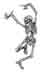

For Similes see
For Indexes of Sutta Titles see
Index of Sutta Titles for the Four Nikāyas
or, for indexes of titles for individual Nikāyas:
[Aṅguttara Nikāya] [Dīgha Nikaya] [Majjhima Nikaya] [Saṁyutta Nikāya]
At this point this Index is mostly a version of the 'back-of-the-book indexes of the Pāḷi Text Society translations. The DB, and GS 1 are fully linked; the rest have only been partially linked or not linked at all. Duplicates have been merged. Subject coverage is that of the PTS books: it varies. Each book had its own indexer and was or was not limited by space. Nevertheless it is at this point usable.
To find an item that is not linked, go to the PTS page indicated for that entry in the Sutta Index and append the page number [#pg000] to the end of the address. Suttas by other translators are linked to from the Sutta Index or from the PTS sutta at the top of the translation. I understand that this is complicated and will not appeal as a way to search for many, but it can be done and will be useful to some. Those who have the hard copy of these books will find here a convenient way to search the indexes for all 16 volumes.
 —p.p.
—p.p.
Please note: Inclusion in this index does not represent endorsement of the translation implied. The terms are those used in the translations. There may come a time when the various translations of a specific term are referred to each other — with a few exceptions, that is not the case at this time.
This is a simple book-style search tool. It is based on the PTS sutta translation book indexes and points to this site's Sutta Index for some subjects, and to the page(s) where the subject can be found for the PTS translations. There are other direct links to subjects not included in the PTS translations. In most cases there will be a need to do a little reading to find the exact thing saught. For the time being, where the majority of references are not linked, for subjects mentioned in the translations, the interested reader will need to find the page referenced in the PTS translation and then if other translations are of interest it will be necessary to determine the sutta and find the reference by locating the similar context, or, as each sutta is in a single file, then search that file for similar context or actual word by way of the 'Find' tool in the browser (usually CTRL+F). Sorry! But that is as far as this project has progressed to this point.
A book-style index was decided upon, though a computer-style search tool will be more helpful in certain types of search, as a consequence of the observation that most people cannot find what they are looking for unless they know the exact wording which will bring them there. Here the user is expected to browse the content of the index to find wording likely to bring him to what he seeks. A further advantage to a book-style index is the discovery of many subjects unthoughtof before; something entirely missing from computer searches.
To speed up what is a very large file, a separate index has been made for similies: Index of Similes.
For a dictionary of Pāḷi terms see this site's version of the Pāḷi Text Society's  Pāḷi-English Dictionary.
Pāḷi-English Dictionary.
The full 2-volume edition of the Dictionary of Pāḷi Proper Names [DPPN] is available in  PDF form for reading or download from the Files and Downloads page.
PDF form for reading or download from the Files and Downloads page.
[A] [B] [C] [D]
[E] [F] [G] [H] [I]
[J] [K] [L] [M]
[N] [O] [P] [Q] [R]
[S] [T] [U] [V] [W] [Y] [Z]
Abbreviations:
AN = Aṅguttara Nikāya but used as a general sutta identfier for both Pāḷi texts and translations.
BI = Buddhist India, T.W. Rhys Davids.
DB = Dialogues of the Buddha, T.W. & C.A.F. Rhys-Davids
DN = Dīgha Nikāya but used as a general sutta identfier for both Pāḷi texts and translations
GS = Gradual Sayings F.L. Woodward, E.M. Hare. NB: The number given for "GS" in this index represents the Pāḷi Text Society volume number, not the Pāḷi book number.
KS = Kindred Sayings C.A.F. Rhys-Davids, F.L. Woodward. NB: The number given for "KS" in this index represents the Pāḷi Text Society volume number, not the Pāḷi Saṁyutta number.
MLS = Middle Length Sayings, I.B. Horner
MN = Majjhima Nikaya but used as a general sutta identifier for both Pāḷi texts and translations.
PTS = Pāḷi Text Society
SN = Saṁyutta Nikāya but used as a general sutta identifier for both Pāḷi texts and translations.
Abandoning, (PTS GS-2 pg(s) 31, 222) (PTS GS-5 pg(s) 72) (PTS KS-3 pg(s) 75) (PTS KS-4 pg(s) 8, 9, 15, 26, 137, 148, 157, 170, 175, 252) (PTS KS-5 pg(s) 44, 113);
a bhikkhu's, (PTS GS-5 pg(s) 145);
Ariyau disciple's, (PTS GS-5 pg(s) 171ff.)
idea of, (PTS GS-5 pg(s) 76)
Abbuda Purgatory, (PTS GS-5 pg(s) 116)
Abhaya, Licchavi, (PTS GS-1 pg(s) 200) (PTS GS-2 pg(s) 211)
Abhaya, Prince: questions the Buddha on condition and cause, (PTS KS-5 pg(s) 107)
Abhibhu, (PTS GS-1 pg(s) 206) (PTS KS-1 pg(s) 194f.)
Abhidhamma, (PTS GS-3 pg(s) 280) (PTS KS-2 pg(s) 113, n. 3) (PTS MLS III pg(s) xii, xiv, 25 n.)
see More-Dhamma
Abhidhamma-kathā, DN 33 (PTS DB III pg(s) 199)
Abhiñjika, bhikkhu, a talker. (PTS KS-2 pg(s) 137);
associated with Anuruddha, (PTS KS-2 pg(s) 137f.)
Abhorrence (jegucchin), (PTS GS-4 pg(s) 119, 125)
Abide, MN 70 to, (PTS MLS II pg(s)(s) 149f., 153f.).
Abider (vihari), (PTS MLS II pg(s) 138ff.)
Abiding (vihāra), (PTS MLS III pg(s) 154, 156f., 163, 343) MN 31 MN 32 MN 122 MN 123 MN 151 260f., 267, 270;
Brahma-, (PTS MLS II pg(s) 269f. 272.)
in comfort, (PTS MLS III pg(s) 53, 180, 202); MN 21 MN 31 161, 259ff., 327; (PTS MLS II pg(s) 21, 108, 138ff., 146f. 293f. 308, 324, 327),
in confusion, MN 36 304;
in ease, MN 4 MN 6 MN 8 30, 42, 52f., 394; (PTS MLS II pg(s) xi, xxvii, 20, 22ff., 131f.;) (PTS MLS III pg(s) 55, 61, 137, 198);
in emptiness, (PTS MLS III pg(s) 147, 343);
in equanimity, MN 12 107; (PTS MLS III pg(s) 350);
in friendliness ... equanimity, (PTS MLS II pg(s) 34f.); (PTS MLS III pg(s) 191);
of great men, (PTS MLS III pg(s) 343)
peaceful, (PTS MLS III pg(s) 53)
-places, (PTS GS-2 pg(s) 210)
(vihāra), the nine,
See also Friendliness, Abodes.
Ablution of brāhmins, (PTS GS-5 pg(s) 152)
Abodes of beings (sattāvāsā satta+avāsā), (PTS GS-4 pg(s) 276) (PTS GS-5 pg(s) 37, 39)
pure, (PTS GS-2 pg(s) 133)
the seven, (PTS KS-3 pg(s) 69)
Abolitionist (venayika), (PTS GS-4 pg(s) 119, 125)
Aboriginals, (PTS GS-3 pg(s) 157, 166)
Absolute, the, (PTS GS-1 pg(s) 97)
Absorption, see Jhāna.
Abstention, (PTS GS-2 pg(s) 222) (PTS KS-4 pg(s) 225)
from faults, (PTS KS-5 pg(s) 393ff.)
of forthgoer, (PTS GS-5 pg(s) 143ff.)
Abundance in, (PTS GS-2 pg(s) 152)
Abuse, -er, ive, (PTS GS-3 pg(s) 264);
five disadvantages, (PTS GS-3 pg(s) 184)
talk, (PTS GS-2 pg(s) 189)
Abyss (PTS KS-1 pg(s) 44, 268)
Acacia tree, (PTS KS-4 pg(s) 126)
Acceptance, (upasampada,) (PTS GS-3 pg(s) 84, 159, 197)
Access to Brahmā, the Ariyan, the Devas, the Imperturbable, (PTS GS-2 pg(s) 192)
Accidents, (PTS KS-4 pg(s) 155f.)
Accordant (anuloma), (PTS KS-3 pg(s) 36 n.)
Accountant, (PTS KS-4 pg(s) 267)
Accumulation of deeds, (kamma) (PTS GS-1 pg(s) 105) (PTS GS-5 pg(s) 190ff.)
Accutā, a fairy, DN 20 (PTS DB II pg(s) 290.)
Achieve, -ments to (papunati), (PTS MLS II pg(s) 173ff.)
the five, (PTS GS-3 pg(s) 92)
Aciravatī, (PTS GS-4 pg(s) 65, 136) (PTS KS-2 pg(s) 96)(PTS GS-3 pg(s) 286) (PTS GS-5 pg(s) 17) (PTS KS-5 pg(s) 32, 344, 387)
Act in accordance (takkara), (PTS GS-2 pg(s) 9)
of Information, (PTS MLS II pg(s) xxvii)
Acti -ve, -vity, -on: in godly living, (PTS GS-3 pg(s) 89);
worldly, (PTS GS-3 pg(s) 210, 220, 232);
source, variety, fruit, ending and steps thereto, (PTS GS-3 pg(s) 294)
Activities, see Saṅkhāra.
Acts, planned (abhisaṅkhārā), (PTS KS-2 pg(s) 58)
Adept and pupil, qualities of, (PTS GS-1 pg(s) 199, 205, 210) (PTS GS-3 pg(s) 240) DN 33 DN 34 (PTS DB III pg(s) 249, 265) (PTS GS-4 pg(s) 2, 223)
(asekha), (PTS GS-4 pg(s) 296) (PTS GS-5 pg(s) 12, 154) (PTS KS-1 pg(s) 124);
aggregate of, (PTS GS-5 pg(s) 207)
ten endowments of, (PTS MLS II pg(s) 118f.)
(defined), (PTS KS-5 pg(s) 154, 204ff., 265)
(arahant's knowledge), (PTS KS-3 pg(s) 70)
Adherent, (PTS KS-3 pg(s) 11)
Adhering, (PTS KS-4 pg(s) 26, 54)
Adhimuccati, (PTS MLS III pg(s) xxf.)
Adhvaryu Brahmans, DN 13 (PTS DB I pg(s) 303.)
Aditi, DN 32 (PTS DB III pg(s) 190f.)
Admonishing, (PTS GS-2 pg(s) 117, 127) (PTS GS-5 pg(s) 56)
Adoption, son by (gotrabhū), (PTS GS-5 pg(s) 18)
Adulterer, -ess, (PTS KS-2 pg(s) 172f.)
Advantage, see Profit
Advantages of virtue, DN 33 (PTS DB III pg(s) 226) (PTS GS-2 pg(s) 193)
Adviser, Treasure of the, (PTS MLS III pg(s) 220)

Adze, (PTS KS-3 pg(s) 131)
Aeon, the, (PTS GS-2 pg(s) 145)
of progression, destruction, (PTS GS-3 pg(s) 13) (PTS KS-2 pg(s) 86, 121)
of evolution, etc., (PTS KS-2 pg(s) 86, 144)
Affable, (PTS GS-3 pg(s) 33)
Affliction (upaddava), (PTS GS-2 pg(s) 227)
born of, (PTS MLS II pg(s) 192ff.)
for teachers, etc., (PTS MLS III pg(s) 159ff.)
Afflicted (aḍḍha-bhūta), (PTS KS-4 pg(s) 11)
Agātasattu, son of a Videha princess, king of Magadha in the Buddha's time, DN 1, DN 2 DN 16 (PTS DB I pg(s) 56, 64-68, 94, 95.)(PTS DB II pg(s) 78, 187).
Age, (PTS KS-3 pg(s) 1)
respect for, (PTS GS-1 pg(s) 63)
See Decay, Life
Aggāḷava, (PTS GS-4 pg(s) 147)
Aggañña, defined, DN 24 (PTS DB III pg(s) 9, n. 26, 25);
Suttanta, DN 27 (PTS DB III pg(s) 77f.)
Aggregates, (khandha), body, feeling, perception, (activities, construction see saṅkhārā), consciousness), DN 33 DN 34 (PTS DB III pg(s) 224f., 255, 260) (PTS KS-2 pg(s) 23, 25, 83f., 166) (PTS GS-4 pg(s) 105).
of grasping (PTS GS-4 pg(s) 101, 301) (PTS KS-1 pg(s) 141, 169f.); (PTS KS-3 pg(s) 93 n.)
attributes of, (PTS KS-2 pg(s) 168)
the five, (PTS KS-3 pg(s) 3-5, etc.)
Agita, of the garment of hair, his doctrine, DN 2 (PTS DB I pg(s) 73.)
Agitation, (PTS GS-2 pg(s) 119)
Agīvakas, DN 2, DN 8 (PTS DB I pg(s) 71, 219, 220, 227, 232.)
Agni, sacrifices to, one of the low arts, DN 1 (PTS DB I pg(s) 17;)
shrine to, DN 3 (PTS DB I pg(s) 126.)
Agriculture, MN 13 (PTS MLS I pg(s) 113) (PTS GS-1 pg(s) 209) (PTS MLS II pg(s) 369, 387f.).
Ahaha Purgatory, (PTS GS-5 pg(s) 116)
Ailing, five things not to be forsaken by one who is, (PTS GS-3 pg(s) 109)
Aim(s), (PTS GS-5 pg(s) 1 n., 38, 155f., 173f.) (PTS KS-2 pg(s) 103, 106f.)
aimless, (PTS KS-4 pg(s) 203)
rajah's son's and bhikkhu's, (PTS GS-3 pg(s) 118, 258)
of the Buddhist recluses, DN 2, DN 6 (PTS DB I pg(s) 63, 64, 202.)
Aitareya, Āraṇyaka, DN 5 (PTS DB I pg(s) 171.)
Ajātasattu, king of Magadha, DN 16 (PTS DB II pg(s) 78, 187). (PTS KS-1 pg(s) 38, n.1; 100f.) (PTS GS-2 pg(s) 190) (PTS GS-4 pg(s) 11ff.) (PTS KS-2 pg(s) 163f., 179)
Keakambala, (PTS KS-1 pg(s) 94) (PTS KS-3 pg(s) 166 n.) (PTS KS-4 pg(s) 250 n., 280)
Licchavi general, DN 24 (PTS DB III pg(s) 17f.)
questions of, (PTS KS-2 pg(s) 36)
wanderer, (PTS GS-5 pg(s) 159)
Akaniṭṭhā, gods, DN 21 (PTS DB II pg(s) 319).
Ākoṭaka, devaputta deva-putta, (PTS KS-1 pg(s) 90f.)
Ālakamandā, DN 32 (PTS DB III pg(s) 193)
Āḷava, (PTS KS-2 pg(s) 159)
Āḷavaka, DN 32 (PTS DB III pg(s) 196)
Āḷavī, Āḷavi, Ālavī, (PTS GS-1 pg(s) 119) (PTS GS-4 pg(s) 147) (PTS GS-2 pg(s) 170) (PTS KS-1 pg(s) 234f. 275)
Āḷavite, the, bhikkhunī, (PTS KS-1 pg(s) 102f.)
Alert, -ness (uṭṭhāna), (PTS GS-4 pg(s) 188, 215)
(āloka), (PTS GS-4 pg(s) 292)
All, the (sabba), MN 49 (PTS MLS I pg(s) 392)
Alley walk, the place to pace, pacing, walking up and down, back and forth, walking meditation, (cankama) fixing the thought on AN 7.58 (PTS GS-4 pg(s) 52)
the five advantages, AN 5.29 (PTS GS-3 pg(s) 21)
All-knowing, all-seeing, (PTS MLS II pg(s) 159f. 199, 228f., 309) (PTS MLS III pg(s) 6)
Allowable (kappati), (PTS MLS II pg(s) 35, 133, 300);
not, (PTS MLS II pg(s) 133, 353)
All-proficient (kevalin), (PTS GS-5 pg(s) 12)
Alms, (PTS GS-1 pg(s) 143) (PTS KS-1 pg(s) 143f.)
content with, (PTS MLS III pg(s) 61, 86f.) (PTS MLS II pg(s) 207f.)
food, MN 2 MN 3 MN 5 MN 6 MN 7 MN 17 MN 21 MN 26 MN 27 MN 31 MN 33 MN 39 MN 40 MN 50 (PTS MLS I pg(s) 13, 17, 37, 41, 48, 137ff., 163, 216f., 226, 257ff., 274, 325, 335, 400) (PTS GS-1 pg(s) 8, 34, 252) (PTS GS-2 pg(s) 29) (PTS MLS II pg(s) 11, 34, 120f. 256) (PTS MLS III pg(s) 24f., 103, 199ff., 343)
-gathering, (PTS MLS III pg(s) 345)
-giver, almoner, (PTS GS-3 pg(s) 24ff., 44)
-giving, (PTS GS-4 pg(s) 20, 128, 143, 160)
-man, -men (bhikkhu), (PTS KS-1 pg(s) 15, 65, 94f., 179, 231, 253) (PTS KS-2 pg(s) 126, 174)
pindolya (PTS KS-3 pg(s) 75 n., 77)
to be thrown away, MN 3 (PTS MLS I pg(s) 17)
regular supply, (PTS MLS II pg(s) 353f.)
see also Requisites
Alone, (PTS KS-2 pg(s) 193)
Aloof, MN 12 MN 24 MN 32 MN 36 (PTS MLS I pg(s) 103, 187, 266, 295f.) (PTS MLS II pg(s) 111f. 136f., 207, 209);
aloofness, MN 3 MN 4 MN 12 MN 32 MN 44 (PTS MLS I pg(s) 18ff., 22, 105, 187, 266, 365) (PTS MLS II pg(s) 105, 126, 207, 209, 213, 215f.) (viveka), (PTS MLS III pg(s) 21ff., 153ff., 157, 159f., 327) (PTS GS-1 pg(s) 220) (PTS KS-5 pg(s) 55)
happiness of, (PTS MLS III pg(s) 281, 283)
(see also Meditation)
Alwis, James d', DN 11 (PTS DB I pg(s) 283.)
Ambābaka Grove, (PTS KS-4 pg(s) 190 n.)
Ambalaṭṭhikā, garden and rest-house in Magadha, DN 1 (PTS DB I pg(s) 2;)
another, DN 5 (PTS DB I pg(s) 173.)
in Anurādhapura, DN 1 (PTS DB I pg(s) 2.)
Ambapālī, courtezan, DN 16 (PTS DB II pg(s) 102-105.)
Ambapālī's Grove, (PTS GS-4 pg(s) 64) (PTS KS-5 pg(s) 119ff.)
Ambara-Ambaravatiya, DN 32 (PTS DB III pg(s) 193)
Ambasandā, village in Magadha, DN 17 (PTS DB II pg(s) 199).
Ambaṭṭha, DN 3 (PTS DB I pg(s) 109f.)
charm, DN 3 (PTS DB I pg(s) 118.)
Ambrosia, Ambrosial (PTS KS-1 pg(s) 154, 173f., 218, 245, 274)
Amity friendlyness, love, loving kindness, (mettā), (PTS GS-4 pg(s) 54ff., 68f.) (PTS GS-2 pg(s) 132);
as being considerate, (PTS GS-3 pg(s) 208);
as factor of escape, (PTS GS-3 pg(s) 209ff.; 311)
exhorting about, (PTS GS-3 pg(s) 145);
in act, word, mind, (PTS GS-3 pg(s) 102)
pervading world with, (PTS GS-3 pg(s) 165);
release by, (PTS GS-4 pg(s) 103, 198, 168, 233, 265)
to put away malice, (PTS GS-3 pg(s) 137);
with snakes, (PTS GS-2 pg(s) 82)
word of, (PTS GS-3 pg(s) 178)
see BrahmaVihāras
Analyses, the (paṭisambhidā), (PTS GS-4 pg(s) 19)
Analysis (vibhaṅga), (PTS MLS III pg(s) x, 233, 235f., 238, 245ff., 264, 271, 277f., 286, 293) (PTS GS-2 pg(s) 166-7) (PTS KS-5 pg(s) 184, 248ff.)
logical, causal, etc., (PTS GS-3 pg(s) 89, 93)
of man's feelings, thoughts, (PTS GS-3 pg(s) 287ff.)
Analyzing, (PTS KS-2 pg(s) 2, 107)
Ānanda shrine, (PTS GS-2 pg(s) 174)
Ānanda thera, (PTS KS-1 pg(s) 80); DN 16 (PTS DB II pg(s) 158-160, 177), DN 29 (PTS DB III pg(s) 112). (PTS GS-1 pg(s) 19, 20, 115, 195ff., 199ff.) (PTS GS-2 pg(s) 89, 92, 162, 168, 173) (PTS GS-3 pg(s) 102, 106, 135); (PTS GS-5 pg(s) 6, 7, 26, 74ff., 94ff., 103ff., 134ff.) (PTS KS-4 pg(s) 21 n.)
admonishes Vangisa, (PTS KS-1 pg(s) 238f.);
and nun, (PTS GS-2 pg(s) 147);
asked about a dispute, (PTS GS-2 pg(s) 243);
asks about the world, (PTS KS-4 pg(s) 28 ff.);
asks about Arahants, (PTS KS-2 pg(s) 161).
asks about feelings, (PTS KS-4 pg(s) 148ff.);
asks for teaching, (PTS KS-4 pg(s) 29);
associated with Bhaṇḍa, (PTS KS-2 pg(s) 137);
at assembly-hall, (PTS GS-2 pg(s) 59);
at Great Wood, (PTS KS-5 pg(s) 284);
brings the Buddha to Sangārava, (PTS KS-1 pg(s) 232);
comforts Sirivaḍḍha, (PTS KS-5 pg(s) 155);
corrected by the Buddha, (PTS KS-1 pg(s) 13);
earthquakes (PTS GS-4 pg(s) 205);
eulogy of Sariputta, (PTS KS-1 pg(s) 87f.);
—Ghosita, (PTS KS-4 pg(s) 71);
gives Puṇṇa's teaching on the conceit 'I am,' (PTS KS-3 pg(s) 89);
his disciples, (PTS KS-2 pg(s) 108f.);
instructs Bhadda, (PTS KS-5 pg(s) 14);
instructs nuns, (PTS KS-5 pg(s) 134);
introduces the brethren, (PTS KS-3 pg(s) 80-1;)
Migasala, on wayfaring, (PTS GS-3 pg(s) 246; 270, 273, 286.ff.);
mindfulness, (PTS KS-5 pg(s) 291ff.);
mourns, (PTS KS-1 pg(s) 107);
on escape, (PTS GS-4 pg(s) 296);
on minding,(PTS GS-3 pg(s) 227; 243);
overhears Five-tools and Udāyin, (PTS KS-4 pg(s) 150ff.);
praises of, (PTS GS-2 pg(s) 135);
presents Susīma, (PTS KS-2 pg(s) 85);
prophecy about, (PTS GS-1 pg(s) 208);
questions Sāriputta, (PTS KS-3 pg(s) 187-9)) on depth of causal law. (PTS KS-2 pg(s) 29f., 64) invites teaching, (PTS KS-2 pg(s) 76);
questions the Buddha about his psychic powers, (PTS KS-5 pg(s) 252-5);
questions the Buddha at Brick Hall, (PTS KS-5 pg(s) 312);
questions the Master about Vaccha, (PTS KS-4 pg(s) 281) asks about 'ceasing,' (PTS KS-3 pg(s) 23);
reputation of, (PTS GS-5 pg(s) 156ff., 173, 203-4, 219, 223)
Sariputta, on aptness, (PTS GS-3 pg(s) 147; 158, 214);
sees Jānussoṇi, (PTS KS-5 pg(s) 4);
taught about old age by the Buddha, (PTS KS-5 pg(s) 230);
taught breathing exercises, (PTS KS-5 pg(s) 286);
taught impermanence by the Buddha, (PTS KS-3 pg(s) 154);
taught the Mirror of the Dhamma, (PTS KS-5 pg(s) 313);
teaches brethren, (PTS KS-4 pg(s) 58);
teaches Channa, (PTS KS-3 pg(s) 113);
teaches Uṇṇābha at Kosambī, (PTS KS-5 pg(s) 243);
the Obligations, (PTS GS-4 pg(s) 140);
the praiseworthy (PTS GS-4 pg(s) 21);
—Udāyin, (PTS KS-4 pg(s) 102ff.);
with Cunda, (PTS KS-5 pg(s) 141);
with Koliyans, (PTS GS-2 pg(s) 204);
with Musīla and Saviṭṭha, (PTS KS-2 pg(s) 81f.);
with Sāriputta, (PTS KS-5 pg(s) 301, 316, 330);
with the Buddha at Vesālī, 130ff., (PTS KS-5 pg(s) 151);
with the Buddha, on Vajjian growth, (PTS GS-4 pg(s) 12)
with the Licchavī, (PTS KS-5 pg(s) 381)
with Udāyin, on percipience, (PTS GS-4 pg(s) 286);
with Upavana, (PTS GS-3 pg(s) 143);
witt Tapussa and the Buddha on giving up (nekkhamma), (PTS GS-4 pg(s) 293ff., 248)
women going forth, (PTS GS-4 pg(s) 182)
See Kassapa, Mahā-
Anāthapiṇḍika, (PTS GS-1 pg(s) 23); (PTS GS-2 pg(s) 20, 55, 59, 72, 73, 77, 81, 214) (PTS GS-3 pg(s) 37, 39, 152, 155, 314) (PTS GS-4 pg(s) 56, 262, 272) (PTS GS-5 pg(s) 119ff.; 124ff., 127ff.) (PTS KS-1 pg(s) 271f.);
discusses offerings, (PTS GS-1 pg(s) 58);
instructed, (PTS KS-2 pg(s) 47);
Park of, (PTS GS-5 pg(s) 1, 33, 63, 66, 74, 86, 89, 94, 119, 127) (PTS GS-3 pg(s) 1, 24, 37, 42, 47, 51, 55, 150, 202, 214, 233, 236, 243, 254) (PTS GS-4 pg(s) 1, 20, 24, 56, 103, 175, 231, 237, 248, 252, 262) (PTS KS-1 pg(s) 1, 25, 42, 46. n. 3, 80, 93, 135, 137, 140, 160, 176, 238, 241, 244, 248, 266, 269); (PTS GS-1 pg(s) 42, 58, 87) (PTS KS-3 pg(s) 89, 93, 186) (PTS KS-4 pg(s) 1, 64, 179, 185, 213, 265) (PTS KS-5 pg(s) 1, 58, 121, 140, 153, 269, 301, 319, 346) passim
reborn as deva, (PTS KS-1 pg(s) 79f.)
Suttas so-called, (PTS KS-1 pg(s) 73f.);
sickness and cure of, (PTS KS-5 pg(s) 329ff.);
taught guarded thought, (PTS GS-1 pg(s) 240)
taught about fear, (PTS KS-5 pg(s) 333);
Ancestors (pubbapeta pubbe+peta), (PTS MLS II pg(s) 373ff.)
Andha, (PTS GS-3 pg(s) 255)
Andhakavinda, (PTS GS-3 pg(s) 106) (PTS KS-1 pg(s) 193)
Anejaka, fairies, DN 20 (PTS DB II pg(s) 290.)
Angaka, DN 4 Soṇadaṇda's nephew, (PTS DB I pg(s) 155.)
Angas, (PTS GS-1 pg(s) 192) (PTS GS-4 pg(s) 172) (PTS KS-5 pg(s) 200)
Anger (kodha, -na,) discontent, ill-will, (PTS GS-4 pg(s) 59ff.) MN 5 MN 36 (PTS MLS I pg(s) 34ff., 305) (PTS MLS II pg(s) 114f.) (PTS GS-1 pg(s) 83, 86, 180, 261) (PTS GS-3 pg(s) 87);
discontented, (PTS MLS II pg(s) 393)
displeased, MN 16 MN 21 (PTS MLS I pg(s) 132, 134, 159f., 162f.)
feeding on, (PTS KS-1 pg(s) 304.)
how to understand (PTS GS-4 pg(s) 102)
of snake, women, (PTS GS-3 pg(s) 192; 201, 235, 264, 315)
wrath (kodhupāyāsa kodha+upāyāsa), (PTS MLS II pg(s) 132)
See Wrath
Angīrasa, sage (PTS KS-1 pg(s) 107, 247) (PTS GS-4 pg(s) 34) (PTS GS-3 pg(s) 164);
Buddha, (PTS GS-3 pg(s) 175)
Anicca idea of, impermanence, instability, change, inconstance [PED] [GLOSSOLOGY] (PTS GS-3 pg(s) 68f., 109f., 200, 235, 314) (PTS GS-4 pg(s) 8, 14, 27, 151, 258, 265) (PTS GS-5 pg(s) 71, 74ff., 199) (PTS KS-4 pg(s) 13, 23, 39, 52, 65, 84, 91ff., 144, 157, 210, 230, 271) (PTS KS-5 pg(s) 113) (PTS MLS I pg(s) 118, 177f. 232, 234ff., 306, 310f., 400) (PTS MLS II pg(s) 15ff. 96) (PTS MLS III pg(s) xxviii, xxx, 68, 125, 126 n., 266ff., 291 n. 46, 48, 68f., 151, 266ff., 291, 324ff., 329f.) (PTS KS-2 pg(s) 22, 40, 88, 130) (PTS KS-1 pg(s) 9, 85, 180, 183, 197, 236, 255) (PTS KS-3 pg(s) 20, 39, 49, 65, 75, 82, 87, 88, 94-6, 97, 107, 112, 116, 122, 124-5, 129, 132, 146, 153)
as Ill, (PTS GS-5 pg(s) 129)
ill in, (PTS GS-4 pg(s) 29);
perception of, (PTS MLS III pg(s) 124)
seeing in many things, (PTS GS-4 pg(s) 100)
seeing it (aniccānupassin anicca+anupassin), (PTS KS-3 pg(s) 150)
with compounded ... liable to stopping, (PTS MLS II pg(s) 179);
with suffering, a disease, etc., (PTS MLS II pg(s) 105f., 179)
Animal birth, MN 12 (PTS MLS I pg(s) 98ff.)
animal kingdom, (PTS KS-1 pg(s) 47, 104)
animal(s), (PTS MLS II pg(s) xxxi, 5, 236 n.) (PTS MLS III pg(s) 302f.) (PTS GS-4 pg(s) 24, 66, 114, 130);
animal-group, (PTS KS-3 pg(s) 128)
birth as (PTS GS-5 pg(s) 178)
-birth xxiv, (PTS MLS III pg(s) 72, 213f., 224);
birth, womb, (PTS MLS II pg(s) 55f. 377)
grass-, dung-eaters, etc., (PTS MLS III pg(s) 213f.)
skin of, (PTS GS-4 pg(s) 263ff.)
stealthy, (PTS GS-5 pg(s) 187)
Animals, DN 2 kindness to, (PTS DB I pg(s) 57.)
Animal tamer's fate, (PTS KS-2 pg(s) 172)
Animism, DN 24 DN 26 (PTS DB III pg(s) 2, 54)
Añjana Grove, (PTS GS-4 pg(s) 287) (PTS KS-1 pg(s) 77) (or Park), (PTS KS-5 pg(s) 60, 194)
Aññā, (PTS KS-2 pg(s) 85, 151)
Annabhāra, Wanderer, (PTS GS-2 pg(s) 32, 182)
Aññā Kondañña, (PTS GS-1 pg(s) 16)
Annihilation (vibhava), MN 9 MN 11 MN 22 MN 44 MN 49 (PTS MLS I pg(s) 60, 64 n., 87, 180 n., 361, 393)
-ists, MN 2 MN 9 MN 11 (PTS MLS I pg(s) 11 n., 60 n., 87 n.)
Annihilationism, (PTS MLS II pg(s) 177 n. 180 n.);
ist, (PTS MLS II pg(s) 176 n.)
Annihilationist (heresy), (PTS KS-3 pg(s) 3n., 25n., 41n., 64, 83)
(ucchedavāda uccheda+vāda), (PTS GS-4 pg(s) 119, 125)
theory, (PTS KS-2 pg(s) 12, n. 3, 16)
Anotattā lake, (PTS GS-4 pg(s) 66)
Another mode (apara pariyaya), (PTS MLS III pg(s) 261f.)
Answers to questions, (PTS GS-2 pg(s) 53, 138)
Antelope (Deer) Park, (or Wood) (Migadāya miga+dāya) (PTS KS-5 pg(s) 60, 194) (PTS GS-2 pg(s) 69) (PTS KS-4 pg(s) 73, 101, 273) (PTS KS-2 pg(s) 79)
Antelope, (PTS KS-1 pg(s) 25, 257;)
Bank, (PTS KS-1 pg(s) 181)
Ant-hill, MN 23 (PTS MLS I pg(s) 183)
Anticedential Concuurrence see Paṭicca-samuppāda
Anupiya, of the Mallas, DN 24 (PTS DB III pg(s) 7)
Anurādha, bhikkhu, abused by heretics, (PTS KS-3 pg(s) 99-101)
questioned by heretics, (PTS KS-4 pg(s) 269)
Anuruddha, DN 16 (PTS DB II pg(s) 176, 177, DN 30 (PTS DB III pg(s) 261, n. 39) (PTS GS-1 pg(s) 16, 259) (PTS GS-2 pg(s) 244) (PTS GS-3 pg(s) 214) (PTS KS-2 pg(s) 108f.) (PTS KS-1 pg(s) 183, 198, 254, 269)
asks about women with the Master, (PTS KS-4 pg(s) 163ff.)
at Jeta Grove, (PTS KS-5 pg(s) 261, 269);
associated with Abhiñjika, (PTS KS-2 pg(s) 137)
at Ambapālī's Grove, (PTS KS-5 pg(s) 267);
at Cactus Grove, (PTS KS-5 pg(s) 264);
at Sāketa, (PTS KS-5 pg(s) 153);
at Sal-tree Hut, (PTS KS-5 pg(s) 266);
in Dark Wood (sick), (PTS KS-5 pg(s) 268)
on women who become devas, (PTS GS-4 pg(s) 175ff.)
with the Buddha, on thoughts of a great man (mahā-purisa), (PTS GS-4 pg(s) 154ff.)
Anxiety, MN 22 (PTS MLS I pg(s) 175f.)
Any-bed men, (PTS GS-3 pg(s) 162)
Apathy (tandi), (PTS MLS II pg(s) 136f.).
Appamāda [appa mada āda pamāda] non-carelessness, non-negligence, non-indolence, non-remissness, thoughtfullness, carefullness, conscientiousness, watchfullness, vigilance, earnestness, diligence, zeal, untiring, heedfulness, strenuousness, seriousness [PED] [GLOSSOLOGY] (PTS KS-1 pg(s) 36, 40, 85, 111f., 258, 276;) (PTS KS-2 pg(s) 94) (PTS KS-4 pg(s) 46ff.) (PTS KS-5 pg(s) 5, 29, 115, 341) (PTS GS-1 pg(s) 9) (PTS GS-2 pg(s) 123) (PTS GS-3 pg(s) 219, 232) (PTS GS-4 pg(s) 16, 17, 80, 89) (PTS MLS II pg(s) 150ff., 291) (PTS GS-5 pg(s) 16)
study (yoga), (PTS MLS II pg(s) 145f..)
the one thing, (PTS GS-3 pg(s) 259; 268, 284, 312)
want of earnestness, careless, heedless, dalliance, etc., (PTS KS-1 pg(s) 161, 184f., 246)
Appetites, sensuous, (PTS GS-3 pg(s) 7, 17, 76, 281)
Application (anuyoga), (PTS GS-3 pg(s) 303) (PTS GS-5 pg(s) 13)
Approach (PTS KS-4 pg(s) 11, 171ff., 178)
to question, (PTS GS-2 pg(s) 184, 198)
with (saparikkamana sa+pari+kamana), of dhamma, (PTS GS-5 pg(s) 175 n.)
Approval, disapproval (apasādana ussādanā), (PTS MLS III pg(s) 278ff., 283) (PTS GS-2 pg(s) 257)
Aptness, in five things, (PTS GS-3 pg(s) 148, 251)
Arahant, (Arahat), DN 24 (PTS DB III pg(s) 3f. 12, 15;) (PTS GS-2 pg(s) 38, 254) (PTS GS-5 pg(s) 23, 81, 82, 147) (PTS KS-1 pg(s) 20, 21, 24, 36, 67, 105, 184, 226, 297, 301;)(PTS KS-2 pg(s) 17, 58, n. 1) (PTS KS-5 pg(s) 170, 176, 181, 183, 367) (PTS MLS II pg(s) xvi, xxxii, 304 n.)(PTS MLS III pg(s) xiv, xvii, xxii, xxviiif., 20 n., 143 n., 173 n., 305 n.); (PTS GS-1 pg(s) 93), (PTS KS-4 pg(s) 19, 33, n., 37, 79, 80, 82, 115, 186ff., 210, 216, 265ff., 281 n.)
bases of, DN 33 DN 34 (PTS DB III pg(s) 235, 259;)
a bhikkhu becomes, (PTS KS-3 pg(s) 64);
brahmins, (PTS KS-1 pg(s) 201f.);
declaration of, (PTS GS-3 pg(s) 58 (cf. 255, 268, 284))
decrease in, (PTS KS-2 pg(s)151);
description of, (PTS KS-1 pg(s) 178, 273);
destiny unpredictable, (PTS KS-1 pg(s) 33, 145;)
expressions used by Buddhists of the Arahat the same as those used by the priests of God, DN 11 (PTS DB I pg(s) 274.)
fate of slayer of, (PTS GS-3 pg(s) 112; 114, 118, 126, 155, 158, 173, 198, 241, 244, 255, 268, 279, 301, 308);
five things, DN 33 (PTS DB III pg(s) 225),
formula of, (PTS KS-3 pg(s) 88 n.);
has destroyed the asavas, (PTS KS-3 pg(s) 159)
has no more to do, (PTS KS-3 pg(s) 144);
his confession, (PTS KS-2 pg(s) 38f., 57);
his qualities compared with those of a Buddha, DN 14 DN 16 (PTS DB II pg(s) 2, 88, 89.)
how to become, (PTS GS-4 pg(s) 99);
is the real Brahman, DN 3, DN 4 (PTS DB I pg(s) 105, 138;)
laymen Arahats, DN 2 (PTS DB I pg(s) 63.)
-monk, (PTS GS-4 pg(s) 240, 245, 2, 140)
nine things he cannot do, DN 29 (PTS DB III pg(s) 125)
powers of, DN 34 (PTS DB III pg(s) 259),
-ship, (PTS GS-4 pg(s) 160, 183, 193) (PTS MLS III pg(s) xxiif., xxx, 24 n., 47 n., 50 n., 51 n., 170 n., 291 n., 318 n., 336 n.) (PTS GS-3 pg(s) 2, 22, 25, 27, 35, 42, 49, 58)
Tathāgata, (PTS KS-3 pg(s) 57 n.)
the five, (PTS KS-3 pg(s) 59);
used of the Buddha, DN 1 DN 16 (PTS DB I pg(s) 2;) (PTS DB II pg(s) 167),
Vajjian, (PTS GS-4 pg(s) 11);
virtues of, (PTS GS-1 pg(s) 191ff.)
work done, (PTS KS-1 pg(s) 67f. 226;)
worldly success dangerous to some, (PTS KS-2 pg(s) 161f.)
See also Perfected, Saint
Arahantship, defined, (PTS KS-4 pg(s) 170); the highest aim, DN 2, DN 6, DN 8 (PTS DB I pg(s) 94,, 192, 237;)
attainment of, (PTS KS-4 pg(s) 176)
formulas of, (PTS KS-1 pg(s) 97, 105, 177, 220)
intellect of, DN 11 (PTS DB I pg(s) 283.)
is emancipation, DN 6, DN 8 (PTS DB I pg(s) 201, 232;)
is the positive side of Buddhism, DN 9 (PTS DB I pg(s) 243;)
the Dialogues lead up to, DN 6, DN 8 (PTS DB I pg(s) 186, 206;)
Ārāmadaṇḍa, brahmin, (PTS GS-1 pg(s) 61)
archers, Sakyans, DN 29 (PTS DB III pg(s) 111)
archery, (PTS MLS III pg(s) 52)
Architecture, DN 17 (PTS DB II pg(s) 210-314.)
Ardent, ardour, (PTS KS-2 pg(s) 94; 194, n. 2)
Ardour, etc., MN 16 (PTS MLS I pg(s) 132ff.)
Arising, (PTS KS-3 pg(s) 51, 54 n., 55, 68) (PTS KS-4 pg(s) 103, 141, 157, 172) (PTS KS-5 pg(s) 64)
of mindfulness, (PTS GS-5 pg(s) 38) (PTS KS-5 pg(s) 119-68) see Stations
Arithmetic, DN 1, DN 2 (PTS DB I pg(s) 21, 22, 69.)
Ariṭṭha (bhikkhu), (PTS KS-5 pg(s) 278) DN 32 (PTS DB III pg(s) 193)
Ariṭṭha, lay-disciple, (PTS GS-3 pg(s) 314)
Ariṭṭhakas, fairies, DN 20 (PTS DB II pg(s) 290.)
Ariyan, MN 1 MN 4 MN 6 MN 8 MN 9 MN 12 MN 14 MN 22 MN 27 MN 31 MN 38 MN 40 (PTS MLS I pg(s) 3f., 29, 44, 52f., 57ff., 91, 95, 103, 108, 120, 174, 226ff., 259f., 322, 334) (PTS GS-1 pg(s) 135) (PTS KS-1 pg(s) 271.) (PTS KS-2 pg(s)49) (PTS KS-4 pg(s) 2, 3, 10, 12, 14, 24, 29, 52, 59, 84, 95, 98, 106, 138ff., 160, 168, 187ff., 195) (PTS GS-3 pg(s) 2, 7, 37ff., 60, 155ff., 205ff., 223, 291) (PTS GS-4 pg(s) 2ff., 72, 79, 108, 241, 259)
ablution (dhovana), (PTS GS-5 pg(s) 152ff.);
abusers of, (PTS KS-2 pg(s) 87);
access to the, (PTS GS-2 pg(s) 192-3);
an Ariyan, (PTS GS-3 pg(s) 69);
banner of seers, (PTS GS-2 pg(s) 60);
birth, (PTS MLS II pg(s) xviii, 289);
calm, (PTS MLS III pg(s) 292);
code, (PTS GS-4 pg(s) 289);
company, (PTS GS-1 pg(s) 67);
concentration, (PTS GS-4 pg(s) 23, 69); (PTS MLS III pg(s) 113f.); freedom, moral habit, wisdom, (PTS MLS III pg(s) xxxi, 81);
conditions, (PTS GS-4 pg(s) 241);
conduct, (PTS GS-4 pg(s) 69);
control, (PTS MLS III pg(s) 87);
couches, (PTS GS-1 pg(s) 167);
defamers of, (PTS GS-3 pg(s) 13)
deliverance, (PTS MLS III pg(s) 51);
descent by Ariyan discipline, (PTS GS-5 pg(s) 162ff., 171ff.);
dhamma, (PTS MLS II pg(s) 369, (PTS MLS III pg(s) 230) (PTS GS-1 pg(s) 125); (PTS GS-3 pg(s) 38 156); (PTS GS-4 pg(s) 15) (PTS GS-5 pg(s) 100);
disciple, (PTS GS-1 pg(s) 174ff., 190, 222); (PTS KS-2 pg(s) 22, 33, 42, 45, 47f., 54f., 66, 89, 99, 106,) (PTS KS-4 pg(s) 252) (PTS MLS III pg(s) 46ff., 51, 180f., 324ff.) (PTS GS-5 pg(s) 40ff. 93, 126, 171ff., 193ff., 211) (PTS KS-5 pg(s) 170, 200, 298, 308, 317, 334);
disciples, (PTS GS-2 pg(s) 65, 72, 73, 133, 214);
discipline, (PTS GS-1 pg(s) 239); (PTS GS-3 pg(s) 250); (PTS KS-2 pg(s) 92) (PTS GS-2 pg(s) 117, 131) (PTS MLS II pg(s) 26ff., 111);
discipline, death in, (PTS MLS III pg(s) 43);
discrimination, (PTS MLS II pg(s) 282-3, 310);
duty, DN 26 (PTS DB III pg(s) 62f.);
educated, (PTS GS-1 pg(s) 246);
Eightfold Path, Way (PTS KS-2 pg(s) 33, 74, 125) (PTS GS-3 pg(s) 292) (PTS GS-5 pg(s) 39, 118) (PTS MLS III pg(s) 114ff., 123, 338f., 344) (PTS KS-5 pg(s) 1-50) (PTS GS-2 pg(s) 38) (PTS GS-4 pg(s) 151) (PTS MLS III pg(s) 115, 279);
emetic, (PTS GS-5 pg(s) 154);
excellence, (PTS KS-4 pg(s) 209, 241ff.);
eye, (PTS GS-1 pg(s) 32);
faith of the, (PTS GS-1 pg(s) 202);
friendship, (PTS GS-2 pg(s) 35);
growth (PTS GS-3 pg(s) 66) (PTS GS-5 pg(s) 93) (PTS MLS II pg(s) 111);
his work done, (PTS KS-2 pg(s) 70f.);
how to become, (PTS GS-4 pg(s) 99);
insight of revulsion, (PTS KS-2 pg(s) 33); (PTS GS-3 pg(s) 52);
insight, (PTS GS-1 pg(s) 7) (PTS GS-5 pg(s) 19) (PTS KS-5 pg(s) 173, 198);
knowledge, (PTS GS-3 pg(s) 302)
lineage, DN 33 (PTS DB III pg(s) 217) (PTS GS-2 pg(s) 30);
listener, (PTS GS-4 pg(s) 39);
living, (PTS GS-5 pg(s) 21, 23);
men, (PTS GS-3 pg(s) 33);
merchants, DN 16 (PTS DB II pg(s) 92.)
method, (PTS GS-2 pg(s) 41) (PTS KS-5 pg(s) 334);
method, virtues and restraint, (PTS GS-5 pg(s) 47, 124, 125, 144, 211);
mindfulness, (PTS MLS II pg(s) 12) (PTS MLS III pg(s) 87);
moral habit, (PTS MLS II pg(s) 11f. 357) (PTS MLS III pg(s) 87);
Order (PTS GS-3 pg(s) 266);
penetration, (PTS GS-3 pg(s) 2, 45, 53); (PTS GS-4 pg(s) 3, 232);
practices loved by, (PTS GS-3 pg(s) 27, 45, 156, 234) (PTS GS-4 pg(s) 204)
profitable things, (PTS KS-5 pg(s) 69, 226);
purge, (PTS GS-5 pg(s) 153);
purification, (PTS GS-5 pg(s) 176)
quests, (PTS GS-2 pg(s) 253)
release, (PTS GS-4 pg(s) 69) (PTS KS-5 pg(s) 198);
religion, DN 31 (PTS DB III pg(s) 173),
relinquishment, (PTS MLS III pg(s) 292);
restraint, (PTS GS-2 pg(s) 223);
sabbath, (PTS GS-1 pg(s) 185ff.);
scoffers at, (PTS MLS II pg(s) 13, 71f. 75f. 174, 220);
silence, (PTS GS-4 pg(s) 105, 238);
speech, (PTS GS-2 pg(s) 251);
states (dhamma), (PTS MLS III pg(s) 158);
straight ways, (PTS KS-5 pg(s) 146);
talk, (PTS GS-1 pg(s) 180);
the Ariyan, (PTS GS-3 pg(s) 8, 184)(PTS GS-4 pg(s) 77, 104, 274, 276);
thought (citta2), (PTS MLS III pg(s) 115ff.);
thoughts (vitakkā), (PTS MLS III pg(s) 157);
truth, (PTS MLS III pg(s) xxxi, 292);
truths, (PTS GS-1 pg(s) 160); (PTS GS-3 pg(s) 9) (PTS KS-2 pg(s) 49, 125) the four, DN 16 DN 22 (PTS DB II pg(s) 96, 337-345); (PTS MLS III pg(s) xxvi, 286 n., 295ff.) (PTS KS-5 pg(s) 353ff.)
un-, (PTS MLS II pg(s) 126).
view, (PTS MLS III pg(s) 37);
virtue, etc., (PTS GS-2 pg(s) 1, 2, 65, 223, 243);
virtues, (PTS GS-1 pg(s) 189) (PTS GS-3 pg(s) 102);
vision, (PTS MLS II pg(s) 189);
wisdom, (PTS GS-4 pg(s) 69) (PTS MLS III pg(s) 44, 292, 326)
woman, (PTS GS-3 pg(s) 66) (PTS KS-5 pg(s) 340)
woman-disciple, (PTS GS-2 pg(s) 71)
See also Meditation
Ariyan Method see Paṭicca-samuppāda
Ariyans, (PTS MLS III pg(s) 264, 266f., 269f., 294, 301, 347ff.) (PTS GS-5 pg(s) 23, 25, 100) (PTS KS-1 pg(s) 58, 69, 188, 200, 296) (PTS KS-3 pg(s) 3, 37, 173);
abuse of, (PTS GS-5 pg(s) 201)
scoffers at, (PTS MLS III pg(s) 223)
Armour, DN 33 (PTS DB III pg(s) 212)
Army, (PTS KS-1 pg(s) 99, 110, 123)
four divisions, (PTS GS-3 pg(s) 116; 63, 262, 282)
fourfold, (PTS MLS III pg(s) 218f., 221)
Arrogance (atimāna), (PTS GS-4 pg(s) 102) (PTS GS-3 pg(s) 201, 315)
Arrow, MN 13 (PTS MLS I pg(s) 114)
Arrows, (PTS GS-3 pg(s) 120, 122)
Art of War, BD: Art of War, Sun Tzu.
Arts, low, (PTS KS-3 pg(s) 190-1)
Aruṇavat, (PTS KS-1 pg(s) 194)
aruṇavatī, (PTS KS-1 pg(s) 194)
As before, above, after, below, (PTS KS-5 pg(s) 249)
Āsāḷhā (festival), (PTS KS-3 pg(s) 59 n.)
Asama, devaputta deva-putta, (PTS KS-1 pg(s) 90)
Āsavas, corrupting influences, corruptions, fermentations, poisons, inate impulses, compulsions, cankers, effluents, taints, [PED] [GLOSSOLOGY] (PTS DB III pg(s) 121, 125, 209, 221, 250, 259) (PTS GS-1 pg(s) 71, 74, 77, 84, 97, 105, 148, 178, 201, 213, 219, 224, 235, 261, 268) (PTS GS-3 pg(s) 11) DN 29 DN 33(3, 4) DN 34 MN 122 (PTS GS-4 pg(s) 8, 9, 42, 49, 80, 82, 95, 110, 123, 193, 211, 240, 284, 291) (PTS GS-5 pg(s) 8, 10, 12, 25, 49, 50, 67, 90, 117, 139, 149, 164, 220) (PTS KS-2 pg(s) 25, 40, 58, 145) (PTS KS-5 pg(s) 391) (PTS KS-3 pg(s) 39, 50, 81-4, 94, 96, 99, 129-30, 137) (PTS KS-4 pg(s) 11, 15, 25, 66, 80, 110, 112, 146, 160); (PTS KS-5 pg(s) 45, 165, 367) (PTS KS-5 pg(s) 56) (PTS GS-5 pg(s) 145)(PTS MLS I pg(s) xxiii) (PTS MLS II pg(s) xxxi, 116f.) (PTS MLS III pg(s) xviii, xxviii, 88, 114ff., 154) when mind not composed for destroying,
aim of bhikkhu to destroy, (PTS GS-3 pg(s) 117);
and ignorance, MN 9 (PTS MLS I pg(s) 69f.);
attributes of freed bhikkhu, (PTS GS-4 pg(s) 151);
bending mind to destroy, (PTS GS-3 pg(s) 80);
born of doing amiss, (PTS GS-3 pg(s) 125);
defined, (PTS KS-4 pg(s) 173, 200, 205, 261)
destroyed, MN 1 MN 12 MN 18 MN 22 MN 23 MN 26 MN 30 MN 34 MN 43 (PTS MLS I pg(s) xx, 5 n., 6, 96, 141 n., 181, 186, 203, 219, 252, 261, 278, 359) (PTS MLS II pg(s) 4, 152ff., 201f.) (PTS MLS III pg(s) 55, 82ff. 93, 123, 183, 267 n., 328 n., 330 n.);
destroying, best of five things, (PTS GS-3 pg(s) 149);
destruction by mindfulness of death,(PTS GS-3 pg(s) 219);
destruction of, MN 2 MN 4 MN 7 MN 12 MN 17 MN 27 MN 36 MN 39 MN 40 MN 42 (PTS MLS I pg(s) 9, 29, 45, 95, 99, 102f., 136ff., 229, 303, 333, 338f., 349) (PTS MLS II pg(s) xii, xxxii, 13, 15ff., 23f. 31, 106f. 160, 168f. 175, 221) (PTS MLS III pg(s) 62, 88, 138, 143 327, 329) (PTS GS-2 pg(s) 5, 9, 24, 42, 44, 52, 85, 98, 104, 143, 146, 149, 191, 228, 235)
drugs,' 'poisons,' 'poison-drugs'), (PTS KS-1 pg(s) 20, n. 4, 21, 68, 75, 209, 252;)
drug-immune or purged (khīṇāsava), (PTS KS-1 pg(s) 21, 301)
flow of, (PTS GS-2 pg(s) 207)
freed from, (PTS MLS II pg(s) 14, 15ff., 180) (PTS MLS III pg(s) 70, 82ff., 88 151, 330, 336) (PTS GS-4 pg(s) 62);
gods, DN 20 (PTS DB II pg(s) 291.)
got rid of by Tathāgata, (PTS MLS II pg(s) 137);
got rid of, MN 36 MN 49 (PTS MLS I pg(s) 304, 394f.);
how to stop future, (PTS GS-3 pg(s) 235ff.);
-less (PTS MLS III pg(s) 115ff., 327)
mind freed from, MN 4 MN 7 MN 27 MN 33 MN 36 (PTS MLS I pg(s) 29, 48, 229, 271, 303);
origin, ending, way thereto, (PTS GS-3 pg(s) 76);
seven ways for getting rid of, MN 2 (PTS MLS I pg(s) 9ff.);
source, variety, fruit, ending, steps thereto, (PTS GS-3 pg(s) 291ff.);
taints, DN 14 (PTS DB II pg(s) 28.)
the mould to destroy, (PTS GS-3 pg(s) 302);
the Three, and the Four, DN 2 DN 3 (PTS DB I pg(s) 92, 93, 107,) DN 14 DN 16 (PTS DB II pg(s) 28, 105), DN 33(3) (PTS DB III pg(s) 213)
things leading to destroying, (PTS GS-3 pg(s) 68);
three sorts, (PTS GS-4 pg(s) 123) MN 2 MN 4 MN 7 MN 36 MN 39 (PTS MLS I pg(s) 10, 12, 29, 48, 303, 333) (PTS MLS II pg(s) 14, 113, 235) (PTS MLS III pg(s) 88, 151);
to be got rid of by six things, (PTS GS-3 pg(s) 276ff.);
truths of, (PTS MLS II pg(s) 13, 113, 235)
uprising, stopping of, etc., MN 4 MN 9 MN 270 (PTS MLS I pg(s) 29, 69f., 229)
various, (PTS GS-3 pg(s) 14, 33, 35, 89, 93, 101, 144, 109, 157, 179, 203, 216, 225, 255, 268, 296)
what destruction depends on, (PTS GS-4 pg(s) 284)
when destroyed, (PTS GS-3 pg(s) 15)
Ascertainments, (PTS KS-3 pg(s) 136, 157-8)
Ascetic (tapassin), austere, asceticism, austerities, MN 12 (PTS MLS I pg(s) 103) (PTS GS-3 pg(s) 199) (PTS KS-1 pg(s) 30f. 92, 104f. 229);
classes of, (PTS KS-3 pg(s) 171)
commended, (PTS KS-1 pg(s) 77)
condemned, censured, (PTS KS-1 pg(s) 18, 42, 61, 128;) (PTS KS-4 pg(s) 234ff., 241)
dhutaṅga duta+aṅga, (PTS MLS III pg(s) 91) (PTS GS-1 pg(s) 272ff.)
habits, practices (PTS GS-2 pg(s) 219)
naked, (PTS GS-1 pg(s) 186) (PTS GS-3 pg(s) 273)
Asceticism, DN 8 (PTS DB I pg(s) 206-240.), DN 25 (PTS DB III pg(s) 37f.).
Asibandhaka's Son, questions the Master about rebirth, (PTS KS-4 pg(s) 218ff.);
about Dhamma-teaching, (PTS KS-4 pg(s) 221);
about rebirth, (PTS KS-4 pg(s) 223);
visits Nāṭa's Son, (PTS KS-4 pg(s) 228)
Asoka (bhikkhu), (PTS KS-5 pg(s) 313)
Asoka, (Ashoka) DN 4 (PTS DB I pg(s) 142;)
his Edicts, DN 1, DN 2, DN 6 (PTS DB I pg(s) xviii, 7, 71, 191;)
first rock edict at Girnar
his battle against the priests, DN 12 (PTS DB I pg(s) 285.)
The Edicts of King Asoka, translation by Ven S. Dhammika
Asokī (nun), (PTS KS-5 pg(s) 313)
Aspiration (paṇidhi), (PTS GS-4 pg(s) 164) (PTS GS-1 pg(s) 79, 204) (PTS GS-2 pg(s) 170)
aspirations, (PTS KS-2 pg(s) 107f.)
(saṅkappa), (PTS MLS III pg(s) 298, 327f., 338);
See Purpose, saṅkhāra
Āsramas, four supposed stages in the life of a Brahman, DN 8 (PTS DB I pg(s) 212-219.)
Assail, to, MN 18 (PTS MLS I pg(s) 143, 147)
Assaji, bhikkhu, (PTS KS-5 pg(s) 360n.) (PTS KS-3 pg(s) 106-7)
Assakas, (PTS GS-1 pg(s) 192) (PTS GS-4 pg(s) 172) DN 19 (PTS DB II pg(s)(s) 270.)
Assatara Nāgas, DN 20 (PTS DB II pg(s) 289.)
Assemblies, DN 33 (PTS DB III pg(s)(s) 241)
sorts of, (PTS GS-4 pg(s) 76 (cf. 112); 205)
Assembly hall, (PTS MLS II pg(s) 353f.) (PTS MLS III pg(s) 129, 163f., 235)
Associated, (PTS KS-5 pg(s) 19)
Assurance, (PTS KS-1 pg(s) 250)
Astral body, Yoga idea of, DN 8 (PTS DB I pg(s) 62.)
Astray, cannot go, in four ways, (PTS GS-4 pg(s) 246)
Astronomy and astrology, DN 1 (PTS DB I pg(s) 30.)
Asura Town, (PTS KS-4 pg(s) 133)
Asuras, DN 20 (PTS DB II pg(s) 289), DN 24 DN 30 (PTS DB III pg(s) 12, 142, 145, 158f.) (PTS GS-1 pg(s) 126) (PTS GS-2 pg(s) 17, 101) (PTS GS-4 pg(s) 137, 290); (PTS KS-4 pg(s) 133) (PTS KS-5 pg(s) 213, 377-8) (PTS KS-1 pg(s) 279, n. 1, 281f.)
See also Titans.
Asurinda, brahmin, (PTS KS-1 pg(s) 203)
Āṭānāṭiya-Suttanta, (BI pg 219), DN 32 (PTS DB III pg(s) 185f.)
Aṭaṭa Purgatory, (PTS GS-5 pg(s) 116)
Atharva Veda quoted, DN 1, DN 9 (PTS DB I pg(s) 17, 19, 23, 25, 247;)
in the Milinda, DN 3 (PTS DB I pg(s) 110.)
not acknowledged as a Veda in the old texts, DN 3 (PTS DB I pg(s) 109,)
Athletic exercises, DN 1 (PTS DB I pg(s) 9, 13.)
Ātman, (PTS KS-4 pg(s) 14 n.) (PTS KS-1 pg(s) 56f. 152, n. 2)
Attached, the partly, devas who know, (PTS GS-4 pg(s) 43)
Attachment, aversion, confusion, (PTS MLS II pg(s) 34f., 139f., 173.) MN 16 MN 18 MN 47 (PTS MLS I pg(s) 133, 143, 380f.) (PTS KS-4 pg(s) 16);
and aversion (hatred), confusion, MN 5 MN 12 MN 22 MN 34 MN 36 MN 43 MN 44 (PTS MLS I pg(s) 32ff., 42, 86f., 93, 182, 279, 291, 359, 360f.);
control of, (PTS MLS III pg(s) 68);
fetters, delight, etc., (PTS MLS II pg(s) 177)
fivefold body, (PTS GS-3 pg(s) 23) (āsatti), (PTS MLS III pg(s) 19)
(raga), (PTS MLS III pg(s) 42f., 63f., 66, 158, 241ff., 326, 337);
with aversion, confusion, (PTS MLS III pg(s) 62, 123, 182, 292, 340ff., 343f.);
with repugnance, ignorance, (PTS MLS III pg(s) 334f.)
and repugnance, shunning, MN 9 MN 18 (PTS MLS I pg(s) 58, 61ff., 143, 147, 366)
Cf. Greed, etc.
Attainment (samāpatti), (PTS MLS III pg(s) 254)
boasting of, (PTS GS-5 pg(s) 106)
degrees of, (PTS GS-5 pg(s) 8)
in samādhi, (PTS KS-3 pg(s) 205)
Attainments, (PTS GS-1 pg(s) 266)
Attendant, (PTS GS-3 pg(s) 22, 95)
Attendants, (PTS KS-3 pg(s) 81)
Attention, lack of proper (amanasikāra a+manasa+sikkhā), (PTS MLS III pg(s) 203ff., 207) (PTS KS-4 pg(s) 118, 131) (PTS KS-5 pg(s) 71, 78, 87, 161)
Aṭṭhaka town, (PTS GS-5 pg(s) 220)
Aṭṭhaka, sage, (PTS GS-3 pg(s) 164) (PTS GS-4 pg(s) 34)
Attraction and repulsion, (PTS GS-2 pg(s) 229)
Attributes (bala), (PTS GS-4 pg(s) 150ff.)
Augury, DN 1 (PTS DB I pg(s) 16, 17.)
Auras (obhāsa), (PTS GS-4 pg(s) 201, 290)
Auspicious, the, (PTS MLS III pg(s) 233ff., 235ff., 238ff., 245ff.)
Austerity (tapo), (PTS MLS II pg(s) 233, 348, 388, 394) (PTS GS-3 pg(s) 183, 245) (PTS GS-5 pg(s) 14, 15);
not blamed bv Master, (PTS GS-5 pg(s) 131, 132)
Authorities in Dhamma, (PTS GS-2 pg(s) 174-7)
Autumn season, (PTS GS-5 pg(s) 17)
Avanti, Avantī,(PTS GS-1 pg(s) 192) (PTS KS-3 pg(s) 10, 14) (PTS KS-4 pg(s) 72, 195 and n.)(PTS GS-5 pg(s) 31)
Avantis, (PTS GS-4 pg(s) 172)
Avarice (macchariya), how to understand, (PTS GS-4 pg(s) 102) (PTS GS-3 pg(s) 44, 201, 315) (PTS KS-1 pg(s) 27, 20, 43, 47);
(see Stinginess, Greed, Meanness)
Average man, (PTS KS-1 pg(s) 186)
Aviha (Brahmaloka Brahma+loka), (PTS GS-1 pg(s) 61)
Aviruddhakā, religieux in the Buddha's time, DN 8 (PTS DB I pg(s) 220, 222.)
Avocations (vohāra), (PTS MLS II pg(s) 26ff.)
Avyākatāni, the Ten, DN 6 (PTS DB I pg(s) 186,-188)
Awake (buddha),, the (PTS MLS II pg(s) 329f. 337, 339) (PTS GS-4 pg(s) 69, 173);
awakening (sambodhi, -a), (PTS GS-4 pg(s) 7, 14, 97, 225, 231)
Awakened One(s), MN 27 MN 28 MN 50 (PTS MLS I pg(s) 223, 232, 401ff.) (PTS MLS III pg(s) 58ff., 82ff., 109, 162, 230, 286, 293, 303) (PTS MLS II pg(s) 291f., 335);
confidence in, MN 7 MN 28 (PTS MLS I pg(s) 46, 232ff.);
dispraise of, MN 36 (PTS MLS I pg(s) 291);
eye of, MN 26 (PTS MLS I pg(s) 213)
(PTS MLS III pg(s) 58ff., 82ff., 109, 162, 230, 286, 293, 303)
with Dhamma, etc., (PTS MLS III pg(s) 301f.) (PTS MLS II pg(s) 283, 398.)
see also Confidence, Self-awakened, Lord
Awakening (sambodha), (PTS MLS III pg(s) 157, 159, 202), MN 3 MN 4 MN 6 MN 14 MN 16 MN 22 MN 26 MN 35 MN 36 MN 48 (PTS MLS I pg(s) 20f., 22, 42, 120, 135. 148, 182, 207, 209f., 289, 301, 386);
happiness of, (PTS MLS III pg(s) 153);
seven links in, (bojjhaṅga), MN 2 MN 10 (PTS MLS I pg(s) 15, 80) (PTS MLS II pg(s) 213) (PTS MLS III pg(s) 25, 31, 123f., 127ff., 327, 338, 344);
thirty-seven things helpful to (bodhipakkhiyadhammā bodhi+pakkhiya+dhammā), (PTS MLS III pg(s) xii, xxix, 25 n., 26 n.)
Aware (saññā), (PTS GS-5 pg(s) 6, 7);
Awareness, (PTS KS-2 pg(s) 101, 106)
Ayodhyā, (PTS KS-5 pg(s) 153 n.)
Babe, visible in the womb, DN 14 (PTS DB II pg(s) 10.)
Backsliding(s) MN 3 MN 5 (PTS MLS I pg(s) 19f., 39) (PTS GS-2 pg(s) 152) (PTS GS-3 pg(s) 86) (parābhava), (PTS GS-4 pg(s) 16)
Bad, DN 33 (PTS DB III pg(s) 207, n. 1)
bad men, how recognized, (PTS GS-2 pg(s) 187)
Bāhiva, story of, DN 11 (PTS DB I pg(s) 274.)
Bāhiya (Bāhika), bhikkhu, (PTS KS-5 pg(s) 145) (PTS GS-1 pg(s) 19) (PTS GS-2 pg(s) 243)
asks for teaching, (PTS KS-4 pg(s) 37)
Bāhuna, bhikkhu, (PTS GS-5 pg(s) 103)
Bāhuraggi, (PTS KS-1 pg(s) 40)
Bahvrika Brahmans, DN 13 (PTS DB I pg(s) 303.)
Bait (carnal things), (PTS KS-1 pg(s) 4, 142;) (PTS KS-4 pg(s) 99)
(rebirths), (PTS KS-1 pg(s) 92)
Bakkula, (PTS GS-1 pg(s) 20)
Balaam, (PTS KS-4 pg(s) 203 n.)
Balance, (PTS KS-4 pg(s) 181)
Bali, god, DN 20 (PTS DB II pg(s) 289.)
Ballads, in prose and verse, DN 1 (PTS DB I pg(s) 8.)
Bamboo (PTS KS-2 pg(s) 163);
acrobat, (PTS KS-5 pg(s) 148)
Gate (village), (PTS KS-5 pg(s) 307)
grove, (PTS GS-2 pg(s) 179) (PTS GS-3 pg(s) 26, 180, 239) (PTS GS-5 pg(s) 37, 108) (PTS KS-4 pg(s) 11, 19, 70, 154) (PTS KS-5 pg(s) 66ff., 155, 377) (PTS KS-2 pg(s) 14, 27, 84, 125, 136f., 139, 140, l46, 163, 169, 192)(PTS KS-3 pg(s) 44)
near Kimbilā, (PTS GS-4 pg(s) 49);
Rājagaha, (PTS GS-4 pg(s) 271)
See Rājagaha
Bana-preaching, (PTS KS-4 pg(s) 117 n.)
Bandhuman, raja, father of Vipassi Buddha, DN 14 (PTS DB II pg(s) 13f..)
Bandit, (PTS KS-2 pg(s) 173)
Bank, further and hither, MN 22 MN 34 (PTS MLS I pg(s) 173, 277)
Banner, (PTS KS-1 pg(s) 59, 281) (PTS KS-2 pg(s) 190)
Dhamma as, (PTS GS-3 pg(s) 115)
Banyan tree, (PTS GS-3 pg(s) 34, 262) (PTS KS-4 pg(s) 126);
Park, (PTS GS-3 pg(s) 204) (PTS GS-1 pg(s) 198) (PTS GS-5 pg(s) 59, 209, 213) (PTS KS-5 pg(s) 290, 320, 338, 340, 349) (PTS KS-4 pg(s) 116) (PTS GS-4 pg(s) 149, 181) (PTS KS-3 pg(s) 77)
symmetry, DN 30 (PTS DB III pg(s) 154)
Barb, or dart, (PTS KS-4 pg(s) 135, 139)
Barbarians, (PTS GS-4 pg(s) 152)
Barber, (PTS MLS II pg(s) 268f. 272)
Bard, (PTS KS-1 pg(s) 54)
Bark, (PTS GS-3 pg(s) 14, 256, 263)
Barrenness, mental cetokhila ceto+khila) (PTS GS-4 pg(s) 302)
spiritual, DN 33 DN 34 (PTS DB III pg(s) 227, 256)
Barrier(s) (PTS GS-5 pg(s) 103)
lifted, MN 22 (PTS MLS I pg(s) 178)
of mind, (PTS KS-4 pg(s) 6, 7)
Barth, M., DN 12 (PTS DB I pg(s) 287.)
Base(s), support, DN 33 (PTS DB III pg(s) 211, 216) (PTS KS-1 pg(s) 52)
four (caturāpassena catur+apassena), (PTS GS-5 pg(s) 21);
of psychic power (paṭṭhāna), (PTS GS-5 pg(s) 117) (PTS KS-5 pg(s) 225-60)
of wearing out (mūla), (PTS GS-5 pg(s) 151)
Basis, lacking (hat'upanīsa hat?+upanisa), (PTS GS-5 pg(s) 4-6) (ED: not found, appatittha?)
possessing (upanisa sampanna), (PTS GS-5 pg(s) 4-6) Not found.
Bassendine, Matthew, DN 4 (PTS DB I pg(s) 137.)
Bath, -man, -ball, (PTS GS-3 pg(s) 18);
-place, (PTS GS-3 pg(s) 243, 286)
Bathe, to, MN 26 (PTS MLS I pg(s) 204;) (PTS MLS II pg(s) 8, 244;)
ceremonially, MN 7 MN 40 MN 45 (PTS MLS I pg(s) 49, 335, 370) (PTS MLS II pg(s) xix, 296, 303) (PTS KS-1 pg(s) 213, 232)
Battle, MN 13 (PTS MLS I pg(s) 114) (PTS GS-3 pg(s) 72ff.)
Baṭuwan Tuḍāwa, pandit, DN 11 (PTS DB I pg(s) 283.)
Bear (PTS GS-3 pg(s) 81)
Beasts, Dhamma for, (PTS GS-3 pg(s) 115; 217, 262)
Beat (native), (PTS KS-5 pg(s) 125)
Beauty, the, DN 24 (PTS DB III pg(s) 31f.) (PTS GS-3 pg(s) 24, 26ff., 34) DN 26 (PTS DB III pg(s) 75) (PTS GS-1 pg(s) 2, 181, 223, 267) (PTS KS-2 pg(s) 189)
hard to get, (PTS GS-3 pg(s) 39);
lotus-like, (PTS GS-3 pg(s) 73, 117, 130; 82, 203);
of complexion, etc., (PTS KS-1 pg(s) 1f. 164;)
of devas, (PTS KS-1 pg(s) 1f., 89;)
of heart,
of nature, (PTS KS-1 pg(s) 297;)
viewing wood as, (PTS GS-3 pg(s) 241; 243)
See Lovely, Element
Becomable (bhabba), (PTS GS-5 pg(s) 147)
Become (bhūta), (PTS GS-5 pg(s) 129);
the Wayfarer become Brahma, etc., (PTS GS-5 pg(s) 157) (PTS GS-2 pg(s) 225)
ought to, (PTS GS-3 pg(s) 87, 192)
bhūta, (PTS KS-2 pg(s) 36)
Becoming (bhava), MN 1 MN 9 MN 11 MN 38 MN 43 MN 44 MN 49 (PTS MLS I pg(s) xviiif., 6f., 60, 62f., 64 n., 87, 317f., 354, 361. 393;) (PTS MLS III pg(s) 192, 280, 291, 298, 338) (PTS KS-2 pg(s) 3, 39, 59) (PTS GS-1 pg(s) 31, 172, 203) (PTS KS-3 pg(s) 49 n.) (PTS KS-5 pg(s) 45) (PTS GS-5 pg(s) 126)
actions come to be, (PTS GS-5 pg(s) 194);
advanced in (pāragū), (PTS GS-4 pg(s) 108);
again-, MN 9 MN 22 MN 26 MN 36 MN 40 MN 43 MN 44 (PTS MLS I pg(s) 60, 179, 211, 217, 304, 334, 354. 361) (PTS MLS III pg(s) xxii, 161, 168, 208, 298, 337) (PTS MLS II pg(s) 137)
and non-becoming, MN 18 (PTS MLS I pg(s) 142f.)
attachment to, MN 18 (PTS MLS I pg(s) 143, 147);
becomings (lives, worlds), (PTS GS-2 pg(s) 183)
best of, (PTS GS-3 pg(s) 149);
bhavati, (PTS GS-4 pg(s) 32, 65, 108; 41f., 53, 69, 78; 8; 245f., 253) (PTS GS-5 pg(s) 126);
bond of, (PTS GS-2 pg(s) 11);
canker of, MN 2 MN 4 MN 7 MN 39 (PTS MLS I pg(s) 10, 12, 29, 48, 303, 333) (PTS GS-3 pg(s) 76, 293);(PTS MLS III pg(s) 88, 151);
ceasing of, (PTS KS-2 pg(s) 82f.)
cord of, (PTS GS-2 pg(s) 2);(PTS MLS II pg(s) 291);
craving for, (PTS GS-2 pg(s) 1);(PTS GS-5 pg(s) 80);
de-, (PTS MLS III pg(s) 291)
eighth state of, (PTS GS-3 pg(s) 306);
fetter(s) of, (PTS MLS III pg(s) 55, 279f.); MN 1 MN 22 MN 34 MN 35 (PTS MLS I pg(s) 6, 181, 278, 288f.f.); (PTS GS-2 pg(s) 137); (PTS MLS II pg(s) 4, 150, 168, 201).
making become, (PTS GS-4 pg(s) 15, 28f., 80, 82f., 101, 103f., 151, 163, 198f., 215, 231, 283, 300-6);
ought to become, (PTS GS-4 pg(s) 1, 106);
rebirth, (PTS KS-1 pg(s) 3, 49;)
renewal of, (PTS KS-2 pg(s) 9, 45, 71, 114);
root of, (PTS GS-3 pg(s) 272);
three spheres, (PTS GS-3 pg(s) 309) (PTS MLS II pg(s) xxi, 80f.);
thus and otherwise, MN 49 (PTS MLS I pg(s) 391);
to end is nibbāna, (PTS GS-5 pg(s) 7);
what fits becoming, (PTS GS-2 pg(s) 200);
worlds of, (PTS KS-2 pg(s) 3);
See also Āsava, the three, Annihilation)
Bed, (PTS GS-3 pg(s) 41, 43f., 119, 176, 270, 274)
Beds, high, large, MN 27 (PTS MLS I pg(s) 225)(PTS MLS II pg(s) 10)
Before ... behind, etc., (PTS KS-5 pg(s) 249)
Beginning of things, DN 24 (PTS DB III pg(s) 9, 25-31)
Being(s) (bhvata), MN 1 MN 2 MN 4 MN 6 MN 10 MN 12 MN 13 MN 20 MN 22 MN 44 (PTS MLS I pg(s) 5, 8: (satta), 28, 44, 71, 82, 94f., 110, 152, 179 n., 343f., 391)
Being, a, (PTS KS-4 pg(s) 20)
bhava, lit. becoming), (PTS KS-4 pg(s) 174 and n., 275ff.)
See Person
Beings (bhūta), (PTS MLS II pg(s) xxiii, 57, 76ff.);
(satta), (PTS MLS II pg(s) xii, 13, 23f., 31, 103, 116, 160, 174, 184f. 187).(PTS MLS III pg(s) 13, 223)
destiny of, (PTS GS-5 pg(s) 10, 138);
persist by food, (PTS GS-5 pg(s) 35ff.);
minds of, (PTS GS-5 pg(s) 138);
abodes of, (PTS GS-5 pg(s) 37, 39);
responsible for deeds, (PTS GS-5 pg(s) 188)
See also Beings
Belaṭṭhi's Son (Sañjaya), (PTS KS-4 pg(s) 280)
Belief(s), (PTS KS-1 pg(s) 168, 170, 179, 182f.)
private (pacceka-sacca), (PTS GS-5 pg(s) 21, 22) (PTS KS-1 pg(s) 168, 170, 179, 182f.)
traditional (apadāna), (PTS GS-5 pg(s) 216ff.)
Believer (saddha), (PTS GS-5 pg(s) 8, 10, 28, 104, 216ff.) (PTS GS-1 pg(s) 133, 136) (PTS GS-2 pg(s) 231)
Believing, five advantages, (PTS GS-3 pg(s) 34)
Beluva hamlet, village, (PTS GS-5 pg(s) 219) (PTS KS-5 pg(s) 130)
Benares, (PTS GS-3 pg(s) 41, 226, 279, 284) (PTS KS-2 pg(s) 79, 132, 150) (PTS KS-3 pg(s) 111, 147) (PTS KS-4 pg(s) 101, 273)
cloth, (PTS GS-1 pg(s) 225)
sandalwood, (PTS KS-5 pg(s) 308);
First Sermon at, (PTS KS-5 pg(s) 359)
Bend, the, (PTS GS-2 pg(s) 88)
Benevolence, (PTS KS-2 pg(s) 106)
Bent, (PTS KS-4 pg(s) 32, 126ff.)
Best (paṇīta), (PTS GS-5 pg(s) 6) (PTS KS-2 pg(s) 194)
things, (PTS GS-3 pg(s) 148)
Better (seyyo), (PTS MLS II pg(s) 374f. 377);
the, (PTS KS-4 pg(s) 54, 168)
with worse (papiyo), (PTS MLS II pg(s) 367f.).
Between (antara), thoughts, (PTS GS-5 pg(s) 194, 195)
Bewilderment, MN 36 (PTS MLS I pg(s) 304)
Beyond (Nibbāna), (PTS KS-4 pg(s) 98)
all (anuttara), (PTS GS-4 pg(s) 45)
the (uttarin), (PTS GS-4 pg(s) 41, 44, 103, 163);MN 22 MN 34 (PTS MLS I pg(s) 173, 278f.)
Bhaddā (Curly), (PTS GS-1 pg(s) 22)
Bhaddā, Kapilānī, (PTS GS-1 pg(s) 22)
Bhadda, lay-disciple, (PTS KS-5 pg(s) 313);
bhikkhu, with Ānanda, (PTS KS-5 pg(s) 14, 151)
Bhadda, name of Suriya-vaccasā, DN 21 (PTS DB II pg(s) 302, 320.)
Bhaddā, rajah Muṇḍa's wife, (PTS GS-3 pg(s) 48)
Bhaddaji, with Ā., (PTS GS-3 pg(s) 148)
Bhaddekaratta, (PTS MLS III pg(s) xxvif., 233 n., 245 n.)
Bhaddiya, (PTS GS-1 pg(s) 16) (PTS KS-1 pg(s) 49) (PTS KS-5 pg(s) 360 n.)
Bhaddiya, Dwarf, (PTS GS-1 pg(s) 17) (PTS KS-2 pg(s) 189)
Bhaddiya, in Bengal?, (PTS GS-3 pg(s) 28)
Bhaddiya, Licchavi, (PTS GS-2 pg(s) 200)
Bhadragaka (headman), (PTS KS-4 pg(s) 232)
Bhagalavati, DN 32 (PTS DB III pg(s) 193)
Bhaggā, the, (PTS GS-2 pg(s) 69)
Bhaggava, 'Wanderer,' DN 24 (PTS DB III pg(s) 7f.)
Bhaggi, (PTS KS-3 pg(s) 1) (PTS KS-4 pg(s) 73)
Bhaggis, (PTS GS-3 pg(s) 211ff.) (PTS GS-4 pg(s) 50, 154);
-a, (PTS GS-4 pg(s) 178)
Bhagu, sage (PTS GS-4 pg(s) 34) (PTS GS-3 pg(s) 164)
Bhallika, goodman, (PTS GS-3 pg(s) 314)
Bhalluka, (PTS GS-1 pg(s) 22)
Bhaṇḍagāma, (PTS GS-2 pg(s) 1)
Bhanna, (PTS GS-2 pg(s) 34)
Bhāradvāja, (PTS GS-1 pg(s) 17) (PTS KS-2 pg(s) 129) (PTS KS-5 pg(s) 199ff.)
Piṇḍola, (PTS KS-4 pg(s) 68ff.)
Bhāradvāja, bhikkhu, DN 27 (PTS DB III pg(s) 77)
Bhāradvāja, brahmin, (PTS KS-1 pg(s) 199f.)
Bhāradvāja, sage (PTS GS-4 pg(s) 34) (PTS GS-3 pg(s) 164)
Bhāradvāja, yakkha, DN 32 (PTS DB III pg(s) 195)
Bharahat Tope, evidence of, DN 14 (PTS DB II pg(s) 4.)
bas-reliefs at, DN 3 DN 5 (PTS DB I pg(s) 130, 169.)
Bharaṇḍu, Kālāma, (PTS GS-1 pg(s) 255)
Bharata, king, DN 19 (PTS DB II pg(s) 270.)
Bhāratas, the seven, kings, DN 19 (PTS DB II pg(s) 270.)
Bhartṛīhari, as member of the Buddhist Order, DN 9 (PTS DB I pg(s) 256.)
Bhesakalā Grove, (PTS GS-2 pg(s) 69) (PTS GS-3 pg(s) 211ff.) (PTS GS-4 pg(s) 50, 154, 178) (PTS KS-4 pg(s) 73) (PTS KS-3 pg(s) 1)
Bhesikā, a barber, DN 12 (PTS DB I pg(s) 289;)
was a Buddhist, DN 12 (PTS DB I pg(s) 290.)
Bhikhu, beggar, monk, mendicant, (PTS MLS II pg(s) ix, xiiff., xxxi, 32, 59, 109, 116 n., 129f. 138ff., 150, 168, 170, 172, 191, 302ff.) (PTS KS-5 pg(s) 1 n.) (PTS MLS I pg(s) 36f. (PTS KS-1 pg(s) 231) (PTS KS-3 pg(s) 32)
as rogues, etc., (PTS GS-2 pg(s) 28, 29, 244)
believing (saddha), bhikkhu, (PTS GS-5 pg(s) 216)
boastful, (PTS GS-5 pg(s) 160ff.);
corrupt, (PTS GS-1 pg(s) 258);
developing their minds, (PTS MLS III pg(s) 312)
disputatious, (PTS GS-5 pg(s) 110);
elder (thera), (PTS GS-5 pg(s) 11)
elders, (PTS MLS III pg(s) 191);
elders, newly ordained, (PTS MLS III pg(s) 121, 183, 255, 303);
elders, of middle standing, etc., (PTS MLS I pg(s) 19);
failings of, (PTS GS-5 pg(s) 104, 110);
forest-gone, (PTS MLS II pg(s) 141ff.);
gifts to, (PTS GS-2 pg(s) 64)
group of five, (PTS MLS I pg(s) 214ff. 301f.) (PTS MLS II pg(s) 281);
middle and novice, (PTS GS-5 pg(s) 20);
not anywhere, (PTS MLS III pg(s) 94, 143);
novice, (PTS GS-5 pg(s) 53);
of Kosambī, (PTS MLS III pg(s) 197f.);
of muddled wits, (PTS GS-5 pg(s) 98);
Order of, (PTS MLS III pg(s) 31ff., 122ff., 147, 300, 303);
persons; six sectarian, (PTS MLS II pg(s) xiii, 147 n.);
qualities of a, (PTS GS-1 pg(s) 267) (PTS GS-5 pg(s) 139);
seven kinds of, (PTS MLS II pg(s) xiv, 110),
sixty, (PTS MLS III pg(s) 70)
standing of a, (PTS GS-1 pg(s) 218, 226)
ten endowments of, (PTS MLS II pg(s) 118)
various sorts of, (PTS GS-5 pg(s) 30);
virtues of a, (PTS GS-2 pg(s) 45, 121)
Bhiyyosa, (PTS KS-2 pg(s) 129)
Bhoganagara, (PTS GS-2 pg(s) 174)
Bhoja, (PTS KS-1 pg(s) 86)
Bhūmija, bhikkhu, (PTS KS-2 pg(s) 30)
Bhūnahu, (PTS MLS II pg(s) xvf. 181 n.)
Bhuñjati, wife of Vessavaṇa, DN 21 (PTS DB II pg(s) 305.)
Bias, (PTS KS-2 pg(s) 167, n. 3) (PTS KS-3 pg(s) 33 n., 34, 138)
See Latent
Bile, (PTS KS-4 pg(s) 155ff.)
pains from, (PTS GS-3 pg(s) 101, 219, 228)
phlegm, etc., MN 10 MN 28 (PTS MLS I pg(s) 74, 233) (PTS MLS II pg(s) 92) (PTS MLS III pg(s) 131, 288)
Bimbī, (PTS GS-4 pg(s) 229)
Bimbisāra, king, rājah, (raja, rajja) of Magadha, DN 18 (PTS DB II pg(s) 238, 240.) (PTS KS-4 pg(s) 91 n., 265 n.) (PTS KS-3 pg(s) 7 n.)
gives a grant to a Brahman, DN 4 (PTS DB I pg(s) 144;)
is a follower of the Buddha DN 4 (PTS DB I pg(s) 147.)
Birds, DN 32 (PTS DB III pg(s) 194) (PTS GS-3 pg(s) 35); (PTS GS-4 pg(s) 28) (PTS KS-4 pg(s) 131)
Dhamma for, (PTS GS-3 pg(s) 115);
dream, (PTS GS-3 pg(s) 176);
to sight land, (PTS GS-3 pg(s) 262)
Birth (jati), (PTS MLS II pg(s) 381); MN 9 MN 22 MN 38 (PTS MLS I pg(s) 62, 178f., 318) (PTS KS-2 pg(s) 3, 26)
ariyan, (PTS MLS II pg(s) 289);
basis of (nidāna), (PTS KS-2 pg(s) 39);
cause of, DN 15 (PTS DB II pg(s) 51.)
causes of, (PTS GS-1 pg(s) 203):
definition of, DN 22 338;
destroyed is birth, etc., MN 4 MN 7 MN 8 MN 11 MN 22 MN 27 MN 36 MN 37 MN 39 (PTS MLS I pg(s) 29, 48, 51, 90, 178, 229, 303, 307, 311, 333) (PTS MLS II pg(s) 14, 59, 82, 113, 175, 179, 192, 201, 235, 238, 255, 289, 339) (PTS MLS III pg(s) 13, 37f., 69, 81, 88, 151, 174, 291, 330, 334)
destruction of (formula), (PTS GS-1 pg(s) 178, 261)
ended, (PTS MLS III pg(s) xviii, xxii)
favourable, as animal, etc., (PTS GS-1 pg(s) 31-4, 55, 92);
former, (PTS GS-5 pg(s) 25)
further, (PTS GS-5 pg(s) 81);
got rid of, (PTS GS-3 pg(s) 27, 58, 70; 116, 284ff.);
high, (PTS GS-3 pg(s) 40);
last, (PTS MLS III pg(s) 168, 208);
pure, (PTS MLS II pg(s) 355ff., 379);
rebirth, (PTS KS-2 pg(s) 71, 125, 154, 128);
remembering previous, (PTS GS-3 pg(s) 13)
results of, DN 14 DN 15 (PTS DB II pg(s) 21, 52;)
seven more, (PTS GS-5 pg(s) 82);
sorts of, (PTS GS-2 pg(s) 94)
spontaneous, (PTS KS-5 pg(s) 301)
Stories, as Dhamma, (PTS GS-3 pg(s) 71, 133, 257)
the last, (PTS KS-2 pg(s) 114)
there is, (PTS MLS II pg(s) 100f.);
whirlpool of, (PTS GS-3 pg(s) 27)
-and-decay, (PTS GS-2 pg(s) 12)
with ageing and dying, (PTS MLS II pg(s) xvii, 100f. 132, 134, 136f., 330) ageing and dying, (PTS MLS III pg(s) xxxi, 161, 272, 277, 293, 296) (defined) (PTS MLS III pg(s) 230) MN 1 MN 2 MN 9 MN 11 MN 26 MN 29 MN 36 MN 39 MN 49 (PTS MLS I pg(s) 7f., 12, 60f., 87, 205ff., 211, 217, 238ff., 247ff., 304, 333f., 394)
see Dwelling, Habitations.
Black Rock, (PTS KS-1 pg(s) 149f. 216) (PTS KS-3 pg(s) 103)
Blame, (PTS GS-2 pg(s) 3);
a worldly obsession, (PTS GS-4 pg(s) 107)
blameworthy, blamable (avajja),, (PTS GS-2 pg(s) 139, 203) (PTS MLS II pg(s) 37f. 41ff.);
-less(ness) (anavajja(ta), (PTS MLS II pg(s) 11, 21, 34f., 42, 324) (PTS KS-4 pg(s) 31)
fear of (ottappa), (PTS GS-4 pg(s) 1, 2, 3, 7, 14, 17, 22, 63, 72, 99, 104, 147, 219, 234) (PTS MLS III pg(s) 87, 180);
to be blamed (sa-upavajja), (PTS MLS III pg(s) 318f.);
(anupavajjatā), (PTS MLS III pg(s) 318)
without (anupavajja), (PTS MLS III pg(s) 316, 319)
-worthy, (PTS KS-4 pg(s) 237ff.)
Blaze, of lust, etc., (PTS KS-4 pg(s) 10)
Blemish, MN 5 MN 15 (PTS MLS I pg(s) 31ff., 131)
Blessed One, (PTS GS-3 pg(s) 22, 24, 174)
Blessed, blest, (sādhu); (PTS KS-1 pg(s) 29f. 99)
(siva), (PTS KS-1 pg(s) 229)
Blight, (PTS GS-5 pg(s) 215)
Blind Wood, (PTS KS-4 pg(s) 65 n.)
Blind, (PTS GS-3 pg(s) 274)
Bliss, (PTS GS-3 pg(s) 13, 32, 251) (PTS KS-1 pg(s) 26, 36, 42. 144, 158, 259)
fourfold, (PTS GS-2 pg(s) 77)
Blood, (PTS KS-2 pg(s) 127)
Blow with hand, etc., MN 13 MN 21 MN 28 (PTS MLS I pg(s) 114, 160, 232)
Bluster, (PTS GS-1 pg(s) 68, 264)
Boar's cave, (PTS KS-5 pg(s) 209)
Boat, MN 22 (PTS MLS I pg(s) 173)
Bodhi, Bhikkhu:
A Look at the Kalama Sutta
Sutta Translations available on BD.
Bodhisat, Bodhisatta, (PTS KS-4 pg(s) 4, 60, 158) (PTS KS-2 pg(s) 113)MN 4 MN 12 MN 14 MN 19 MN 26 MN 36 (PTS MLS I pg(s) xviii, 22, 28 n., 103 n., 120, 148, 207. 295) (PTS MLS II pg(s) xxix, 135 n., 281, 320 n., 401) (PTS MLS III pg(s) xviii, xxiif., xxv, 164ff., 202)
before enlightenment, (PTS KS-3 pg(s) 27)
earthquakes at incarnation of, DN 16 (PTS DB II pg(s) 116.)
mother of, (PTS MLS II pg(s) 116 n.) (PTS MLS III pg(s) 165ff.)
sixteen events at the birth of a, DN 14 (PTS DB II pg(s) 8-12;)
using psychic powers, (PTS GS-3 pg(s) 68 (cf. 175))
various changes in the meaning of the term, DN 14 (PTS DB II pg(s) 3;)
Wisdom-Being, DN 14 (PTS DB II pg(s) 1, 2;)
Body (kāya), speech,, conduct of (PTS KS-2 pg(s) 44, 65, 167) (PTS KS-1 pg(s) 24, 158, 164;)MN 4 MN 6 MN 8 MN 9 MN 12 MN 13 MN 14 MN 23 MN 39 MN 43 MN 44 MN 48 (PTS MLS I pg(s) 22f., 28f., 44, 55, 68, 95, 115, 122, 185, 325f., 344ff., 356, 363, 384) MN 4 MN 6 MN 19 MN 23 MN 28 MN 36 MN 39 MN 40 MN 43 (PTS MLS I pg(s) 27, 42, 150, 185, 232, 300, 330ff., 337, 356) (PTS KS-3 pg(s) 1-5, 48-9, 51, 55) (PTS MLS II pg(s) 189, 194, 215ff., 223f. 303, 325, 373) (PTS MLS III pg(s) xviii, 53, 124f., 151, 180, 182, 321, 337) (PTS MLS II pg(s) 362); (PTS MLS II pg(s) 13, 21, 36ff., 57f., 71f., 74f., 77f., 88ff., 134, 174, 185, 225)
a feeling limited by, (PTS MLS III pg(s) 291f.);
activity (saṅkhāra) of, (PTS MLS III pg(s) 114 n., 124f., 130); MN 9 MN 10 MN 43 MN 44 (PTS MLS I pg(s) 68, 72, 356, 363);
and mind, DN 2 (PTS DB I pg(s) 86, 87.) (PTS KS-1 pg(s) 23, 32, 49, 158;)
and soul, (PTS KS-1 pg(s) 262;)
and tangibles, (PTS GS-5 pg(s) 22, 225);
arising of, (PTS KS-5 pg(s) 161)
as dart, etc., (PTS KS-3 pg(s) 143-4);
attachment to, MN 16 (PTS MLS I pg(s) 133f.);
becoming of, (PTS GS-2 pg(s) 148);
body-complex (kāya-saṅkhārā), (PTS GS-5 pg(s) 21, 63)
born of action (karaja kara+ja), (PTS GS-5 pg(s) 194);
cannot be taken away by dead, (PTS GS-5 pg(s) 194-5);
complex, (PTS GS-2 pg(s) 47);
consciousness-informed, (PTS MLS III pg(s) xiv, 68, 85, 89);
constituents of, (PTS KS-3 pg(s) 166-7, 180, 183) (PTS KS-5 pg(s) 250);
contemplating, contemplation of, (PTS MLS II pg(s) 4) MN 10 (PTS MLS I pg(s) 83ff.);
created by man, (PTS KS-3 pg(s) 129);
decay of, (PTS KS-5 pg(s) 192);
defilement by, (PTS GS-5 pg(s) 176ff.);
delight in, (PTS KS-4 pg(s) 275)
described in detail, (PTS GS-3 pg(s) 228)
development of, MN 36 (PTS MLS I pg(s) 292ff.);
discomfort of, (PTS KS-5 pg(s) 184) (PTS GS-5 pg(s) 90);
discriminative (sāviññāṅka sa+viññāṇa kāya), (PTS GS-4 pg(s) 30)
divers bodies, MN 31 (PTS MLS I pg(s) 258)
drawbacks of, (PTS GS-5 pg(s) 63, 82);
fathom-long, (PTS GS-2 pg(s) 57-8);
final, (PTS GS-2 pg(s) 18, 42) (PTS KS-1 pg(s) 271);
foulness of, (PTS GS-3 pg(s) 68f.);
group, (PTS KS-1 pg(s) 255, n. 2;) (PTS KS-3 pg(s) 86 n., 93, 95, 97 n., 115, 121);
made of four elements, (PTS MLS II pg(s) 179, 194, 217));
mindfulness of, (PTS KS-4 pg(s) 256) (PTS MLS III pg(s) 129ff.);
mind-made (manomāya mano+māya), -pictured, (PTS GS-5 pg(s) 215) (PTS MLS II pg(s) 217)) (PTS GS-3 pg(s) 95, 141);
mode of livelihood), (PTS MLS II pg(s) 298f.); (PTS MLS II pg(s) 223f.)
nature of, (PTS KS-3 pg(s) 143 n.);
not made become, (PTS GS-3 pg(s) 84);
not the self, (PTS KS-3 pg(s) 49, 59, 67, 83);
of contemplation, (PTS KS-5 pg(s) 287)
own (sakkāya), (PTS MLS III pg(s) xi, 15 n., 19, 51, 67, 334) MN 2 MN 44 (PTS MLS I pg(s) 13, 360f.);
pains of, (PTS GS-2 pg(s) 147);
parts and diseases of, (PTS GS-5 pg(s) 75) DN 28 (PTS DB III pg(s) 100)
person-pack, (PTS KS-3 pg(s) 145 n.) (PTS KS-3 pg(s) 134);
physical and mind-made, (PTS KS-5 pg(s) 252);
powers of, (PTS KS-5 pg(s) 236, 257);
practices of, (PTS GS-5 pg(s) 26ff.);
sarīra, (PTS KS-1 pg(s) 42, 71;) (PTS KS-2 pg(s) 43)
threefold, (PTS GS-5 pg(s) 196);
unattractive, (PTS GS-3 pg(s) 109f.)
unchastity (duṭṭhulla) of, (PTS MLS III pg(s) 196)
unrestrained, (PTS GS-3 pg(s) 78);
view of, (PTS KS-4 pg(s) 60);
weakness of, (PTS KS-5 pg(s) 277, 281 n.);
what is unlovely in, MN 50 (PTS MLS I pg(s) 400)
see Group, Individual, Own Body
Bojjhā, (PTS GS-4 pg(s) 175, 229)
Bolts, (PTS GS-3 pg(s) 69)
withdrawn, MN 22 (PTS MLS I pg(s) 178f.)
Bond (bandhana), (PTS MLS II pg(s) 121ff.)
Bondage, (PTS GS-2 pg(s) 12, 61) (PTS KS-4 pg(s) 17, 140) (PTS KS-5 pg(s) 119, 114)
(saṁyoga), a discourse on, (PTS GS-4 pg(s) 32)
peace from (yogakkhema yoga+khema), (PTS GS-5 pg(s) 54, 220)
of the mind, DN 33 (PTS DB III pg(s) 228)
Bondless, (PTS KS-4 pg(s) 199)
Bonds, ties, DN 33 DN 34 (PTS DB III pg(s) 222, 254) (PTS GS-2 pg(s) 11) (PTS KS-5 pg(s) 48) (PTS KS-1 pg(s) 13f.; 18, 22, 24, 32, 37, 56, 103, 165, 193, 243, 252, 263)
the Five, DN 6 (PTS DB I pg(s) 200, 201.)
see Lower Fetters
Books, making of, DN 27 (PTS DB III pg(s) 90)
Border city, parable, DN 28 (PTS DB III pg(s) 96)
Border town, (PTS KS-4 pg(s) 126)
Bo-tree, (PTS KS-5 pg(s) 80)
Boundaries, surveyors of, (PTS GS-3 pg(s) 63)
Boundless (appamāṇa), (PTS MLS III pg(s) 191ff.)
Bounty (cāga), (PTS GS-4 pg(s) 3, 4, 5);
see Generosity
Bourn (gati), (PTS MLS II pg(s) 13, 55f., 71ff., 174, 331, 342f.) (PTS MLS III pg(s) 210f., 217, 294, 318, 322); (PTS GS-2 pg(s) 131) (PTS GS-5 pg(s) 24ff.)
and no-bourn, (PTS GS-2 pg(s) 18, 19)
Baka's, MN 49 (PTS MLS I pg(s) 391);
causes of, (PTS GS-5 pg(s) 195)
five, MN 12 (PTS MLS I pg(s) 98)
good, bad, MN 4 MN 6 MN 7 MN 12 MN 44 MN 45 MN 46 MN 50 (PTS MLS I pg(s) 29, 44f., 46, 94, 98f., 101, 103, 343, 346, 348, 370f., 376f., 398, 400);
Ill-, (PTS GS-5 pg(s) 113, 124, 178, 191);
of persons varies, (PTS GS-5 pg(s) 94ff. 138);
one of two for cruelty, (PTS GS-5 pg(s) 187)
pada, (PTS GS-4 pg(s) 41, 67);
see Goal
Bovine ascetic, (PTS MLS II pg(s) 54ff.)
Bowl, (PTS MLS II pg(s) 207f. 256, 323 n., 324f.);
and robe, (PTS MLS III pg(s) 294)
when a bhikkhu may reject, (PTS GS-4 pg(s) 227)
six words for, (PTS MLS III pg(s) 282) (PTS KS-1 pg(s) 141)
Bowmanship, (PTS KS-1 pg(s) 86, 123f. 235)
Bows, (PTS GS-3 pg(s) 62, 77);
skill in, (PTS GS-3 pg(s) 117);
-man, not suitable for brāhmans (PTS GS-3 pg(s) 165, 231)
Boy, (PTS GS-3 pg(s) 4)
Brahmā Sahampati, (PTS GS-2 pg(s) 21) (PTS GS-5 pg(s) 115)
appears to the Buddha at Uruvelā, (PTS KS-5 pg(s) 207)
Brahmā Sanamkumara, DN 27 (PTS DB III pg(s) 93)
Brahma Vihāras, Supreme Conditions, DN 13 (PTS DB I pg(s) 299.)
Brahma, pacceka (Tudu), (PTS GS-5 pg(s) 114)
Brahma-farer(s), -farer, MN 2 MN 3 MN 5 MN 8 MN 15 MN 16 MN 18 MN 24 MN 26 MN 31 MN 37 MN 48 (PTS MLS I pg(s) xxii, 14, 37f., 40, 41, 53, 125, 127, 132, 134, 143f., 187f., 193f., 208, 210, 258, 306f., 310, 384ff.), (PTS MLS II pg(s) xxii, 9, 21f. 59, 70, 82, 98ff., 113, 151, 153, 170ff., 175, 191, 201f. 206, 234ff., 251f. 255, 258, 269, 281, 283, 289, 303f., 306f. 318, 330, 339, 348, 401;) (PTS MLS III pg(s) 61, 85, 174, 180, 184 ff, 331) (PTS MLS II pg(s) xxix, 90, 111f. 132f., 141f. 169ff., 248, 277, 300, 312, 394) (PTS MLS III pg(s) 36f., 89, 172, 201, 239f., 272) -faring, MN 2 MN 12 MN 16 MN 24 MN 26 MN 27 MN 30 MN 32 MN 36 MN 39 MN 44 MN 45 (PTS MLS I pg(s) xxii, 13, 103, 133, 135, 189f., 193, 207, 209, 216, 222, 224, 252, 265, 295, 327, 367, 371).
affliction for, (PTS MLS III pg(s) 159ff.)
branches, pith, MN 290 etc. of, (PTS MLS I pg(s) 239ff.);
brought to a close, MN 4 MN 7 MN 8 MN 11 MN 22 MN 27 MN 36 MN 37 MN 39 (PTS MLS I pg(s) 29, 48, 51, 90, 178, 229, 303, 307, 311, 333);
comfortless, (PTS MLS II pg(s) 193, 198ff.);
delight in, (PTS MLS II pg(s) 135f.);
fundamental to, (PTS MLS II pg(s) 101, 399f.) (PTS MLS III pg(s) 238, 246f.)
goal, pith, culmination of, MN 30 (PTS MLS I pg(s) 245, 253)
non- (four ways of living), (PTS MLS II pg(s) 193ff.)
well taught, (PTS MLS II pg(s) 338);
see Birth destroyed
Brahmā, (Great) the supreme God, description of, DN 1 DN 11 (PTS DB I pg(s) 31, 281,) DN 24 (PTS DB III pg(s) 25f.)
Brahmā and the bhikkhu, DN 13 (PTS DB I pg(s) 319.)
commune with, DN 19 (PTS DB II pg(s) 272-275.)
his ignorance, DN 11 (PTS DB I pg(s) 282;)
origin of the belief in, DN 1 (PTS DB I pg(s) 32;)
portent of, DN 18 DN 19 (PTS DB II pg(s) 243, 264;)
recites Pātimokkha, DN 14 (PTS DB II pg(s) 37;)
union with, DN 13 (PTS DB I pg(s) 301-318;)
verses by, DN 14 DN 16 32, 175;
Brahmā, (PTS GS-1 pg(s) 26, 187, 237), (PTS GS-2 pg(s) 8, 10) (PTS GS-3 pg(s) 22, 39, 45ff., 50, 113, 149) (PTS MLS I pg(s) xxff.)
and parents, (PTS GS-1 pg(s) 114)
abidings, (PTS GS-3 pg(s) 165); (PTS MLS II pg(s) xxxff., 269f. 272,)
access to, (PTS GS-2 pg(s) 192)
attainment, (PTS MLS I pg(s) xxf.);
a rūpa god, (PTS KS-1 pg(s) 172-98, 180f.;)
Baka, (PTS KS-1 pg(s) 179f.;)
become, MN 18 (PTS MLS I pg(s) xxii, 144) (PTS MLS II pg(s) xxxi, 5f. 8, 14, 82, 337f., 351f.;) (PTS MLS III pg(s) 240);
Buddha-world, (PTS KS-1 pg(s) 194)
devas, (PTS GS-3 pg(s) 207, 233, 244, 265, 299) (PTS GS-4 pg(s) 32, 118, 175);
equality with, (PTS GS-2 pg(s) 79);
five qualities, (PTS GS-4 pg(s) 44);
great, (PTS GS-4 pg(s) 54, 68);
his empty palace (vimāna), (PTS GS-4 pg(s) 54);
hosts, (PTS GS-4 pg(s) 35, 44);
how to arise among, (PTS GS-4 pg(s) 164);
Sanankumāra, (PTS KS-1 pg(s) 191;)
Suhampati, (PTS KS-1 pg(s) 172f. 190, 192f., 197, 298;)
Tudu, (PTS KS-1 pg(s) 187;)
vihara, (PTS MLS I pg(s) xx,) (PTS MLS III pg(s) xx, 191);
wheel, MN 12 (PTS MLS I pg(s) 93ff.) (PTS GS-3 pg(s) 295)
with Māras (see s.v.)
world, MN 6 MN 12 MN 26 MN 32 MN 49 MN 50 (PTS MLS I pg(s) xxi, 43, 92, 212, 263, 389, 402) (PTS GS-3 pg(s) 165, 258) (PTS GS-4 pg(s) 22, 43, 67, 68, 90, 103) (PTS MLS II pg(s) xxix, 131, 173, 218, 269f. 272, 377ff.) (PTS MLS III pg(s) xxviii, 62, 138, 197 n.)
See also Friendliness, mind of, Brahma Vihāra
Brahmadatta, pupil of Suppiya, (PTS KS-4 pg(s) 124 n.)DN 1 (PTS DB I pg(s) 1, 2.)
Brahmadeva, arahant, (PTS KS-1 pg(s) 177)
Brahma-devas, (PTS GS-2 pg(s) 130, 179)
Brahmans and householders, (PTS MLS III pg(s) 221, 339ff.)
See Nobles; Recluses and brahmans
Brahman(s), MN 12 MN 13 MN 18 MN 23 MN 27 MN 30 MN 39 MN 50 (PTS MLS I pg(s) 97, 114, 141f., 183ff., 220ff., 245ff., 325, 333, 397ff.); (PTS MLS II pg(s) ix, xviiiff., xxixf. 181f. 222 n., 273ff., 290 (voc.), 306, 317ff., 326f., 333ff., 340ff., 355ff., 366ff., 377, 379ff., 388f., 393);
and householders, (PTS MLS III pg(s) 221, 339ff.) MN 41 MN 42 (PTS MLS I pg(s) 343, 349) (PTS MLS II pg(s) 69ff., 354f. 372) (PTS MLS II pg(s) 251f. 268, 270ff., 326, 329),
a standing description of the learned, DN 3 DN 4 (PTS DB I pg(s) 110, 146;)
as ascetics, DN 3 (PTS DB I pg(s) 126;)
caste claims of, DN 3 (PTS DB I pg(s) 105
contempt for Gotama's order, DN 27 (PTS DB III pg(s) 78);
evolution of, DN 27 (PTS DB III pg(s) 89);
five essentials of, DN 4 (PTS DB I pg(s) 153-156;)
how is one? (PTS MLS II pg(s) 379ff.);
lay down five things, (PTS MLS II pg(s) 388f.);
luxury and pride of, DN 3 (PTS DB I pg(s) 129;)
mode of addressing, DN 12 (PTS DB I pg(s) 194;)
parents, (PTS MLS II pg(s) 348f.);
qualities that make men Brahmans, DN 13 (PTS DB I pg(s) 310;)
race (paja), (PTS MLS II pg(s) 357);
reputation the source of their income, DN 4 (PTS DB I pg(s) 151;)
seers, (PTS MLS II pg(s) 347ff., 360, 389);
the arahant, is the true, DN 3 (PTS DB I pg(s) 105 138-9, 232;)
their ethics of teaching, DN 12 (PTS DB I pg(s) 285-287;)
tradition of marks, DN 30 (PTS DB III pg(s) 133)
usually not a priest, DN 4 DN 12 (PTS DB I pg(s) 141, 286;)
various kinds of, DN 13 (PTS DB I pg(s) 303
wives, (PTS MLS II pg(s) 341).
See also Caste, Nobles, Brāhman.
Brāhman, as godly man, (PTS GS-4 pg(s) 31) and passim;
as arahant,, (PTS GS-4 pg(s) 7, 8, 62);
how one becomes, (PTS GS-4 pg(s) 98);
as caste, 11ff. (PTS GS-4 pg(s) 47, 68, 85, 174);
village, (PTS GS-4 pg(s) 223);
householders, (PTS GS-4 pg(s) 225)
Brāhman, householders, (PTS GS-3 pg(s) 21ff., 241ff.);
ancient things, (PTS GS-3 pg(s) 162);
five sorts, (PTS GS-3 pg(s) 164);
buying and selling, (PTS GS-3 pg(s) 162);
how wedded, (PTS GS-3 pg(s) 165)
Brahman, unknown in the Nikāyas, DN 13 (PTS DB I pg(s) 298.)
Brahmanism, how it was destroyed, DN 4 DN 5 (PTS DB I pg(s) 142, 165.)
Brahma's foot, (PTS KS-4 pg(s) 74)
Brahmās, (PTS GS-5 pg(s) 35) (PTS GS-2 pg(s) 17) (PTS KS-2 pg(s) 114f.) (PTS KS-3 pg(s) 28-30, etc.) (PTS KS-4 pg(s) 5, 6, 98)
Great, (PTS GS-5 pg(s) 41)
Brahmā-Sahampati, (PTS KS-3 pg(s) 77-8)
Brahmavihārā, (PTS KS-4 pg(s) 204, 227, 254ff.) (PTS KS-5 pg(s) 98 n., 289 n.)
see God-moods
Brahma-wheel, (PTS GS-2 pg(s) 9f.)
Brahma-world, (PTS GS-5 pg(s) 41, 138, 219) (PTS KS-5 pg(s) 208, 236, 252, 257, 350)
Brahma life, the, (PTS GS-5 pg(s) 11, 14, 15, 18, 22, 27, 51, 63, 89, 92-3, 113, 201, 207);
one living and one not living, (PTS GS-5 pg(s) 94ff.);
lived aright, (PTS GS-5 pg(s) 108);
fellows in, (PTS GS-5 pg(s) 136);
Brahma merit, (PTS GS-5 pg(s) 54);
Brahma, the Wayfarer (Tathāgata) has become, (PTS GS-5 pg(s) 157, 174);
the BrahmaVihāras (PTS GS-5 pg(s) 192ff.);
advantages of, (PTS GS-5 pg(s) 219)
Brahmin (par excellence), (PTS KS-4 pg(s) 97, 109)
Brahmin practice, (PTS KS-5 pg(s) 315)
Brahmin truths, (PTS GS-2 pg(s) 182)
Brāhmin, (PTS GS-5 pg(s) 160-1) (PTS KS-2 pg(s) 51, 53, 173)
ceremonies of, (PTS GS-5 pg(s) 162ff., 171ff.);
by water, (PTS GS-5 pg(s) 176);
recluses and brāhmins, (PTS GS-5 pg(s) 35, 178)
See also Recluses
Brahminī, (PTS KS-4 pg(s) 78ff.)
Brahmins, (PTS GS-1 pg(s) 138ff.) (PTS GS-2 pg(s) 5, 9, 22, 184) (PTS KS-4 pg(s) 5, 6);
habits of, 74ff., (PTS KS-4 pg(s) 218ff.)
see Recluses
Brahmins, 'barring out.' (PTS KS-1 pg(s) 178;)
'of the Three Vedas,' (PTS KS-1 pg(s) 299;)
low ideal, (PTS KS-1 pg(s) 39;)
Māra as brahmin, (PTS KS-1 pg(s) 147;)
brahminees, (PTS KS-1 pg(s) 177, 199f.)
Branches, (PTS GS-3 pg(s) 14, 35f. 262)
Breaking through, MN 16 (PTS MLS I pg(s) 135)
Breathing in and out, (PTS GS-5 pg(s) 74ff.) MN 10 MN 12 MN 36 MN 44 (PTS MLS I pg(s) 71f., 91 n., 297ff., 363) (PTS MLS II pg(s) 91f. 96) (PTS MLS III pg(s) 124ff., 130) (PTS KS-3 pg(s) 106 n.) (PTS KS-4 pg(s) 146, 201) (PTS KS-5 pg(s) 275-95)
exercises, (PTS GS-3 pg(s) 93f.; 218)
Breeds, six, of men, (PTS GS-3 pg(s) 273)
Brethren, the five, (PTS KS-3 pg(s) 59 n.)
Bribe(r), (PTS GS-3 pg(s) 98ff.)
Brick hall at Nātika, (PTS GS-5 pg(s) 204) (PTS GS-3 pg(s) 217, 278) (PTS GS-4 pg(s) 212) (PTS KS-2 pg(s) 51, 107) (PTS KS-4 pg(s) 55, 282) (PTS KS-5 pg(s) 211)
at Nādika, DN 16 DN 18 (PTS DB II pg(s) 97, 237, 239.)
Bridge, MN 22 (PTS MLS I pg(s) 173)
the, (PTS GS-2 pg(s) 148)
Brief exhortations, statements, utterances, teaching, spoken of in, (PTS MLS III pg(s) xvff., xxvf., xxviii, 95, 101ff., 239f., 249, 272, 276, 293f., 319f.. 322) (PTS KS-4 pg(s) 29, 42, etc.) (PTS MLS II pg(s) 27);
to teach in, (PTS MLS II pg(s) 167f.).
Bright-Eyes, brāhman course-setter, (PTS GS-3 pg(s) 264) (PTS GS-4 pg(s) 90)
Bṛīhad-āraṇyaka Upanishad, DN 3 DN 5 DN 6 DN 8 (PTS DB I pg(s) 116, 171, 201, 209, 214.)
Bring to pass, things to, DN 34 (PTS DB III pg(s) 250f.)
Broad water, (PTS KS-4 pg(s) 109)
Brotherhood, See Order
Buddha(s), (PTS MLS II pg(s) ix, xvif. xix, xxivf. xxvii, 3, 127 n., 161 n., 291 n.) (PTS MLS III pg(s) xxvff., 174 n., 263 n.)
Buddha, Dhamma, Saṅgha, the sound of fame, repute-formula (kittisaddo kitti+sadda), DN 24 DN 33 (PTS DB III pg(s) 10f., 219, 227);
the seven Buddhas, DN 32 (PTS DB III pg(s) 189)
Buddha, (PTS GS-2 pg(s) 38) (PTS GS-3 pg(s) 2, 22, 26, 28, 155, 157, 204, 234, 244, 313, 314) (PTS GS-4 pg(s) 2, 124, 129, 130, 149, 160, 167, 227, 247, 264, 296):
defined, (PTS GS-2 pg(s) 44);
word of a, (PTS GS-2 pg(s) 22);
range of a, (PTS GS-2 pg(s) 90);
last words of the, (PTS GS-2 pg(s) 88);
Pacceka, (PTS GS-2 pg(s) 250);
chief, (PTS GS-2 pg(s) 17)
see Awake
Buddha, an Awakened One, DN 14 (PTS DB II pg(s) 2); MN 1 MN 26 (PTS MLS I pg(s) xviiiff., 3 n., 204 n., 205 n.)
at first referred to an arahant,, later acquired its present technical sense, DN 14 (PTS DB II pg(s) 2);
future, DN 26 (PTS DB III pg(s) 74)
his divine hearing, DN 14 (PTS DB II pg(s) 5);
how far a Buddha can recollect previous births, DN 14 (PTS DB II pg(s) 4);
kin of the sun, DN 32 (PTS DB III pg(s) 190);
last meal, DN 16 (PTS DB II pg(s) 137);
marks of a, DN 30 (PTS DB III pg(s) 137f.);
modes of addressing, DN 16 (PTS DB II pg(s) 140);
never called himself the Buddha, DN 14 (PTS DB II pg(s) 2);
nothing to guard against, DN 33 (PTS DB III pg(s) 210);
only one at a time, DN 19 (PTS DB II pg(s) 263).
seat, MN 26 (PTS MLS I pg(s) 205 n.)
seven, details as to, DN 14 (PTS DB II pg(s) 6, 7).
Buddha, Gotama the, his world-compassion, (PTS KS-1 pg(s) 35;)
his moral perfection, (PTS KS-1 pg(s) 35;)
injury, (PTS KS-1 pg(s) 38, 138;)
illness, (PTS KS-1 pg(s) 220;)
preacher, (PTS KS-1 pg(s) 60;)
peerless, (PTS KS-1 pg(s) 92, 282;)
fearless, (PTS KS-1 pg(s) 137, 264;)
careless of safety, (PTS KS-1 pg(s) 134;)
passes away, (PTS KS-1 pg(s) 196-8;)
solar lineage, (PTS KS-1 pg(s) 235)
Buddha, loyalty to the, (PTS KS-5 pg(s) 304 n.)
Buddha, profession of faith in, (PTS KS-2 pg(s) 48f.);
quickening heat cf, (PTS KS-2 pg(s) 194)
Buddhaghosa, DN 31 DN 32 DN 33 (PTS DB III pg(s) 170, 186, 198)
Buddhas, (PTS GS-3 pg(s) 45, 82ff., 161) (PTS GS-4 pg(s) 3, 5, 55, 128, 143, 217, 264) (PTS KS-1 pg(s) 137, 176;) (PTS KS-4 pg(s) 28)
4th, 5th, 6th, (PTS KS-2 pg(s) 129)
former, Kassapa, (PTS KS-1 pg(s) 1, n. 1; 31, n. 3, 48, 49;)
Konagamana, (PTS KS-1 pg(s) 199, n. 1;)
Metteyya, (PTS KS-4 pg(s) 60 n.)
qualities of, (PTS GS-5 pg(s) 204)
Sikliin, (PTS KS-1 pg(s) 194)
the seven, (PTS KS-2 pg(s) 5-10)
Buddhism, the Buddha's last summary of, DN 16 (PTS DB II pg(s) 127-129);
description of, DN 18 (PTS DB II pg(s) 250);
result of, DN 19 (PTS DB II pg(s) 280, 281).
Buffalo, (PTS GS-3 pg(s) 95)
Būhler, Hofrath Dr. G., DN 3 DN 8 (PTS DB I pg(s) xii, xx, 121, 213.)
Bull, (PTS GS-3 pg(s) 244, 277, 295)
to be tamed, (PTS MLS III pg(s) 270)
place of the, (PTS KS-2 pg(s) 23)
Bullock, ox, (PTS KS-1 pg(s) 141, 144, 214)
Bumu's, the, DN 29 (PTS DB III pg(s) 111)
Buoyancy, (PTS KS-5 pg(s) 253)
Burden, of right, (PTS GS-3 pg(s) 2, 53, 117)
dropped, MN 22 (PTS MLS I pg(s) 178f.);
laid down, MN 1 MN 22 (PTS MLS I pg(s) 6, 181, 278;)
set aside, MN 12 (PTS MLS I pg(s) 96ff., 103)
shed, (PTS MLS III pg(s) 55) (PTS MLS II pg(s) 4)
the, (PTS KS-3 pg(s) 24-5 n.)
Burn (jhāyati), (PTS MLS III pg(s) 196)
'Burner-up' (tapassin), (PTS MLS II pg(s) 394)
Burnouf, E., DN 1 DN 2 DN 5 DN 6 (PTS DB I pg(s) 4, 20-24, 65, 70, 82, 86, 169, 191.) (PTS KS-4 pg(s) 36 n.)
Business, kamma, (PTS GS-3 pg(s) 91)
see also Kamma
Butcher, (PTS GS-3 pg(s) 217, 271);
fate of, (PTS KS-2 pg(s) 170f.)
mutton-, pork-, (PTS GS-3 pg(s) 273)
Butter, (PTS GS-3 pg(s) 161) (PTS KS-3 pg(s) 210)
By heart, (PTS GS-2 pg(s) 151f., 176, 185)
Byre, (PTS GS-3 pg(s) 280)
Cactus Grove, (PTS KS-5 pg(s) 265)
Cairn, burial, worthy of, DN 16 (PTS DB II pg(s) 156) (PTS GS-3 pg(s) 51) (PTS GS-2 pg(s) 250)
over the Buddha's ashes, DN 16 (PTS DB II pg(s) 187-191)
Cakes, (PTS GS-3 pg(s) 63, 173)
Cālā, bhikkhunī, (PTS KS-1 pg(s) 165f.)
Cala, disciple, (PTS GS-5 pg(s) 91)
Calculation (ganaṇā), (PTS MLS III pg(s) 52)
Cālikā, (PTS GS-4 pg(s) 234)
Calm (passaddha), (PTS GS-5 pg(s) 2-5) DN 25 DN 33 (PTS DB III pg(s) 49, 206, 220)MN 22 MN 43 MN 48 (PTS MLS I pg(s) 174 n., 338, 353, 386) (PTS GS-3 pg(s) 22) (PTS KS-4 pg(s) 32, 46, 127, 254, 256) (PTS KS-5 pg(s) 5) (PTS GS-2 pg(s) 103)
and introspection, (PTS GS-1 pg(s) 55)
and vision (samatha, vipassana), (PTS MLS II pg(s) 173)
ariyan, (PTS MLS III pg(s) 292);
-ed, MN 36 (PTS MLS I pg(s) 299)
of purpose, (PTS GS-3 pg(s) 71, 91, 138, 205, 213, 241, 266)
resolve for, (PTS MLS III pg(s) 287, 292);
things leading to, (PTS GS-3 pg(s) 68);
upasama, (PTS MLS III pg(s) 321)
samatha and insight, (PTS MLS III pg(s) xxix, 338, 344).
See also Tranquillity
Calming (passaddhi), as part in awakening, (PTS GS-4 pg(s) 14);
(upasama), (PTS GS-4 pg(s) 224);
see Tranquility
Calmings, (PTS KS-4 pg(s) 146, 149)
Camp (PTS GS-3 pg(s) 282);
followers, Dh. for, (PTS GS-3 pg(s) 115)
Campā, DN 34 (PTS DB III pg(s) 250) (PTS GS-4 pg(s) 33, 114) (PTS GS-5 pg(s) 103, 130)
Candana, a god, (devaputta deva-putta), DN 20 (PTS DB II pg(s) 288) DN 32 (PTS DB III pg(s) 195). (PTS KS-1 pg(s) 75) (PTS KS-4 pg(s) 189)
Candanangalika, upāsaka, (PTS KS-1 pg(s) 107f.)
Candikāputta, with Sāriputta on gnosis-declaration, (PTS GS-4 pg(s) 271)
()Candimā, (devaputta deva-putta), (PTS KS-1 pg(s) 71f.)
Candimasa, (devaputta deva-putta), (PTS KS-1 pg(s) 73)
Canine ascetic, (PTS MLS II pg(s) x, 54ff.)
Cankiṁ, brahmin, (PTS KS-3 pg(s) 7 n.)
Canon law, DN 34 (PTS DB III pg(s) 260)
Cant, (PTS GS-3 pg(s) 88)
Cāpāla Shrine, (PTS GS-4 pg(s) 205) (PTS KS-5 pg(s) 225, 230, 234)
Capital, rajah's, (PTS GS-3 pg(s) 86)
Car, (PTS KS-4 pg(s) 111);
of body, (PTS KS-4 pg(s) 199)
Carcase (deha), (PTS KS-1 pg(s) 75;)
(kaḷebara), (PTS KS-1 pg(s) 86)
Care-free, (PTS KS-1 pg(s) 302)
Careless, heedless, See Appamāda
Carlyle, Thomas, quotations from:
The French Revolution: A History, Louis the unforgotten. You are what? Change
Carnal taint, things, feelings, (PTS KS-5 pg(s) 56) (PTS GS-1 pg(s) 69, 81) (PTS KS-4 pg(s) 147ff.) (PTS KS-4 pg(s) 159)
Carpenter, J. E., DN 33 (PTS DB III pg(s) 249, n. 1.) MN 20 (PTS MLS I pg(s) 153) (PTS MLS II pg(s) 64ff.)
Carriage, (PTS GS-3 pg(s) 20);
-way, (PTS GS-3 pg(s) 138);
carts, (PTS GS-3 pg(s) 54, 83);
-maker, (PTS GS-3 pg(s) 166);
chariots, (PTS GS-3 pg(s) 24, 26, 50, 120, 122, 216, 231, 274, 282)
Cassia tree, (PTS KS-3 pg(s) 56)
Caste(s), (PTS MLS II pg(s) xx, xxii, 273ff., 310f. 314, 340ff., 370f.) (PTS GS-3 pg(s) 13)
distinctions of, DN 3 (PTS DB I pg(s) 100)
key to the origin of, DN 3 (PTS DB I pg(s) 97)
mental distinctions to be preferred to
no distinctions of, in the Buddhist Order, DN 3 (PTS DB I pg(s) 103)
none, strictly, in the Buddha's time, DN 3 (PTS DB I pg(s) 99, 101.)
phases of the extension and growth of, DN 3 (PTS DB I pg(s) 99)
the Buddha's views as to, outside the Order, DN 3 (PTS DB I pg(s) 103-107.)
the four, (PTS GS-2 pg(s) 204)
the four, an inexact phrase, DN 1 DN 3(PTS DB I pg(s) 27, 99)
Cat, (PTS GS-3 pg(s) 95)
Catechetical teaching, DN 33 (PTS DB III pg(s) 198f.)
Catechisms, as Dhamma, (PTS GS-3 pg(s) 71, 133, 172, 257)
Cattle, (PTS MLS II pg(s) 56);
-butcher, (PTS MLS II pg(s) 8, 28, 82)
Causal association. (PTS KS-2 pg(s) 23f.)
Causal basis (sanidāna sa+nidāna), (PTS MLS II pg(s) 210) (PTS KS-2 pg(s) 8, 105f.)
Causal genesis, chain of, (PTS GS-1 pg(s) 160);
law, (PTS GS-1 pg(s) 264)
Causal law or happening (paṭicca-samuppāda), (PTS KS-2 pg(s) 1);
the formula, (PTS KS-2 pg(s) 23, 45, 66);
the applied formula, (PTS KS-2 pg(s) 1f., 21, 63) passim;
as thought out, (PTS KS-2 pg(s) 6f., 72f.);
not man-made, (PTS KS-2 pg(s) 21);
in terms of happiness, (PTS KS-2 pg(s) 25f.);
two terms dropped, (PTS KS-2 pg(s) 74)
Causal nature (dhammadhātu dhamma+dhātu), (PTS KS-2 pg(s) 41)
Causal occasion, (PTS KS-5 pg(s) 270)
Causal origination (paṭicca-samuppāda), (PTS GS-5 pg(s) 126)
Causal relation, (PTS KS-2 pg(s) 33)
Causal sequence, (PTS KS-3 pg(s) 114)
Causal law, occasion, relation, see Paṭicca-samuppāda
Cause and condition, (PTS KS-5 pg(s) 107ff.)
Cause, deniers of, (PTS MLS III pg(s) 121)
Cause DN 33 DN 34 (PTS DB III pg(s) 204, 251, 252f., 259), MN 28 (PTS MLS I pg(s) 232) (PTS KS-1 pg(s) 169) (PTS KS-2 pg(s) 30, 32) (PTS KS-3 pg(s) 22, 23, 51, 52 n., 57, 61 n., 83, 89)
deniers of, (PTS MLS III pg(s) 121)
(hetu), driving force, (PTS MLS II pg(s) xvii n., xxiii, 27, 76ff., 310f. 313, 375)
'there is (no),' etc., (PTS MLS II pg(s) 76ff.)
two forms of the heresy of denial of a, DN 1 (PTS DB I pg(s) 52.)
law of (dhammaṭṭhiti dhamma+ṭhiti), (PTS KS-2 pg(s)21, 60)
Causes of action (3), (PTS GS-1 pg(s) 241ff.)
Causeway (saṅkama), (PTS MLS II pg(s) xiv, 110)
Cave of shelter (see Refuge)
Ceasing, cessation, (nirodha), (PTS KS-4 pg(s) 7, 34) (PTS GS-2 pg(s) 2) (PTS KS-2 pg(s) 2, 7, 45, 82f., 117) (PTS KS-3 pg(s) 23, 24, 51, 55, 189, etc.)
without remainder, (PTS KS-4 pg(s) 103) (PTS GS-5 pg(s) 97)
of activities is gradual, (PTS KS-4 pg(s) 148, 149, 154);
of feelings, (PTS KS-4 pg(s) 157);
of sense-sphere, (PTS KS-4 pg(s) 172, 201)
Celestial Coral Tree, (PTS GS-4 pg(s) 78)
Celibacy, (PTS KS-1 pg(s) 53, 61)
Celibate's life, (PTS GS-3 pg(s) 159)
Cemetery, MN 10 MN 12 MN 13 MN 27 (PTS MLS I pg(s) 74f., 106, 116f., 227) (PTS GS-3 pg(s) 75) (PTS MLS III pg(s) 131f.)
five disadvantages, (PTS GS-3 pg(s) 195; 229)
Rājāgaha, (PTS KS-1 pg(s) 272)
Censure, occasions for, (PTS GS-2 pg(s) 34)
Centipede, (PTS GS-3 pg(s) 81, 219)
Cereals, various, (PTS GS-4 pg(s) 71, 111, 115)
Cessation, (PTS KS-1 pg(s) 160, 172,) (PTS KS-5 pg(s) 73, 113)
Cesspool, (PTS GS-3 pg(s) 277, 287)
Cetī, (PTS GS-5 pg(s) 28, 106) (PTS KS-5 pg(s) 369)
Cetis, (PTS GS-1 pg(s) 192) (PTS GS-4 pg(s) 155, 172) (PTS GS-3 pg(s) 252)
Ceylon forgeries, DN 1 (PTS DB I pg(s) xvii-xviii.)
Chabyāputtā (snakes), (PTS GS-2 pg(s) 81)
Chaddantā, (PTS GS-4 pg(s) 66)
Chaff, (PTS KS-1 pg(s) 244)
Chain, gold, (PTS GS-3 pg(s) 11)
Chakkavatti, king, DN 26 DN 30 (PTS DB III pg(s) 60f., 137f.);
Suttanta, DN 26 (PTS DB III pg(s) 53f.)
Chaliyas, cinnamon-peelers, DN 3 (PTS DB I pg(s) 98.)
Chalmers, Robert, DN 1 DN 3 DN 8 (PTS DB I pg(s) 40, 104, 113, 122, 217.)
Chamberlains, (PTS KS-5 pg(s) 303)
Champā, (PTS KS-1 pg(s) 247)
Chance, DN 24 (PTS DB III pg(s) 30) (PTS KS-2 pg(s) 15, 18, 28, 30, 79)
Chance-beings, the so-called, DN 1 DN 2 (PTS DB I pg(s) 39, 73.)
Chandalas, a low caste, as acrobats, DN 1 (PTS DB I pg(s) 9;)
could enter an order, DN 3 (PTS DB I pg(s) 100, 103.)
Change (aññathatta), (PTS GS-5 pg(s) 40ff.) (PTS GS-3 pg(s) 23) (PTS KS-2 pg(s) 185)
Character, knowledge of, (PTS KS-1 pg(s) 105)
seasonal, (PTS GS-3 pg(s) 101)
See also Anicca, Flux
Changeable, (PTS KS-2 pg(s) 88, 114)
Channa, DN 16 not to be spoken to, (PTS DB II pg(s) 171).
bhikkhu, accosts the brethren, (PTS KS-3 pg(s) 111-3 nn.')
suicide of, (PTS KS-4 pg(s) 30ff.)
Wanderer, (PTS GS-1 pg(s) 195)
Channels (mukha) for loss, (PTS GS-4 pg(s) 189)
Chant, (PTS GS-3 pg(s) 47) (PTS KS-5 pg(s) 106)
Chapter (saṅgha), DN 29 (PTS DB III pg(s) 120f.)
Character, understood by association, (PTS GS-2 pg(s) 196-7)
Characteristics, (PTS GS-1 pg(s) 75, 88, 89);
mental, (PTS GS-1 pg(s) 113, 133)
(nimitta), five, MN 20 (PTS MLS I pg(s) 153, 155)
of the Teacher, (PTS GS-5 pg(s) 11);
traditional (apadāna), (PTS GS-5 pg(s) 261 n.)
with (sa-uddesa), (PTS GS-5 pg(s) 10)
Characterization (paññatti), (PTS KS-3 pg(s) 33 n.)
Chariot, MN 21 MN 24 MN 27 (PTS MLS I pg(s) (PTS MLS I pg(s) 161, 192, 220, 222)) (PTS MLS II pg(s) 63, 270ff., 385, 397;)
-eer, MN 27 (PTS MLS I pg(s) 223) (PTS MLS II pg(s) 63, 270ff.)
car, carriage, (PTS KS-1 pg(s) 58, 97, 288;)
-road, (PTS KS-1 pg(s) 274;)
of the Dhamma, (PTS KS-1 pg(s) 45)
see Carriage, Elephant
Charioteer of men, (PTS MLS III pg(s) 264, 270f.) (PTS KS-4 pg(s) 111);
the Buddha, (PTS KS-4 pg(s) 187ff., 225)
Charitable (cāgavant), (PTS GS-4 pg(s) 147);
see Bounty
Charity (giving), (PTS GS-2 pg(s) 36) (PTS GS-3 pg(s) 25);
as growth, (PTS GS-3 pg(s) 36);
perfecting, (PTS GS-3 pg(s) 44, 92);
treasure of, (PTS GS-3 pg(s) 44)
Charm, (PTS GS-3 pg(s) 47)
Charming (pāsādika), (PTS GS-5 pg(s) 9, 10)
Charms, power of, DN 3 DN 11 (PTS DB I pg(s) 118, 278.)
Charnel-fields, (PTS KS-2 pg(s) 119f.)
Charred stump, (PTS KS-4 pg(s) 126)
Chastity (brahmacariya), (PTS MLS II pg(s) 388)
part of the minor morality, DN 1 (PTS DB I pg(s) 4.)
Chatter, (PTS KS-1 pg(s) 254, 256)
Cheat, (PTS KS-1 pg(s) 34) (PTS GS-2 pg(s) 28)
destiny, (PTS KS-2 pg(s) 172)
Checks, (PTS KS-5 pg(s) 79)
Chess, DN 1 (PTS DB I pg(s) 9, 10.)
Chickens in shell, (PTS KS-3 pg(s) 130)
Chiding and tact, DN 33 (PTS DB III pg(s) 226)
Chief (mukha), (PTS MLS II pg(s) 338f.).
Child, love of, (PTS KS-1 pg(s) 10, 269;)
and mother, (PTS KS-1 pg(s) 162f.;)
children, (PTS KS-1 pg(s) 14)
Childers, R. C., DN 31 (PTS DB III pg(s) 168)
The Preface to A Dictionary of the Pāḷi Language
Chopper, (PTS GS-3 pg(s) 79);
-ing, (PTS GS-3 pg(s) 270)
Christianity and Buddhism, DN 21 DN 23 (PTS DB II pg(s) 311, 313, 323).
Chronic states, DN 33 DN 34 (PTS DB III pg(s) 234, 247, 257)
Chunda, a bhikkhu, DN 16 (PTS DB II pg(s) 147);
called Chundaka, DN 16 (PTS DB II pg(s) 147).
Chunda, copper-smith, DN 16 (PTS DB II pg(s) 137f., 147, 148.)
Ciravāsi, (PTS KS-4 pg(s) 233)
Citta Hatthisāriputta, arahant,, (PTS GS-3 pg(s) 279ff.)
Citta Macchikīsaṇḍika, householder, housefather, (PTS GS-2 pg(s) 170) (PTS KS-4 pg(s) 190ff.) (PTS KS-2 pg(s) 159) (PTS GS-1 pg(s) 23)(PTS GS-3 pg(s) 314)
Cittasena, a god, DN 20 (PTS DB II pg(s) 288) DN 32 (PTS DB III pg(s) 196)
City, (PTS GS-3 pg(s) 158)
Clairaudience, (PTS GS-1 pg(s) 233)
Clairvoyance and unbelief, (PTS KS-2 pg(s) 170f.) (PTS GS-1 pg(s) 148, 260) (PTS KS-4 pg(s) 163 n.)(PTS KS-5 pg(s) 238, etc.)
see Psychic powers, Deva-Sight
Clan, Clansman, Clansfolk, (PTS GS-3 pg(s) 4, 13, 34, 36, 62, 147, 241) (PTS KS-4 pg(s) 19, 33, 45) (PTS GS-2 pg(s) 124) (PTS GS-5 pg(s) 87) (PTS KS-5 pg(s) 352);
clan mote, DN 3 (PTS DB I pg(s) 113;)
consideration for, (PTS KS-4 pg(s) 228);
-going bhikkhu, (PTS GS-3 pg(s) 105)
one power among, (PTS GS-3 pg(s) 63);
the free, DN 1 DN 6 (PTS DB I pg(s) 20, 195;)
their independence of the priests, DN 12 (PTS DB I pg(s) 286.)
wastrel of, (PTS KS-4 pg(s) 230)
what leads to his happiness, (PTS GS-4 pg(s) 190)
See Families
Clear consciousness, MN 39 (PTS MLS I pg(s) 328) (PTS MLS II pg(s) 12)
Cliff, (PTS GS-3 pg(s) 277)
Clod of earth, MN 21 MN 28 (PTS MLS I pg(s) 160, 232)
Cloth of gold, DN 16 (PTS DB II pg(s) 145).
Cloth to sit on (nisidana), MN 24 (PTS MLS I pg(s) 189) (PTS MLS III pg(s) 329);
pair of (dussayuga dussa+yuga), (PTS MLS III pg(s) 300f.)
Cloth, head, (PTS GS-3 pg(s) 19);
woollen, (PTS GS-3 pg(s) 41);
clothes, (PTS GS-3 pg(s) 41, 44, 219, 274)
Clothing, strange sorts of, used by ascetics, DN 8 (PTS DB I pg(s) 230.)
Cloths, various, (PTS GS-4 pg(s) 264)
Clothsellers' Grove, (PTS KS-5 pg(s) 138)
Cloud-spirits, (PTS KS-3 pg(s) 200-1)
Coachman, (PTS GS-3 pg(s) 20)
Coals, (PTS GS-3 pg(s) 289)
Cobra (nāga), MN 23 (PTS MLS I pg(s) 184, 186)
Cock, (PTS GS-1 pg(s) 142)
Cock's Park, Cock's Pleasaunce, (PTS GS-3 pg(s) 48) (PTS GS-5 pg(s) 220)
village, (PTS KS-5 pg(s) 14, 151)
Code, learner's, (PTS GS-3 pg(s) 10)
Co-factors, (PTS KS-5 pg(s) 235, 239ff.)
Cohesion, water, liquidity, wetness, gravity element of (āpodhātu āpo+dhātu) (PTS MLS III pg(s) 83f., 105, 131, 287f., 311)
Coins, (PTS KS-1 pg(s) 108)
Cold, heat, hunger, etc., (PTS MLS III pg(s) 137)
Collected, (PTS KS-4 pg(s) 142ff.)
Collections, the, (PTS GS-2 pg(s) 200)
Colours, (PTS KS-3 pg(s) 73);
of caste, (PTS KS-3 pg(s) 170-1)
five, (PTS GS-3 pg(s) 273)
see Devices
Co-mates, [=fellows] (PTS GS-5 pg(s) 14, 27, 136,) (PTS KS-4 pg(s) 59)
'Come, bhikkhu' (ehi bhikkhu) beggar, monk, mendicant, (PTS MLS II pg(s) 59 n., 286, 338 n.)
Comfort, -able, -ed: in one teaching, (PTS GS-3 pg(s) 83)(PTS KS-4 pg(s) 22 n., 172)
from musing, (PTS GS-3 pg(s) 89);
five abodes, (PTS GS-3 pg(s) 93, 102);
how Order may so live, (PTS GS-3 pg(s) 102)
abiding in, (PTS MLS III pg(s) 53, 180, 202)
see Abiding
Comforts, (PTS GS-1 pg(s) 175)
Coming to (be, or) pass, happening, (PTS KS-2 pg(s) 2, 7, 8, 13, 16, 45, 73, 116) (PTS KS-3 pg(s) 80, 147, 148)
Commensality, DN 1 DN 3 (PTS DB I pg(s) 27, 97-100.)
Commentaries, the Buddhist, DN 1 (PTS DB I pg(s) xix.)
Common lot, (PTS KS-2 pg(s) 126)
Companies (parisā), two, (PTS MLS II pg(s) 351)
of bhikkhus, (PTS GS-1 pg(s) 222);
various, (PTS GS-1 pg(s) 65ff., 223, 264)
Companion (dutiya), (PTS MLS III pg(s) 201)
dutiya, MN 31 (PTS MLS I pg(s) 259)
Companionship with lovely,(PTS GS-5 pg(s) 18)
Company (parisā), (PTS GS-5 pg(s) 8, 24, 51);
concord in, (PTS GS-5 pg(s) 54, 65)
delight in, (PTS GS-3 pg(s) 91, 210, 232)
the, (PTS GS-2 pg(s) 191, 233)
Comparisons, (PTS KS-2 pg(s) 95-100, 120-7) (PTS KS-4 pg(s) 54)
Compassion, -ate, love (PTS GS-3 pg(s) 34, 72, 76, 127, 139, 214) (PTS KS-1 pg(s) 35, 72f. 139, 173, 250f., 261, 264) DN 31 DN 33 (PTS DB III pg(s) 171, 204f.) MN 4 MN 8 MN 13 MN 20 MN 26 MN 32 MN 36 (PTS MLS I pg(s) 27, 30, 56, 110, 152, 204, 213, 263, 291) (PTS GS-2 pg(s) 151) (PTS KS-5 pg(s) 99, 112) (PTS MLS II pg(s) 27, 95, 269, 297, 300, 352, 375f. 39)3; (PTS MLS III pg(s) 25, 51, 124, 161, 191 198, 269, 309, 350)
-ate, MN 21 MN 27 (PTS MLS I pg(s) 160, 164, 166, 224)
BrahmaVihāras, (PTS GS-5 pg(s) 194)
mind of, MN 7 MN 40 (PTS MLS I pg(s) 48, 338, 358, 399;) (PTS MLS II pg(s) 16, 34, 269, 378, 396)
Competition, (PTS KS-1 pg(s) 286f.)
Complacency, (PTS GS-3 pg(s) 301, 311)
Complete, (PTS GS-5 pg(s) 9)
Complying, -ance (anunaya), fetter of, (PTS GS-4 pg(s) 5, 107)
Comport oneself, MN 27 MN 28 (PTS MLS I pg(s) 227, 232) (PTS MLS II pg(s) 11) (PTS MLS III pg(s) 87)
Composed (samahita), a Dhamma for the, (PTS GS-4 pg(s) 155) (PTS GS-3 pg(s) 147, 245, 269)
intent (samodahaṁ), (PTS KS-1 pg(s) 13, 69)
Composure, (PTS GS-5 pg(s) 78) (PTS KS-4 pg(s) 47, 142ff.) (PTS KS-5 pg(s) 158)
Compounded things, (PTS GS-5 pg(s) 117) (PTS KS-4 pg(s) 144)
Comprehend, to, MN 43 (PTS MLS I pg(s) 350f.) (PTS KS-4 pg(s) 9, 16, 172, 175) (PTS KS-5 pg(s) 44, 368)
full (pariññā), (PTS GS-5 pg(s) 46)
Computation, (PTS GS-1 pg(s) 47) (PTS GS-2 pg(s) 145)
Comrades, (PTS KS-2 pg(s) 194f.)
Conceit (ṁāna), (PTS GS-5 pg(s) 13, 109)
and boasting (maññussava maññitatta+ussava) (PTS MLS III pg(s) 286, 293)
concerning soul, DN 34 (PTS DB III pg(s) 251).
fetter of, (PTS GS-4 pg(s) 5, 6, 41, 98)
of self, (PTS KS-3 pg(s) 42 n., 67, 87, 89, 145) (PTS GS-3 pg(s) 70, 210, 301)
see Pride
Conceits, (PTS GS-1 pg(s) 117) (PTS KS-1 pg(s) 7, 22, 32, 36, 40;) (PTS KS-2 pg(s) 167f., 186)(PTS KS-4 pg(s) 11, 12, 37, 38, 134)(PTS KS-5 pg(s) 44, 81)
fancies, (PTS KS-1 pg(s) 16f.;)
vain imaginings, (PTS KS-1 pg(s) 18, 32)
Concentrated (samādhit[att]a Samāhita+atta1? ), (PTS KS-1 pg(s) 7, 37, 70, 162)
Concentration see Samādhi
Conception (gabbhassāvakkanti gabbhassa+avakkanti), (PTS MLS II pg(s) 349) MN 38 (PTS MLS I pg(s) 321f.)
Conch, (PTS GS-3 pg(s) 120, 122, 283)
Concord, DN 33 (PTS DB III pg(s) 204f.), MN 27 MN 41 MN 48 (PTS MLS I pg(s) 225, 347, 384)
Concourse, congress, (PTS KS-1 pg(s) 36f.)
Concubines, (PTS GS-3 pg(s) 262)
Condiments, (PTS GS-3 pg(s) 41)
Condition (paccayo: āhāra), (paticca), (PTS KS-3 pg(s) 51, 161 n.) MN 28 MN 38 (PTS MLS I pg(s) xxiv, 237, 313f. 312)
Conditioned see Saṅkhata
Conditioned Genesis see Paṭicca-samuppāda
Condition-marks, (PTS GS-1 pg(s) 135)
Conditions (dhammā), (PTS GS-1 pg(s) 76, 8lf.) DN 33 DN 34 (PTS DB III pg(s) 204, 219, 259) (PTS GS-2 pg(s) 196)(PTS KS-4 pg(s) 167ff.)
(dhātu), (dhamma), (PTS KS-2 pg(s) 162)
hard to win, (PTS GS-2 pg(s) 74)
plane of life (itthatta), (PTS KS-2 pg(s) 85)
see States
Conduct (caraṇa), (PTS MLS II pg(s) xif. 24) (PTS GS-2 pg(s) 25, 235) (PTS KS-1 pg(s) 46, 98;) (PTS KS-5 pg(s) 21)
good (sucarita su2+carita), (PTS KS-3 pg(s) 196-8)
leads onward, (PTS GS-5 pg(s) 3)
rules of, (PTS KS-1 pg(s) 293f.)
sīla, (PTS GS-5 pg(s) 1, 2)
spheres of, (PTS GS-2 pg(s) 193)
Conference hail, (PTS MLS II pg(s) 8, 18f. 130)
Confession of fault, (PTS GS-1 pg(s) 54) (PTS KS-2 pg(s) 91) (PTS KS-1 pg(s) 34, 306)
of faith, (PTS KS-2 pg(s) 38f.; 47, 85)
(formula), (PTS GS-1 pg(s) 218)
Confidence (visārada, vesārajja), (PTS GS-4 pg(s) 47, 48) (PTS GS-2 pg(s) 9)
five things give, (PTS GS-3 pg(s) 97);
without, (PTS GS-3 pg(s) 150)
in Buddha, Dhamma, Saṅgha, MN 7 MN 27 MN 47 (PTS MLS I pg(s) 46f., 221, 228ff., 382;)
(without Saṅgha), MN 11 (PTS MLS I pg(s) 85, 89;)
dhamma only, MN 9 (PTS MLS I pg(s) 57)
Confident (visārada), (PTS GS-5 pg(s) 8)
Confidently (vissattha), MN 26 (PTS MLS I pg(s) 218f.)
Confluence, (PTS KS-5 pg(s) 387)
Conforming, (PTS KS-3 pg(s) 36)
Conformity, (PTS KS-4 pg(s) 176, 231, 244)
Congey, (PTS KS-1 pg(s) 204)
Connubium, DN 1 DN 3 (PTS DB I pg(s) 27, 97-100.)
Conqueror, (PTS KS-4 pg(s) 45, 48ff., 120) DN 30 (PTS DB III pg(s) 146)
the (chariot), (PTS KS-3 pg(s) 123)
Conscience (sati), (PTS GS-4 pg(s) 97) (PTS KS-4 pg(s) 24) (PTS KS-5 pg(s) 5)
see Mindfulness, Conscientiousness
Conscientiousness (hiri), (PTS GS-4 pg(s) 1, 2, 7, 14, 17, 22, 63, 72, 99, 104, 147, 233) DN 33 (PTS DB III pg(s) 205) (PTS KS-2 pg(s) 139) (PTS KS-1 pg(s) 13, 45, 99, 217)
as power, (PTS GS-3 pg(s) 1ff., 39, 250)
see Modesty
Conscious states (saññā), best of, (PTS GS-3 pg(s) 149)
Consciousness (viññāṇa), (PTS MLS II pg(s) 217) (PTS MLS III pg(s) 50, 241ff. 272ff., 289) DN 33 (PTS DB III pg(s) 230), MN 9 MN 11 MN 22 MN 38 MN 43 (PTS MLS I pg(s) 59, 67, 90, 179, 311f., 316, 351f.) (PTS KS-1 pg(s) 152, 165) (PTS KS-2 pg(s) 4, 8f., 26, 45, 57, 58, 80) (PTS KS-3 pg(s) 4, 5, 11-3, 27, 45, 57, 73-5) (PTS KS-4 pg(s) 32) (PTS KS-5 pg(s) 102, 159)
as a khandha, MN 28 (PTS MLS I pg(s) 232),
as aggregate, (PTS GS-4 pg(s) 106);
as infinite, DN 33 (PTS DB III pg(s) 242);
clear (abhicetasika), (PTS GS-5 pg(s) 139);
descent of, (PTS KS-2 pg(s) 64)
-device, (PTS MLS III pg(s) 16);
due to a triad, (PTS KS-4 pg(s) 39);
element of, (PTS MLS III pg(s) 83f., 105, 287, 311);
establishment of, (PTS GS-1 pg(s) 203)
evolving (saṁvattanika), (PTS MLS III pg(s) 47);
group, (PTS KS-3 pg(s) 86, 87);
in Conditioned Genesis, MN 38 (PTS MLS I pg(s) 312ff., 317f.)
infinite, MN 1 MN 8 MN 25 MN 26 MN 30 MN 41 MN 43 (PTS MLS I pg(s) 5, 53, 202, 219, 252, 348, 358) (PTS GS-4 pg(s) 23, 204, 270, 275) (PTS KS-4 pg(s) 204) (PTS MLS II pg(s) 17, 68, 106, 128, 213) (PTS MLS III pg(s) 80, 93, 142, 149f., 268, 271, 290, 312, 317);
lord of body, (PTS KS-4 pg(s) 127);
mental, MN 43 (PTS MLS I pg(s) 352f.);
of light, (PTS GS-2 pg(s) 52)
of what is external, (PTS MLS III pg(s) 272f.);
or mind, (PTS KS-2 pg(s) 65);
rebirth, DN 33 (PTS DB III pg(s) 222) (PTS KS-3 pg(s) 106, 128 n.„ 181)
sections of, MN 28 MN 38 (PTS MLS I pg(s) 236f., 314f.);
six classes, (PTS MLS III pg(s) xxviii, 85, 263f., 310f., 312, 317, 324f., 330, 331f., 334f., 336ff.)
spheres of, (PTS GS-5 pg(s) 146) (PTS GS-1 pg(s) 37, 38)
stages of, (PTS KS-3 pg(s) 74 n., 83);
states of (vihāra), DN 33 (PTS DB III pg(s) 214;)
station of, (PTS KS-2 pg(s) 45f.);
stations of, DN 33 DN 34 (PTS DB III pg(s) 219f., 236, 258);
without the self, (PTS KS-4 pg(s) 103);
work of mind as, (PTS GS-5 pg(s) 202)
Consecration of a rajah, (PTS GS-1 pg(s) 92)
Consider -ate, -ing: six ways of being, (PTS GS-3 pg(s) 208);
self, (PTS GS-3 pg(s) 103)
Consolation (assattha) 'breathes again', (PTS GS-4 pg(s) 126)
Constant Bound, the, (PTS GS-2 pg(s) 225)
Constellations, (PTS GS-4 pg(s) 51)
Consternation (chambhitattā chambhita+attā), (PTS MLS III pg(s) 203ff., 207)
Constituents of enlightenment, (PTS GS-1 pg(s) 27)
Construct and think out, to (abhisaṅkharoti abhisañcetayati), (PTS MLS III pg(s) 291).
See Effected
Constructed see Saṅkhata
Contact (touch), (phassa), (PTS KS-2 pg(s) 4, 10, 26, 58, 166) (PTS KS-3 pg(s) 52, 55, 82, 86, 181, etc.) DN 33 DN 34 (PTS DB III pg(s) 230, 250, 263) (PTS GS-1 pg(s) 159) (PTS GS-3 pg(s) 284ff., 292ff.)
cause of ill, (PTS KS-2 pg(s) 28, 32, 50);
diversity of, (PTS KS-2 pg(s) 101f.)
(samphassa), things that spring from, (PTS GS-4 pg(s) 100, 222)
spheres of, (PTS GS-2 pg(s) 168)
Contacts, (PTS KS-4 pg(s) 11, 16, 22, 39, 71, 144) (appropriate);
fit birth, (PTS GS-5 pg(s) 188)
threefold, (PTS KS-4 pg(s) 203)
Contemplation, (PTS KS-5 pg(s) 157, 160, 275ff.)
Contemplations, the four earnest, (PTS KS-3 pg(s) 130)
Contending with, MN 18 (PTS MLS I pg(s) 141ff.)
Contentment (sukha), a worldly obsession, (PTS GS-4 pg(s) 107) (PTS GS-3 pg(s) 32) DN 33 (PTS DB III pg(s) 217) (PTS GS-2 pg(s) 29) (PTS GS-5 pg(s) 139)
-ed (santuṭṭha), a Dhamma for, (PTS GS-4 pg(s) 155, 187)
talk on, (PTS GS-3 pg(s) 91);
forest-gone for, (PTS GS-3 pg(s) 161)
Content, DN 2 (PTS DB I pg(s) 81.)
Contention (vivāda), (PTS MLS III pg(s) 25ff.) DN 33 (PTS DB III pg(s) 232) (PTS GS-3 pg(s) 185);
six roots of, (PTS GS-3 pg(s) 235)
Control of senses, (PTS GS-2 pg(s) 46, 223) (PTS KS-4 pg(s) 63, 69) (PTS KS-5 pg(s) 61.) (PTS MLS II pg(s) 11f. 20f.)
saṁvara of (sense-) organs, MN 27 MN 39 (PTS MLS I pg(s) 227, 327)
vinaya of desire, MN 28 (PTS MLS I pg(s) 237)
Controlling Faculties, forces, powers, faculties, (PTS KS-5 pg(s) 169-222) (PTS KS-4 pg(s) 258) (PTS GS-2 pg(s) 144) (PTS GS-2 pg(s) 153-5, 161)
Conversion, DN 12 (PTS DB I pg(s) 191.)
two talks leading to, DN 14 (PTS DB II pg(s) 34-36).
Conviction (vesārajja), (PTS MLS II pg(s) 169f.)
Convincing (sappāṭihāriya), (PTS MLS II pg(s) 210)
Cool (nibbāna), the, (PTS GS-4 pg(s) 9, 17, 49, 74, 97, 156, 163, 233, 237, 279, 285ff., 298) (PTS GS-3 pg(s) 47, 57, 61, 157, 222, 290) (PTS KS-1 pg(s) 226, 273);
above all, (PTS GS-3 pg(s) 304)
antarāupahacca antarā+upahacca, asaṅkhāra, sa-3-, (PTS GS-4 pg(s) 9, 41ff., 100, 253);
a cooling (-bbāyika) ? from Ayira, Dhamma, (PTS GS-4 pg(s) 152);
be cool parinibbātu, pari+nibbāti (PTS GS-4 pg(s) 207);
become, -ing, completely (-nibbāyate,) (PTS GS-4 pg(s) 54, 62) (sītibhavati sīta1+bhavati), (PTS MLS III pg(s) 291f.);
-ed (nibbuta), (parinibbuta), (PTS GS-4 pg(s) 277) (PTS GS-4 pg(s) 49, 69, 223);
element (dhātu), (PTS GS-4 pg(s) 139, 210);
making completely (-nibbāpenti), the self (attānaṁ), (PTS GS-4 pg(s) 27, cf. p. 54);
-nibbāyin: tattha (PTS GS-4 pg(s) 8, 268, 285);
of iron, in simile (nibāyeyya), (PTS GS-4 pg(s) 41ff., cf. also, 2, 27, 214)
the complete (pari-), (PTS GS-4 pg(s) 207ff., 298);
unattached (anupāda), (PTS GS-4 pg(s) 40)
Cool Grove, Wood, (PTS KS-4 pg(s) 20) (PTS GS-3 pg(s) 266)
Copper, (PTS GS-3 pg(s) 11, 18)
Cord of rebirth, (PTS KS-3 pg(s) 157)
Core, (PTS GS-3 pg(s) 14)
Co-resident, (PTS KS-4 pg(s) 86)
Corn, (PTS GS-3 pg(s) 30)
Corpse, idea of the, (PTS GS-5 pg(s) 199) (PTS GS-2 pg(s) 16)
Corrupt-ing, -ion, (PTS GS-3 pg(s) 87, 88)
Corrupting Influences see Āsava
Corruptions (dosa1), (PTS KS-3 pg(s) 183 n., 184-5) (PTS KS-5 pg(s) 78)
Cosmogony, the inter-world space, DN 14 DN 21 (PTS DB II pg(s) 9, 12, 296);
ten thousand world-systems, DN 14 (PTS DB II pg(s) 9, 12);
three worlds of Gods, DN 14 (PTS DB II pg(s) 9, 12);
highest heavens, DN 14 DN 15 (PTS DB II pg(s) 39-41, 67).
Cotton, (PTS GS-3 pg(s) 30, 212)
Couch, (PTS GS-3 pg(s) 41)
high, broad, celestial, (PTS GS-1 pg(s) 164)
Cough, -ing, (PTS MLS II pg(s) 205f. 302f. 305)
Cough, to, MN 26 (PTS MLS I pg(s) 204)
Council at Rājagaha, DN 16 (PTS DB II pg(s) 76, 77, 169).
Council of brahmins, (PTS KS-1 pg(s) 223, 233)
Council-compilers, verses by, (PTS KS-1 pg(s) 50, 179, 197;)
names by, (PTS KS-1 pg(s) 201, n. 3)
Counterpart (paṭibhāga), MN 44 (PTS MLS I pg(s) 367)
Countries, the middle, (PTS GS-4 pg(s) 153)
Country, -side, (PTS GS-3 pg(s) 34);
outskirts of, (PTS GS-3 pg(s) 100)
Course (paṭipadā), (PTS MLS II pg(s) 211ff.);
reasoned, (PTS MLS II pg(s) 232)
Course: Middle, (PTS MLS III pg(s) xxvi, 278f., 283);
learner's, (PTS MLS III pg(s) 119, 349);
undefiled, (PTS MLS III pg(s) 284);
wrong, right, (PTS MLS III pg(s) 278, 279 n., 280, 282ff.)
Courses (gati), the five, (PTS GS-4 pg(s) 301);
see Faring.
Course-setters, (PTS GS-3 pg(s) 264, 280)
Courtesy, (PTS KS-1 pg(s) 60, 62, 93;)
Courtezan, the converted, DN 16 (PTS DB II pg(s) 102f.).
Covering up (as) with grass, (PTS MLS III pg(s) 33, 36)
Coveting (abhijjhā), (PTS GS-4 pg(s) 292) MN 39 (PTS MLS I pg(s) 329) (PTS KS-4 pg(s) 64, 69, 112, 252)
and dejection, MN 33 MN 39 (PTS MLS I pg(s) 273, 275 327)
-and-ill-will, (PTS GS-2 pg(s) 14)
Covetous, malevolent, harmful, (PTS GS-5 pg(s) 66, 178) (PTS MLS III pg(s) 98f.) MN 4 MN 40 MN 41 MN 46 (PTS MLS I pg(s) 23, 335ff., 345, 347, 375f.);
-ness, MN 04 MN 10 MN 27 MN 33 MN 40 (PTS MLS I pg(s) 23, 71, 226f., 273, 335ff.) (PTS GS-3 pg(s) 80, 123, 141) (PTS MLS II pg(s) 11f. 20f. 168) (PTS MLS III pg(s) 46f., 53f., 87, 98f., 125f., 156, 292)
swerving, (PTS MLS III pg(s) 294)
eyelashes of, DN 30 (PTS DB III pg(s) 157)
Cowell, Prof. E. B., DN 1 DN 10 DN 11 (PTS DB I pg(s) xxvii, 170, 172.)
Cowherd, MN 12 MN 19 MN 33 MN 34 MN 50 (PTS MLS I pg(s) 105f., 151, 271, 274, 277, 397)
qualities of a, (PTS GS-5 pg(s) 224, 228)
Cowpath, (PTS GS-1 pg(s) 119)
Cows, MN 12 MN 19 (PTS MLS I pg(s) 106, 151) (PTS GS-3 pg(s) 139);
their colours, (PTS GS-3 pg(s) 157);
herding not suitable for brahman, (PTS GS-3 pg(s) 165; 217, 281)
Crab, (PTS KS-1 pg(s) 154f.)
Craftiness (sāṭheyya), how to understand, (PTS GS-4 pg(s) 102) (PTS GS-3 pg(s) 201, 235, 315)
Crafts, mystic arts, DN 1 (PTS DB I pg(s) 19;)
trades, DN 2 (PTS DB I pg(s) 68.)
Cravings, (PTS KS-5 pg(s) 46)
Cream, (PTS GS-3 pg(s) 161)
Creation, legends of, condemned, DN 1 (PTS DB I pg(s) 14.)
by dismemberment, DN 30 (PTS DB III pg(s) 132f.)
Creature(s) (satta2), beings, destinies of, (PTS MLS II pg(s) 57f. 76ff.) (PTS KS-5 pg(s) 65) DN 28 (PTS DB III pg(s) 105f.)
fearsome, (PTS GS-3 pg(s) 81);
small, (PTS GS-3 pg(s) 95)
various, (PTS GS-5 pg(s) 16)
winged, (PTS GS-3 pg(s) 34; 45, 61)
Cremation, of a king, DN 16 (PTS DB II pg(s) 155, 182);
of the Buddha, DN 16 (PTS DB II pg(s) 180f.).
Crests, (PTS KS-4 pg(s) 245)
Cricket, (PTS GS-3 pg(s) 282)
Cries, the ten, DN 16 (PTS DB II pg(s) 152).
Crocodile, (PTS KS-4 pg(s) 131)
Haunt, (PTS GS-2 pg(s) 69) (PTS KS-4 pg(s) 73)(PTS KS-3 pg(s) 1)
Hill, (PTS GS-3 pg(s) 211) (PTS GS-4 pg(s) 50, 154, 178)
Crooked (saṁsappaniya) (PTS GS-5 pg(s) 186);
(asamacariyā), (PTS GS-5 pg(s) 195)
Crops, MN 25 (PTS MLS I pg(s) 194ff.) (PTS KS-1 pg(s) 214) (PTS GS-3 pg(s) 8, 54, 83);
bhikkhus marking out, (PTS GS-3 pg(s) 87)
Cross-ed over, MN 35 (PTS MLS I pg(s) 289) (PTS KS-4 pg(s) 110)
doubt, MN 27 MN 35 MN 39 (PTS MLS I pg(s) 227, 288, 329);
entanglement, MN 26 (PTS MLS I pg(s) 203, 219);
-ing over, (PTS KS-5 pg(s) 22) MN 22 MN 24 MN 26 MN 35 MN 38 (PTS MLS I pg(s) 173, 190f., 203, 289, 316)
Cross-examination, (PTS GS-1 pg(s) 169, 197)
Crossing the flood, (PTS GS-2 pg(s) 211)
Cross-legged, MN 33 MN 39 (PTS MLS I pg(s) 271, 329.)
Crossways, (PTS KS-4 pg(s) 111)
Crow, qualities of a, (PTS GS-5 pg(s) 101)
Crown-Prince, the, (PTS KS-3 pg(s) 123)
Cruelty. (PTS KS-2 pg(s) 106)
Culla Panthaka, (PTS GS-1 pg(s) 17)
Cultivation (bhāvanā), (PTS GS-1 pg(s) 35, 48, 82) (PTS KS-5 pg(s) 158, 160)
Culture, or development, Growth (bhāvanā) DN 33 (PTS DB III pg(s) 213, 218)
Cunda the Novice, DN 29 (PTS DB III pg(s) 112f.)
Cunda the Smith, DN 33 (PTS DB III pg(s) 201) (PTS GS-5 pg(s) 175ff.)
Cunda, Mahā, (PTS GS-3 pg(s) 214, 252) (PTS GS-5 pg(s) 28, 106);
prince 26;
visits Channa, (PTS KS-4 pg(s) 30, 32)
sickness and cure of, (PTS KS-5 pg(s) 68);
novice, (PTS KS-5 pg(s) 141)
Cundi, (PTS GS-3 pg(s) 26) (PTS GS-4 pg(s) 229)
Curries, (PTS GS-3 pg(s) 41)
Curse, to, (PTS MLS II pg(s) 348)
Custom (vaṭṭa1), lovely, (PTS MLS II pg(s) 269, 272)
Customs, (PTS GS-3 pg(s) 47)
Cut-throats, (PTS GS-3 pg(s) 273)
Cynic (kukkuravatiko kukkura+vatika = dog-cult-er) DN 24 (PTS DB III pg(s) 11)
Dabba, (PTS GS-1 pg(s) 19)
Dacoity, DN 5 (PTS DB I pg(s) 175.)
Dadhimukha, DN 32 (PTS DB III pg(s) 196)
Dahlmann, Father, DN 11 (PTS DB I pg(s) 274.)
Dāmali, devaputta deva-putta (PTS KS-1 pg(s) 67f.)
Dānaveghasas, gods, DN 20 (PTS DB II pg(s) 289).
Dancing, etc., MN 27 (PTS MLS I pg(s) 225) (PTS MLS II pg(s) 10)
Daṇḍakappaka, (PTS GS-3 pg(s) 286)
Dandy, (PTS KS-2 pg(s) 191)
Danger, peril, misery, disaster (ādīnava), (PTS KS-2 pg(s) 114-17, 131, n. 2, 160)
Danta-pura, in Kalinga, DN 19 (PTS DB II pg(s) 270).
Dark and bright actions, DN 33(4) (PTS DB III pg(s) 221)
Dark Wood (Blind Wood), (PTS KS-4 pg(s) 65) (PTS GS-5 pg(s) 7) (PTS KS-5 pg(s) 268)
Darkness, (PTS GS-2 pg(s) 94)
body of, (PTS KS-5 pg(s) 201)
of space, (PTS KS-5 pg(s) 302)
Darśanas, the six, DN 1 (PTS DB I pg(s) xxvii.)
Dart (barb), (PTS KS-4 pg(s) 37, 135)
of doubt (PTS GS-3 pg(s) 210)
of sorrow, (PTS GS-3 pg(s) 46ff.)
Dārupattika, he with the wooden bowl, DN 6 (PTS DB I pg(s) 202) DN 24 (PTS DB III pg(s) 21)
Dāsaka, bhikkhu, (PTS KS-3 pg(s) 108-9)
Dasama, housefather, (PTS GS-5 pg(s) 220ff.)
Dasārahas, (PTS KS-2 pg(s) 178)
Daughter, (PTS KS-1 pg(s) 111, 214f.)
Dawn, as harbinger, (PTS GS-5 pg(s) 164)
Dead man, (PTS KS-4 pg(s) 202, 218ff.)
Dead, piety to the, (PTS GS-5 pg(s) 90);
offerings to (shrāddha), (PTS GS-5 pg(s) 180ff.)
Dead-ends (antā), (PTS MLS III pg(s) 278f.)
Dear, (PTS KS-1 pg(s) 97f.)
Death (maraṇa), liable to, (PTS MLS III pg(s) 226) (PTS GS-3 pg(s) 59) (PTS KS-1 pg(s) 56, 122, 126;) (PTS KS-2 pg(s) 3, 33) (PTS KS-4 pg(s) 99) (PTS KS-5 pg(s) 112)
after, (PTS KS-3 pg(s) 94-6) (PTS GS-5 pg(s) 22);
as Māra, (PTS GS-2 pg(s) 42);
cause of bourn, (PTS GS-5 pg(s) 195)
death's head, (PTS KS-1 pg(s) 82)
decay and, (PTS KS-4 pg(s) 7, 8)
end of, (PTS KS-1 pg(s) 68, 270;)
fear of, (PTS GS-2 pg(s) 181) (PTS KS-5 pg(s) 332)
idea of, (PTS GS-5 pg(s) 71);
-king, (PTS KS-1 pg(s) 256;)
(maccu), (PTS MLS III pg(s) 233ff., 246) (PTS GS-2 pg(s) 179);
power of, (PTS KS-1 pg(s) 74;)
-realm, (PTS KS-1 pg(s) 7, 32, 40, 49;)
river of, (PTS KS-1 pg(s) 30;)
survival of, by Tathāgata, (PTS KS-2 pg(s) 150)
thoughts of, leading to emancipation, (PTS GS-3 pg(s) 69);
universality of, (PTS KS-1 pg(s) 96f.;)
various causes, (PTS GS-3 pg(s) 81; 200, 210)
when full of noble thoughts, DN 17 (PTS DB II pg(s) 229)
with longing in one's heart, DN 17 (PTS DB II pg(s) 226)
yoke of, (PTS KS-1 pg(s) 16;)
see Views
Deathless (amata1), the, (PTS GS-4 pg(s) 27ff., 257, 298) (PTS KS-4 pg(s) 262) MN 10 MN 18 MN 26 (PTS MLS I pg(s) 71 n., 144, 212f., 215f.) (PTS KS-2 pg(s) 33, 42, 55, 190) (PTS GS-1 pg(s) 40ff.) (PTS GS-3 pg(s) 65, 220, 232, 244, 253, 313) (PTS KS-5 pg(s) 7, 44, 50, 160, 195, 208)
door to, (PTS MLS II pg(s) xxxii, 18) (PTS MLS III pg(s) xiii, 51, 240)
-element, (PTS MLS II pg(s) xiv, 106);
-ness, (PTS MLS II pg(s) 188f. 211 n.);
plunge into, (PTS MLS II pg(s) 383 n.) (PTS GS-5 pg(s) 72, 73);
quarter, (PTS MLS II pg(s) 24 n.)
eleven doors to the, (PTS GS-5 pg(s) 223)
cf. Immortality
Debasements, of gold and mind (PTS GS-3 pg(s) 11)
Debates, frequenters of (parisāvacara parisā+avacara), (PTS GS-5 pg(s) 8)
Debating Hall, (PTS KS-4 pg(s) 279) (PTS MLS II pg(s) 204)
Debt, (PTS GS-3 pg(s) 249) (PTS KS-1 pg(s) 216, 298)
-lessness, (PTS GS-2 pg(s) 78)
-lessness in gnosis, (PTS GS-3 pg(s) 251)
Decay and death, (PTS GS-1 pg(s) 129, 139) (PTS GS-2 pg(s) 179) (PTS GS-3 pg(s) 2) (PTS KS-1 pg(s) 50f., 56, 60f., 96f., 126f.)
Deceit (māya), how to understand, (PTS GS-4 pg(s) 102)
deceitful, (PTS GS-3 pg(s) 88, 118, 210, 235, 302, 315);
deceivers, (PTS GS-3 pg(s) 146)
Decision of the majority (yebhuyyasikā), (PTS MLS III pg(s) 33);
for specific depravity (tassapāpiyyasikā), (PTS MLS III pg(s) 35)
Declaring gnosis (aññā), (PTS GS-5 pg(s) 105)
Decline (parihāniyā), things that make for in Vajjians, (PTS GS-4 pg(s) 10, 12);
in layman, (PTS GS-4 pg(s) 15ff.)
in bhikkhu, (PTS GS-4 pg(s) 13ff.);
Decline in the Order, (PTS KS-2 pg(s) 139f., 179);
begun in Founder's lifetime, (PTS KS-2 pg(s) 140)
see Waning
Decoy, MN 19 (PTS MLS I pg(s) 151f.)
Deer (Antelope) Park, (PTS KS-5 pg(s) 347) (PTS GS-1 pg(s) 95, 258) (PTS KS-2 pg(s) 79, 132, 150) (PTS KS-3 pg(s) 1, 23, 59, 111-3, 147, 154) MN 19 MN 25 MN 26 (PTS MLS I pg(s) 151f., 194ff., 198ff., 217f.);
Ānjana Grove, (PTS GS-4 pg(s) 287)
at Benares, (PTS GS-3 pg(s) 226, 279, 284) (PTS GS-3 pg(s) 226, 279, 284)
Bhesakaḷā Grove, (PTS GS-4 pg(s) 50, 154) (PTS GS-3 pg(s) 211) (PTS GS-3 pg(s) 211)
First Sermon at, (PTS KS-5 pg(s) 359)
Deer, skins, (PTS GS-3 pg(s) 41)
Deference to others, (PTS GS-5 pg(s) 111)
Defiled (asaraṇa), (PTS MLS III pg(s) 282ff.)
Defilements (kilesa), (PTS MLS II pg(s) 137) MN 7 MN 36 MN 39 MN 49 (PTS MLS I pg(s) 46, 304, 333f., 394)
kilesa, upakkilesa, (PTS MLS III pg(s) xxii, 161, 327)
of the mind, (PTS MLS III pg(s) 205ff.)
rites, (PTS GS-5 pg(s) 176)
Dejection, (PTS KS-4 pg(s) 64, 69)
when facuities uncontrolled, (PTS GS-3 pg(s) 80, 123)
Deliberate action has fruit, (PTS GS-5 pg(s) 189)
Deliberation, DN 34 (PTS DB III pg(s) 251)
Delicate nurture, (PTS GS-1 pg(s) 128)
Delight (nandī1), (PTS MLS III pg(s) 320, 326, 337) (PTS KS-2 pg(s) 116) MN 9 MN 23 MN 40 (PTS MLS I pg(s) 60, 186, 337), (PTS KS-3 pg(s) 30) (PTS KS-4 pg(s) 46) (PTS KS-4 pg(s) 7, 110, 176, 275) MN 1 (PTS DB II pg(s) 7)
eyes blink not there, DN 14 (PTS DB II pg(s) 17),
heaven of, DN 14 (PTS DB II pg(s) 8, 9, 11),
pīti, (PTS MLS II pg(s) 392f.)
rati, (PTS MLS II pg(s) 184ff.)
Deliverance (vimokkha), (PTS GS-5 pg(s) 9) (PTS MLS III pg(s) 24, 51) (PTS MLS III pg(s) 266f., 270 n.)
eight, (PTS MLS II pg(s) 110 n., 145, 152ff., 213)
elements for (nissaraṇa), DN 33(5)(7) DN 34 (PTS DB III pg(s) 228f., 233, 256)
from delusion, stages of, DN 16 (PTS DB II pg(s) 119) DN 24 DN 33(4)(8) DN 34 (PTS DB III pg(s) 31, 221, 242, 262), MN 6 MN 12 MN 44 (PTS MLS I pg(s) 42, 94, 367, 403)
the, (PTS GS-4 pg(s) 203)
three, (PTS KS-4 pg(s) 203 n.)
vippamokkha, (PTS MLS II pg(s) 238f.)
See Liberation
Deliverer, (PTS KS-1 pg(s) 245)
Delusion (moha), illusion, (PTS GS-4 pg(s) 8, 23) (PTS GS-2 pg(s) 13, 19, 81, 154) (PTS KS-1 pg(s) 44;)
desire for, (PTS KS-1 pg(s) 7)
non-, (PTS GS-3 pg(s) 35, 236, 246; 239, 268, 310)
parāmāsa, (PTS GS-4 pg(s) 98)
Demerit, MN 22 MN 38 (PTS MLS I pg(s) 170f., 314) (PTS KS-5 pg(s) 124)
five ways of begetting, (PTS GS-3 pg(s) 99ff., 264ff., 292)
Demon (pisāca), (PTS MLS II pg(s) 121)
Demons, (PTS KS-4 pg(s) 97) (asura), MN 37 (PTS MLS I pg(s) 308)
parajana, para+jana MN 25 (PTS MLS I pg(s) 196f.)
See yakkha, especially (PTS KS-1 pg(s) 267)
Denotation (saṅkha), (PTS MLS II pg(s) 166)
and connotation, (PTS MLS III pg(s) 25ff.)
Departed, realm of the, (PTS MLS III pg(s) 224)
(peta), MN 6 MN 12 (PTS MLS I pg(s) 42, 98, 100)
realm of, (PTS MLS II pg(s) 377)
Dependent Origination, uprising, see Paṭicca-samuppāda
Dependence, (PTS KS-4 pg(s) 15, 50ff., 62) (PTS KS-3 pg(s) 154)
to live in (upanissāya viharati), (PTS MLS II pg(s) 204ff., 221) (PTS MLS III pg(s) 61, 63)
Depopulation, causes of, (PTS GS-1 pg(s) 142)
Deportment, (PTS GS-2 pg(s) 111, 127, 223)
proper, (PTS GS-3 pg(s) 65)
Depravities, (PTS GS-2 pg(s) 5, 6)
Depreciation (makkha1), (PTS GS-5 pg(s) 147)
Depression see Dukkha
Desaka district, (PTS KS-5 pg(s) 70, 148, 150)
Descent (paccorohaṇī), of brāhmins and Ariyans, (PTS GS-5 pg(s) 161ff., 171ff.)
Deserts, according to (yathābhataṁ yathā+ābhata), (PTS GS-5 pg(s) 197ff.)
Desire (chanda), (PTS MLS III pg(s) 66, 158, 241ff., 343f.) (PTS GS-4 pg(s) 16) MN 21 MN 22 (PTS MLS I pg(s) 160, 174 n.); (PTS GS-2 pg(s) 19, 84, 259) (PTS KS-2 pg(s) 103) (PTS KS-4 pg(s) 93ff.) (PTS KS-3 pg(s) 26, 65, 149) (PTS KS-5 pg(s) 11ff., 28, 159) (PTS MLS II pg(s) 155, 225ff., 362, 364);
and attachment, MN 28 (PTS MLS I pg(s) 237f.);
and aversion, confusion, MN 20 (PTS MLS I pg(s) 153ff.)
and lust (rāga), (PTS KS-3 pg(s) 159);
as basis of psychic power, (PTS KS-5 pg(s) 225 n.);
as dosa2, (PTS KS-3 pg(s) 185)
as root of (PTS KS-4 pg(s) 111, 234) (PTS GS-4 pg(s) 222);
classified, (PTS KS-5 pg(s) 239, 249);
control of, (PTS MLS III pg(s) 68);
icchā, evil, (PTS GS-4 pg(s) 1, 10, 14, 21)
kāma, aloof from, in musing, (PTS GS-4 pg(s) 3, 38, 275ff.);
lack of (atammayatā a+tama+āyatana?), (PTS MLS III pg(s) xv, 92f., 269)
passionate, (PTS GS-3 pg(s) 60);
putting forth, (PTS GS-4 pg(s) 241; 246)
sensual, (PTS GS-3 pg(s) 51, 53) (PTS KS-5 pg(s) 70, 81, 243)
source of, DN 21 (PTS DB II pg(s) 311),
suppression of, not taught in Buddhism, DN 16 (PTS DB II pg(s) 83)
to do, (PTS GS-3 pg(s) 67, 93)
see Sense-
Desires, (PTS KS-1 pg(s) 56;)
evil, MN 15 MN 40 (PTS MLS I pg(s) 125, 127, 335ff.)
See also Sense
Desiring little, MN 24 (PTS MLS I pg(s) 187)
Destinies (the five), (PTS KS-5 pg(s) 396)
bourn, knowledge of others', (PTS GS-5 pg(s) 95)
Destiny, five ways of, DN 33(05) (PTS DB III pg(s) 225)
Destroyer of growth (bhūnahu), (PTS MLS II pg(s) xv, 181ff.)
Destruction (khaya), of Āsavas, etc., (PTS GS-5 pg(s) 8, 10, 19, 49, 117) (PTS KS-4 pg(s) 52, 91, 140, 263)
decay, etc., seeing in many things, (PTS GS-4 pg(s) 100ff.)
of āsavas, (PTS KS-5 pg(s) 26, 367);
of craving, (PTS KS-5 pg(s) 72)
of fetters, (PTS KS-5 pg(s) 25)
of rebirth, (PTS GS-5 pg(s) 108)
Detached (anupādisesa an+upadhi), devas who know, (PTS GS-4 pg(s) 43)
Detachment, DN 2 (PTS DB I pg(s) 84) DN 34 (PTS DB III pg(s) 254, 259) (PTS GS-3 pg(s) 268) (PTS KS-2 pg(s) 115) (PTS KS-5 pg(s) 5)
virāga, (PTS MLS III pg(s) 11, 69, 156f., 159, 327)
viveka, (PTS KS-1 pg(s) 3, 113, 160f., 250)
See also Upekkhā
Details, (PTS KS-4 pg(s) 110)
specific (sākāra), (PTS GS-5 pg(s) 10, 149)
Detesting, MN 12 (PTS MLS I pg(s) 105)
Deussen, Prof. P., DN 1 DN 5 DN 8 (PTS DB I pg(s) xxvi, 169, 209, 215.)
Deva(s) (PTS GS-4 pg(s) 2, 5, 16ff.) (PTS KS-2 pg(s) 114, n. 1) DN 24 (PTS DB III pg(s) 10, n. 30, 26-31), MN 1 MN 12 MN 13 MN 16 MN 22 MN 27 MN 37 MN 41 MN 49 (PTS MLS I pg(s) 5, 96, 98, 110, 112, 133, 135, 179, 183f., 223, 262, 306, 308f., 348 (listed), 389f.) (PTS GS-1 pg(s) 59f., 99, 121, 127, 147, 190, 193, 205, 245, 257) (PTS GS-2 pg(s) 8, 17, 44, 67, 79, 166, 179) (PTS GS-3 pg(s) 2, 12, 21, 22, 24, 28, 30, 113, 177, 220, 232, 234) (PTS KS-3 pg(s) 71 n., 104, 196-9, 200-1) (PTS KS-4 pg(s) 65, 114, 133) (PTS MLS II pg(s) xx, 9, 21, 49, 55ff., 69, 232, 311ff., 317, 377) (PTS MLS III pg(s) xxviii, 165f., 168 f., 180, 327f., 245 ff, 313f., 329f.)
access to the, (PTS GS-2 pg(s) 192);
all orders recollected, (PTS GS-5 pg(s) 212) (PTS MLS III pg(s) 62, 138);
all-lustrous, (PTS GS-3 pg(s) 149);
and mankind, (PTS KS-4 pg(s) 5, 81, 98);
and seasons, (PTS GS-2 pg(s) 85)
brahma, (PTS GS-4 pg(s) 22, 79, 269);
captious, (PTS KS-1 pg(s) 33f.;)
classes of, (PTS KS-5 pg(s) 350, 378)
colour-expresaion of, (PTS KS-1 pg(s) 89;)
Court of Righteousness of, (PTS KS-4 pg(s) 133);
deva and devi, (PTS GS-2 pg(s) 67)
devas and mankind, (PTS GS-5 pg(s) 207);
earth, (PTS GS-4 pg(s) 79) (PTS KS-1 pg(s) 7, n. 3, 250f.;)
ever minding, (PTS GS-3 pg(s) 204, 207, 314);
-eye, the, (PTS GS-4 pg(s) 50, 96);
fairies, (PTS KS-4 pg(s) 210);
feeding on solid food, (PTS GS-3 pg(s) 141);
fellowship, (PTS GS-3 pg(s) 32);
formless, (PTS MLS II pg(s) 80f.);
formless, perception made, (PTS GS-3 pg(s) 143);
-greatness, (PTS MLS III pg(s) 74);
-happiness, (PTS MLS III pg(s) 222);
hard to see, (PTS KS-1 pg(s) 295)
-hearing, MN 6 MN 12 (PTS MLS I pg(s) 43, 93) (PTS MLS II pg(s) 173, 182, 219);
householder become, (PTS GS-3 pg(s) 42);
human action harming, (PTS GS-3 pg(s) 235);
joy of, (PTS GS-3 pg(s) 37);
laughing, (PTS KS-4 pg(s) 215);
life-span and reminiscent power, 105;
-like happiness, (PTS MLS II pg(s) 184f.);
-like vehicle, (PTS MLS II pg(s) 271);
listed; (PTS MLS II pg(s) 401f.);
living godly life to become, (PTS GS-3 pg(s) 183);
living on food, (PTS GS-5 pg(s) 215)
long-lived, (PTS GS-4 pg(s) 152);
lustrous, (PTS GS-4 pg(s) 23, 269);
made by mind, by perceiving, (PTS MLS II pg(s) 80f.);
-messengers, (PTS MLS III pg(s) xxv, 224ff.);
mind attached, (PTS MLS II pg(s) 41);
neither conscious nor not sphere of, (PTS GS-3 pg(s) 149);
nothingness, sphere of, (PTS GS-3 pg(s) 149);
oblations to, (PTS GS-3 pg(s) 37, 64);
of delight, (PTS GS-5 pg(s) 41, 95ff.);
of kāma-heavens, (PTS KS-1 pg(s) 48, 160f.)
of Light, (PTS MLS III pg(s) 192f., 195f.);
of passionate delight, (PTS KS-4 pg(s) 216)
of rūpa-heavens, (PTS KS-1 pg(s) 1f. 37;)
of the Thirty-Three, (PTS MLS II pg(s) 185, 270f., 312f. 377) (PTS MLS III pg(s) 246) (PTS KS-4 pg(s) 185)
orders of, (PTS GS-5 pg(s) 14, 15, 81, 142, 212);
paths to the, (PTS KS-5 pg(s) 337)
putta, (PTS MLS III pg(s) xxviii, 166 n., 168, 245 n., 313 n.);
radiant splendour, (PTS GS-3 pg(s) 149) DN 26 DN 27 DN 33(3) (PTS DB III pg(s) 26, 82, 212), (PTS GS-2 pg(s) 239) (PTS GS-4 pg(s) 23, 68, 269);
rain-cloud devas, (PTS GS-3 pg(s) 178); (PTS GS-3 pg(s) 18, 22, 281);
realm of, (PTS GS-3 pg(s) 157);
rebirth among, (PTS GS-2 pg(s) 40, 194)
rites, follower of, (PTS GS-3 pg(s) 200);
royal, (PTS GS-4 pg(s) 34, 35, 68, 79, 164, 172);
self-radiant, (PTS GS-3 pg(s) 32);
sons of, (PTS KS-1 pg(s) 65f.;)
spheres of, (PTS DB III pg(s) 212, 236);
state of, as rebirth, (PTS GS-5 pg(s) 180);
states not to be got by, (PTS GS-3 pg(s) 45ff.);
swiftness, (PTS KS-2 pg(s) 178).
talk to laymen (PTS GS-4 pg(s) 145, 146);
their ten ranges, (PTS GS-4 pg(s) 165)
throng round the Buddha, (PTS KS-1 pg(s) 16;)
tree-, (PTS GS-3 pg(s) 262)
Tusita, etc., (PTS GS-2 pg(s) 134);
unconscious, (PTS DB III pg(s) 244);
various classes, (PTS MLS III pg(s) 139 f., 142)
various kinds, (PTS GS-3 pg(s) 207);
vision, MN 4 MN 6 MN 12 MN 26 MN 27 MN 32 MN 36 MN 39 (PTS MLS I pg(s) 28, 44, 95, 99f., 214, 229. 265, 303, 332) (PTS MLS II pg(s) xii, 13, 23 f., 31, 113, 160, 174, 220, 229, (235), 237, 238 n.) (PTS MLS III pg(s) xxif., 62, 138, 202 n., 220, 223, 257);
who are returners (āgantar), (PTS MLS II pg(s) 312f.);
world, MN 12 (PTS MLS I pg(s) 98)(PTS MLS II pg(s) 224 n., 271 n.)
Devadaha, (PTS KS-3 pg(s) 6)
Devadatta, DN 8 (PTS DB I pg(s) 209) (PTS GS-2 pg(s) 83) (PTS GS-4 pg(s) 109, 271) (PTS KS-1 pg(s) 38, n. 1, 109, 192) (PTS KS-2 pg(s) 108f., 162f., 182, n. 2)
fate of, (PTS GS-3 pg(s) 286)
his thoughts told by deva, (PTS GS-3 pg(s) 96)
Devadhammikā, religieux in the Buddba's time, DN 8 (PTS DB I pg(s) 222.)
Devahita, brahmin, (PTS KS-1 pg(s) 220)
Deva like, (PTS GS-2 pg(s) 101)
Deva-sight (dibba-cakkhu), (PTS GS-5 pg(s) 10, 25, 48, 149, 218)
Devasūta, (PTS DB III pg(s) DN 32 196)
Devatā(s), MN 26 MN 31 MN 36 MN 45 MN 50 (PTS MLS I pg(s) 213f., 262, 299f., 369, 402) (PTS MLS II pg(s) 111f., 175, 234, 357, 373f.) (PTS KS-4 pg(s) 65, 186 and n.) (PTS MLS III pg(s) 192f., 195ff., 224ff.)
Development (bhāvanā), (PTS MLS III pg(s) 123f.);
of mind, heart (citta2-), (PTS MLS III pg(s) 194f.);
of sense-organs (indriya-), 347ff.
See Culture; things to be developed, DN 34 (PTS DB III pg(s) 250f.)
Devices (kasiṇa2), ten, (PTS MLS II pg(s) 215) (PTS GS-5 pg(s) 31, 41ff.)
Devotion, disadvantages of, for one person, (PTS GS-3 pg(s) 196)
Dhamma, (dhamma, saddhamma), (Dhamma, True Dhamma), Norm, teaching, MN 1 MN 4 MN 7 MN 12 MN 14 MN 21 MN 22 MN 26 MN 27 MN 38 MN 44 MN 48 (PTS MLS I pg(s) xixf., 3f., 26 n., 48, 91ff., 119, 163, 167ff., 173f., 176, 181f., 207ff., 224. 311ff., 316, 361f., 372f., 387) (PTS GS-1 pg(s) 12, 13, 53, 64, 69, 84f., 90, 113, 133f., 140, 152, 159, 168, 188, 254, 258) (PTS GS-2 pg(s) 2, 19, 135, 143) (PTS GS-3 pg(s) 3, 22, 26ff., 33ff., 97, 107, 129, 131ff., 135, 145, 175) (PTS MLS II pg(s) xvii, xxii, xxxf., 45,104ff., 155, 170ff., 202, 283, 290, 303ff., 330f. 350, 352) (PTS MLS III pg(s) xiiiff., xxivff., 32f., 67, 82ff., 185, 275, 285f., 293f., 301, 314, 322) (PTS KS-1 pg(s) 31, 41, 43, 70, 97, 159, 162, 235, 248, 282;) (PTS KS-3 pg(s) 36, 71, 81-2) (PTS KS-2 pg(s) 14, 24, 38, 49, 55, 84, 195)DN 24 DN 26 DN 33(1-2, 4) DN 34 (PTS DB III pg(s) 10, 59, 62, 115f., 204, 219, 261;) (PTS KS-4 pg(s) 21, 26, 51, 82 ff., 233) (PTS KS-5 pg(s) 17, 142ff.);
a discourse of, (PTS GS-3 pg(s) 291ff., 179, 234, 240)
according to, (PTS GS-2 pg(s) 7)
and discipline, MN 11 MN 16 MN 21 MN 26 MN 40 MN 48 (PTS MLS I pg(s) 89, 91, 132, 134f., 161, 207, 209, 338, 387) (PTS GS-1 pg(s) 30, 77, 84, 104, 132, 197) (PTS MLS II pg(s) xvii, 59, 130, 132, 134, 155, 172, 191, 202, 205f., 370f.); (PTS MLS III pg(s) 26f., 30, 52, 86, 96f., 173);
aptness at, (PTS GS-3 pg(s) 148);
Ariyan, (PTS GS-4 pg(s) 15) (PTS MLS II pg(s) 369) (PTS MLS III pg(s) 230);
as chief, (PTS KS-1 pg(s) 175;)
as 'Conditioned Genesis,' MN 28 (PTS MLS I pg(s) 237);
as deep, etc., MN 26 (PTS MLS I pg(s) 211);
as 'lovely at the beginning,' etc., MN 27 MN 32 (PTS MLS I pg(s) 224, 265;)
as refuge, MN 4 MN 7 MN 28 MN 42 (PTS MLS I pg(s) 30, 50, 230, 233, 349);
as support, (PTS MLS III pg(s) 60);
as 'well-taught,' etc., MN 7 MN 27 MN 38 MN 47 (PTS MLS I pg(s) 47, 221f., 228ff., 321, 382);
banner of, (PTS KS-2 pg(s) 190)(PTS GS-1 pg(s) 94);
-bearer, (PTS GS-2 pg(s) 8) (PTS GS-3 pg(s) 134) (PTS GS-4 pg(s) 207);
-become, MN 18 (PTS MLS I pg(s) 144);
begrudging, (PTS GS-3 pg(s) 108, 189);
beneficent, (PTS KS-1 pg(s) 132)
best gift, (PTS GS-4 pg(s) 241)
black and white, (PTS GS-3 pg(s) 274);
born of, created by, heir of the, (PTS MLS III pg(s) 81)(PTS KS-2 pg(s) 150);
car of, (PTS KS-5 pg(s) 4);
confidence in, MN 7 MN 9 MN 11 MN 27 MN 28 MN 47 (PTS MLS I pg(s) 47, 57ff., 85, 89, 221f., 232ff., 382);
confusion of, (PTS GS-1 pg(s) 53);
convincing others, (PTS GS-3 pg(s) 71);
corrupt, (PTS GS-3 pg(s) 84);
counterfeit, (PTS KS-2 pg(s) 151);
deep, etc., (PTS MLS II pg(s) 165, 281, 362);
delight connected with, MN 7 MN 33 MN 48 (PTS MLS I pg(s) 47, 273, 387) (PTS MLS II pg(s) 15ff., 106);
devas declare about, (PTS GS-4 pg(s) 144);
discipline, (PTS GS-3 pg(s) 6, 15ff., 122, 214) (PTS GS-2 pg(s) 2, 175, 195) (PTS GS-4 pg(s) 21, 22, 181) (PTS KS-4 pg(s) 176, 209);
-discourse, (PTS GS-4 pg(s) 112, 130, 238);
discourse, (PTS KS-4 pg(s) 106)
dispraise of, MN 36 (PTS MLS I pg(s) 291);
disquisition on, MN 5 MN 13 (PTS MLS I pg(s) 40, 110) (PTS MLS II pg(s) 117) (PTS MLS III pg(s) xvii, 94, 110, 120f., 197);
-doers, (PTS GS-3 pg(s) 178);
doubt in, mental barrenness, (PTS GS-3 pg(s) 182);
doubts about, MN 16 MN 33 (PTS MLS I pg(s) 132, 134, 273);
duration of, (PTS KS-5 pg(s) 152);
ever minding, (PTS GS-3 pg(s) 204ff.);
experts in, (PTS MLS I pg(s) 273);
explained, DN 27 (PTS DB III pg(s) 80f.);
exposition of, various forms of, (PTS KS-4 pg(s) 151);
-expounders, (PTS GS-2 pg(s) 142);
eye of, (PTS KS-4 pg(s) 25);
factors of, (PTS GS-2 pg(s) 32, 33);
faith in, (PTS GS-2 pg(s) 39);
-farer, (PTS MLS II pg(s) xxix, 374f.) (PTS MLS III pg(s) 90ff.);
faring by, MN 41 (PTS MLS I pg(s) 344, 346ff.) (PTS MLS III pg(s) 215);
five advantages of hearing, (PTS GS-3 pg(s) 181);
-follower, (PTS GS-4 pg(s) 7, 45, 146) (PTS KS-5 pg(s) 177)
for going abroad, (PTS GS-4 pg(s) 191);
for this life, (PTS GS-3 pg(s) 253);
-forecourse, (PTS GS-3 pg(s) 297);
found in one, (PTS GS-3 pg(s) 146);
foundation of, (PTS KS-5 pg(s) 356);
four expoundings of, (PTS MLS II pg(s) 261f.);
fulfilment in, MN 47 (PTS MLS I pg(s) 382);
further (abhidhamma), (PTS MLS II pg(s) 145) (PTS MLS III pg(s) 25) MN 32 (PTS MLS I pg(s) 266)
further (uttari), (PTS MLS II pg(s) 173);
-garner, (PTS GS-3 pg(s) 245);
good to think on, (PTS GS-3 pg(s) 157);
heirs of, MN 3 (PTS MLS I pg(s) 16f.);
his respect for, (PTS GS-3 pg(s) 95);
householder's, (PTS GS-3 pg(s) 32);
how to recognise, (PTS GS-4 pg(s) 96);
-hymn, (PTS GS-4 pg(s) 36);
in brief, (PTS GS-2 pg(s) 253) (PTS GS-4 pg(s) 186, 198);
investigation of, (PTS KS-5 pg(s) 51-118);
-king, (PTS MLS III pg(s) 313);
-knower, (PTS GS-4 pg(s) 75);
knowers of, (PTS MLS II pg(s) 155, 365-6);
knowledge of, MN 7 MN 33 MN 48 (PTS MLS I pg(s) 47, 273, 387);
-knowledge, (PTS MLS II pg(s) 394);
learners of, (PTS MLS III pg(s) 313);
lineage of, (PTS DB III pg(s) 96f.)
living by, (PTS GS-3 pg(s) 71);
living in mirror of, (PTS GS-3 pg(s) 193);
living in the home by, (PTS GS-3 pg(s) 64);
lord, (PTS MLS I pg(s) 144) (PTS MLS III pg(s) 240);
'lovely at the beginning', etc., (PTS MLS II pg(s) 9, 69, 251, 318) (PTS KS-4 pg(s) 221)
-man, (PTS MLS II pg(s) 160, 268, 270, 318) rajah, (PTS GS-3 pg(s) 114ff.);
man's wealth, (PTS MLS II pg(s) 369);
-master, (PTS MLS III pg(s) 198);
-men, MN 11 (PTS MLS I pg(s) 85f., 89);
-minders, (PTS GS-3 pg(s) 257);
Nārada's, (PTS GS-3 pg(s) 49ff.);
nine divisions of, MN 22 (PTS MLS I pg(s) 171) (PTS GS-3 pg(s) 71, 133, 172, 257) (PTS GS-2 pg(s) 6, 110, 185, 193) (PTS GS-4 pg(s) 75)
non-dhamma-farer, -ing, (PTS MLS II pg(s) 373f.).
Norm-seer, (PTS KS-1 pg(s) 245)
not seen in anger, (PTS GS-4 pg(s) 60);
not-, MN 41 (PTS MLS I pg(s) 344ff.);
object of, DN 25 DN 28 (PTS DB III pg(s) 52);
of amity, (PTS GS-3 pg(s) 264);
of arahant,s, (PTS KS-1 pg(s) 277;)
of good and bad men, (PTS GS-2 pg(s) 59);
of taking a wife, (PTS GS-3 pg(s) 165);
of wayfarers, (PTS GS-3 pg(s) 246);
preacher of, (PTS GS-3 pg(s) 65) (PTS KS-4 pg(s) 89 ff., 171);
profound, (PTS KS-1 pg(s) 171f.;)
pure, etc., (PTS KS-1 pg(s) 244;)
rarely revealed, (PTS GS-3 pg(s) 127);
refuge in the, (PTS KS-4 pg(s) 186 ff.);
rolling Wheel by, (PTS GS-3 pg(s) 113);
searcher of the, (PTS KS-4 pg(s) 141);
setting aroll (PTS GS-4 pg(s) 209);
-sight, (PTS GS-4 pg(s) 143);
skill in, (PTS GS-3 pg(s) 302, 313);
sovereign of the, (PTS KS-1 pg(s) 46, 79;)
speaker on, MN 18 MN 27 MN 41 (PTS MLS I pg(s) 141 n., 225, 347) (PTS MLS II pg(s) 10, 340f.) (PTS MLS III pg(s) 91);
stinginess as to, (PTS GS-3 pg(s) 194, 197);
stream of the (sota1), (PTS KS-2 pg(s) 33) (PTS GS-3 pg(s) 248);
strivers, MN 22 MN 34 (PTS MLS I pg(s) 182, 279) (PTS MLS II pg(s) 110, 151, 153);
'sure' (apaṇṇaka), (PTS MLS II pg(s) 70ff.);
-talk for sick, (PTS GS-3 pg(s) 111);
talk on, MN 24 MN 26 MN 27 MN 31 (PTS MLS I pg(s) 188f., 203ff., 221f., 259) (PTS MLS II pg(s) 193, 245f. 251, 305f. 325f. 333) (PTS MLS III pg(s) 201. 235f., 323);
-talk, (PTS GS-2 pg(s) 59, 141, 199) (PTS GS-3 pg(s) 271) (PTS GS-4 pg(s) 38);
taught for control, (PTS MLS II pg(s) 183);
taught, (PTS MLS II pg(s) 66, 105, 148f.);
teacher of, (PTS KS-3 pg(s) 139, 140)
teaching women, (PTS GS-3 pg(s) 190) MN 12 MN 13 MN 50 (PTS MLS I pg(s) 109, 111, 396) (PTS GS-4 pg(s) 143);
-teaching, (PTS KS-2 pg(s) 14, 81);
teaching, (PTS KS-4 pg(s) 56, 209);
testimonies to, (PTS MLS II pg(s) 307);
testing, (PTS GS-4 pg(s) 2, 14);
the Master of, (PTS KS-3 pg(s) 103, 112-3);
the Tathāgata's lion-roar, (PTS GS-3 pg(s) 95);
the Tathāgata's, (PTS GS-4 pg(s) 48),
to be seen for oneself, (PTS GS-4 pg(s) 297);
to drink, MN 5 (PTS MLS I pg(s) 40))
to fare by, (PTS MLS II pg(s) 271 ff.);
to get rid of lust, (PTS GS-3 pg(s) 225);
to hear, MN 32 (PTS MLS I pg(s) 264) (PTS MLS II pg(s) 9, 155, 362, 364f.) (PTS MLS III pg(s) 29, 85, 313, 319);
to master, MN 22 (PTS MLS I pg(s) 171f.);
to remember, (PTS MLS II pg(s) 155, 362, 364);
to speak, (PTS MLS II pg(s) 228);
to teach, MN 5 MN 12 MN 30 MN 32 MN 33 MN 35 MN 36 MN 47 (PTS MLS I pg(s) 35f., 95f., 103, 246, 265, 273, 289, 303, 381f., 383f.) (PTS MLS II pg(s) 9, 26, 28, 56, 69, 117, 189f., 205f., 210, 229, 238, 362) (PTS MLS III pg(s) 24f., 29, 38, 85, 89. 161, 172, 175f., 230, 249, 269f., 278ff., 283, 286, 327, 330);
to understand, (PTS MLS II pg(s) 251ff., 400);
to whom proclaimed, (PTS KS-1 pg(s) 112;)
trained, untrained in, (PTS MLS III pg(s) 234);
-training, (PTS GS-3 pg(s) 297);
true (saddhamma), (PTS GS-2 pg(s) 54, 181) (PTS MLS II pg(s) 71ff., 116, 121, 190) MN 9 (PTS MLS I pg(s) 57ff.);
truth, (PTS KS-1 pg(s) 213;)
various, (PTS GS-4 pg(s) 10, 15ff., 47, 51, 57, 69, 77, 80, 105, 124, 128, 137, 144, 149, 152, 155, 167, 210, 228, 240, 258);
verses, (PTS GS-2 pg(s) 194);
-view, (PTS GS-4 pg(s) 3, 5);
vision of, (PTS GS-4 pg(s) 128) (PTS MLS III pg(s) 330);
-vision, (PTS MLS II pg(s) 45, 180, 330);
warded by, (PTS GS-3 pg(s) 39);
ways of undertaking, MN 45 MN 46 (PTS MLS I pg(s) 368ff., 373ff).;
well declared, (PTS GS-3 pg(s) 155, etc.);
well taught, (PTS MLS II pg(s) 303ff.);
what is not, (PTS GS-4 pg(s) 187);
wheel of, (PTS GS-1 pg(s) 15, 94) (PTS MLS II pg(s) 337) (PTS MLS III pg(s) xiv, 81, 295f., 299);
-wheel, MN 26 (PTS MLS I pg(s) 215) (PTS GS-2 pg(s) 10, 38);
when layman preaches to bhikkhu, (PTS GS-4 pg(s) 144);
winning firm ground in, (PTS GS-3 pg(s) 213);
worship of, (PTS GS-2 pg(s) 20f.);
zest, sweetness of, (PTS GS-4 pg(s) 285)
Dhammā (plur.), as states, qualities, things, passim; courses, (PTS GS-3 pg(s) 131);
doctrines, (PTS GS-3 pg(s) 257)
Dhammadinnā, (PTS GS-1 pg(s) 21)
lay-disciple, (PTS KS-5 pg(s) 347)
Dhammapada, (PTS KS-1 pg(s) 209, n. 1)
Dhamma-preacher (dhamma kathika), (PTS GS-5 pg(s) 8);
approachable all round, (PTS GS-5 pg(s) 175);
dhamma and not-dhamma, (PTS GS-5 pg(s) 53, 154ff., 173);
dhamma speech, (PTS GS-5 pg(s) 159);
-discipline (PTS GS-5 pg(s) 130,) etc.;
ear of (dhamma sota123), (PTS GS-5 pg(s) 96 n.);
faith in, (PTS GS-5 pg(s) 125);
-grasping, (PTS GS-5 pg(s) 34);
in the self, (PTS GS-5 pg(s) 145);
passionate delight in, (PTS GS-5 pg(s) 222)
qualities of, (PTS GS-5 pg(s) 125);
recollection of, (PTS GS-5 pg(s) 210);
-seeing, (PTS GS-5 pg(s) 30, 68);
taught by Wayfarer, (PTS GS-5 pg(s) 104, 142);
-teaching, (PTS GS-5 pg(s) 34, 45, 83, 104, 105, 171-86, 195, 225);
true (saddhamma), (PTS GS-5 pg(s) 50, 78, 113, 202);
ways of action, (PTS GS-5 pg(s) 195)
Dhammika, brāhman bhikkhu, (PTS GS-3 pg(s) 260)
Dharaṇī, (PTS DB III pg(s) DN 32 193)
Dhataraṭṭha, god of the East quarter, DN 19 DN 20 (PTS DB II pg(s) 259, 287) DN 32 (PTS DB III pg(s) 190)
king, DN 19 (PTS DB II pg(s) 270);
nāga, DN 20 (PTS DB II pg(s) 289).
Dhavajālikā, (PTS GS-4 pg(s) 110)
Dialect of the countryside (jana-pada-nirutti), (PTS MLS III pg(s) 278, 282, 284)
Dice, (PTS KS-1 pg(s) 188)
Dice-play, (PTS GS-4 pg(s) 189)
Dice-throwing, (PTS KS-4 pg(s) 253)
Die, cast of true (apaṇṇaka), (PTS GS-5 pg(s) 191-2)
Diet, (PTS KS-2 pg(s) 68)
Difference, DN 34 (PTS DB III pg(s) 263) (PTS KS-5 pg(s) 177)
Difficult to speak to, MN 15 (PTS MLS I pg(s) 125f.)
Diffse (papañca), (PTS GS-4 pg(s) 155)
non-, (PTS GS-3 pg(s) 302)
Digestion, (PTS GS-3 pg(s) 21);
ancient theory of, DN 17 (PTS DB II pg(s) 208, 209).
for canker destruction, (PTS GS-3 pg(s) 118)
good, (PTS MLS II pg(s) 260, 282)
helping to strive, (PTS GS-3 pg(s) 53, 83)
Digestive power, (PTS GS-5 pg(s) 11)
Digging pit for self, (PTS GS-3 pg(s) 248, 264)
see Pit
Dīgha, DN 32 (PTS DB III pg(s) 196)
Dīghalaṭṭhi, devaputta deva-putta, (PTS KS-1 pg(s) 74)
Dīghāvu, layman; sickness and death of, (PTS KS-5 pg(s) 299)
Diligent, ardent, self-resolute, (PTS MLS II pg(s) 372f.) (PTS MLS III pg(s) xxiii, 130ff., 173, 175f., 201ff., 319) MN 4 MN 19 MN 27 MN 31 MN 36 (PTS MLS I pg(s) 28f., 50, 148ff., 222, 259, 302f.) (PTS MLS II pg(s) 15ff., 59, 191, 255, 281, 306, 339, 401)
Diogenes, DN 8 (PTS DB I pg(s) 208, 209.)
Direction of mind, (PTS KS-5 pg(s) 136)
Disā, Kaṇha's mother, DN 3 (PTS DB I pg(s) 115.)
Disadvantages of body (adīnavā), (PTS GS-5 pg(s) 76)
Disaffection, discontent, (PTS KS-1 pg(s) 236, 250, 253)
Disam-pati, king, DN 19 (PTS DB II pg(s) 266).
Disaster (vyasana), (PTS GS-5 pg(s) 112ff.) DN 33(5) DN 34 (PTS DB III pg(s) 226, 250f.)
eleven, (PTS GS-5 pg(s) 401)
Disbelief, (PTS GS-3 pg(s) 4, 297)
Discernment, degrees of, DN 28 (PTS DB III pg(s) 100)
Disciple(s), (Ariyan) defined, (PTS KS-5 pg(s) 338ff.) (PTS MLS II pg(s) xif. xviii, xxii, xxix, 20ff., 138, 141, 156, 168ff., 179, 192, 205ff., 223, 305;) (PTS KS-3 pg(s) 141, 146-7, 173, etc.)
course for, (PTS MLS II pg(s) 211ff.);
discreet, (PTS KS-5 pg(s) 349);
grades of, (PTS KS-4 pg(s) 221)
instruction from, (PTS MLS II pg(s) 210);
lay-, (PTS GS-5 pg(s) 172);
learned, (PTS GS-5 pg(s) 40ff.)
Order of, (PTS KS-4 pg(s) 187ff.)
sāvaka, (PTS MLS III pg(s) 159, 161, 269f., 350)
two great, (PTS KS-5 pg(s) 144)
Wayfarer's, (PTS GS-5 pg(s) 105)
ways of revering Gotama, (PTS MLS II pg(s) 205ff.)
woman-, (PTS KS-5 pg(s) 340)
Discipline (Vinaya), (PTS KS-1 pg(s) 195) (PTS KS-2 pg(s) 38) (PTS MLS III pg(s) 294, 347ff.) MN 8 MN 36 MN 38 (PTS MLS I pg(s) 52ff., 293, 322) (PTS GS-1 pg(s) 30) (PTS GS-2 pg(s) 23) (PTS GS-4 pg(s) 95ff.)
and passim
and Doctrine, (PTS KS-4 pg(s) 78);
ariyan, (PTS MLS II pg(s) 26ff., 111)
-bearers, (PTS GS-3 pg(s) 134);
corrupt, (PTS GS-3 pg(s) 84);
expert in (vinaya-dhara), (PTS GS-5 pg(s) 8)
further (abhivinaya), (PTS MLS II pg(s) 145);
-minders, (PTS GS-3 pg(s) 257, 107)
not known to the old, (PTS GS-3 pg(s) 65)
of the Wellfarer, (PTS GS-2 pg(s) 151)
respect for, (PTS KS-4 pg(s) 79)
speaker on, MN 27 (PTS MLS I pg(s) 225) (PTS MLS II pg(s) 10)
the, (PTS KS-4 pg(s) 22)
to (vineti), (PTS MLS III pg(s) 53f.)
Wayfarer's, (PTS GS-5 pg(s) 50)
Discoloured (corpse), (PTS KS-5 pg(s) 111)
Discomfort, (PTS KS-5 pg(s) 184)
Discontent (anabhirata), (PTS GS-4 pg(s) 29) (PTS GS-2 pg(s) 31)
(asantuṭṭhi), (PTS GS-4 pg(s) 187)
Discord, fomenter of, (PTS GS-5 pg(s) 177)
Discourse, threefold, graduated, (PTS GS-4 pg(s) 128, 143) (PTS MLS III pg(s) 159)
Discretion, DN 33(1-2) (PTS DB III pg(s) 205) (PTS KS-2 pg(s) 139)
Discriminate, to (vijānāti), MN 43 (PTS MLS I pg(s) 351) (PTS MLS III pg(s) 289)
Discrimination (nepakka), (PTS GS-4 pg(s) 73) (PTS GS-2 pg(s) 109)
mindful (sati-nepakka), (PTS GS-5 pg(s) 19)
Disdain, (PTS KS-1 pg(s) 237)
Disease, (PTS GS-2 pg(s) 146, 179) (PTS GS-3 pg(s) 59, 60, 112, 188) (PTS KS-3 pg(s) 21 n.)
name for desires, (PTS GS-3 pg(s) 221)
Disembodied (arūpī), (PTS KS-4 pg(s) 134)
Disgust (asubha), when set up, (PTS GS-4 pg(s) 28) (PTS GS-3 pg(s) 23, 68) (PTS KS-3 pg(s) 57, 62)
Dislike and liking (aratirati arati+rati), (PTS MLS III pg(s) 137)
Dismiss, to (paṇāmeti), (PTS MLS II pg(s) 129ff.)
Dispassion, -ate, (PTS KS-3 pg(s) 20 n.) (PTS KS-5 pg(s) 113, 158) MN 22 MN 26 MN 37 (PTS MLS I pg(s) 8. 176, 178, 209f., 212, 306, 310f.)
best of Dhamma, (PTS GS-3 pg(s) 27);
leads to release, (PTS GS-3 pg(s) 70, 230ff., 235, 268, 314)
things leading to, (PTS GS-3 pg(s) 68);
when it thrives, (PTS GS-3 pg(s) 14)
Disputations, quarrelsome, MN 48 (PTS MLS I pg(s) 383ff.)
Dispute(s) (vivāda), (PTS MLS III pg(s) 31ff.) (PTS MLS II pg(s) 177f. 305)
how to settle, (PTS GS-4 pg(s) 97) (PTS GS-5 pg(s) 52)
questions, DN 33(8) (PTS DB III pg(s) 237)
six sources-of, (PTS MLS III pg(s) 32)
Disquisition, on Dhamma, MN 5 MN 13 MN 19 (PTS MLS I pg(s) 40, 110, 148);
hair-raising, MN 13 (PTS MLS I pg(s) 110)
on expunging (and 3 others), MN 8 (PTS MLS I pg(s) 56);
on the Forest Grove, MN 17 (PTS MLS I pg(s) 136);
of the Honev-ball, MN 19 (PTS MLS I pg(s) 148)
Dissembler, (PTS GS-3 pg(s) 88)
Dissenter, (PTS GS-3 pg(s) 105)
Distaste, (PTS GS-5 pg(s) 71) (PTS KS-5 pg(s) 113)
idea of, (PTS GS-5 pg(s) 76)
Distinction, DN 34 (PTS DB III pg(s) 250f.)
Distraction and flurry, (PTS GS-2 pg(s) 14, 75, 224)
Distress (duṭṭhulla), (PTS MLS III pg(s) 204f., 207)
the Great (Hell), (PTS KS-5 pg(s) 379)
Diṭṭha-dhamma-sukha-vihara, (PTS MLS II pg(s) xi).
See Abiding
Diversity (in elements), (PTS KS-4 pg(s) 71, 192ff.) (PTS KS-2 pg(s) 101f.)
in man, (PTS GS-3 pg(s) 247)
of contact, (PTS KS-4 pg(s) 73, 182)
Divination, DN 1 (PTS DB I pg(s) 16, 18, 19.) (PTS KS-3 pg(s) 190)
Divine, life (brahmacariya), (PTS KS-2 pg(s) 20, 24, 38, 43, 57, 66f., 75, 84f., 89, 165, 188f., 192);
wheel, (PTS KS-2 pg(s) 23)
Diviner by ceremonies, (PTS GS-3 pg(s) 151)
Divining, (PTS KS-1 pg(s) 248)
Do one's time (kālaṁ karoti kāla+karoti), (PTS MLS III pg(s) 212f., 227ff.)
Doctrine(s), (PTS KS-3 pg(s) 7-9) (PTS KS-5 pg(s) 131, 142) DN 29 DN 34 (PTS DB III pg(s) 112f., 120, 125, 260)
bodies of doctrine, DN 33(4) DN 34 (PTS DB III pg(s) 221, 256)
discussion of, DN 29 (PTS DB III pg(s) 120f.);
in brief, (PTS KS-5 pg(s) 121)
Dog, (PTS KS-4 pg(s) 131) (PTS MLS II pg(s) 54f., 199)
Dogmas, (PTS KS-2 pg(s) 13) (PTS KS-3 pg(s) 114)
dogmatic bias, (PTS KS-2 pg(s) 13)
Dogmatists, (PTS KS-5 pg(s) 376)
Dogmatizing, (PTS DB III pg(s) 129f.)
Dogs, pack of, (PTS GS-3 pg(s) 62);
five things seen in, (PTS GS-3 pg(s) 162, 188)
Doliveranoe (nimokkha), (PTS KS-1 pg(s) 3;)
(pamocana), (PTS KS-1 pg(s) 270)
Domains of good, seven, (PTS KS-3 pg(s) 69)
Doṇa, brāhman, (PTS GS-3 pg(s) 163) (PTS GS-2 pg(s) 43)
Doom, (PTS KS-1 pg(s) 4;)
(niraya), (PTS KS-1 pg(s) 120f.)
Door of faculties, (PTS KS-4 pg(s) 63, 69, 110, 112)
Door-bolt, (PTS MLS II pg(s) 209, 302f.).
Doorposts, (PTS KS-1 pg(s) 184, 186, 289, 298)
Doors to the Deathless (amata1-dvāra), (PTS GS-5 pg(s) 223)
Double-dealers, (PTS KS-3 pg(s) 196)
Doubt (vicikicchā), (PTS GS-4 pg(s) 39, 144); MN 16 MN 24 MN 35 MN 38 (PTS MLS I pg(s) 13, 132, 134, 190f., 193. 288, 315) (PTS GS-3 pg(s) 11, 51, 53, 58, 76, 181, 210, 225, 300, 305) (PTS KS-2 pg(s) 13, 22) (PTS MLS III pg(s) 202ff., 207) (PTS KS-5 pg(s) 93, 106, 124)
about Teacher, Dhamma, etc., (PTS GS-5 pg(s) 13)
and wavering, (PTS GS-5 pg(s) 12, 21, 66) (PTS GS-1 pg(s) 2, 4, etc., 171) (PTS GS-2 pg(s) 14, 75, 224)
as fetter, (PTS GS-5 pg(s) 13, 145);
crossed over, (PTS MLS II pg(s) 169f. 180, 330).
to, (PTS MLS II pg(s) 248)
See also Hindrances, perplexity
Downbound Confounded Rebounding Cnjuration see Paṭicca-samuppāda
Downfall, the, (PTS GS-1 pg(s) 244) (PTS GS-2 pg(s) 89, 225) (PTS GS-5 pg(s) 25, 113, 124, 126 191) (PTS KS-4 pg(s) 98, 163, 246) (PTS KS-5 pg(s) 327, etc.)
Dread, as to this and the next life, (PTS KS-2 pg(s) 47f.)
fivefold guilty, (PTS GS-5 pg(s) 124ff.) (PTS KS-5 pg(s) 333)
Dreams, Bodhisat's five, (PTS GS-3 pg(s) 174)
interpretation of, DN 1 (PTS DB I pg(s) 17.)
soul leaves the body during, DN 23 (PTS DB II pg(s) 359).
see also: Freud, The Interpretation of Dreams
Drink, (PTS GS-1 pg(s) 191)
Drowsiness, (PTS KS-5 pg(s) 52)
Drugged, (PTS KS-5 pg(s) 131, 141)
Drug-immune (anāsava), (PTS KS-3 pg(s) 69) (PTS KS-4 pg(s) 83, 137, 147)
Drum, (PTS KS-2 pg(s) 178) (PTS GS-3 pg(s) 120, 122, 230, 243, 282)
Drunk, (PTS KS-1 pg(s) 248, 259)
Duality, (PTS KS-4 pg(s) 38ff., 101ff.)
Dukkha pain, ill, feeling of ill, anguish, painful feeling, unese, anxiety discomfort, suffering unpleasant sensation, malaise, sorrow, stress, bad moods, depression, anoyance, discouragement, woe [PED] [GLOSSOLOGY] (PTS KS-1 pg(s) 138, 273.) (PTS KS-3 pg(s) 31, 61, 73) (PTS MLS III pg(s) xif., 3ff., 10ff., 88, 161, 163, 211ff., 230, 255f., 261, 272, 324f., 329f.) (PTS MLS II pg(s) 132ff., 136f., 211, 330) (PTS MLS I pg(s) 121f. (PTS GS-4 pg(s) 3, 6, 8, 9, 31, 39, 68, 109, 117, 123, 128, 143, 173, 256) (PTS KS-3 pg(s) 19, 114) (PTS MLS I pg(s) 122f.) (PTS GS-5 pg(s) 19) (PTS KS-1 pg(s) 25. 57, 146, 170, 268, 276;) (PTS GS-2 pg(s) 61, 178, 193, 214, 224, 248, 256) (PTS GS-3 pg(s) 2, 13, 35, 45, 53, 222, 232, 285) (PTS KS-2 pg(s) 4, 13, 15, 34, 45, 50, 56, 59f.);
and ignorance, MN 9 (PTS MLS I pg(s) 68);
and Sukha, (PTS KS-4 pg(s) 82)
a worldly obsession, (PTS GS-4 pg(s) 107)
as Ill, (PTS GS-5 pg(s) 129)
beset by, MN 29 MN 30 (PTS MLS I pg(s) 238ff., 247ff.);
cause and destruction of, (PTS GS-5 pg(s) 126, 129);
cause of faith, (PTS KS-2 pg(s) 26);
cleaving to, MN 35 (PTS MLS I pg(s) 286);
clinging and resort to, (PTS GS-5 pg(s) 129)
destruction of, (PTS GS-1 pg(s) 114, 200) (PTS KS-2 pg(s) 77, 95f.) (PTS MLS II pg(s) 22, 283, 310) (PTS MLS III pg(s), 88, 157,) 292 MN 12 MN 35 MN 48 (PTS MLS I pg(s) 91f., 96, 108, 286, 385);
end of, MN 3 MN 6 MN 7 MN 20 MN 22 MN 34 (PTS MLS I pg(s) 16, 43, 58ff., 156, 182, 279) (PTS MLS II pg(s) 139f., 198); (PTS MLS III pg(s) 318, 334f.) (PTS GS-5 pg(s) 35, 38ff.) (PTS MLS II pg(s) 161) (PTS KS-1 pg(s) 13, 166;) (PTS KS-2 pg(s) 59) DN 34 (PTS DB III pg(s) 250)
ender of, MN 10 (PTS MLS I pg(s) 70) (PTS GS-4 pg(s) 69)
endmaker of, (PTS KS-2 pg(s) 125)
escape from, (PTS GS-5 pg(s) 129, 134)
-faring, (PTS GS-3 pg(s) 2);
five of recluse, (PTS GS-3 pg(s) 112);
free from, (PTS KS-1 pg(s) 27, 81, 218, 243;) (PTS KS-2 pg(s) 20, 116);
freed from, MN 11 (PTS MLS I pg(s) 87f.);
illfare, (PTS KS-3 pg(s) 21 n., 23)
ill health, (PTS GS-3 pg(s) 101, 111) (PTS KS-5 pg(s) 6, 69, 205, 347, 352ff., 361ff.)
ills, (PTS KS-1 pg(s) 32;)
impermanence as, (PTS GS-5 pg(s) 72) (PTS GS-4 pg(s) 29);
its source, variety, fruit, ending, steps thereto, (PTS GS-3 pg(s) 291ff.);
liability to pain, (PTS KS-2 pg(s) 116, n. 1);
luck (bad), warding off, (PTS GS-3 pg(s) 38);
lust is fraught with, (PTS GS-3 pg(s) 79);
name for deaire, (PTS GS-3 pg(s) 221, 224, 270)
no-self in, (PTS GS-3 pg(s) 70);
of animal birth, (PTS MLS III pg(s) 214);
of body and mind, (PTS MLS III pg(s) 337);
of Niraya, (PTS MLS III pg(s) 211ff.),
origin of, (PTS MLS III pg(s) 107);
origin, ending, way to, (PTS GS-3 pg(s) 76, 80) (PTS MLS II pg(s) 190f.);
painfulness, (PTS GS-3 pg(s) 54);
putting away in musing, (PTS GS-3 pg(s) 8);
root of, (PTS MLS II pg(s) 126) (PTS MLS III pg(s) 44);
seeing in many things, (PTS GS-4 pg(s) 100);
stopping of, MN 3 MN 28 MN 38 (PTS MLS I pg(s) 19 n., 237f., 320, 324);
threefold, (PTS MLS III pg(s) 209ff.);
tibba (PTS KS-2 pg(s) 119)
truths of, MN 2 MN 10 MN 28 (PTS MLS I pg(s) 12f., 81, 230f., 350f.) (PTS MLS II pg(s) 13, 101, 113, 153 n., 211, 235, 248, 330), (PTS MLS III pg(s) 295ff., 301, 314 n.);
uprising, stopping of, (PTS MLS III pg(s) 320)
view leading to destruction of, (PTS GS-3 pg(s) 102) (PTS KS-4 pg(s) 247ff.)
with annoyance, trouble, fret, (PTS MLS III pg(s) 278ff., 283f.)
wrought by self or not, (PTS KS-2 pg(s) 15, 17, 28, 30)f.
Dust, cloud of, 72ff.; (PTS GS-3 pg(s) 281)
dirt, reck, (PTS KS-1 pg(s) 5, 70, 250f.)
pinch of, (PTS KS-3 pg(s) 125)
Dust-hole life, (PTS KS-5 pg(s) 305)
Duty (customs), (PTS GS-1 pg(s) 49);
to parents, (PTS GS-1 pg(s) 57, 81, 115, 126)
Dvigas, twice-born, DN 3 (PTS DB I pg(s) 103.)
Dwelling (agāra), MN 28 (PTS MLS I pg(s) 236)
Dwelling, alone and with a mate, (PTS KS-4 pg(s) 17ff.)
former pubbe nivāsa, (PTS GS-5 pg(s) 9, 10, 25, 48, 138, 149, 218)
-place vihāra, (PTS MLS II pg(s) 18, 302f. 353) (PTS GS-5 pg(s) 224);
see BrahmaVihāras
Dyer, (PTS KS-3 pg(s) 129)
Dyes, (PTS GS-3 pg(s) 169)
Dying, time of maraṇakāla, maraṇa+kāla (PTS MLS III pg(s) 261f.)
Ear, and sounds, (PTS GS-5 pg(s) 21, 144) (PTS GS-2 pg(s) 193)
heavenly, far reaching, DN 14 (PTS DB II pg(s) 5)
of Dhamma (Dhamma sota1), (PTS GS-5 pg(s) 96 n.).
Earnest, -ness, -ly, see Appamāda
Earth (paṭhavī), (PTS MLS III pg(s) 148f., 192, 195, 218f.) (PTS KS-1 pg(s) 52, 134, 142, 149, 169) (PTS KS-5 pg(s) 388) (PTS MLS I pg(s) 164) (PTS MLS II pg(s) 94, 194)
as primeval food, DN 27 (PTS DB III pg(s) 82)
clod of leḍḍu, (PTS MLS II pg(s) 289);
diving into, (PTS GS-3 pg(s) 12)
to dig the, (PTS MLS II pg(s) 248)
viewing wood as, (PTS GS-3 pg(s) 240)
worship of, see Mother Earth.
See also Elements, Extension
Earthquakes, eight causes of, DN 16 (PTS DB II pg(s) 114) (PTS GS-4 pg(s) 205ff.);
as witness to the truth, DN 1 (PTS DB I pg(s) 55.)
at the Buddha's death, DN 16 (PTS DB II pg(s) 175)
Ease (sukha), (PTS KS-3 pg(s) 21 n., 87) (PTS KS-4 pg(s) 47, 179)
four abodes of, (PTS GS-3 pg(s) 155)
following calm of mind, (PTS GS-3 pg(s) 16);
in musing, (PTS GS-3 pg(s) 8)
of bed, etc., (PTS MLS I pg(s) 133, 135)
zestless, (PTS GS-3 pg(s) 18, 34);
see Abiding; Happiness
East Park, (PTS GS-1 pg(s) 60, 185) (PTS GS-2 pg(s) 191) (PTS GS-3 pg(s) 243) (PTS KS-5 pg(s) 191, 197, 241) (PTS GS-4 pg(s) 140, 174, 178) (PTS KS-3 pg(s) 84)
Eastern Bamboo Forest, (PTS GS-4 pg(s) 155)
Eastern Gatehouse, (PTS KS-5 pg(s) 195)
Eastward, (PTS KS-5 pg(s) 32, etc.)
Easy to speak to, (PTS MLS I pg(s) 127f., 163)
Eat, to, (PTS MLS II pg(s) 146);
little, (PTS MLS II pg(s) 206f.);
with partake of, etc., (PTS MLS II pg(s) 133, 146ff.)
Eaters, never-after-time, (PTS GS-3 pg(s) 162);
from-one-bowl, (PTS GS-3 pg(s) 162)
Eating in moderation, (PTS GS-3 pg(s) 57, 131,) etc.
not in moderation, (PTS GS-4 pg(s) 15)
Economic conditions in the Buddha's time, DN 17 (PTS DB II pg(s) 198).
Economics, state action, DN 5 (PTS DB I pg(s) 176.)
Eel-wrigglers, four kinds of, DN 1 (PTS DB I pg(s) 37-40.)
Eel-wriggling (amarāvikkhepa amarā+vikkhepa) (PTS MLS II pg(s) 200)
Effected and thought out (abhisaṅkhata abhisañcetayita), (PTS MLS II pg(s) xxxii, 15ff.) (PTS MLS III pg(s) 151).
See Saṅkhata
Effeminacy, against, (PTS KS-2 pg(s) 180)
Efficacies (iddhi), four, (PTS MLS III pg(s) 217, 221f.)
stages to, DN 33(4) (PTS DB III pg(s) 215)
Effort(s) (upakkama), (PTS MLS III pg(s) 7ff., 12ff.) (PTS GS-2 pg(s) 15, 83, 138, 160)
endeavour, (PTS GS-5 pg(s) 71)
four best, (PTS GS-5 pg(s) 117) (PTS KS-4 pg(s) 257) (PTS MLS I pg(s) 363) (PTS KS-3 pg(s) 130-1) (PTS GS-3 pg(s) 8)
padhāna, four right, (PTS MLS III pg(s) 25, 31, 123, 338, 344) (PTS GS-4 pg(s) 82ff., 139, 304)
peace from, (PTS GS-3 pg(s) 56) (PTS GS-4 pg(s) 54);
right, (PTS KS-5 pg(s) 8, 173) DN 22 (PTS DB II pg(s) 344)
strong in, (PTS GS-3 pg(s) 53);
supreme, DN 33(4) (PTS DB III pg(s) 215)
ussāha, (PTS MLS II pg(s) 155, 362f.).
vayāma, (PTS GS-4 pg(s) 23, 214, 229)
viriya, (PTS KS-3 pg(s) 169)
voyoga, (PTS GS-4 pg(s) 15)
wrong in, (PTS GS-3 pg(s) 109; 219)
Egg, (PTS MLS I pg(s) 97. 136)
Egg-born, (PTS KS-3 pg(s) 2 n., 192-6)
Egoism, (PTS KS-4 pg(s) 201)
Egress (yātrā), conveying, (PTS KS-1 pg(s) 24, 44)
Eightfold Path (Way) (Ariyan), (PTS KS-4 pg(s) 85, 127, 148, 157, 170ff., 175, 177, 235, 258) (PTS KS-4 pg(s) 149) (PTS KS-3 pg(s) 51, 81, 135)(PTS GS-5 pg(s) 39, 118) (PTS KS-5 pg(s) 1-50)
becomes tenfold in the Ten
First Sermon, (PTS KS-5 pg(s) 357)
see also Path, Middle Way
'Eights', (PTS MLS I pg(s) 106)
Ejāma, fairies, DN 20 (PTS DB II pg(s) 291).
Ekanāla, brahmin village, (PTS KS-1 pg(s) 216) (PTS KS-1 pg(s) 139)
Elation (ubbilla), of mind, jubilation,(PTS MLS III pg(s) 204f., 207) (PTS KS-5 pg(s) 97)
Elder Devas (Akaniṭṭha), (PTS GS-5 pg(s) 81) (PTS GS-2 pg(s) 76)
Elder(s), constituents of an, (PTS GS-2 pg(s) 23) (PTS KS-3 pg(s) 89)
doctrine of the, (PTS MLS I pg(s) 208f.)
qualities not advantageous, (PTS GS-3 pg(s) 90)
Element(s), (dhātu), (PTS KS-2 pg(s) 101f., 166) (PTS MLS III pg(s) xivf.) DN 33(1-2, 3, 4) DN 34 (PTS DB III pg(s) 205, 208, 219, 232f., 251, n. 11, 253, 256) (PTS GS-1 pg(s) 159, 202ff.) (PTS GS-2 pg(s) 171) (PTS KS-4 pg(s) 12, 50, 71, 127) (PTS KS-3 pg(s) 51, 55, 57, 86 n., 166, 182) (PTS MLS II pg(s) 173;) (PTS KS-5 pg(s) 318)
abstract meaning, (PTS KS-2 pg(s) 113, n. 3)
dhātu, (PTS MLS I pg(s) 4ff., 67, 74, 185, 231, 272, 275) (PTS KS-1 pg(s) 23;)
diversity in, (PTS KS-2 pg(s) 101f.) (PTS MLS II pg(s) 194) (PTS KS-4 pg(s) 192ff.)
five sensual, (PTS KS-5 pg(s) 20) (PTS MLS II pg(s) 92ff.)
four great (mahābhūtā maha+bhūtā),, (PTS KS-2 pg(s) 65, 113, 152) (PTS MLS III pg(s) 67, 83 n.) (PTS MLS III pg(s) 131)
four, Indian belief about the, DN 2 DN 9 DN 11 (PTS DB I pg(s) 73, 74, 86, 260, 274.)
of deliverance, (PTS GS-5 pg(s) 39)
radiant, beautiful, (PTS KS-2 pg(s) 104);
sense data, (PTS KS-1 pg(s) 69)
six, 83f., 105, 286f., 293, 311;
various groups of, (PTS MLS III pg(s) 105f.)
Elephant(s) (nāga), (PTS KS-1 pg(s) 25, 37, 179;) (PTS MLS II pg(s) 5, 88, 199, 297)(PTS MLS I pg(s) 14, 205f., 221, 223, 282, 289) (PTS GS-2 pg(s) 37, 120) (PTS GS-3 pg(s) 95) (PTS KS-3 pg(s) 71 n.)
dream of, DN 16 (PTS DB II pg(s) 116)
foot, (PTS MLS I pg(s) 230);
footprint, tracker, forest, (PTS MLS I pg(s) 220, 223);
hatthi, (PTS KS-1 pg(s) 111, 119, 126, 129;)
kuñjara, (PTS KS-1 pg(s) 156, 195)
lore, (PTS GS-3 pg(s) 231; 243, 259, 277, 282)
look, DN 16 (PTS DB II pg(s) 131) (PTS MLS I pg(s) 400) (PTS MLS II pg(s) 323 n.)
mystic elephant, DN 17 (PTS DB II pg(s) 204).
-riding, (PTS MLS II pg(s) 281f.);
-rug, (PTS MLS II pg(s) 259, 297);
-skill, (PTS GS-3 pg(s) 117);
the royal, DN 2 DN 3 (PTS DB I pg(s) 67, 110,, 128.)
to be tamed, (PTS MLS III pg(s) 270)
Town, (PTS KS-4 pg(s) 67)
Treasure of, (PTS MLS III pg(s) 219) (PTS GS-3 pg(s) 126) (PTS KS-5 pg(s) 82)
with horse, (chariot), etc., (PTS MLS II pg(s) 262ff., 286, 300, 310, 323 n.)
Eḷeyya, rājah, (PTS GS-2 pg(s) 187)
subjects for, DN 34 (PTS DB III pg(s) 250f.)
Elixir, (PTS KS-1 pg(s) 274)
Eloquence, (PTS KS-2 pg(s) 190)
Emancipated (vippamutta), (PTS KS-1 pg(s) 7, 33, 39f., 71f., 158, 168)
Emancipation (vimutti), freedom, (PTS GS-4 pg(s) 8, 42), and passim DN 33(4, 10) DN 34 (PTS DB III pg(s) 221, 229, 248-251f., 256) (PTS KS-4 pg(s) 25, 76, 118, 131)
achieved, (PTS GS-3 pg(s) 67, 103)
is preferable to penance or asceticism, DN 8 (PTS DB I pg(s) 234, 235.)
liberty, (PTS KS-1 pg(s) 48, 124, 131, 137, 248)
maturity of, DN 33(6) (PTS DB III pg(s) 230)
talk on, (PTS GS-3 pg(s) 92);
the arahant,'s certainty of his, DN 2 (PTS DB I pg(s) 93;)
the most precious state, (PTS GS-4 pg(s) 222);
whole body of, (PTS GS-3 pg(s) 104, 197)
see Freed, Release and Liberation
Embers, (PTS KS-1 pg(s) 268)
Embodied, (PTS KS-4 pg(s) 134, 283)
Embryo, (PTS KS-1 pg(s) 263)
consciousness of, DN 28 (PTS DB III pg(s) 98)
Eminence (visesa), (PTS MLS II pg(s) 283)
lofty (uḷāra), (PTS MLS II pg(s) 201)
Emotion, (PTS GS-2 pg(s) 124)
Employments, various, (PTS GS-4 pg(s) 188)
Emptiness (suññatā), (PTS MLS III pg(s) xviii, xxix, 147ff., 154ff., 343) DN 33(3) (PTS DB III pg(s) 213)
Empty (ritta), rid of, devoid, empty, free, (PTS KS-3 pg(s) 12)
Empty (suñña), void, (PTS MLS III pg(s) 48, 147ff.);
place(s), (PTS MLS III pg(s) 51, 124, 130, 350)
Empty places, (PTS MLS I pg(s) 41ff., 56-7, 71, 152, 265, 358, 385, 397)
Emptyhanded, (PTS KS-1 pg(s) 120)
Enamoured (abhinandati), rejoicing at, find pleasure in, approve of, be pleased or delighted with, (PTS KS-3 pg(s) 65) (PTS KS-4 pg(s) 17)
End, ending, (PTS KS-1 pg(s) 23;)
cometh at the end, (PTS KS-1 pg(s) 98;)
thing of ends, (PTS KS-1 pg(s) 129f.;)
ender, (PTS KS-1 pg(s) 250)
Endeavour, strenuous, (PTS GS-3 pg(s) 91);
right, (PTS MLS III pg(s) 116ff., 187ff., 298, 314 n., 338)
talk on, (PTS GS-3 pg(s) 91; 107, 219)
wrong, (PTS MLS III pg(s) 185ff.)
Ending (nirodha), oppression, suppression; destruction, cessation, annihilation, (PTS GS-4 pg(s) 14, etc.) (PTS GS-5 pg(s) 72)
gradual, (PTS GS-4 pg(s) 275, 299)
idea of, (PTS GS-5 pg(s) 76)
End-maker, (PTS GS-2 pg(s) 169)
Endurance of discomforts, (PTS GS-5 pg(s) 90) (PTS KS-5 pg(s) 5)
Enemies, enmity, (PTS GS-3 pg(s) 37, 47, 201, 209, 315)
Energy, -etic (viriya), vigour, energy, effort, exertion (PTS GS-4 pg(s) 7, 10, 16, 21, 50, 73, 99, 105, 121, 131, 234) DN 33(8) DN 34 (PTS DB III pg(s) 239, 260, 261) (PTS GS-1 pg(s) 3, 9, 45, 136) (PTS GS-2 pg(s) 14, 75, 144) (PTS KS-2 pg(s) 94) (PTS KS-3 pg(s) 169) (PTS KS-5 pg(s) 5) (PTS MLS I pg(s) 15, 25, 27, 32f., 40, 55, 80, 103 n., 185, 187, 208f., 266) (PTS MLS III pg(s) 57, 157, 159) (PTS MLS II pg(s) 22, 144, 156, 225ff., 282, 311)
active, (PTS GS-3 pg(s) 105);
as faculty, (PTS MLS II pg(s) 154, 212)
as limb of wisdom, (PTS KS-5 pg(s) 51-118; 173, 255ff.)
as part in awakening, (PTS GS-4 pg(s) 14);
as power, (PTS GS-3 pg(s) 1ff., 200, 203)
as psychic power, (PTS GS-3 pg(s) 67);
Dhamma for, (PTS GS-4 pg(s) 155);
effort (viriya), (PTS KS-1 pg(s) 12, 76, 218, 252, 276;)
feeble, (PTS MLS I pg(s) 40);
for right, (PTS GS-3 pg(s) 250);
gives confidence, (PTS GS-3 pg(s) 97);
governance, (PTS GS-3 pg(s) 200; 117, 118)
low in, (PTS GS-3 pg(s) 147);
padhāna, exertion, energetic effort, striving, concentration of mind (PTS KS-1 pg(s) 131)
power of, (PTS GS-4 pg(s) 2, 241)
the mean of, (PTS GS-3 pg(s) 267);
to attain, (PTS GS-3 pg(s) 81ff.);
too much, too little, (PTS MLS III pg(s) 204ff.)
unsluggish, (PTS MLS I pg(s) 151, 232, 297ff.)
vow of, (PTS KS-2 pg(s) 24, 187)
See also Awakening, 7 links in
Enjoyment, with danger or misery, escape, (PTS KS-2 pg(s) 60f., 114, 131, 160f.)
Enlightened, (PTS KS-2 pg(s) 107) (PTS KS-5 pg(s) 228)
Enlightenment (sambodhi), DN 28 DN 33(7) DN 34 (PTS DB III pg(s) 108, 235, 258) (PTS KS-1 pg(s) 94, 220, 270;) (PTS GS-1 pg(s) 237) (PTS GS-2 pg(s) 14) (PTS KS-2 pg(s) 47, 73, 151)
(bodhi1), (PTS KS-1 pg(s) 248;)
(bodho), (PTS KS-1 pg(s) 103)
'before my enlightenment,' (PTS KS-2 pg(s) 113) (PTS KS-3 pg(s) 27, 28, 57);
supreme, (PTS KS-2 pg(s) 114)
seven factors of, DN 22 (PTS DB II pg(s) 336)
things that lead to, (PTS GS-3 pg(s) 68, 242)
Enmity, (PTS KS-1 pg(s) 227, 233)
(upanāha), how to understand, (PTS GS-4 pg(s) 102)
Entanglements, (PTS GS-3 pg(s) 98)
Entering (okkanti), (PTS KS-3 pg(s) 177ff.).
Enticing device, (PTS MLS II pg(s) 40, 46ff.) (PTS GS-3 pg(s) 87)
Entity (satta2), a living being, creature, a sentient and rational being, a person, (PTS KS-3 pg(s) 95 n.)
Envy, -ious (issā), (PTS GS-4 pg(s) 1, 6) (PTS GS-3 pg(s) 235, 315)
how to understand, (PTS GS-4 pg(s) 120)
Epic poetry in India, source of, DN 1 (PTS DB I pg(s) 8.)
Epithets of the Buddha, (PTS MLS I pg(s) 212f.)
Epitomists, (PTS GS-3 pg(s) 257)
Equability, in the third Ghāna (Jhāna), DN 2 (PTS DB I pg(s) 85.)
Equanimity, see Upekkhā.
Equipped, (PTS KS-5 pg(s) 19)
Erāpathā, (snakes), (PTS GS-2 pg(s) 81)
Erāvaṇa, Sakka's elephant, DN 20 (PTS DB II pg(s) 289).
Errands, (PTS KS-5 pg(s) 395)
Escape (nissaraṇa), (PTS KS-1 pg(s) 16.) (PTS MLS III pg(s) 17ff., 64, 78ff.) (PTS MLS II pg(s) 34, 103f. 392) (PTS KS-2 pg(s) 6) (PTS KS-4 pg(s) 4ff., 157, 172) (PTS MLS I pg(s) 48, 77 n., 87, 112, 115, 117, 217f., 388ff.)
five elements of, (PTS GS-3 pg(s) 179);
from body, (PTS KS-3 pg(s) 29, 87)
from Āsava, (PTS GS-3 pg(s) 169ff.);
from Ill, (PTS GS-5 pg(s) 129, 134)
from the noose, okāsādhigama okāsa+ādhigama (PTS GS-3 pg(s) 224) (PTS GS-4 pg(s) 286, 296)
six factors of, (PTS GS-3 pg(s) 209);
to the beyond, (PTS GS-4 pg(s) 44)
with 'danger,' (PTS KS-2 pg(s) 131);
with 'enjoyment' and 'danger' (misery), (PTS KS-2 pg(s) 113-17, 160)
See also Salvation, Satisfaction
Escort, (PTS KS-1 pg(s) 51)
Esoteric doctrine, none in the Buddha's teaching, DN 16 (PTS DB II pg(s) 107).
Essence (sāra), (PTS GS-5 pg(s) 73) (PTS MLS I pg(s) 321) (PTS GS-2 pg(s) (4), 144)
essential, (PTS GS-5 pg(s) 93)
of the deed, (PTS GS-2 pg(s) 92)
of Dhamma, etc., (PTS GS-1 pg(s) 32)
See also Pith
Essential (Pith), (PTS KS-4 pg(s) 164)
Essential(s), the, (PTS GS-1 pg(s) 221) (PTS GS-2 pg(s) 191)
four great, (PTS KS-4 pg(s) 125ff., 199)
Eternalism, (PTS MLS II pg(s) 177 n.);
-ist, (PTS MLS II pg(s) 180 n.)
threefold doctrine of, DN 28 (PTS DB III pg(s) 103f.)
(theory), (PTS KS-3 pg(s) 3 n., 41 n., 166) (PTS KS-2 pg(s) 12, n. 3, 16)
Etemalists, (PTS KS-4 pg(s) 282) (PTS MLS I pg(s) 11 n., 87 n., 311 n., 388 n.)
Eternal (the), (PTS MLS I pg(s) 11, 174ff., 388ff.)
'Eternal is self and the world,' etc., (PTS MLS III pg(s) 19f.)
Ethics, Buddhist, the four planes of, DN 2 (PTS DB I pg(s) 63.)
see lay; faith and works.
Eunuch, (PTS GS-3 pg(s) 98)
in the Order, (PTS GS-5 pg(s) 51)
Even, uneven-farer, -ing, (PTS MLS II pg(s) 373ff.) (PTS MLS I pg(s) xx, xxii, 344, 346ff.) (PTS MLS III pg(s) 215, 340f.).
Evil communications, (PTS KS-2 pg(s) 110);
good, (PTS KS-2 pg(s) 110)
Evil deeds, cause of, (PTS GS-5 pg(s) 61)
Evil One, (PTS KS-4 pg(s) 99, 134) (PTS MLS I pg(s) 152, 198ff., 217ff., 393ff., 395ff.)
See also Māra
Evil, overcoming, by good, DN 5 (PTS DB I pg(s) 161.)
five disadvantages, (PTS GS-3 pg(s) 195)
Evolution, æon of, (PTS KS-2 pg(s) 86, 144)
Exalt (extol) oneself and disparage others, to, (PTS MLS I pg(s) 24, 125, 127ff., 238ff., 248ff., 325f.)
oneself, to, (PTS MLS III pg(s) 29, 89ff.)
Exalted One, the (Bhagavā from Bhagavant), (PTS KS-3 pg(s) 151-2, 169, etc.)
see Wayfarer
Example(s), of godly living, (PTS GS-3 pg(s) 67, 141)
praiseworthy, (PTS GS-5 pg(s) 88)
Excellences of devas, (ten) (PTS KS-4 pg(s) 188)
Excitement (hindrance), (PTS KS-5 pg(s) 81, 93, 134)
and-flurry, (PTS GS-1 pg(s) 2, 4,) etc. (PTS GS-2 pg(s) 14)
Exertion (viriyārambha viriya+ārambha), (PTS GS-4 pg(s) 16, 187) (PTS KS-4 pg(s) 202) (PTS GS-3 pg(s) 67, 182, 219) (PTS GS-5 pg(s) 13, 67) (PTS KS-2 pg(s) 94) DN 33(4) (PTS DB III pg(s) 217)
(āyoga) (PTS MLS I pg(s) 161)
effort, (PTS GS-1 pg(s) 3, 9)
formula of, (PTS GS-1 pg(s) 45)
factors of, (PTS GS-2 pg(s) 205)
ussoḷhi (PTS MLS I pg(s) 135)
Exhausting, (PTS KS-4 pg(s) 12)
Exhort, to, (PTS MLS III pg(s) 323, 327f.)
Exhortation(s) (ovāda), (PTS MLS III pg(s) xxviii, 57, 313, 318, 319, 322, 327f.)
to accept, (PTS MLS II pg(s) 169ff.)
things required for, (PTS GS-3 pg(s) 144)
Exist, that (which) does not, (PTS MLS I pg(s) 175f.)
non-, (PTS KS-3 pg(s) 114)
Existence (atthitā), (PTS KS-2 pg(s) 12f., 53)
Existence after death, (PTS GS-5 pg(s) 133);
after death, DN 1 (PTS DB I pg(s) 40, 43-48.)
factors of, (PTS KS-4 pg(s) 12)
speculations about, condemned, DN 1 (PTS DB I pg(s) 14.)
see Views
Existent entity, (PTS MLS I pg(s) 180)
Exogamy, DN 1 (PTS DB I pg(s) 8.)
Exorcists, DN 1 (PTS DB I pg(s) 16, 18, 19.)
Expectation (āsā3), (PTS MLS III pg(s) 184ff.) (PTS GS-4 pg(s) 10, 13, 103; cf. 31, 255)
Experience (n.) (vedana), (PTS KS-2 pg(s) 18) (PTS GS-2 pg(s) 97) (PTS KS-5 pg(s) 11, 12)
paṭisaṁvediyati, (PTS KS-2 pg(s) 51f.)
Expert (dhara), (PTS GS-5 pg(s) 8)
Expiation, rules as to, (PTS GS-4 pg(s) 228)
Explanation (veyākararṇa), (PTS GS-5 pg(s) 34ff.);
of master and disciple agree, (PTS GS-5 pg(s) 203)
Exposition (uddesa), (PTS MLS III pg(s) 233, 235f., 238ff., 245ff., 264, 271f., 276, 278, 286)
veyyākaraṇa, fourfold, (PTS MLS II pg(s) 155)
Expounders of Dhamma, (PTS GS-2 pg(s) 142)
Expunging, (PTS MLS I pg(s) 18, 52f., 56)
Extension, element of, limit of, (paṭhavi-dhātu), earth, hardness, solidity, (PTS MLS III pg(s) 83f., 105, 131, 287f., 311) (PTS MLS I pg(s) 4, 6f., 74, 231f., 389ff.) (PTS MLS II pg(s) 92)
Extensionists, four kinds of, DN 1 (PTS DB I pg(s) 35.)
External, (PTS KS-4 pg(s) 2ff.) (PTS KS-5 pg(s) 92, 122, 261)
Extinction (khaya), (PTS KS-2 pg(s) 25)
of ignorance, (PTS GS-5 pg(s) 78)
of craving, (PTS GS-5 pg(s) 80)
Extreme views, (PTS KS-2 pg(s) 12f., 52f.)
Extremes (antā), (PTS KS-3 pg(s) 114)
Extremes denounced, DN 28 (PTS DB III pg(s) 107f.)
Eye (sight), deva-, celestial, or 'heavenly,' DN 28 DN 33(4) (PTS DB III pg(s) 105, 221)
a Buddha's eye surveys the world, DN 14 (PTS DB II pg(s) 31);
can perceive the other world, DN 23 (PTS DB II pg(s) 357);
can see a league off, DN 14 (PTS DB II pg(s) 17);
of affection, (PTS MLS III pg(s) 200f.) DN 14 DN 16 DN 21 (PTS DB II pg(s) 34, 176, 320);
of the World, DN 16 (PTS DB II pg(s) 152);
of wisdom, (PTS GS-1 pg(s) 221)
sees fairies and gods, DN 16 DN 20 (PTS DB II pg(s) 92, 286, 293);
the Devas cannot see Brahmā, DN 18 (PTS DB II pg(s) 244)
Eye(s), of affection, (PTS MLS I pg(s) 258f.);
of an Awakened One, (PTS MLS I pg(s) 213);
little dust in, (PTS MLS I pg(s) 212f.)
to close (PTS MLS I pg(s) 154);
with ear, etc., (PTS MLS I pg(s) 13, 66, 79, 112, 121, 186, 226, 236f., 355)
Eye, ear, etc., (PTS MLS II pg(s) 11, 20, 66, 126, 183ff., 237, 392) (PTS GS-5 pg(s) 21) (PTS KS-3 pg(s) 177, 183) (PTS KS-5 pg(s) 193) (PTS MLS III pg(s) 84f., 87, 102, 107, 158, 180, 241ff., 264ff., 272f., 281, 317, 324, 329f., 331ff., 336ff., 340ff., 343f., 347ff.)
and bondage, (PTS KS-4 pg(s) 101);
and object, (PTS KS-4 pg(s) 103);
and objects, (PTS GS-5 pg(s) 225)
as action, (PTS KS-4 pg(s) 85);
as hook, (PTS KS-4 pg(s) 99);
as ocean, (PTS KS-4 pg(s) 97ff.);
Buddha-, (PTS KS-4 pg(s) 102);
celestial, (PTS GS-3 pg(s) 13)
-consciousness, (PTS KS-4 pg(s) 16, 32);
element of, (PTS MLS III pg(s) 105)
faculty of, (PTS GS-5 pg(s) 144);
friendly, (PTS GS-3 pg(s) 55);
keen, (PTS GS-3 pg(s) 66)
of wisdom, (PTS KS-4 pg(s) 191);
range of, (PTS KS-4 pg(s) 99ff.);
satisfaction, misery of, escape from, (PTS KS-4 pg(s) 416ff.);
should be seared and pierced, (PTS KS-4 pg(s) 104ff.)
to see the past, (PTS KS-4 pg(s) 28, 29, 37)
Eye (the other factors will be found under these references), as Dukkha, Anicca, void of the self, (PTS KS-4 pg(s) 1ff.)
Eyewitness, in psychic phenomena, (PTS GS-3 pg(s) 12ff., 19, 68, 299)
Factor(s) (aṅga), (PTS MLS II pg(s) 24 n., 170ff.)
of exertion, (PTS GS-2 pg(s) 205)
of Dhamma, (PTS GS-2 pg(s) 32, 33)
Faculties (indriya), (PTS MLS II pg(s) 107, 125f. 239, 292) (indriya), five, (PTS MLS III pg(s) 25, 31, 123, 338, 344, 346 n.) DN 33(5) DN 34 (PTS DB III pg(s) 228, 256)
five, (PTS MLS II pg(s) 154, 219)
purified, (PTS GS-3 pg(s) 271; 203, 276)
the mean of (samatā), (PTS GS-3 pg(s) 267);
uncontrolled, (PTS GS-3 pg(s) 78)
Failures, (PTS GS-1 pg(s) 247ff.)
Fair and foul, (PTS GS-2 pg(s) 61)
subha, (PTS MLS III pg(s) 270)
Fairs, shows at, DN 1 (PTS DB I pg
5, 7,) DN 31 (PTS DB III pg(s) 175)
Faith (saddha1), (PTS MLS III pg(s) 56f., 73, 85, 285) (PTS MLS II pg(s) 9, 21, 70, 115, 133f. 135, 138f., 141, 153ff., 189, 281f., 310f. 360ff., 365, 372, 400) (PTS GS-1 pg(s) 69, 102, 133, 190) (PTS MLS I pg(s) 22, 39, 54, 94 n., 160, 182, 205, 208f., 224, 238ff., 247ff., 277, 279, 382)
a limb oi striving, (PTS GS-3 pg(s) 53);
and knowledge, DN 28 (PTS DB III pg(s) 95f.)
and moral habit, etc., (PTS MLS II pg(s) 138ff., 368);
and works, DN 16 (PTS DB II pg(s) 86)
as faculty, (PTS MLS II pg(s) 154, 212);
as power, (PTS GS-3 pg(s) 1ff.)
as growth, (PTS GS-3 pg(s) 36, 66);
endowed with, (PTS MLS III pg(s) 139ff.);
freed through, striving after, (PTS MLS II pg(s) 110f. 151, 153f.)
gift of, (PTS GS-3 pg(s) 108, 194) (PTS MLS I pg(s) 290)
gives confidence, (PTS GS-3 pg(s) 97);
governance by, (PTS GS-3 pg(s) 200);
growth in, (PTS GS-1 pg(s) 136, 266)
in right, (PTS GS-3 pg(s) 250, 266, 24, 54, 157, 200, 203, 230ff., 245)
in the three jewels, DN 16 (PTS DB II pg(s) 99)
lacking brings fear, (PTS GS-3 pg(s) 135);
lacking in, etc., (PTS MLS III pg(s) 71)
perfecting, (PTS GS-3 pg(s) 44, 92);
that satisfied, DN 28 (PTS DB III pg(s) 95f.)
treasure of, (PTS GS-3 pg(s) 44);
uncertain in, (PTS GS-3 pg(s) 124);
why a brahman has, in Gotama, (PTS GS-3 pg(s) 172);
without, (PTS GS-3 pg(s) 88)
Faiths, (PTS GS-2 pg(s) 38f., 65, 144, 154)
Fakirs, (PTS GS-3 pg(s) 273)
Falling away, (PTS GS-2 pg(s) 45, 147)
Fame, (PTS GS-3 pg(s) 32, 40, 103, 197)
Families, (PTS GS-1 pg(s) 114)
despised, etc., (PTS MLS II pg(s) 344f., (371))
disadvantages from visiting, (PTS GS-3 pg(s) 191ff.)
noble, etc., (PTS MLS II pg(s) 344f. (371));
to visit, (PTS MLS II pg(s) 142)
Family profit, (PTS GS-2 pg(s) 254)
Family: high, great, etc., (PTS MLS III pg(s) 89f., 222, 249, 252);
families, (PTS MLS III pg(s) 318)
low, (PTS MLS III pg(s) 215, 249, 252)
Famine, (PTS GS-3 pg(s) 54);
-time, not suitable for striving, (PTS GS-3 pg(s) 83)
Fancy, ensnarled, (PTS GS-3 pg(s) 211)
Far-away things, (PTS GS-2 pg(s) 58)
Faring on, (saṁsāra), (PTS GS-2 pg(s) 1) (PTS MLS I pg(s) 108, 179)
Farm, paternal, (PTS GS-3 pg(s) 63);
farmer, (PTS GS-3 pg(s) 215)
Farmer, duties of a, (PTS GS-1 pg(s) 209ff.)
Fate (not in text), (PTS GS-3 pg(s) 210, 212)
Father, fate of slayer of, (PTS GS-3 pg(s) 112)
Faultlessness, (PTS GS-3 pg(s) 290)
Faults, (PTS GS-1 pg(s) 42);
and flaws, (PTS GS-1 pg(s) 97)
Favours, (PTS GS-3 pg(s) 22);
work done as, (PTS GS-3 pg(s) 36, 54, 83, 242)
Fawn, (PTS GS-3 pg(s) 211)
Fear of blame, as power, (PTS GS-3 pg(s) 1ff.);
about right, (PTS GS-3 pg(s) 250)
without, (PTS GS-3 pg(s) 88)
Fear(s), -ful, -ness, -lessness, (PTS MLS III pg(s) 104f.) (PTS MLS I pg(s) 97, 150, 195, 199, 380f.) (PTS MLS I pg(s) 96, 380f.) (PTS GS-2 pg(s) 180) (PTS GS-3 pg(s) 54, 57) (PTS GS-2 pg(s) 125, 180)
and dread, (PTS MLS III pg(s) 137) (PTS MLS I pg(s) 22ff., 42);
five to be contemplated, (PTS GS-3 pg(s) 81ff.)
five will arise, (PTS GS-3 pg(s) 84, 86, 97, 135, 143, 150);
hell's, (PTS GS-3 pg(s) 156);
of snake, women, (PTS GS-3 pg(s) 191, 195);
name for desire, (PTS GS-3 pg(s) 221)
Feature, alluring and repulsive, (PTS GS-1 pg(s) 2 3 181ff.)
Fee, teacher's, (PTS GS-3 pg(s) 164)
Feeling(s) (vedana), (PTS MLS III pg(s) 3ff., 53, 125f., 169, 180, 182, 212f., 227ff., 311, 332ff.) (PTS MLS II pg(s) xf. 21, 57f. 65f.) (PTS MLS I pg(s) 99ff., 293f., 296ff., 301ff., 306, 310, 317, 323f., 327, 352, 365ff., 369) DN 34 (PTS DB III pg(s) 253)
as application of mindfulness, (PTS MLS I pg(s) 71, 75f.);
contemplating, (PTS MLS II pg(s) 4);
ending of, (PTS GS-3 pg(s) 141)
in 'Conditioned Genesis', (PTS MLS I pg(s) 64f., 90, 317f.);
in definition of 'mind', (PTS MLS I pg(s) 66);
limited by body, etc., (PTS MLS III pg(s) 291f.);
numbered, (PTS MLS II pg(s) 324);
satisfaction, peril in, etc., (PTS MLS I pg(s) 118f.);
six classes, (PTS MLS III pg(s) 331f.);
source, fruit, variety, ending, steps thereto, (PTS GS-3 pg(s) 291)ff.
three, (PTS MLS II pg(s) 65, 149f., 179.)
three, (PTS MLS III pg(s) 22f., 256, 289ff., 325f., 334, 337).
with four other khandha, (PTS MLS I pg(s) 232),
See also Material Name and Shape, Mind-and-matter, Form (as khandha)
Festering, five in hell, (PTS GS-3 pg(s) 112)
Fetidness, (PTS GS-3 pg(s) 265)
Fetter(s), (saṁyojana) (PTS MLS I pg(s) 12f., 16, 79, 156, 178f.) (PTS MLS II pg(s) xxxii, 27, 81, 128, 177) DN 28 DN 33(3, 5, 8) (PTS DB III pg(s) 102f., 124, 209, 225, 237) (PTS GS-1 pg(s) 46, 58ff., 212ff., 242, 268) (PTS MLS III pg(s) (PTS MLS III pg(s) 327)) (PTS GS-3 pg(s) 61) (PTS GS-2 pg(s) (5), 5, 243)
five lower, (PTS GS-3 pg(s) 70, 271) (PTS MLS I pg(s) 43, 179, 181, 278) (PTS MLS III pg(s) 123, 294) (PTS MLS II pg(s) 15ff., 102ff., 138ff., 169f., 248, 332);
freed from, (PTS GS-3 pg(s) 69);
men put in, (PTS GS-3 pg(s) 153)
of becoming, (PTS MLS III pg(s) 55, 279f.);
of satisfaction, (PTS MLS III pg(s) 273);
three (PTS MLS II pg(s) 139f.) (PTS MLS I pg(s) 42, 182, 279) (PTS MLS III pg(s) 123)
un-, (PTS MLS II pg(s) 125f.)
various, (PTS GS-2 pg(s) 137, 166, 243)
Fick, Dr., DN 3 (PTS DB I pg(s) 103, 107, 122.)
Field, (PTS GS-3 pg(s) 33);
-labourers, (PTS GS-3 pg(s) 63);
Magadhan, (PTS GS-3 pg(s) 95)
of sense-experience; See Sense
Fighting-man, (PTS GS-1 pg(s) 263) (PTS GS-2 pg(s) 177, 213)
Fingers, to snap with, (PTS GS-3 pg(s) 74)
Finger-snap, (PTS GS-1 pg(s) 8, 9, 31, 34, 39)
Finot's 'Lapidaires Indiens,' DN 1 (PTS DB I pg(s) 19.)
Fire, (PTS MLS I pg(s) 109, 295f., 403) (PTS MLS II pg(s) 94, 165f., 184, 311, 344f., 369, 371, 392)
blaze of, (PTS MLS II pg(s) 231);
danger to riches, (PTS GS-3 pg(s) 190; 219);
five disadvantages, (PTS GS-3 pg(s) 187);
hurt from, (PTS GS-3 pg(s) 130);
ill luck from, (PTS GS-3 pg(s) 37)
-pit, (PTS GS-3 pg(s) 271)
-room, (PTS MLS II pg(s) 181f.);
-stick, (PTS MLS I pg(s) 295f.) (PTS MLS II pg(s) 344f. (371))
undefiled, (PTS GS-3 pg(s) 168);
viewing wood as, (PTS GS-3 pg(s) 241; 245)
See also Element
First DiscourseIntroduction to, Introduction to the First Discourse, by Narada Maha Thera
Fish, (PTS GS-3 pg(s) 22);
-erfolk, (PTS GS-3 pg(s) 241) (PTS MLS II pg(s) 129) (PTS GS-3 pg(s) 273);
-monger, (PTS GS-3 pg(s) 216)
in the pool, simile of, DN 1 (PTS DB I pg(s) 54.)
Five points, not to transgress, (PTS MLS II pg(s) 201)
Five-crest, a fairy, DN 21 (PTS DB II pg(s) 300f., 320).
Fivefold pinion, (PTS MLS III pg(s) 212, 227)
Flag, (PTS GS-3 pg(s) 69)
laid low, (PTS MLS I pg(s) 178f.)
Flattery, (PTS GS-3 pg(s) 22, 242, 269)
Flesh, trade in, (PTS GS-3 pg(s) 153)
Floods, DN 33(4) DN 34 (PTS DB III pg(s) 222, 254) (PTS GS-3 pg(s) 190)
(ogha), crossing the, (PTS MLS III pg(s) 50f.) (PTS GS-2 pg(s) 211)
Flowers, DN 33(8) (PTS DB III pg(s) 242) (PTS GS-3 pg(s) 274, 279)
Flurry and worry, (PTS GS-3 pg(s) 11, 51, 53, 76, 225, 297, 300, 312)
Flux of consciousness from birth to birth, DN 28 (PTS DB III pg(s) 100)
Followed, to be and not to be, (PTS MLS III pg(s) 94ff.)
Food, (āhārā), nutriment, sustenance, support, (PTS MLS I pg(s) 107, 300) (PTS MLS II pg(s) 120, 324;) (PTS MLS III pg(s) xxixf.) (PTS GS-5 pg(s) 78ff.) (PTS MLS I pg(s) 315f.) DN 33(4) DN 34 (PTS DB III pg(s) 219, 254) (PTS MLS I pg(s) 59) (PTS KS-2 pg(s) 8f., 36, 67f., 70) (PTS GS-5 pg(s) 36) (PTS KS-3 pg(s) 51 n.).
at one session, (PTS MLS II pg(s) 108)
body dependent on, (PTS GS-2 pg(s) 149);
cloying of, (PTS GS-3 pg(s) 68ff., 109ff., 199ff.) (PTS MLS I pg(s) 400);
gift of, (PTS GS-2 pg(s) 52) (PTS MLS I pg(s) 290)
one meal a day, DN 1 (PTS DB I pg(s) 5;)
repulsiveness of, (PTS GS-2 pg(s) 155)
-steward, (PTS GS-2 pg(s) 19);
various kinds of, which an ascetic would refuse, DN 8 (PTS DB I pg(s) 227-229.)
various, (PTS GS-1 pg(s) 220)
See also Meal
Fools (PTS GS-1 pg(s) 55ff., 76ff., 87ff.)
fool and the wise, the, (PTS MLS III pg(s) 104f., 209ff.)
foolishness, (PTS GS-3 pg(s) 245, 297)
Footprints of the Buddha, (PTS GS-2 pg(s) 43)
'For him who clings ...,' (PTS MLS III pg(s) 317)
Ford, (PTS MLS I pg(s) 204 n., 210f., 271, 273f., 276, 277f.)
Foreign cloth, (PTS MLS II pg(s) 300)
Forest, (PTS MLS I pg(s) 22ff., 195, 199, 227, 328, 358, 385, 397) (PTS MLS II pg(s) 141ff.)
-dweller, (-gone) (PTS MLS I pg(s) 266;) etc., (PTS MLS III pg(s) 91) (PTS GS-2 pg(s) 256) (PTS MLS II pg(s) 141ff., 288) (PTS GS-3 pg(s) 161)
giants, of Mahāvana, (PTS GS-3 pg(s) 36)(PTS GS-3 pg(s) 62);
grove, (PTS MLS I pg(s) 136ff., 151);
lodgings, (PTS MLS I pg(s) 22ff.)
perception of, (PTS MLS III pg(s) 147)
-sense, (PTS GS-3 pg(s) 242, 82, 74ff., 86, 105, 107)
stealing from, (PTS GS-3 pg(s) 153)
Forgetfulness, (PTS MLS I pg(s) 154ff.)
Forked: path, (PTS MLS I pg(s) 183, 185);
stick, (PTS MLS I pg(s) 172)
male and female, (PTS GS-1 pg(s) 1, 2)
not enduring, (PTS GS-3 pg(s) 88, 119ff., 203)
outward, (PTS GS-2 pg(s) 80)
woman's, (PTS GS-3 pg(s) 56)
Formations see Saṅkhārā.
Former lives, (PTS GS-1 pg(s) 147, 234)
Formlessness, (PTS MLS II pg(s) xxi, 79ff.)
Foul, the (asubha), (PTS MLS III pg(s) 124)
cultivation of, (PTS GS-3 pg(s) 310)
Four-regioner, the, a bhikkhu as, (PTS GS-3 pg(s) 104)
Fowlers, taught Dhamma, (PTS GS-3 pg(s) 95; 273)
Franke, R.O., DN 26 (PTS DB III pg(s) 59, n. 6)
Fraternity, DN 33(6) DN 34 (PTS DB III pg(s) 231, 257)
Frauds, (PTS GS-3 pg(s) 146)
Freed, Freedom (vimutta), (vimutti), (PTS MLS III pg(s) 55, 69f., 82ff., 88, 155f., 330, 334) (PTS MLS II pg(s) 14, 15ff., 105, 138ff., 179, 235) (PTS GS-2 pg(s) 160) (PTS MLS I pg(s) 6f., 29, 48, 87, 178f., 229, 288f., 303, 306f.. 337) (PTS MLS III pg(s) xxix, xxxi, 69, 81, 88, 151, 157, 159, 163, 292, 328, 330, 335, 338f., 344f.) (PTS GS-1 pg(s) 69, 76) (PTS MLS I pg(s) 6 n., 29, 48, 178, 187f., 229, 266, 289, 303, 308f., 324, 333, 367, 402) (PTS MLS II pg(s) xxii, 23, 179, 235, 311)
as to things of time, (PTS MLS I pg(s) 243f.)
bliss of, (PTS MLS II pg(s) 290);
both ways, (PTS MLS II pg(s) 110f. 151);
boundless, widespread,(PTS MLS III pg(s) 208, 327);
by profound knowledge, (PTS MLS II pg(s) 4, 150, 168, 201, 239);
from Āsava, (PTS MLS II pg(s) 14, 113, 180, 235);
of adept, (PTS MLS II pg(s) 227);
of mind, (PTS MLS I pg(s) xx, 45, 95, 99, 102f., 199, 244-5, 253, 323f., 338f., 349, 353, 357ff.) (PTS MLS II pg(s) 396) (PTS MLS III pg(s) xvii, xx, xxii, 62, 138, 143, 155, 191ff.)
of thought in India, DN 5 DN 9 (PTS DB I pg(s) 165, 244.)
right, wrong, (PTS MLS III pg(s) 119f.);
through faith, (PTS MLS II pg(s) 110f., 151, 153);
through knowledge (vijja), (PTS MLS III pg(s) 124, 129);
through wisdom, (PTS MLS I pg(s) xx, 45, 95, 99, 102f., 323f., 338f., 349, 353) (PTS MLS II pg(s) 110f., 151f.) (PTS MLS III pg(s) xvii, 62, 138, 142, 327) (PTS MLS II pg(s) 23f. 31, 107, 160, 168f., 175, 221, 226)
unshakable, (PTS MLS I pg(s) 211, 217)
Friend of the lovely, the evil, (PTS MLS II pg(s) 143, 151, 153f.).
Friendliness (mettā), (PTS MLS III pg(s) 124, 191, 201) (PTS MLS II pg(s) 34, 95)
as to acts of body, speech, thought, (PTS MLS I pg(s) 258, 274, 276, 384)
meditation on, (PTS MLS III pg(s) 284 n.);
mind of, (PTS MLS I pg(s) 23, 48, 91 n., 160, 163f., 166, 337, 358, 399) (PTS MLS II pg(s) 16, 236 n., 269, 343, 370, 378, 396)
mittavatā mitta+vatā2 (PTS MLS III pg(s) 161)
Friendly terms, (PTS MLS III pg(s) 200f.)
Friends and foes, DN 31 (PTS DB III pg(s) 176f.);
and familiars, DN 31 (PTS DB III pg(s) 182)
evil, (PTS GS-3 pg(s) 277; 297)
snakes and women betray, (PTS GS-3 pg(s) 191)
Friendship with the lovely, (PTS GS-1 pg(s) 10, 12, 264)
'From doing', etc., (PTS MLS II pg(s) 73ff., 195)
Fruit(s) (phala1), of Brahma-faring, (PTS MLS III pg(s) 184ff.) (PTS GS-3 pg(s) 35, 199) DN 33(4) DN 34 (PTS DB III pg(s) 219, 255)
banyan, (PTS GS-3 pg(s) 262)
great and small, (PTS MLS II pg(s) 387)
greatest, (PTS MLS II pg(s) 393);
jujube, (PTS GS-3 pg(s) 41, 63)
of kamma, (PTS MLS III pg(s) 305)
of a tree, (PTS MLS II pg(s) 30f.)
of action (cf. rebirth), (PTS GS-1 pg(s) 26, 204);
of musing, (PTS GS-1 pg(s) 38)
of the Way, (PTS GS-1 pg(s) 15)
one of two, (PTS MLS II pg(s) 156)
Fruition (vipāka), (PTS MLS III pg(s) 258f., 267).
See Ripening
Fulfilment (nitthā), (PTS MLS I pg(s) 228ff.)
Further: escape, (PTS MLS I pg(s) 48, 388ff.);
from ... to ..., (PTS MLS I pg(s) 381);
nothing, (PTS MLS I pg(s) 289);
to be done,(PTS MLS I pg(s) 325ff.)
Further-men, conditions of, states of, (PTS MLS II pg(s) 11f., 146, 390ff.) (PTS MLS I pg(s) 91f., 95, 103, 108, 216, 259ff., 301)
Future state (samparāya), (PTS MLS II pg(s) 55 310, 328f. 331)
Future, (PTS MLS III pg(s) 3ff., 8f., 15, 19, 21ff., 233ff., 238ff., 246ff.)
Gable Hall, (PTS KS-2 pg(s) 179) (PTS GS-3 pg(s) 31, 40, 62, 109, 126, 171, 174) (PTS GS-4 pg(s) 46, 124, 142, 174, 181, 205).
Gabled House, the, (PTS KS-3 pg(s) 99)
Gadfly, (PTS GS-3 pg(s) 123, 276)
Gaggara, (PTS GS-5 pg(s) 103, 130) (PTS KS-1 pg(s) 247)
an early queen of Anga, DN 4 (PTS DB I pg(s) 144;)
Gaggara, Lake, DN 34 (PTS DB III pg(s) 250) (PTS GS-4 pg(s) 33, 114)
Gain, (lābha) (PTS GS-2 pg(s) 54) (PTS KS-2 pg(s) 153f.)
above all, (PTS GS-3 pg(s) 204, 229, 314)
a worldly obsession, (PTS GS-4 pg(s) 107; 188)
fame, (PTS MLS II pg(s) 116, 138, 141, 203)
greedy for, (PTS GS-4 pg(s) 1)
honours, fame, (PTS MLS I pg(s) 24, 238ff., 248ff., 252)
Gainsayer, (PTS KS-1 pg(s) 226)
Gāliya , pupil of him with the wooden bowl, DN 6 (PTS DB I pg(s) 202.)
Gallons, (PTS KS-4 pg(s) 267)
Gamblers, (PTS MLS II pg(s) 293)
Gambling, (PTS GS-2 pg(s) 3)
Games for children, (PTS MLS I pg(s) 322)
gandhabba, (PTS MLS I pg(s) 321f.)
list of, as played fifth century B.C., DN 1 (PTS DB I pg(s) 9-11.)
Gandhabba, (PTS MLS II pg(s) 349) DN 20 DN 21 (PTS DB II pg(s) 288, 308), DN 30 (PTS DB III pg(s) 142f., 188f.)
Gandhārā, (PTS GS-1 pg(s) 192) (PTS GS-4 pg(s) 172)
Gandharva, (PTS GS-2 pg(s) 44) (PTS KS-4 pg(s) 62) (PTS KS-3 pg(s) 197-9) (PTS GS-4 pg(s) 137)
Gangā (Ganges), (PTS KS-1 pg(s) 181, 265, 276) (PTS KS-2 pg(s) 96, 123) (PTS GS-4 pg(s) 65, 136) (PTS GS-5 pg(s) 17) (PTS KS-3 pg(s) 169) (PTS KS-4 pg(s) 113ff., 124, 177, 251ff., 267) (PTS KS-5 pg(s) 32ff., 42, 114, 143, 214ff., 223, 272, 387)
Garlands, (PTS MLS I pg(s) etc., 225) etc., (PTS MLS II pg(s) 10)
Garments, various, (PTS GS-1 pg(s) 220, 225)
Garuda birds, (PTS KS-5 pg(s) 213) DN 30 (PTS DB III pg(s) 142)
Gateway, (PTS GS-3 pg(s) 22)
Gatherings, (sangaha1) four bases of, (PTS GS-4 pg(s) 149);
see Sympathy
Gavampati, DN 23 (PTS DB II pg(s) 373) (PTS KS-5 pg(s) 369)
Gavesin, (PTS GS-3 pg(s) 158ff.)
Gāya Head, (PTS KS-3 pg(s) 62 n..) (PTS KS-4 pg(s) 10) (PTS KS-1 pg(s) 264) (PTS KS-4 pg(s) 10) (PTS GS-4 pg(s) 201)
Gem, (PTS GS-3 pg(s) 229)
in ocean, (PTS GS-4 pg(s) 137)
the mystic, DN 17 (PTS DB II pg(s) 205)
the royal, (PTS KS-3 pg(s) 123)
the seven, (PTS KS-3 pg(s) 69) (PTS GS-4 pg(s) 55, 172, 68)
General, (PTS GS-3 pg(s) 63, 215)
Generosity (cāga), (PTS GS-4 pg(s) 191, 242) (PTS KS-1 pg(s) 277) (PTS KS-5 pg(s) 339)
merit grows by, (PTS GS-3 pg(s) 251)
talk, (PTS GS-3 pg(s) 134)
see Bounty
Genesis, Buddhist legend of, DN 3 (PTS DB I pg(s) 106 107.)
causal, (PTS KS-3 pg(s) 180-5)
Gentlemen (santo), (PTS KS-1 pg(s) 233)
Gentleness, (PTS KS-1 pg(s) 286)
in exhorting, (PTS GS-3 pg(s) 144)
in bhikkhu and thoroughbred, (PTS GS-3 pg(s) 181)
Gestures, (PTS KS-4 pg(s) 267)
Get rid of (pajahatha), (PTS MLS II pg(s) 127f. 149f.) (PTS MLS III pg(s) 268f.)
Ghaṭīkāra, Bhaggava, (PTS KS-1 pg(s) 48f. 84)
Ghee, (PTS GS-3 pg(s) 161)
See Ghee
Ghosita, (PTS KS-4 pg(s) 71)
Park, (PTS GS-1 pg(s) 196) (PTS GS-2 pg(s) 92, 147, 243) (PTS GS-3 pg(s) 95, 102, 135, 148) (PTS GS-4 pg(s) 21, 175, 286, 295) (PTS KS-2 pg(s) 81) (PTS KS-3 pg(s) 80, 107, 112-3) (PTS KS-4 pg(s) 68, 102) (PTS KS-5 pg(s) 63, 199, 204, 243)
Ghost stories condemned, DN 1 (PTS DB I pg(s) 14.)
Ghosts, realm of, (PTS GS-1 pg(s) 33, 202,) etc.
Gift(s), (PTS MLS II pg(s) 393) (PTS GS-1 pg(s) 81) (PTS GS-2 pg(s) 71, 215) (PTS GS-3 pg(s) 33) (PTS KS-3 pg(s) 193-6, 199) (PTS MLS I pg(s) 325, 335)
advantages of, (PTS GS-3 pg(s) 32);
bases of, DN 33(8) (PTS DB III pg(s) 239)
cheerful, (PTS GS-4 pg(s) 14);
five great gifts, (PTS GS-4 pg(s) 168);
fruitful, (PTS KS-1 pg(s) 123f., 221)
giving, -er (dāna), eight ways, (PTS GS-4 pg(s) 160) (PTS MLS III pg(s) xxviii, xxx, 71ff., 302ff.)
dātā, a, (PTS MLS III pg(s) 251)
dāyaka, (PTS MLS III pg(s) 304f.) (PTS KS-1 pg(s) 27f., 42f., 47, 83, 120f.;)
grounds for, (PTS GS-4 pg(s) 161);
master-, (PTS GS-4 pg(s) 46);
of a good man, (PTS GS-3 pg(s) 130)
of greeting, (PTS GS-4 pg(s) 36);
purities of, (PTS GS-2 pg(s) 90) DN 33(4) (PTS DB III pg(s) 222f.)
refusal of, (PTS GS-5 pg(s) 143)
results from, (PTS GS-3 pg(s) 31);
right method of, DN 23 (PTS DB II pg(s) 374)
the best, (PTS GS-4 pg(s) 241; 263)
to dead kinsmen, (PTS GS-5 pg(s) 180ff.)
visible results of, (PTS GS-4 pg(s) 46);
why results vary, (PTS GS-4 pg(s) 33ff.)
Giftworthy,(PTS GS-4 pg(s) 8);
fire of, (PTS GS-4 pg(s) 23ff.)
Giribbaja, (PTS GS-4 pg(s) 245)
Girimānanda, bhikkhu healed of sickness, (PTS GS-5 pg(s) 74)
Girls, guarded, (PTS GS-5 pg(s) 177)
Gīvaka, a celebrated Buddhist physician, DN 2 (PTS DB I pg(s) 65-68.)
'Gladly would I be reduced', etc. (PTS MLS II pg(s) 156)
See Resolve
Gladness, DN 33(4) DN 34 (PTS DB III pg(s) 229, 262) (PTS GS-3 pg(s) 15, 32, 37, 135, 312) (PTS KS-1 pg(s) 9, 135)
Glamour, (PTS GS-2 pg(s) 204)
Gleanings, (PTS GS-3 pg(s) 54, 83)
Glimmering (usmikata), (PTS MLS I pg(s) 170, 314)
Gloom, (PTS KS-5 pg(s) 133)
Glow-worm (kimi), (PTS MLS II pg(s) 231, 237)
Gluttony, (PTS MLS II pg(s) 133)
Gnat, (PTS GS-3 pg(s) 123, 276)
Gnosis (aññā), (PTS GS-5 pg(s) 105, 108) (PTS GS-4 pg(s) 138, 245) (PTS GS-1 pg(s) 211) (PTS GS-3 pg(s) 67, 268, 251, 255) (PTS KS-5 pg(s) 57 n., 197ff., 238 n., 284, 311)
five avowals, (PTS GS-3 pg(s) 92);
from making' five things become, (PTS GS-3 pg(s) 110);
gain of, (PTS GS-3 pg(s) 141)
the fruit of concentration, (PTS GS-4 pg(s) 287)
Go forth, to; gone forth, (PTS MLS II pg(s) 9, 59, 132ff., 135f. 146, 153f. 172, 175, 191, 246, 251ff., 260ff., 269f. 272, 277, 281, 283, 287, 305f. 319, 335, 338f., 357, 370f., 386f., 394, 401)
Goad, the, (PTS GS-2 pg(s) 119)
for horses, (PTS GS-3 pg(s) 20)
Goal (attha), (PTS GS-4 pg(s) 2, 61) (PTS KS-2 pg(s) 35) (PTS MLS I pg(s) 144, 163ff., 171, 181, 193 n., 222, 225, 245) (PTS MLS II pg(s) 4, 10, 62f. 101, 146, 150, 168, 307, 329, 391, 394) (PTS MLS III pg(s) 55, 96, 238, 240, 246f., 278, 281ff., 296) (PTS GS-2 pg(s) 47) (PTS KS-3 pg(s) 65) (PTS KS-4 pg(s) 21, 263)
beyond (attha1), (PTS GS-3 pg(s) 72);
Chapter on the, (PTS GS-2 pg(s) 53)
exhorting about, (PTS GS-3 pg(s) 145, 169, 178, 205ff., 253, 255)
knowledge of, (PTS MLS I pg(s) 47, 273, 387)
nitthā2 (PTS MLS III pg(s) 55)
of godly life, (PTS GS-3 pg(s) 58, 160)
pada (PTS GS-4 pg(s) 108);
parāyana, (PTS KS-2 pg(s) 47)
pariyosāna (PTS GS-4 pg(s) 30) (PTS MLS II pg(s) 153f., 175, 191, 255, 281, 283, 289, 306, 339)
the deathless as, (PTS GS-3 pg(s) 65);
the Teacher as, (PTS GS-5 pg(s) 81)
varā1 disā (PTS KS-1 pg(s) 280)
winners of, (PTS GS-5 pg(s) 81)
Goatherds' Banyan, (PTS KS-1 pg(s) 153, 171, 174) (PTS KS-5 pg(s) 147, 161, 207) (PTS GS-2 pg(s) 22)
Goblin(s), (PTS GS-3 pg(s) 56) (PTS KS-1 pg(s) 269)
Godatta, taught by Citta, (PTS KS-4 pg(s) 203ff.)
God-goers (Brahmacārayo), (PTS GS-3 pg(s) 33);
godly man described, (PTS GS-3 pg(s) 157)
Godha the Sakyan, (PTS KS-5 pg(s) 322);
Godhā, (PTS KS-5 pg(s) 340)
Godhika, suicide of, (PTS KS-3 pg(s) 103)
'kulaputta, kula+putta' (PTS KS-1 pg(s) 149f.)
God-life (Brahmacāraya), (PTS GS-2 pg(s) 5, 6, 24, 46, 127, 221) (PTS GS-1 pg(s) 130, 152) (PTS GS-3 pg(s) 3, 10, 15, 22, 25, 57ff., 61, 66ff., 73ff., 78ff., 80, 87, 89, 100ff., 104, 112, 116, 147, 157, 182, 185, 190, 192, 198, 245ff., 250, 284) (PTS GS-4 pg(s) 1, 4, 5, 21, 31, 45, 104, 159, etc.)
access to the, (PTS GS-2 pg(s) 192f., 179f.)
aim of the, (PTS GS-2 pg(s) 28);
five rules of training in for householder, (PTS GS-4 pg(s) 144);
lived as householder, (PTS GS-3 pg(s) 212)
rudiments of, (PTS GS-1 pg(s) 211)
the principle of, (PTS GS-4 pg(s) 112);
when timely to live, (PTS GS-4 pg(s) 152ff.);
where may be lived, (PTS GS-4 pg(s) 266)
why not lasting long, (PTS GS-4 pg(s) 185);
why one lives, (PTS GS-4 pg(s) 255f.)
Godly men (brāhmana1), (PTS GS-4 pg(s) 31) and passim;
see Brahman
God-moods (Brahma-vihāras), (PTS GS-2 pg(s) 132-3)
Gods, like men, DN 16 (PTS DB II pg(s) 103, 117;)
Brahman priests claim to be, DN 12 (PTS DB I pg(s) 285.)
brought under the domain of law, DN 4 (PTS DB I pg(s) 142.)
death of, DN 16 (PTS DB II pg(s) 178);
ignorance of, DN 11 (PTS DB I pg(s) 280-283;)
in perfumes, DN 15 (PTS DB II pg(s) 50);
keep the Feast of Invitations, DN 19 (PTS DB II pg(s) 259);
length of days and years of, DN 23 (PTS DB II pg(s) 356).
list of DN 11 (PTS DB I pg(s) 280), DN 18 (PTS DB II pg(s) 246);
receive merit from men, DN 16 (PTS DB II pg(s) 94);
sacrificing to, a low art, DN 1 (PTS DB I pg(s) 17, 24.)
smell of men offends, DN 23 (PTS DB II pg(s) 355);
take precedence below men, DN 16 (PTS DB II pg(s) 115);
the, 'Debauched by Pleasure,' DN 1 (PTS DB I pg(s) 32.)
the, 'Debauched in Mind,' DN 1 (PTS DB I pg(s) 33.)
haunt sites, DN 16 (PTS DB II pg(s) 92)
and devotees, DN 31 (PTS DB III pg(s) 171)
Gods, of Sakka's heaven (Tāvatiṇsa), (PTS KS-1 pg(s) 9, 44, n. 4; 65, n. 1. 166f., 254, 296.)
and men, (PTS KS-1 pg(s) 33)
daughters of the gods, (PTS KS-1 pg(s) 1, n. 1; 9. n. 2, 14;)
See also Devatā.
Gogerly, the Rev. Daniel, DN 1 DN 2 (PTS DB I pg(s) 1, 4, 7, 26, 30, 65, 82.)
Going beyond (pāramī), (PTS MLS II pg(s) 211ff. 400), (PTS MLS III pg(s) 81)
Going forth (pabbajja), (PTS KS-4 pg(s) 176) (PTS MLS III pg(s) 173) (PTS MLS II pg(s) 59, 172, 191, 236, 246, 252ff., 286, 305, 338, 401) (PTS MLS I pg(s) 50, 222, 224, 325, 335);
one gone forth, (PTS MLS I pg(s) 22, 137ff., 224, 238, 338, 393f.)
Going out, (PTS KS-4 pg(s) 8)
Gold and silver, (PTS MLS I pg(s) 205f., 225) (PTS GS-3 pg(s) 11, 30, 39, 162, 244, 275, 279) (PTS GS-4 pg(s) 5) (PTS MLS II pg(s) 257, 263f., 357) 352f.
acceptance of, (PTS KS-4 pg(s) 267)
-smiths, (PTS GS-4 pg(s) 80);
various kinds, (PTS GS-4 pg(s) 174)
Good (attha1), (PTS GS-4 pg(s) 163, 242) (PTS KS-1 pg(s) 240, 248;) (PTS KS-2 pg(s) 11, 24, n. 2, 161) (PTS MLS I pg(s) 151f.) (PTS KS-5 pg(s) 76)
a function of intelligence, DN 4 (PTS DB I pg(s) 137.)
fortune and after-life, DN 33(5) (PTS DB III pg(s) 226)
health, (PTS MLS II pg(s) 108, 146ff., 282, 311)
kusala (PTS KS-2 pg(s) 162);
making (ārādhanā), (PTS GS-5 pg(s) 149)
man, (PTS KS-2 pg(s) 157) (PTS KS-1 pg(s) 294;)
one's own, (PTS GS-3 pg(s) 9, 29) (PTS KS-1 pg(s) 46, 62, 95, 97, 253, 278, 304;)
present and future, (PTS KS-1 pg(s) 112, 114)
root of, (PTS KS-2 pg(s) 162)
rule of the (Dhamma), (PTS KS-1 pg(s) 28;)
states, (PTS KS-5 pg(s) 122, 145, 164)
the, (PTS KS-1 pg(s) 26f. 81, 97, 250;)
see Weal
Goodwill (paṭisanthāra), (PTS GS-4 pg(s) 16, 17) (PTS KS-5 pg(s) 5, 88, 98, 112)
avyāpajjha1, (PTS GS-4 pg(s) 168)
Gopaka, and Gopikā, DN 21 (PTS DB II pg(s) 306f.).
Gopāla, DN 32 (PTS DB III pg(s) 196)
Gosinga Wood, (PTS GS-5 pg(s) 91)
Gossip, delight in, (PTS GS-3 pg(s) 91);
leads to falling from temporary release, (PTS GS-3 pg(s) 131, 280)
Gotama (Buddha), (PTS GS-3 pg(s) 21, 163ff., 168ff., 172ff., 237, 241, 254, 258)
his 'causal law,' (PTS KS-2 pg(s) 10);
his 'way by the middle,' (PTS KS-2 pg(s) 19f., 22f., 75f.);
on contact, (PTS KS-2 pg(s) 35f.);
on the past, (PTS KS-2 pg(s) 183)
Gotama Shrine, (PTS GS-1 pg(s) 253) (PTS KS-5 pg(s) 230)
Gotama the Recluse, (PTS KS-4 pg(s) 87, 154, 172, 228, 234, 244, 280)
Gotama, (PTS GS-2 pg(s) 22, 41, 188) (PTS GS-4 pg(s) 12, 24, 30, 69, 117, 191, 224)
appreciation of, DN 3 DN 4 (PTS DB I pg(s) 109, 147-150,)
appreciation of by a disciple, (PTS KS-1 pg(s) 247;)
appreciation of by a king (at first), (PTS KS-1 pg(s) 94;)
appreciation of by brahmins, (PTS KS-1 pg(s) 200, 206;)
clair-audient, (PTS DB III pg(s) 35);
criticized, DN 24 DN 25 (PTS DB III pg(s) 8 35);
criticizes popular theism, DN 24 (PTS DB III pg(s) 25f.);
daily practice of, (PTS GS-1 pg(s) 165)
deliverer, DN 24 (PTS DB III pg(s) 24);
described as a juggler, (PTS GS-2 pg(s) 200)
disciples of, (PTS KS-1 pg(s) 253)
Gotama for Gotama's disciple, (PTS KS-1 pg(s) 238;)
hymn to, DN 32 (PTS DB III pg(s) 190f.);
knew by intuition and through devas, DN 24 DN 18 (PTS DB III pg(s) 17); cf. II, 252;
knower of ultimate beginning, DN 24 (PTS DB III pg(s) 25);
loved quiet, DN 25 (PTS DB III pg(s) 34, 49);
not a subverter, DN 25 (PTS DB III pg(s) 51);
on past and prophecy, DN 29 (PTS DB III pg(s) 126f.)
praises of his qualities, (PTS GS-1 pg(s) 149f., 163, 171);
rearing, (PTS GS-1 pg(s) 128)
sect of, (PTS GS-3 pg(s) 200)
so addressed by devas, (PTS KS-1 pg(s) 20, 38, 47, 58, 60, 66, 74, 75, 85;)
wearied, DN 33(1-2) (PTS DB III pg(s) 202)
what he revealed, and why, DN 29 (PTS DB III pg(s) 128);
worker of wonders, DN 24 (PTS DB III pg(s) 8f., 24)
Gotamaka shrine, (PTS GS-4 pg(s) 206)
Gotamakā, religieux in the Buddha's time, DN 8 (PTS DB I pg(s) 222.)
Gotamas (clan), (PTS KS-4 pg(s) 117)
Gotamī the Lean, (PTS GS-1 pg(s) 22)
kinsman of, (PTS KS-1 pg(s) 239, 254)
Kisa, bhikkhunī, (PTS KS-1 pg(s) 162;)
Governance, (PTS KS-1 pg(s) 145f.)
Govinda, DN 19 (PTS DB II pg(s) 266f.).
Grace (pasāda), (PTS GS-4 pg(s) 3, 5);
see Trust
Gracing one's residence, five ways, (PTS GS-3 pg(s) 193)
Gradual training, etc., (PTS MLS III pg(s) 52) (PTS MLS II pg(s) 154)
accomplishing, (PTS MLS II pg(s) 304, 306)
talk on, (PTS GS-3 pg(s) 136)
Gradually (anupubbena), (PTS GS-5 pg(s) 3)
Grain, (PTS GS-3 pg(s) 162)
Grammar, (PTS GS-3 pg(s) 164)
Granaries, (PTS GS-3 pg(s) 116)
Grandmother, Pasenadi's, (PTS KS-1 pg(s) 122)
Grant, perpetual, DN 17 (PTS DB II pg(s) 211).
Grasp, to, (PTS MLS III pg(s) 23, 20f., 50, 291, 310ff., 319)
right, (PTS MLS I pg(s) 172)
wrong, 170, 172, 314)
Grasping(s) see Upādāna
Grass, (PTS GS-3 pg(s) 99, 120, 176, 260, 290)
-torch, (PTS MLS I pg(s) 165)
Gratitude, (PTS GS-1 pg(s) 56)
Gravel, (PTS KS-5 pg(s) 384)
Graveyard haunters, (PTS GS-3 pg(s) 161)
Great benefit, etc., (PTS KS-5 pg(s) 110, 114)
Great Grove, (PTS GS-1 pg(s) 200, 210) (PTS GS-5 pg(s) 91) (PTS KS-3 pg(s) 77, 99, 106) (PTS GS-2 pg(s) 200, 211) (PTS KS-4 pg(s) 66, 142) (PTS KS-5 pg(s) 283, 335, 381)
Great Man, potentate or prophet, has thirty-two marks, (PTS MLS II pg(s) xx, xxii, 317ff. 327ff., 334ff., 340, 356, 358, 398) DN 14 (PTS DB II pg(s) 13)
Greatness (mahatta), (PTS MLS II pg(s) 116)
Greed, (PTS GS-2 pg(s) 202) (PTS GS-3 pg(s) 223, 239, 248, 253, 303) (PTS MLS I pg(s) 20, 46, 119f.)
aversion, confusion, (PTS MLS II pg(s) 168, 361f.) (PTS MLS III pg(s) 90ff.)
See Lust cf. Attachment, etc.
Greetings, (PTS GS-1 pg(s) 81)
Grey hairs, (PTS MLS II pg(s) 268f.).
Grief, sorrow, suffering, misery, despair etc.,(PTS KS-1 pg(s) 153, 162f. 173)(PTS MLS II pg(s) 292ff.)
defined, (PTS MLS III pg(s) 297)
Grieve, mourn, lament, etc., (PTS MLS I pg(s) 175f.)
Grimblot, DN 32 (PTS DB III pg(s) 193)
Gross, (PTS KS-3 pg(s) 85)
Group (gaṇa), (PTS MLS III pg(s) 153)
individual (sakkāya), (PTS GS-5 pg(s) 13, 99, 100, 101)
Groups (khandhā), definition, (PTS KS-3 pg(s) 85, 86 n., 94 n.)
Growth (vuḍḍhi), (PTS GS-5 pg(s) 13, 67, 85, 117) (PTS GS-4 pg(s) 78) (PTS GS-1 pg(s) 135) (PTS GS-3 pg(s) 2, 6, 302) (PTS KS-2 pg(s) 92, 140) (PTS KS-4 pg(s) 164)
Ariyan, (PTS GS-3 pg(s) 66)
five, (PTS GS-3 pg(s) 36);
furthering in (rumhaniya), (PTS MLS II pg(s) 156)
in Dhamma-discipline, (PTS GS-5 pg(s) 108);
in layman, (PTS GS-4 pg(s) 15ff.);
in bhikkhu, (PTS GS-4 pg(s) 13ff.);
incapable of (abhabba), (PTS GS-5 pg(s) 147)
making (bhāvanā), (PTS GS-5 pg(s) 154) (PTS GS-5 pg(s) 161, 193, 195);
sambhava), (PTS GS-4 pg(s) 208;
ten (PTS GS-5 pg(s) 93);
things that make for, in Vajjians, (PTS GS-4 pg(s) 10ff.);
See Good, Progress, Origin
Grubber, (PTS GS-3 pg(s) 263)
Gruel, (PTS GS-3 pg(s) 40);
five advantages, (PTS GS-3 pg(s) 183, 199)
Guard, (PTS GS-2 pg(s) 124)
-ed (PTS KS-1 pg(s) 99)
of sense-organs, (PTS KS-4 pg(s) 40ff.)
Guest (atithi), (PTS MLS II pg(s) 358, 373f.).
Guest-house, (PTS KS-4 pg(s) 147)
Guidance, (PTS GS-3 pg(s) 84)
Guildmaster, (PTS GS-3 pg(s) 63, 215)
Gula, DN 32 (PTS DB III pg(s) 196)
Gundā Grove, (PTS GS-1 pg(s) 62)
Habit and ritual (sīlabbata sīla+abbata), (PTS GS-5 pg(s) 13, 95)
Habitations, former, (PTS MLS I pg(s) 28, 44, 94, 229, 302, 332) (PTS MLS II pg(s) xii, xvii, 13, 23f. 31, 113, 160, 161 n., 174 220, 229, 235, 238 n., 330) (PTS MLS III pg(s) 13, 62, 88 n., 138)
Habits, (PTS GS-3 pg(s) 140) (PTS KS-5 pg(s) 62)
Habitual tendencies see Saṅkhāra
Habitual, (PTS KS-4 pg(s) 224)
'Had it not been ... (PTS MLS III pg(s) 49f.)
Hair garments, see Makkhali.
Hair of head, body, etc., (PTS MLS I pg(s) 73f., 231) (PTS MLS III pg(s) 131, 287) (PTS MLS II pg(s) 92)
Hair-splitting. (PTS MLS I pg(s) DN 1 (PTS DB I pg(s) 38.))
Hair-tip, (PTS KS-1 pg(s) 261)
Hāliddaka (housefather), (PTS KS-4 pg(s) 72)
Haliddavasana, town, (PTS KS-5 pg(s) 98)
Haliddikani, (PTS KS-3 pg(s) 10, 4)
Hall of Righteousness, (PTS GS-1 pg(s) 126)
Hall of sick, (PTS GS-3 pg(s) 109);
service, (PTS GS-3 pg(s) 143)
Halting midway, (PTS GS-5 pg(s) 106, 110)
Hand and foot, (PTS KS-4 pg(s) 107)
Handling, (PTS KS-2 pg(s) 75f.)
Hankering (icchā), (PTS GS-3 pg(s) 75) (PTS GS-4 pg(s) 194ff.) (PTS KS-1 pg(s) 152, 229)
see Desire
Happiness (sukha), (PTS GS-4 pg(s) 32, 54ff.) (PTS MLS I pg(s) 123f., 301) (PTS MLS II pg(s) xxxii, 6, 65, 67ff. 126f. 136ff., 141, 184f. 237f.. 249f. 281, 292f. 351) (PTS MLS III pg(s) 68, 222, 261f., 269f., 324, 329) (PTS GS-5 pg(s) 2-5) DN 33(4) DN 34 (PTS DB III pg(s) 221, 229, 262) (PTS KS-1 pg(s) 59, 246, 266, 280) (PTS KS-2 pg(s) 26, 30) (PTS GS-2 pg(s) 2) (PTS GS-3 pg(s) 8, 13, 22, 24, 26, 29, 32, 37, 38, 42)
after death, discussion as to, DN 9 (PTS DB I pg(s) 257.)
and misery. (PTS KS-2 pg(s) 113f.)
and unhappiness, (PTS KS-5 pg(s) 188ff.)
celestial, (PTS GS-4 pg(s) 172);
element of, (PTS MLS III pg(s) 106);
four kinds, (PTS MLS III pg(s) 153f.);
from riches, (PTS GS-3 pg(s) 190, 236, 302)
hard to get, (PTS GS-3 pg(s) 39);
of a recluse, causes of, DN 2 (PTS DB I pg(s) 79;)
of body and mind, (PTS MLS III pg(s) 337);
of heaven, (PTS MLS III pg(s) 217ff.);
of sense-pleasures, (PTS MLS III pg(s) 278f., 282f.);
spiritual (nirāmisa), (PTS MLS III pg(s) 22f.);
threefold, (PTS MLS III pg(s) 216f.);
to judge, (PTS MLS III pg(s) 278, 281)
when to be sought after, DN 21 (PTS DB II pg(s) 312),
which is not sensed, (PTS GS-4 pg(s) 279ff.)
Happy (sukhī), (PTS GS-5 pg(s) 3) (PTS KS-1 pg(s) 18, 85)
Happy One (literally Well-gone), (PTS KS-4 pg(s) 42, 82) (PTS KS-5 pg(s) 13, 65, 297)
life, (PTS GS-1 pg(s) 119, 272)
living, (PTS GS-2 pg(s) 52)
lot, (PTS KS-4 pg(s) 167, 186, 219, 253)
Harāmatta fairies, DN 20 (PTS DB II pg(s) 291).
Harbinger, (PTS KS-5 pg(s) 27, etc.)
Hare, (PTS GS-3 pg(s) 95)
Hārika, (PTS KS-2 pg(s) 173)
Harlot, (PTS GS-3 pg(s) 98)
Harmful by nature (viheṭliakajātika viheṭheti+jatika?), (PTS MLS III pg(s) 250)
Harming, (PTS MLS II pg(s) 95, 226;)
non-, (PTS MLS II pg(s) 227)
Harmlessness, (PTS GS-3 pg(s) 265, 268) (PTS KS-5 pg(s) 5)
harm-thinking, (PTS GS-3 pg(s) 311)
See Innocent, Kindliness
Harmony in the Order, (PTS GS-5 pg(s) 53);
general, (PTS GS-5 pg(s) 179)
Harpies, (PTS KS-3 pg(s) 195-6)
Harpoon, (PTS KS-2 pg(s) 154)
Harsha Karita, Bāṇa's list of hermits in, DN 5 (PTS DB I pg(s) 170.)
Hate, (dosa2) hatred, (PTS KS-1 pg(s) 32, 48, 96, 123, 172, 265) (PTS GS-3 pg(s) 5, 76, 151, 165, 201, 205, 222, 223, 246, 268, 239, 254, 305, 310, 315) (PTS GS-4 pg(s) 8, 23, 98, 119, 126) (PTS GS-2 pg(s) 81) (PTS KS-4 pg(s) 148, 171, 206)
how to understand, (PTS GS-4 pg(s) 102)
Hatthaka Ālavaka, (PTS GS-3 pg(s) 314) (PTS GS-1 pg(s) 23, 119) (PTS GS-4 pg(s) 147ff.) (PTS KS-2 pg(s) 159)
appears after death, (PTS GS-1 pg(s) 257)
housefather, (PTS GS-2 pg(s) 170)
Haven of rest, (PTS GS-3 pg(s) 34)
Head, (PTS MLS I pg(s) 163, 400)
Headman, village, (PTS GS-3 pg(s) 215)
headmen, (PTS KS-4 pg(s) 213ff.)
Head-splitting, on refusal to answer a question, old belief as to, DN 3 (PTS DB I pg(s) 116, 117;)
on failing to approve what has been well said, DN 5 (PTS DB I pg(s) 181.)
Health (ārogya), (PTS MLS II pg(s) 188ff.) (PTS KS-1 pg(s) 108, 112)
appābādha appa+ābādha (PTS MLS II pg(s) 282)
āyu, -y, (PTS GS-3 pg(s) 21)
for striving, (PTS GS-3 pg(s) 53, 61, 83);
not from five things, (PTS GS-3 pg(s) 111, 113, 118)
Heaping up, (PTS KS-3 pg(s) 75)
merit, (PTS KS-5 pg(s) 124, 163)
of dust, (PTS KS-5 pg(s) 288)
of deeds, (PTS GS-3 pg(s) 239)
Heard much, (PTS MLS II pg(s) 22) (PTS MLS III pg(s) 61, 91)
Hearing, 'celestial,' (PTS GS-3 pg(s) 12)
of devas, (PTS KS-2 pg(s) 80, 90)
Hearsay, (PTS GS-2 pg(s) 179)
Heart (citta1), (PTS KS-1 pg(s) 55, 77;) (PTS GS-3 pg(s) 76, 91, 130, 168)
bondages of (ceto-khilā), (PTS GS-5 pg(s) 13);
by amity leads to non-return, (PTS GS-5 pg(s) 193);
confined and boundless, (PTS GS-5 pg(s) 193)
habit of (citta-pariyāya), (PTS GS-5 pg(s) 66);
hadaya (PTS KS-1 pg(s) 65f., 74)
release, (ceto-vimutti) (PTS GS-5 pg(s) 9, 10, 21, 23, etc.) (PTS GS-2 pg(s) 149, 173) (PTS GS-1 pg(s) 3)
seat of imagination, DN 15 (PTS DB II pg(s) 60)
Heart-wood, (PTS KS-5 pg(s) 35, 206)
Heat, (PTS KS-4 pg(s) 145, 197) (PTS MLS I pg(s) (PTS MLS I pg(s) 4, 6f., 74, 231, 234f., 389ff., 402 n.)) (PTS MLS II pg(s) 194)
condition of, (PTS MLS III pg(s) 174 n.)
element, (PTS MLS II pg(s) 92)
with cold, hunger, etc., (PTS MLS III pg(s) 182)
vital, (PTS KS-4 pg(s) 202)
Heaven, (sagga), (PTS GS-4 pg(s) 128) (PTS MLS III pg(s) 217, 222f., 250f., 257ff.)(PTS GS-3 pg(s) 3, 13, 24, 26, 31, 32ff., 37ff.) (PTS GS-1 pg(s) 26, 99) (PTS GS-2 pg(s) 4, 79, 94) (PTS KS-1 pg(s) 26, 28, 37, 48, 112, 230, 296;) (PTS MLS I pg(s) 29, 45, 182, 343, 348, 371, 376f., 400) (PTS MLS II pg(s) xvii, xxvi, 161f. 330)(PTS KS-4 pg(s) 167, 186ff., 219, 253)
Aviha, (PTS KS-1 pg(s) 48);
happinesses of, (PTS MLS III pg(s) 217ff.)
hard to get, (PTS GS-3 pg(s) 39; 40, 113, 150ff., 166, 178, 191)
heavens, (PTS KS-1 pg(s) 164, 166;)
length of life in the, (PTS GS-1 pg(s) 193)
Pure Abodes of, (PTS GS-1 pg(s) 212, 224) (PTS KS-1 pg(s) 37;)
talk on, (PTS MLS II pg(s) 45, 330);
world, (PTS MLS II pg(s) 13, 73, 76, 79 174, 185, 221, 276, 343)
See also Brahmā, Gods
Heedfulness see Appamāda
Heedless, (PTS KS-4 pg(s) 46ff.)
Heir Apparent (treasure), (PTS KS-5 pg(s) 82)
Heirs and kinsmen to deeds, beings as, (PTS GS-5 pg(s) 188)
Heirs, ill luck from, (PTS GS-3 pg(s) 37);
hurt from, (PTS GS-3 pg(s) 130, 190)
to deeds, (PTS GS-3 pg(s) 59, 137)
Hell and heaven, (PTS KS-4 pg(s) 81) (PTS GS-3 pg(s) 3, 13, 112, 129, 140, 150, 155, 185, 194, 239, 251, 264, 274, 303) (PTS GS-4 pg(s) 25, 85, 122) and passim (PTS KS-5 pg(s) 379, etc.)
Hell, wrong rendering, DN 16 (PTS DB II pg(s) 91) (PTS MLS III pg(s) 228f.)
Helpful things, DN 34 (PTS DB III pg(s) 250f.)
āhārā, (PTS GS-5 pg(s) 93)
Hemavata, DN 32 (PTS DB III pg(s) 196)
Hereafter, (PTS KS-3 pg(s) 20 n., 88, 92)
Heredity, DN 33(7) (PTS DB III pg(s) 234)
Heresy, (PTS KS-3 pg(s) 3 n., 94);
the great, (PTS KS-3 pg(s) 170, 164-176, 202-4)
Heretic(s), (PTS KS-1 pg(s) 168) (PTS KS-3 pg(s) 99)
Heritage, (PTS GS-3 pg(s) 35)
Hermit, contrasted with wandering mendicant, DN 8 (PTS DB I pg(s) 212-215.)
Hermitage, (PTS MLS I pg(s) 203f.)
Hero, (PTS KS-1 pg(s) 24, 71f. 150, 173)
High places, old village festivals at DN 1 (PTS DB I pg(s) 7, 8.)
more excellent, (PTS MLS I pg(s) 250ff.)
thought (adhicitta), (PTS MLS II pg(s) 123f.)
thought (adhisañcetanika adhi+sañcetanika), (PTS GS-5 pg(s) 221ff.)
training, (PTS GS-1 pg(s) 208, 215)
wisdom (adhipaññā), (PTS GS-5 pg(s) 68)
Highest (agga1), (PTS KS-4 pg(s) 269, 278ff.)
Highway, (PTS GS-3 pg(s) 98, 139, 158, 216)
Highwayman's qualities, (PTS GS-4 pg(s) 222)
Hillebrandt, Prof., quoted, DN 1 (PTS DB I pg(s) 17.)
Hills, (PTS GS-3 pg(s) 25)
Himālaya, (PTS GS-3 pg(s) 36, 176, 222, 244) (PTS KS-1 pg(s) 84, 92, 146) (PTS KS-2 pg(s) 98f.)
Hīnayāna books, DN 1 (PTS DB I pg(s) xvi, xix.)
Hindrances (nīvaraṇa), obstructions, obstacles, five, (PTS GS-5 pg(s) 78ff., 134, 145) (PTS GS-1 pg(s) 2, 3, 144) (PTS GS-3 pg(s) 51, 53) (PTS MLS II pg(s) 27, 45, 330) (PTS GS-4 pg(s) 293, 300) (PTS GS-3 pg(s) 76, 80, 275), (PTS MLS II pg(s) 12, 201, 234, 392) (PTS KS-4 pg(s) 179 n., 205 and n.) (PTS MLS III pg(s) xix, 13, 54, 64, 87f., 181, 196 n„ 344) DN 2 DN 13 (PTS DB I pg(s) 58, 84, 312,) DN 33(5, 9) DN 34 DN 25 (PTS DB III pg(s) 44f., 225, 247 255) (PTS MLS I pg(s) (23f.), 77f., 185, 227, 323, (329), 330, (354), (385)
death as an, (PTS GS-3 pg(s) 81)
with discontent and apathy (PTS MLS II pg(s) 136)
Hindus, compared with Europeans, DN 3 DN 5 (PTS DB I pg(s) 99, 165-166.)
Hirelings, (PTS KS-4 pg(s) 245)
Hirī, DN 32 (PTS DB III pg(s) 196)
Hoernle, Dr., DN 2 (PTS DB I pg(s) 71.)
life, (PTS KS-4 pg(s) 27, 98)
men, (PTS KS-1 pg(s) 267)
Homage (yasa), (PTS GS-4 pg(s) 224) (PTS GS-1 pg(s) 272) (PTS GS-3 pg(s) 22ff., 241ff.)
see Fame
Home life, oppressive, (PTS GS-5 pg(s) 142)
Home-, house-less, Homeless life, (PTS KS-1 pg(s) 149, 158, 235, 253, 302) (PTS GS-3 pg(s) 4, 25, 58, 146, 160, 165ff., 268, 275) (PTS GS-4 pg(s) 45)
to go forth into, (PTS MLS III pg(s) 56f., 85, 174, 180, 285, 313)
Home, (PTS KS-3 pg(s) 11)
Homecrafts, (PTS GS-3 pg(s) 29)
Home-man, when he may declare his state of self, (PTS GS-3 pg(s) 155)
Homonyms in Pāḷi, DN 1 (PTS DB I pg(s) 17, 33, 41.)
Honesty, part of the minor morality. DN 1 (PTS DB I pg(s) 4.)
Honey, cake, (PTS GS-3 pg(s) 173);
of bees, (PTS GS-3 pg(s) 262)
Honey-ball, (PTS MLS I pg(s) 148)
Honour (sakkāra), (PTS GS-4 pg(s) 1, 107) (PTS GS-2 pg(s) 54)
hard to get, (PTS GS-3 pg(s) 39, 42)
yasa, (PTS GS-3 pg(s) 24, 26)
Hook, hook-breaker, etc., (PTS KS-4 pg(s) 99)
Hope, living the godly life in the (paṇidhāya), (PTS GS-4 pg(s) 31);
atthāya), (PTS GS-4 pg(s) 255
Hopkins, E. Washburn, (PTS KS-1 pg(s) 267, n. 5)
Horse(s), (PTS KS-1 pg(s) 11, 13, 299;) (PTS GS-3 pg(s) 20, 120, 122, 244, 277, 282) (PTS MLS I pg(s) 161)
-sacrifice, (PTS KS-1 pg(s) 102)
skill, (PTS GS-3 pg(s) 117);
to be tamed, (PTS MLS III pg(s) 270);
treasure of, (PTS MLS III pg(s) 219) (PTS GS-3 pg(s) 126, 229)
(see Thoroughbred)
Horse-trainer, (PTS MLS II pg(s) 117f..)
Hot weather, (PTS MLS I pg(s) 99ff., 151, 195, 199, 235, 338, 369)
Hound, (PTS GS-3 pg(s) 277)
House of Peaked Roof, (PTS GS-5 pg(s) 91)
House, (PTS MLS II pg(s) 323f. 401)
Housefather, (PTS KS-2 pg(s) 47) (PTS KS-3 pg(s) 1, 96-7) (PTS KS-4 pg(s) 66ff., 209)
and wives, (PTS GS-2 pg(s) 67)
Household life, (PTS KS-4 pg(s) 114)
dusty, (PTS MLS I pg(s) 224)
Householder(s), (PTS MLS I pg(s) 86, 97, 114, 221, 224, 343ff., 349, 397f.) (PTS MLS II pg(s) ixff., 4, 9, 25f., 33f., 38, 65, 69ff., 120, 133f. 161 169ff., 223, 251f. 292f. 361 386f. 394) (PTS MLS III pg(s) 160f., 182, 313, 339ff.)
and bhikkhus, (PTS GS-1 pg(s) 64), cf. (PTS GS-1 pg(s) 74)
brahmans and, (PTS MLS III pg(s) 221)
fire of, (PTS GS-4 pg(s) 23ff.)
life, (PTS GS-2 pg(s) 221)
's fetters, (PTS MLS II pg(s) 161)
treasure of, (PTS MLS III pg(s) 220) (PTS GS-3 pg(s) 126)
House-wife, (PTS KS-1 pg(s) 256)
Hultsch, Dr., DN 1 (PTS DB I pg(s) xii.)
Human and non-human, (PTS KS-4 pg(s) 113ff.)
Human beings, trade in, (PTS GS-3 pg(s) 153)
Human hair, worn as clothing, DN 8 (PTS DB I pg(s) 231.)
Human, not, (PTS KS-1 pg(s) 272)
Human beings (manussā), differences between, (PTS MLS III pg(s) 249ff.) (PTS MLS II pg(s) 5)
form (manussabhūta), (PTS MLS III pg(s) 249);
status (manus-satta2), (PTS MLS III pg(s) xxivf., 215, 222, 229, 250)
strength, etc., (PTS MLS II pg(s) 156)
Humility, (PTS GS-3 pg(s) 38)
Humours of body, (PTS KS-4 pg(s) 155ff.) (PTS GS-3 pg(s) 101)
Hundred and eight, method of the, (PTS KS-4 pg(s) 154ff.)
Hunger, (PTS KS-3 pg(s) 25 n.)
and exhaustion, (PTS MLS I pg(s) 17f., 148)
Hunter(s), (PTS GS-3 pg(s) 165, 273, 274)
fate, (PTS KS-2 pg(s) 171, 145, 290, 292)
go to purgatory, (PTS GS-5 pg(s) 187)
Hurt, -ful, (PTS MLS I pg(s) 118;) (PTS GS-3 pg(s) 77, 79)
self-, of others, (PTS MLS I pg(s) 149)
Husbands and wives, DN 31 (PTS DB III pg(s) 181f.)
Hut, (PTS KS-1 pg(s) 13f.;)
leaking, (PTS MLS II pg(s) 249f..)
Hyena, (PTS GS-3 pg(s) 81)
Hypocrisy (makkha1), hypocrite, how to understand, (PTS GS-4 pg(s) 102) (PTS GS-2 pg(s) 54) (PTS GS-3 pg(s) 235, 201, 315)
'I am naught of anyone ...', (PTS MLS III pg(s) 49)
'I am the doer ...', (PTS MLS II pg(s) 165) (PTS MLS III pg(s) 68, 85, 89)
'I am, will (not) be ', etc., (PTS MLS III pg(s) 293)
'I am', (PTS MLS I pg(s) 58f., 179, 232) (PTS MLS II pg(s) 96) (PTS MLS III pg(s) 158)
'I' conceit, (PTS KS-3 pg(s) 3, 4, 18, 48, 87, 110-1, 115, 186-9)
'I will be annihilated,' etc., (PTS MLS I pg(s) 176)
I, mine, (PTS GS-1 pg(s) 115f.) (PTS KS-1 pg(s) 21, 141, 145. 154)
I, (PTS KS-2 pg(s) 167, 180) (PTS MLS I pg(s) 232)
Icchanangala, (PTS GS-3 pg(s) 21, 241)
village, (PTS KS-5 pg(s) 289, 291)
wood, (PTS GS-4 pg(s) 224)
Iddhi, DN 2 (PTS DB I pg(s) 88,) DN 24 DN 26 DN 33(4) DN 34 (PTS DB III pg(s) 2, 75, 215, 257)
see More-power
Ideal, various persons', (PTS GS-3 pg(s) 258)
Ideas (saññā), sense, consciousness, perceptions (PTS GS-5 pg(s) 71);
evil, (PTS GS-3 pg(s) 7)
ten, (PTS GS-5 pg(s) 199)
three, (PTS GS-5 pg(s) 148);
wrong, (PTS GS-3 pg(s) 123; 269)
Idleness, DN 31 (PTS DB III pg(s) 176);
See Slackness
'If this is that becomes, (PTS MLS I pg(s) 319f.) (PTS MLS II pg(s) xvii, 229f.) etc., (PTS MLS III pg(s) 107)
Ignorance (avijjā), (PTS KS-1 pg(s) 252, 301;) (PTS MLS III pg(s) 44, 107, 178, 292, 334f., 338) (PTS GS-2 pg(s) 11, 164, 209) (PTS GS-3 pg(s) 69) (PTS GS-5 pg(s) 13) (PTS KS-2 pg(s) 4, 26, 31, 57) (PTS KS-3 pg(s) 82, 138, 146) (PTS KS-4 pg(s) 15, 26, 98) (PTS KS-5 pg(s) 1, 364) (PTS MLS I pg(s) 9 n., 58f., 68ff., 90, 143, 147, 152, 178, 185, 317, 354, 366f., 389)
aññāṇa (PTS KS-1 pg(s) 229;)
arising and end of, (PTS KS-4 pg(s) 22, 32, 43, 52, 232);
as cloaking, (PTS KS-2 pg(s) 20, 118f.);
as 'element,' (PTS KS-2 pg(s) 109)
as experience, (PTS KS-4 pg(s) 145);
as, impermanence, (PTS KS-4 pg(s) 1, 95);
bond of, (PTS MLS II pg(s) xxxiii, 238f.)
canker of, (PTS MLS I pg(s) 10, 12, 29, 48, 303, 333) (PTS MLS II pg(s) 14, 113, 235) (PTS MLS III pg(s) 88, 151) (PTS GS-3 pg(s) 76, 293);
comprehension of, (PTS KS-4 pg(s) 172);
definition, (PTS KS-4 pg(s) 173),
delight in, (PTS KS-4 pg(s) 7);
element of, (PTS MLS III pg(s) 106);
extreme point of, (PTS GS-5 pg(s) 78ff.);
fetter of, (PTS GS-4 pg(s) 5)
hemmed in by, (PTS GS-4 pg(s) 154)
ill, (PTS KS-4 pg(s) 27);
nescience, dulness, illusion (moha), (PTS KS-1 pg(s) 32, 123, 233)
nutriment of, leads the way, (PTS GS-5 pg(s) 151)
shell of, (PTS GS-4 pg(s) 120);
stain of, (PTS GS-4 pg(s) 134);
states of (PTS KS-4 pg(s) 121ff.);
tendency to, (PTS MLS III pg(s) 334f.)
understanding and ceasing of, (PTS KS-4 pg(s) 173)
Ikkhānankala wood, DN 3 (PTS DB I pg(s) 108.)
Ill-bourn, see Bourn
Ill-luck, (PTS GS-5 pg(s) 115)
Illness, (PTS MLS II pg(s) 260, 263, 304)
liable to, (PTS MLS III pg(s) 225)
Illusion (maññita), (PTS GS-4 pg(s) 40) (PTS GS-3 pg(s) 201, 315) (PTS KS-4 pg(s) 148, 171, 206);
(moha), how to understand, (PTS GS-4 pg(s) 102);
see Delusion
Illustration, (PTS KS-5 pg(s) 364)
Ill will, (dosa2), (PTS GS-2 pg(s) 19, 228) (PTS GS-3 pg(s) 11, 51, 53, 76, 135, 136, 145, 165, 209, 225, 300) (PTS KS-4 pg(s) 10)
see Malevolence
Images, mental, (PTS KS-3 pg(s) 52)
Imagining(s) (vain), (PTS KS-4 pg(s) 105, 135) (PTS KS-3 pg(s) 65)
Immaterial world, (arūpa) (PTS KS-2 pg(s) 87).
See Becoming
Immeasurable(s), (PTS MLS I pg(s) 48, 338, 357ff., 399) (PTS GS-1 pg(s) 245)
Immediate use, (PTS KS-4 pg(s) 21)
Immoral (dussīla du+sīla), (PTS GS-5 pg(s) 4) (PTS GS-1 pg(s) 109)
immortality (amarana), (PTS GS-4 pg(s) 91) (PTS KS-1 pg(s) 154);
cf. Deathless
Immovable, the, (PTS GS-3 pg(s) 93ff., 98)
Impartiality, (PTS GS-2 pg(s) 108)
in giving, (PTS GS-4 pg(s) 144, 146)
Impatience, (PTS GS-2 pg(s) 157f.)
five disadvantages, (PTS GS-3 pg(s) 186)
Impermanence, see Anicca
Imperturbability (āṇañja), (PTS MLS III pg(s) 39f., 47f., 51, 155f.)
Imperturbable, the, (PTS GS-2 pg(s) 192)
Impetuosity, (PTS GS-3 pg(s) 201, 315)
sārambha1, how to understand, (PTS GS-4 pg(s) 102)
Import (attha1), (PTS GS-4 pg(s) 240)
Importuner, (PTS GS-3 pg(s) 102)
Impossibilities, (PTS GS-1 pg(s) 25)
Imposthume, (PTS KS-3 pg(s) 155) (PTS KS-4 pg(s) 50, 134ff.)
Impostors, (PTS GS-3 pg(s) 146)
Impressions, (PTS KS-3 pg(s) 11, 17 n.)
Improvisation, (PTS KS-1 pg(s) 245)
Impulse (vega), (PTS KS-4 pg(s) 98)
Impurity, (PTS KS-3 pg(s) 169)
in spite of rites, (PTS GS-5 pg(s) 178)
Inaction, (PTS GS-1 pg(s) 157)
akiriyā, theory of, (PTS GS-4 pg(s) 119; 124)
Incalculable periods, (PTS GS-2 pg(s) 145) (PTS KS-2 pg(s) 118-29)
Inclination, (PTS GS-4 pg(s) 124)
Income, (PTS GS-4 pg(s) 189)
Incomplete (aparipūra), (PTS GS-5 pg(s) 8) (PTS GS-2 pg(s) 139)
Incomprehensible (anupalabbhamana an+upa+labhati+manasa ), (PTS MLS I pg(s) 177)
Increase, (PTS KS-5 pg(s) 79)
Inda, DN 32 (PTS DB III pg(s) 195)
Indaka, (PTS KS-1 pg(s) 262)
Inda-sāla-guhā, cave, DN 21 (PTS DB II pg(s) 299).
Indeterminates, the Ten, DN 6 DN 9 (PTS DB I pg(s) 187, 254.)
India (Jambudīpa (Roseapple-peninsula)), (PTS KS-2 pg(s) 118)
Indifference, (PTS KS-4 pg(s) 159)
Individual (purisapuggala purisa+puggala), (PTS MLS II pg(s) 148);
beliefs, (PTS GS-2 pg(s) 47) (PTS MLS II pg(s) 223f.);
puggala, differences among, (PTS MLS II pg(s) 59, 172, 191)
ten qualities, (PTS MLS II pg(s) 224, 227)
Individual-group (sakkāya), (PTS GS-5 pg(s) 13, 99) (PTS KS-3 pg(s) 86-7)
(view of), (PTS GS-5 pg(s) 101)
Individuality (attabhāva atta+bhāva), (PTS MLS II pg(s) 229, 369) (PTS MLS III pg(s) 94, 100f.)
pain involved in, DN 22 (PTS DB II pg(s) 338).
Individuals classed, DN 28 DN 33(4) DN 34 101, 223, 251, 262
Indolence (pamāda), (PTS KS-5 pg(s) 249) (PTS GS-3 pg(s) 38);
beings fear, (PTS GS-3 pg(s) 135, 147, 201, 312, 315)
how to understand, (PTS GS-4 pg(s) 102)
kosajja, (PTS GS-4 pg(s) 187)
Indolent, (PTS MLS III pg(s) 224f.)
Indra, DN 21 (PTS DB II pg(s) 297, 308), DN 30 DN 31 (PTS DB III pg(s) 151, 164, 169)
Infatuation (moha), (PTS GS-4 pg(s) 98, 119, 126) (PTS KS-1 pg(s) 184,); (PTS KS-4 pg(s) 10, 17)
see Delusion, Infatuation
Inference, (PTS KS-1 pg(s) 80)
Infinite, Infinities, Infinitude DN 1 (PTS DB I pg(s) 36.) DN 33(4) (PTS DB III pg(s) 216)
of consciousness, (PTS KS-4 pg(s) 183)
of space (PTS KS-4 pg(s) 182) (PTS KS-3 pg(s) 188)
of the world, DN 1 (PTS DB I pg(s) 35.)
Influctuate, (PTS KS-1 pg(s) 167)
Influences, DN 33(3) (PTS DB III pg(s) 213)
Ingratitude, (PTS GS-2 pg(s) 234)
Initiate, (PTS GS-3 pg(s) 238)
Injure oneself, to, (PTS MLS I pg(s) 170f.)
Injury (eight reasons for), (PTS KS-4 pg(s) 230)
Innocent (harmless), (PTS KS-1 pg(s) 205;)
blameless, (PTS KS-1 pg(s) 19f. 204)
Insight knowledge, intelligence, conviction, recognition, (PTS KS-3 pg(s) 28, 58) DN 33(1-2) DN 34 (PTS DB III pg(s) 206, 207, n. 1, 251, 262) (PTS KS-4 pg(s) 2, 5, 88) (PTS KS-5 pg(s) 28, 198, 339, 350, 391) (PTS MLS I pg(s) 151 n., 174 n.);
a master's, (PTS GS-5 pg(s) 12);
achieved, (PTS GS-3 pg(s) 67, 103);
Ariyan, penetrating, (PTS GS-5 pg(s) 19, 124);
as growth, (PTS GS-3 pg(s) 36, 66);
corruptions weakened by, (PTS GS-3 pg(s) 76);
developed, (PTS GS-2 pg(s) 162)
emancipation of, (PTS GS-3 pg(s) 14, 69, 101, 109, 193, 203, 245);
fully purified, (PTS KS-4 pg(s) 124ff., 127, 158)
giver of, (PTS KS-1 pg(s) 44;)
hindrances which weaken, (PTS GS-3 pg(s) 51);
lacking brings fear, (PTS GS-3 pg(s) 135; 200, 203, 250);
ñāṇa, (PTS KS-1 pg(s) 252;) (PTS KS-2 pg(s) 114)
of Dhamma, (PTS GS-5 pg(s) 68);
of Sāriputta, (PTS KS-1 pg(s) 87f.)
paññā (PTS GS-4 pg(s) 104) (PTS GS-3 pg(s) 1ff., 200, 203) (PTS GS-5 pg(s) 8) (PTS KS-1 pg(s) 10, 20, 26, 46, 51, 54, 59, 75, 81, 124, 149, 161, 217, 241, 276;)
penetrating, (PTS GS-3 pg(s) 16, 19);
perfecting of, (PTS GS-3 pg(s) 44, 92);
release by, (PTS GS-5 pg(s) 17, 21 149) (PTS KS-2 pg(s) 6f., 36, 88) (PTS KS-3 pg(s) 159)
treasure of, (PTS GS-3 pg(s) 44);
true, (PTS GS-3 pg(s) 14);
vīpassanā (PTS GS-3 pg(s) 266) (PTS GS-4 pg(s) 239) (PTS MLS III pg(s) 202 n., 233 n., 234 n., 338, 344)
weakening of, (PTS GS-5 pg(s) 134)
won here, (PTS GS-5 pg(s) 194)
Insignificant (appamattaka appa+mattaka), (PTS MLS III pg(s) 212, 215, 222).
See Trifle
Instability, (PTS KS-3 pg(s) 34 n., 87) (PTS KS-4 pg(s) 4, 81)
Instruction (sāsana), (PTS MLS I pg(s) 193, 288) (PTS GS-3 pg(s) 36) (PTS KS-5 pg(s) 70)
Integrity, (PTS GS-2 pg(s) 197)
Intelligent, (PTS KS-5 pg(s) 83)
Intention (cetanā), (PTS MLS II pg(s) 42) (PTS GS-1 pg(s) 204) (PTS GS-2 pg(s) 41, 163);
-ally (sañcicca), (PTS MLS II pg(s) 201, 289)
saṅkappa, (PTS MLS II pg(s) 223f.);
unskilled, skilled, (PTS MLS II pg(s) 226f.)
Intentional (sañcetaniya), (PTS GS-5 pg(s) 191ff.)
Intentness (anuyoga), (PTS MLS III pg(s) 280, 282f.)
Interpretations, (PTS GS-1 pg(s) 53ff.)
Intestate, (PTS KS-1 pg(s) 115, 117)
Intoxicants, see Āsava
Intoxicating drinks, DN 31 (PTS DB III pg(s) 175)
abstinence from, DN 5 (PTS DB I pg(s) 182.)
Intoxication, (PTS GS-3 pg(s) 201, 315)
mada, how to understand, (PTS GS-4 pg(s) 102)
Intoxications, see Āsavas
Introspective, (PTS GS-5 pg(s) 68)
Intuition (paṭivedha), DN 33(6, 9) DN 34 (PTS DB III pg(s) 230, 246, 260) (ñāṇa), (PTS DB III pg(s) 262) (PTS GS-2 pg(s) 153, 155)
Investigate, to (upaparikkhati), Investigation, (PTS MLS III pg(s) 272) (PTS KS-4 pg(s) 130, 259)
as psychic power, (PTS GS-3 pg(s) 67)
causal (yoniso-mana-sikara), (PTS KS-3 pg(s) 37, 45, 118, 143)
investigating (vīmaṁsaka), (PTS MLS III pg(s) 105)
investigation (of Dhamma), (PTS KS-5 pg(s) 226ff.)
Investigations, (upaparikkhā),DN 33(6) (PTS DB III pg(s) 231) (PTS KS-3 pg(s) 57)
Invitation (pavāraṇa), festival, (PTS KS-1 pg(s) 241) (PTS GS-4 pg(s) 183)
Involution. See Aeon,Æon, Kalpa
Inward (ajjhāttika), (PTS KS-3 pg(s) 85, 150 n.)
Iron, DN 16 (PTS DB II pg(s) 155) (PTS GS-3 pg(s) 48)
pin, spike, claw, razor, (PTS KS-4 pg(s) 104ff.)
Irony, the Buddha's, in talks with Brahmans, DN 1 DN 5 (PTS DB I pg(s) 33, 160, 163.)
Isāna, (PTS KS-1 pg(s) 281)
Isidatta, chamberlain, (PTS GS-3 pg(s) 246, 314) (PTS GS-5 pg(s) 95) (PTS KS-5 pg(s) 303)
meets Citta, (PTS KS-4 pg(s) 192ff.)
Isigili (Seers Hill), (PTS KS-1 pg(s) 150)
Isipatana, (PTS GS-1 pg(s) 95, 258) (PTS GS-3 pg(s) 226, 279, 284) (PTS KS-3 pg(s) 111, 113, 147) (PTS KS-4 pg(s) 101, 273) (PTS KS-5 pg(s) 347, 359) (PTS KS-2 pg(s) 79, 132f., 150)
Island peninsula, (dīpa2), of support, refuge (PTS GS-4 pg(s) 62) (PTS KS-3 pg(s) 37 n.)
See also dipa1
Issara (Iśvara) overlord, personal god, DN 24 (PTS DB III pg(s) 25f.)
Issues (gata), (PTS GS-4 pg(s) 39)
I-Tsing, Chinese traveller, DN 9 (PTS DB I pg(s) 256.)
Jackal and lion, DN 24 (PTS DB III pg(s) 21f.) (PTS KS-4 pg(s) 112, 131) (PTS GS-3 pg(s) 228)
Jacob, Colonel, DN 8 212, 215.
Jacobi, Professor, DN 2 DN 8 (PTS DB I pg(s) 71, 72, 74, 75, 219.)
Jailers, (PTS GS-3 pg(s) 273)
Jains, DN 2 DN 5 DN 8 (PTS DB I pg(s) 71, 72, 74, 165, 170, 214, 230, 231.) (PTS MLS II pg(s) xii, 36ff., 44ff., 50, 62, 222 n.) (PTS MLS III pg(s) xi, 3ff.) (PTS GS-3 pg(s) 199, 273) (PTS KS-1 pg(s) 91, 93f.) (PTS KS-4 pg(s) 106 n., 207 n.)
Jālinī, (devatā), (PTS KS-1 pg(s) 254f.)
Jāliya, DN 24 (PTS DB III pg(s) 21)
Jambu gold, (PTS GS-2 pg(s) 32)
Jambudīpa, (PTS GS-4 pg(s) 265) (PTS KS-5 pg(s) 373)
Jambukhādaka (rose-apple eater), Wanderer, visits Sāriputta, (PTS KS-4 pg(s) 170)
Jambu's stream, (PTS GS-3 pg(s) 39)
Jana-vasabha, DN 18 (PTS DB II pg(s) 240f.).
Janesabha, DN 20 (PTS DB II pg(s) 288), DN 32 (PTS DB III pg(s) 196)
Janogha, DN 32 (PTS DB III pg(s) 193)
Jantu, (deva-putta), (PTS KS-1 pg(s) 84)
Jantugāma, (PTS GS-4 pg(s) 234)
Janussoni, brahmin, (PTS KS-2 pg(s) 52) (PTS GS-1 pg(s) 141, 150) (PTS GS-3 pg(s) 258) (PTS GS-4 pg(s) 30) (PTS GS-2 pg(s) 180) (PTS GS-5 pg(s) 161ff., 171ff.) (PTS KS-5 pg(s) 4)
Jar, water, (PTS GS-3 pg(s) 20)
Jasmine, (PTS KS-5 pg(s) 35)
Jaṭilāgāha, (PTS GS-4 pg(s) 287)
Jātiyā Wood, (PTS GS-3 pg(s) 28)
Jealous woman's destiny, (PTS KS-2 pg(s) 173)
Jealousy (issā1), (PTS MLS III pg(s) 251)
Jeta Grove (vihāra), Grove, sporting ground Wood near Sāvatthi, (PTS KS-1 pg(s) 182, 206) passim, (PTS GS-1 pg(s) 1, 42, 87) (PTS GS-2 pg(s) 20, 55, 59, 81) (PTS GS-3 pg(s) 1, 24, 37, 42, 47, 51, 55, 150, 202, 214, 232, 233, 236, 243, 254, 298) (PTS GS-4 pg(s) 1, 16, 20, 24, 56, 103, 175, 231, 237, 248, 252, 261, 262) (PTS GS-5 pg(s) 1, 33, 63, 74, 86, 87, 94, 118) (PTS KS-3 pg(s) 32, 89, 93, 186) (PTS KS-4 pg(s) 1, 179, 185, 213ff., 265) (PTS KS-5 pg(s) 1, 58, 121, 153, 261, 269, 301, 305, 316, 319, 346) DN 14 (PTS DB II pg(s) 4).
Jewel treasure, (PTS KS-5 pg(s) 82) (PTS MLS III pg(s) 219) (PTS GS-3 pg(s) 126)
Jhāna, (ghāna), trance, musing, rapture, absorption, ken, knowing, burning, chan, zen, ecstacy [PED] [GLOSSOLOGY] DN 2 DN26 DN 28 DN 29 DN 33(3, 4) (PTS DB I pg(s) 84-87;) (PTS DB III pg(s) 75f., 108, 123, 215, n. 44 215, 216) (PTS MLS I pg(s) xxf., 27f., 42, 52f., 72 n., 94, 118, 151, 201f., 218, 227f., 243 n., 251f., 259f., 301f., 323, 330f., 371) (PTS KS-1 pg(s) 66, 68f., 73, 74f. 107, 152, 229) (PTS KS-2 pg(s) 105, 141f.) (PTS KS-3 pg(s) 186-8) (PTS KS-4 pg(s) 146, 148, 151, 160, 179, 207, 209) (PTS KS-5 pg(s) 9, 174, 271-2, 276 n., 281ff.) (PTS GS-1 pg(s) 8, 9, 30, 34-41, 48, 147, 165) (PTS GS-2 pg(s) 230) (PTS GS-3 pg(s) 8) (PTS GS-4 pg(s) 3, 22, 38, 71, 73, 79, 95, 121, 156, 159, 193, 210, 275ff., 289ff., 296) DN 28 DN 33(8) (PTS DB III pg(s) 108, 242f.)
absorbed, etc., (PTS MLS I pg(s) 398) (PTS MLS III pg(s) 64)
applied similes, (PTS GS-3 pg(s) 18ff., 76, 80, 101, 103, 105, 144, 166, 193, 198, 227, 251, 281, 300)
attainment of, (PTS GS-5 pg(s) 106ff.);
calm in, (PTS GS-3 pg(s) 8)
confounding of, (PTS GS-4 pg(s) 283)
cultivation of, (PTS GS-1 pg(s) 34-41; 147ff., 165ff.)
emergence from, (PTS MLS III pg(s) xviii);
fruits of, (PTS GS-1 pg(s) 38)
joy in, (PTS GS-3 pg(s) 8, 37);
modes of, (PTS KS-2 pg(s) 105, 140)
mystery of, DN 9 (PTS DB I pg(s) 241-264.)
noise disturbs, (PTS GS-5 pg(s) 92);
not part of wisdom, DN 4 (PTS DB I pg(s) 137.)
putting away in, (PTS GS-3 pg(s) 8)
range of, (PTS GS-2 pg(s) 90);
skill in, (PTS GS-1 pg(s) 82)
stages of, (PTS GS-2 pg(s) 24, 41, 97-8)
states of, (PTS KS-1 pg(s) 164)
the first, (PTS MLS I pg(s) 354, 366);
the four, a pre-Buddhistic idea and practice, DN 1 DN 10 (PTS DB I pg(s) 50, 51, 265;)
the four, (PTS MLS III pg(s) 13, 54f., 61, 64, 78f., 88, 92, 132ff., 137, 155, 182) DN 17 (PTS DB II pg(s) 215) (PTS GS-5 pg(s) 8, 25, 48, 144ff., 220ff.); (PTS GS-2 pg(s) 130-4, 156, 161, 203ff., 228)
the fourth, (PTS MLS I pg(s) 357,367);
two, (PTS MLS III pg(s) 273f., 281, 299) (PTS MLS II pg(s) xxxif., 12, 15f., 20ff., 67, 105f., 112, 126f., 152 n.„ 201, 215f. 227, 233f.., 393, 401) (PTS MLS III pg(s) xxif., xxxi, 63, 70 n.)
trained and untrained, (PTS GS-5 pg(s) 205)
Jiva bird, DN 32 (PTS DB III pg(s) 194)
Jīvaka Komārabhacca, (PTS GS-3 pg(s) 314) (PTS GS-4 pg(s) 150) (PTS GS-1 pg(s) 24)
's Mango Grove, (PTS KS-4 pg(s) 91ff.)
Jotika, housefather, (PTS KS-5 pg(s) 299)
Jotipāla, afterwards Mahā-Govinda, DN 19 (PTS DB II pg(s) 267f.)
Joy (somanassa), (PTS MLS III pg(s) 265;) (PTS KS-1 pg(s) 259) (PTS KS-2 pg(s) 26) (PTS KS-4 pg(s) 46) MN 14 (PTS MLS I pg(s) l2Of.)
best of, (PTS GS-3 pg(s) 149)
Dhamma-linked, (PTS GS-3 pg(s) 205)
in musing, (PTS GS-3 pg(s) 8, 37);
in training, (PTS GS-3 pg(s) 232, 130, 135, 20)
kindly, (PTS GS-3 pg(s) 209)
living the godly life with, (PTS GS-3 pg(s) 58)
pāmujja (PTS GS-5 pg(s) 2-5)
result of emancipation, DN 2 (PTS DB I pg(s) 58.)
six, (PTS MLS III pg(s) 265f., 268, 287)
Judas tree, (PTS KS-4 pg(s) 124ff.) (PTS KS-5 pg(s) 371)
Grove, (PTS GS-5 pg(s) 83)
Judges, corruptible, (PTS KS-2 pg(s) 171f.)
Judgment-hall, (PTS KS-1 pg(s) 100)
Juggler, the, (PTS GS-2 pg(s) 200)
Jujube-tree Park, (PTS KS-3 pg(s) 107)
Jungle, (PTS KS-1 pg(s) 236)
in metaphore, (PTS GS-5 pg(s) 107)
Kaccana, Mahā, (the Great), (PTS KS-4 pg(s) 72ff., 195 n.) (PTS GS-1 pg(s) 17, 61ff.)(PTS GS-3 pg(s) 214) (PTS GS-5 pg(s) 31, 173) (PTS KS-3 pg(s) 10-4);
-gotta, (PTS KS-3 pg(s) 113 and n.)
on minding, (PTS GS-3 pg(s) 224);
on times to see a student of mind, (PTS GS-3 pg(s) 227)
Sabhiya, (PTS KS-4 pg(s) 282)
Kaccāyana (Pakuddha), (PTS KS-4 pg(s) 280)
Kaccāyana, bhikkhu, (PTS KS-2 pg(s) 107)
Kaccāyana, Kātiyāna, (PTS KS-1 pg(s) 91, 94)
Kahāpaṇa (coin), (PTS GS-5 pg(s) 59)
Kajangalā and nun at, (PTS GS-5 pg(s) 37, 40)
Kakkarapatta, (PTS GS-4 pg(s) 187)
Kakkaṭa, disciple, (PTS GS-5 pg(s) 91)
Kakudha, deva-putta, (PTS KS-1 pg(s) 77)
Kakudha, layman, (PTS KS-5 pg(s) 313)
Kakudlia, deva, with Moggallāna, (PTS GS-3 pg(s) 95)
Kakusanda, Buddha, (PTS KS-2 pg(s) 9, 129) (PTS KS-4 pg(s) 265 n.) DN 14 (PTS DB II pg(s) 6, 7).
Kālaka, bhikkhu, (PTS GS-5 pg(s) 110)
Kāḷaka’s Park, (PTS GS-2 pg(s) 26)
Kālakañjas, gods, DN 20 (PTS DB II pg(s) 289).
Kālāmas, advice to, (PTS GS-1 pg(s) 171ff.)
A Look at the Kalama Sutta, by Bhikkhu Bodhi
Kalāra, noble, (PTS KS-2 pg(s) 38)
Kālī, (PTS GS-1 pg(s) 25) (PTS GS-5 pg(s) 31ff.)
Kāḷigodhā, Sakyan lady, (PTS KS-5 pg(s) 340) (PTS GS-1 pg(s) 16)
Kaḷimbha, disciple, (PTS GS-5 pg(s) 91)
Kālinga, layman, (PTS KS-5 pg(s) 313)
Kallavāḷamutta, (PTS GS-4 pg(s) 50)
Kalpa, (eon), (kappa) (in meaning II-2) (PTS MLS II pg(s) xvii, 61, 161, 196 n.)
Kāludayī, (PTS GS-1 pg(s) 20)
Kāmabhu (consults Ānanda), (PTS KS-4 pg(s) 102);
-Citta, (PTS KS-4 pg(s) 199ff.)
Kāmada, devaputta deva-putta, (PTS KS-1 pg(s) 68f.)
Kāmaṇḍaya, (PTS KS-4 pg(s) 77)
Kambala Nāgas, DN 20 (PTS DB II pg(s) 289).
Kambojā, (PTS GS-1 pg(s) 192) (PTS GS-4 pg(s) 172)
Kamma, (kamma) MN 2 MN 4 MN 6 MN 7 MN 12 MN 14 MN 27 MN 38 (PTS MLS I pg(s) 11, 28, 44, 49, 94f., 122, 229, 272, 313.) (PTS MLS III pg(s)62, 68, 209f., 212ff., 223, 249, 254ff., 314) (PTS MLS II pg(s) xii, xvii, xxiii, 3ff., 8ff., 14, 13, 23f. 31, 36ff., 57f., 161, 220, 223f., 249 n., 264, 266f., 290f., 304, 314 n., 357, 375) (PTS GS-4 pg(s) 122, 163) (PTS KS-1 pg(s) 53, 81, 168, 280)(PTS KS-2 pg(s) 28, 44, 51 f., 112) (PTS KS-3 pg(s) 61 n., 171) (PTS KS-5 pg(s) 36ff.);
and inaction, (PTS GS-1 pg(s) 57, 158)
and moral law DN 32 (PTS DB III pg(s) 187);
and result, (PTS GS-1 pg(s) 227)
belief in (PTS GS-4 pg(s) 124ff.);
body born of (karaja kara+ja), (PTS GS-5 pg(s) 194);
channels of, DN 33 DN 34 (PTS DB III pg(s) 247, 264.)
destruction of, (PTS MLS II pg(s) 57f.)
effective, operative: (kiriya), (PTS MLS II pg(s) 74ff., 161, 357;)
effects of DN 33(4) (PTS DB III pg(s) 139f., 220 n. 22);
essence of the, (PTS GS-2 pg(s) 92)
evil, (PTS MLS III pg(s) 224ff., 229, 257f., 260ff.);
follow one and recur, (PTS GS-5 pg(s) 194);
four kinds, DN 33(4) (PTS DB III pg(s) 221)
fruit of, (PTS GS-2 pg(s) 90, 97, 123) (PTS MLS III pg(s) 305)
great analysis of, (PTS MLS III pg(s) 256, 260f.);
ineffectiveness of the, (PTS GS-2 pg(s) 240);
intentional, (PTS GS-2 pg(s) 104) (PTS GS-5 pg(s) 189);
limited range of, (PTS GS-5 pg(s) 193);
lovely, (PTS MLS III pg(s) 260f.);
meritorious, (PTS KS-4 pg(s) 208 n.3)
mixed, DN 27 (PTS DB III pg(s) 92, n. 33);
bhikkhus not to delight in, (PTS GS-4 pg(s) 13, 15) (PTS KS-4 pg(s) 85); (PTS KS-3 pg(s) 54 n., 168)
non-Buddhist theory of, DN 2 (PTS DB I pg(s) 72;)
of a fool, (PTS GS-5 pg(s) 225)
of commission and omission, (PTS GS-1 pg(s) 44ff., 51, 88)
operative (bhabba), etc., (PTS MLS III pg(s) 262)
previous and ripe (PTS KS-4 pg(s) 155ff.)
responsibility for, (PTS GS-5 pg(s) 187ff.);
right (dhammo suciṇṇo Dhamma suci), (PTS KS-1 pg(s) 276) (PTS GS-4 pg(s) 23) (PTS MLS III pg(s) 117, 298);
ripeness of, (PTS GS-5 pg(s) 75) (PTS GS-4 pg(s) 255)
sahetuka (PTS MLS II pg(s) 375)
specified effects of, (PTS KS-1 pg(s) 117);
the best, (PTS GS-4 pg(s) 242)
the four, (PTS GS-2 pg(s) 238, 240) (PTS MLS II pg(s) 88ff., 160, 174, 194f. 235, 271, 384f. 396);
theory, (PTS GS-3 pg(s) 273)
vadin, (PTS MLS II pg(s) 161 n.)
way of (kammapatha), (PTS GS-5 pg(s) 37, 40);
word, thought, (PTS GS-1 pg(s) 88f., 99, 105, 135, 139, 232)
wrong, (PTS MLS III pg(s) 117)
wrong, ten ways of, (PTS GS-5 pg(s) 178)
Kammāsadamma, (PTS KS-2 pg(s) 64, 75) (PTS GS-5 pg(s) 21)
Kampā, capital of Anga, DN 4 (PTS DB I pg(s) 144.)
Kāṇā, her mother, (PTS GS-4 pg(s) 229)
Kaṇḍarāyana (brāhmin), (PTS GS-1 pg(s) 62)
Kaṇha, sage, ancient legend of, DN 3 (PTS DB I pg(s) 116-119.)
Kaṇha-Gotamakā (snakes), (PTS GS-2 pg(s) 82)
Kaṇha-Māra, DN 20 (PTS DB II pg(s) 293).
Kaṇhāyanas, a Brahman family, origin of, DN 3 (PTS DB I pg(s) 115.)
Kaṇṇamuṇḍā, (PTS GS-4 pg(s) 66)
Kapila, the ancient sage, DN 5 (PTS DB I pg(s) 170.)
Kapilavatthu, (PTS GS-1 pg(s) 198, 254) (PTS GS-2 pg(s) 207) (PTS GS-3 pg(s) 204) (PTS GS-4 pg(s) 149, 181) (PTS GS-5 pg(s) 59, 209) (PTS KS-1 pg(s) 30) (PTS KS-3 pg(s) 77) (PTS KS-4 pg(s) 116) (PTS KS-5 pg(s) 290, 320ff., 338, 340, 345, 349)
congress hall at, DN 3 (PTS DB I pg(s) 113.)
Kappa, (PTS KS-1 pg(s) 181,)
See Nigrodha
Kappa, bhikkhu, (PTS KS-3 pg(s) 145-6)
Kappina the Great, (PTS GS-1 pg(s) 20) (PTS KS-1 pg(s) 183) (PTS GS-3 pg(s) 214) (PTS KS-5 pg(s) 279)
appearance and gifts, (PTS KS-2 pg(s) 194)
Kāraṇapālin, brāhman, with br. Piṅgiyānin, (PTS GS-3 pg(s) 171)
Kārvāka, on whom the Lokāyata was fathered, DN 5 (PTS DB I pg(s) 170.)
Kāsī, (PTS GS-3 pg(s) 279) (PTS GS-5 pg(s) 40) (PTS KS-1 pg(s) 109f.) (PTS KS-5 pg(s) 305)
Kkasiṇa, (PTS MLS II pg(s) 213 n., 215 n., 304 n.)
Kāsis, (PTS GS-1 pg(s) 192) (PTS GS-4 pg(s) 172)
Kassapa Buddha, (PTS KS-4 pg(s) 265 n.) (PTS KS-2 pg(s) 9, 129, 173 f.)
See Buddhas
Kassapa (the Unclothed), converses with Citta, (PTS KS-4 pg(s) 208)
Kassapa of Uruveḷā, (PTS GS-1 pg(s) 20)
Kassapa the Boy, (PTS GS-1 pg(s) 19) DN 23 (PTS DB II pg(s) 349f.)
Kassapa the Great, Mahā-, Thera, (PTS GS-1 pg(s) 16) (PTS GS-5 pg(s) 308) (PTS KS-1 pg(s) 183) DN 16 (PTS DB II pg(s) 75, 183-185) (PTS KS-5 pg(s) 66) (PTS GS-3 pg(s) 214)
as Buddha's partner, (PTS KS-2 pg(s) 137f.);
compared to the moon, (PTS KS-2 pg(s) 133);
exchanges garments with the Buddha, (PTS KS-2 pg(s) 149f.);
his contentment, (PTS KS-2 pg(s) 131);
his followers commended, (PTS KS-2 pg(s) 108, 131f.)
holds to simple life, (PTS KS-2 pg(s) 136);
inquires about decline of Order, (PTS KS-2 pg(s) 151)
jokes with Ānanda, admonishing him, (PTS KS-2 pg(s) 145f.);
purity of motive in teaching, (PTS KS-2 pg(s) 135);
scolds Ānanda, (PTS KS-2 pg(s) 146f.);
talks with Sariputta, (PTS KS-2 pg(s) 132, 130)
Kassapa, Pūraṇa, sage, (PTS KS-4 pg(s) 279) (PTS GS-4 pg(s) 34) (PTS GS-4 pg(s) 287) (PTS GS-3 pg(s) 164)
six breeds of men declared by, (PTS GS-3 pg(s) 273)
Kassapa, ascetic, (PTS KS-2 pg(s) 14) DN 8 (PTS DB I pg(s) 223.)
Kassapa, Buddha, (PTS KS-5 pg(s) 208)
Kassapa, devaputta deva-putta, (PTS KS-1 pg(s) 65)
Kassapa, bhikkhu, of Kassapa clan, (PTS GS-1 pg(s) 216)
Kassapa, one of the six previous Buddhas, DN 14 (PTS DB II pg(s) 6, 7) (PTS GS-3 pg(s) 158).
Kassapa-gotta, (PTS KS-1 pg(s) 252)
Katamoraka-Tissaka, (PTS KS-1 pg(s) 187)
Kathā Vatthu, its evidence as to the age of the Dialogues, (PTS DB I pg(s) x-xii.);
the book, age of, (BI pg 167, 176;)
author of, (BI pg 299)
Kaṭhaka Upanishad, DN 8 (PTS DB I pg(s) 209.)
Kathāvatthu, (PTS MLS II pg(s) xx, 293 n., (309), (313))
Kaṭissaha, disciple, (PTS GS-5 pg(s) 91) (PTS KS-5 pg(s) 313)
Kātiyānī, (PTS GS-1 pg(s) 25)
Kaṭṭhaka, fairies, DN 20 (PTS DB II pg(s) 291).
Kesaputta, (PTS GS-1 pg(s) 171)
Kesi, horse-trainer, (PTS GS-2 pg(s) 116)
Ketiya, a country, DN 10 (PTS DB I pg(s) 268.)
Ketumatī, DN 26 (PTS DB III pg(s) 73)
Kevaddha or Kevaṭṭa, DN 11 (PTS DB I pg(s) xii, 276.)
Key (apāpuraṇa), (PTS MLS III pg(s) 174)
Khaṇḍadeva, (PTS KS-1 pg(s) 49)
Khandha, (PTS MLS I pg(s) 5 n., 29 n., 31 n., 51 n., 62 n., 72 n., 78 n., 94 n., 311 n.)
Khāndogya Upanishad, DN 1 DN 4 DN 8 (PTS DB I pg(s) 18, 164, 171, 210, 211.)
Khānumata, in Magadha, DN 5 (PTS DB I pg(s) 173.)
Khara, yakkha, (PTS KS-1 pg(s) 264)
Khattiya (kśatriya), origin of, DN 27 (PTS DB III pg(s) 88)
Khattiyāni, (PTS KS-3 pg(s) 124)
Khemā (sister), teaches Pasenadi, (PTS KS-4 pg(s) 265ff.) (PTS GS-1 pg(s) 21) (PTS GS-2 pg(s) 170) (PTS GS-4 pg(s) 229) (PTS KS-2 pg(s) 100)
declares gnosis, (PTS GS-3 pg(s) 254)
Khema, devaputta deva-putta, (PTS KS-1 pg(s) 31)
Khemaka, (PTS KS-3 pg(s) 107-11)
Khemiya gods, DN 20 (PTS DB II pg(s) 291).
Khomadussa, (PTS KS-1 pg(s) 233)
Khujjuttarā, (PTS GS-1 pg(s) 24) (PTS GS-2 pg(s) 170) (PTS GS-4 pg(s) 229) (PTS KS-2 pg(s) 160)
Kielhorn, Professor F., DN 1 DN 8 (PTS DB I pg(s) 20, 220.)
Killing, (PTS GS-2 pg(s) 93, 234) (PTS MLS II pg(s) 33, 35) (PTS GS-5 pg(s) 124)
Kimbila (bhikkhu), (PTS KS-4 pg(s) 116)
Kimbilā, -a, bhikkhu; village, (PTS GS-4 pg(s) 49) (PTS GS-3 pg(s) 180, 239)(PTS KS-5 pg(s) 286)
Kindliness, (peyyavajja peyya2 vajja2), (PTS GS-3 pg(s) 136) (PTS KS-4 pg(s) 213, 255) DN 33(1-2) (PTS DB III pg(s) 206) (PTS GS-1 pg(s) 186) (PTS KS-1 pg(s) 266) (PTS KS-2 pg(s) 100)
the best, (PTS GS-4 pg(s) 241ff.)
to men and animals, DN 1 DN 5 (PTS DB I pg(s) 4, 164, 180.)
see Brahmavihārā
Kindling, (PTS KS-3 pg(s) 75)
Kine, oxen, (PTS KS-1 pg(s) 9, 60, 63, 135)
King of glory, the, (PTS KS-3 pg(s) 122ff.)
King, (PTS KS-1 pg(s) 59;) (PTS MLS I pg(s) 113ff., 284) (PTS MLS II pg(s) 8, 187, 209, 269, 287, 303f. 336f. 339, 372ff.) (PTS MLS III pg(s) 209f., 216ff., 226)
confiscating, (PTS KS-1 pg(s) 42, 115;)
-dom, (PTS MLS III pg(s) 192, 194f.)
example, (PTS KS-1 pg(s) 114;)
self-complacent, (PTS KS-1 pg(s) 125;)
the Four, (PTS KS-1 pg(s) 299)
touring, (PTS KS-1 pg(s) 243;)
wheel-rolling, (PTS MLS III pg(s) 109, 217ff.) (PTS MLS II pg(s) 318, 320 n., 336f..)
Kings, the Four Great, (PTS GS-1 pg(s) 126) DN 32 (PTS DB III pg(s) 188f.)
Kingship, evolution of, DN 27 (PTS DB III pg(s) 88)
Kinnughaṇḍu, a god, DN 32 (PTS DB III pg(s) 196) DN 20 (PTS DB II pg(s) 288).
Kinsman of the Sun (ādiccabandhu ādicca+bandhu), (PTS KS-3 pg(s) 121) (PTS GS-2 pg(s) 17, 63, 84)
Kisa Sankicca, (PTS GS-3 pg(s) 273)
Kissing the feet, (PTS MLS II pg(s) xix, xxvf. 303, 330)
Kitta, son of the elephant-trainer, DN 9 (PTS DB I pg(s) 256.)
Knife of suicide, to take to oneself, (PTS KS-4 pg(s) 31) (PTS MLS III pg(s) 316ff., 321)
Knots, DN 33(4) (PTS DB III pg(s) 222)
Knower (aññā, cf. Gnosis), seven sorts, (PTS GS-4 pg(s) 75ff.)
Knowing, (PTS KS-5 pg(s) 26, 70);
knowledge, (PTS KS-5 pg(s) 271, 364, 366)
other people's thoughts, DN 2 DN 4 DN 11 (PTS DB I pg(s) 89, 152, 278.)
see also Jhāna.
Knowing-and-seeing (ñāṇa-dassanā), (PTS MLS II pg(s) 13-14, 113, 189f. 194ff., 210, 214f., 235, 238, 260f., 310, 330, 359f., 362, 390, 392) (PTS MLS III pg(s) 68, 82ff., 105ff., 151, 176, 240, 258) (PTS KS-2 pg(s) 15, 18, 25f. 149, 170)(PTS GS-5 pg(s) 2-5); (PTS MLS III pg(s) 6, 208) (PTS MLS I pg(s) 91f., 95, 103, 108, 122, 190, 211, 213f., 216f., 242ff., 250ff.) (PTS MLS II pg(s) 159f. 199, 202, 210, 228f., 309) (PTS MLS I pg(s) 9 n., 58f., 90, 354, 367)
a master's, (PTS GS-5 pg(s) 12)
ariyan, (PTS MLS I pg(s) 91f., 95, 103, 108. 216, 258ff., 301)
doctrine of, (PTS MLS I pg(s) 208f.);
not, (PTS MLS II pg(s) 98, 230)
seven, (PTS MLS I pg(s) 386f.)
Knowledge (triple), (tisso vijjā), (PTS KS-4 pg(s) 36, 158) (PTS MLS I pg(s) xxi, 28f., 44f., 94f., (151), 228f., 302f.) (PTS GS-5 pg(s) 148)
Knowledge (ñāṇa), intuition, ratiocinative (PTS KS-2 pg(s) 7, 11f. 25, 33) (PTS MLS III pg(s) 20, 69, 292, 330, 334) (PTS GS-4 pg(s) 63, 201, 219, 256, 295)DN 33(4) DN 34 (PTS DB III pg(s) 212; (ñāṇa), 218, 254) (PTS GS-1 pg(s) 198) (PTS KS-3 pg(s) 139, 146-8) (PTS KS-1 pg(s) 75, 124, 162;) (PTS MLS I pg(s) 296)
abhiññā (PTS GS-4 pg(s) 21, 159) (PTS KS-3 pg(s) 183) (PTS KS-1 pg(s) 184, n. 1, 208, 243) (PTS GS-2 pg(s) 252)
achieved, (PTS GS-3 pg(s) 67, 103);
bases of, (PTS KS-2 pg(s) 41f.);
become, (PTS MLS III pg(s) 240);
connected with, (PTS MLS III pg(s) 134, 344);
excellence of, (PTS GS-3 pg(s) 52);
false (micchā), (PTS MLS III pg(s) 258ff.);
fivefold arising, (PTS GS-3 pg(s) 17);
freedom through, (PTS MLS III pg(s) 124, 129);
gnosis from, (PTS GS-3 pg(s) 93);
higher (abhiññā), (PTS KS-2 pg(s) 100);
how to obtain, and what is realizable, (PTS GS-3 pg(s) 12, 19, 68);
made one's own, (PTS KS-2 pg(s) 81f., 117);
-man, (PTS MLS II pg(s) 329)
of freedom, (PTS KS-2 pg(s) 89)
of release, (PTS GS-3 pg(s) 9)
perfecting of, (PTS GS-3 pg(s) 92);
psychic (abhiññā), (PTS GS-3 pg(s) 58);
right, wrong, (PTS MLS III pg(s) 119f.)
the three, (PTS MLS III pg(s) 322)
things that lead to, (PTS GS-3 pg(s) 68);
true, (PTS GS-3 pg(s) 14)
vijja (PTS GS-4 pg(s) 2, 163)
whole body of, (PTS GS-3 pg(s) 104, 197) (PTS MLS II pg(s) xif. xxxif. 24, 160, 175, 292) (PTS MLS III pg(s) 314, 334f., 338f.)
Ariyan, (PTS GS-3 pg(s) 313) 141)
Knowledge, profound (aññā), (PTS KS-2 pg(s) 38) (PTS MLS II pg(s) 4,115f., 138f., 156) (PTS MLS III pg(s) 37f., 55, 81ff., 123, 161, 173, 269f.) (PTS MLS I pg(s) 6f., 81f., 96, 181, 278, 288f.) (PTS GS-5 pg(s) 26);
gradual attainment of, (PTS MLS II pg(s) 154).
leads onward, (PTS GS-5 pg(s) 151)
release by, (PTS GS-5 pg(s) 80)
See also Freed
Knowledge-and-conduct, (PTS GS-2 pg(s) 169)
Kokālikan, bhikkhu, (PTS GS-5 pg(s) 113ff.) (PTS KS-1 pg(s) 186f.)
Kokanadā, sister goddesses, (PTS KS-1 pg(s) 40f.)
Kokanuda, Wanderer, (PTS GS-5 pg(s) 135ff.)
Kokilā bird, DN 32 (PTS DB III pg(s) 194)
Kolivas, of Rāma-gāma, DN 16 (PTS DB II pg(s) 188).
Koliyan, (PTS GS-3 pg(s) 95)
Koliyans, (PTS GS-1 pg(s) 25) (PTS GS-2 pg(s) 73, 204) (PTS GS-4 pg(s) 187, 229) (PTS KS-4 pg(s) 244) (PTS KS-5 pg(s) 98)
Konāgamana Buddha), (PTS KS-4 pg(s) 265 n.) (PTS KS-2 pg(s) 9, 129) DN 14 (PTS DB II pg(s) 6, 7).
Kondañña, (PTS KS-5 pg(s) 360)
Kondaṁñña, Aññāsi, (PTS KS-1 pg(s) 246)
Kora the Khattiya, DN 24 (PTS DB III pg(s) 11)
Koravya, rajah, (PTS GS-3 pg(s) 262)
Kosala, -ese, (PTS GS-4 pg(s) 84, 172, 223) (PTS KS-1 pg(s) 30, n. 3, 93f., 133, 209, 253) (PTS KS-3 pg(s) 6 n.)
cartload, (PTS GS-5 pg(s) 116)
raja Pasenadi, (PTS GS-5 pg(s) 40, 46ff.)
Kosalans, (PTS GS-1 pg(s) 162, 171, 192, 216, 254) (PTS GS-5 pg(s) 83) (PTS KS-4 pg(s) 228, 265) (PTS KS-5 pg(s) 122, 202, 304ff.) (PTS GS-3 pg(s) 21, 47, 158, 216, 286) (PTS KS-1 pg(s) 84, 139, 145, 250f.)
Kosambī, (PTS GS-2 pg(s) 92, 147, 162, 243) (PTS GS-3 pg(s) 95, 102, 135, 148) (PTS GS-4 pg(s) 21, 175, 286, 295) (PTS KS-2 pg(s) 81) (PTS KS-3 pg(s) 80, 107, 112-3) (PTS KS-4 pg(s) 68, 102, 113 and Appendix n.1.) (PTS KS-5 pg(s) 63, 199, 204, 243, 370)
Kosiya, epithet of Sakka, DN 21 (PTS DB II pg(s) 297, 305).
Koṭigāma, village, (PTS KS-5 pg(s) 365)
Koṭṭhika (or Koṭṭhita), the Great; taught impermanence, (PTS KS-4 pg(s) 92);
consults Sāriputta, (PTS KS-4 pg(s) 101, 272ff.)
Koṭthita the Great, (PTS GS-1 pg(s) 19, 102) (PTS GS-2 pg(s) 168) (PTS GS-3 pg(s) 214) (PTS KS-2 pg(s) 79) (PTS KS-3 pg(s) 143, 147)
Kitta's dispute with, DN 9 (PTS DB I pg(s) 256.)
on being corrupted, (PTS GS-3 pg(s) 280f.)
Koviḷāra Pāricchattaka, (PTS GS-4 pg(s) 78);
Kumārila Bhaṭṭa, DN 5 (PTS DB I pg(s) 166, 171.)
Kumbhaṇḍas, DN 32 (PTS DB III pg(s) 188f.)
Kumbhīra, local god at Rājagaha, DN 20 (PTS DB II pg(s) 287).
Kumuda Purgatory, (PTS GS-5 pg(s) 116)
Kunālā, (PTS GS-4 pg(s) 66)
Kuṇḍa-Dhāna, (PTS GS-1 pg(s) 18)
Kunṇḍliya, wanderer, (PTS KS-5 pg(s) 60)
Kurara-ghara, (PTS GS-1 pg(s) 25)
Kuraraghara, (PTS GS-5 pg(s) 31)
Kuru, Uttara-, northern, DN 32 (PTS DB III pg(s) 192f.) (PTS GS-4 pg(s) 265)
Kurus, (PTS GS-1 pg(s) 192) (PTS GS-5 pg(s) 41) (PTS KS-2 pg(s) 64, 75)
Kusāvati, (PTS KS-3 pg(s) 123)
Kusinara, (PTS GS-1 pg(s) 251) (PTS GS-2 pg(s) 88) (PTS GS-5 pg(s) 55) (PTS KS-1 pg(s) 196)
where the Buddha died, DN 16 (PTS DB II pg(s) 149, 161, 187).
Kusināṭā, DN 32 (PTS DB III pg(s) 193)
Kūṭadanta, the rich Brahman, his sacrifice, DN 5 (PTS DB I pg(s) 173-185.)
Kuṭeṇḍu, god, DN 20 (PTS DB II pg(s) 288).
Kuvera, god of the North, (or Vessavana), DN 20 (PTS DB II pg(s) 288), DN 32 (PTS DB III pg(s) 193)
Lac, (PTS GS-3 pg(s) 169)
Lady, ageing and dead, (PTS MLS I pg(s) 116f.)
Lair (āsaya), (PTS MLS I pg(s) 196ff., 200f.)
Lake, (PTS GS-3 pg(s) 281)
Lakkhana, bhikkhu, (PTS KS-2 pg(s) 169)
Lakkhana Suttanta, Suttanta DN 30 (PTS DB III pg(s) 132f.);
doctrine of, DN 24 (PTS DB III pg(s) 32, 135f.; 137f.)
Lāma, gods, DN 20 (PTS DB II pg(s) 291).
Lambītakas, gods DN 20 (PTS DB II pg(s) 291).
Lamentation, (PTS GS-1 pg(s) 239)
Lamp(s), oil and wick, (PTS KS-4 pg(s) 143) (PTS GS-2 pg(s) 143)
Land-revenue, DN 3 (PTS DB I pg(s) 108.)
Lands, bhikkhus marking out, (PTS GS-3 pg(s) 87)
Language, (PTS GS-1 pg(s) 89, 110, 183, 184, 245, 249)
Lao Tsū, DN 14 (PTS DB II pg(s) 1).
Latent bias, DN 33(8) DN 34 (PTS DB III pg(s) 237, 258)
Laughter, (PTS GS-1 pg(s) 239)
purgatory of, (PTS KS-4 pg(s) 215)
Law of cause and effect, see Paṭicca-samuppāda
Law, realm of system and, DN 16 (PTS DB II pg(s) 167).
Law-books, the priestly, on asceticism, DN 8 (PTS DB I pg(s) 213-219;)
on teaching, DN 12 (PTS DB I pg(s) 285.)
Laws (dhammā), Vajjian, (PTS GS-4 pg(s) 10)
Lay adherent, Laymen, (PTS KS-1 pg(s) 95f. 219f. 300;) (PTS KS-4 pg(s) 33 n.)
acceptance as, (PTS MLS III pg(s) 57, 253, 342) (PTS MLS I pg(s) 30, 230, 253, 349)
decease of, (PTS KS-5 pg(s) 312ff.)
duty of, DN 31 (PTS DB III pg(s) 168f.)
female, (PTS MLS III pg(s) 322)
five things make him an outcast, (PTS GS-3 pg(s) 151)
his declaration of self, (PTS GS-3 pg(s) 155)
how one becomes, (PTS GS-4 pg(s) 149)
lay ethics for householders, DN 16 (PTS DB II pg(s) 91)
lay ethics, for clansmen, DN 16 (PTS DB II pg(s) 80)
lay-devotee, -disciple, -follower (upāsaka), (PTS MLS II pg(s) xii, xxiiiff., 32, 35, 45, 58, 64, 83, 109, 140, 169ff., 209.) (PTS MLS I pg(s) 36 f.) (PTS MLS III pg(s) 322) (PTS GS-4 pg(s) 15)
lay merit, (PTS GS-2 pg(s) 63)
lay mind, (PTS KS-1 pg(s) 236)
lay-support, (PTS KS-2 pg(s) 84)
non-returner, (PTS GS-4 pg(s) 146);
not to be satisfied with mere giving, (PTS GS-3 pg(s) 152);
sick, (PTS KS-5 pg(s) 349)
when may express disapproval of a bhikkhu, (PTS GS-4 pg(s) 227)
Laying hold, (PTS KS-5 pg(s) 175)
Lazy, (PTS GS-3 pg(s) 88, 97)
Lead, (PTS GS-3 pg(s) 11)
Leaders, great (niyyātāro), (PTS MLS II pg(s) xvi, 202)
Leakages, to wisdom and right conduct, the four, DN 3 (PTS DB I pg(s) 125.)
Leanings (anusaya), (PTS GS-4 pg(s) 6, 41)
Learned (bahussuta bahu+suta), (PTS GS-5 pg(s) 8, etc.)
Learner(s), sekha (PTS GS-1 pg(s) 199, 210) (PTS MLS I pg(s) 185) (PTS KS-5 pg(s) 13, 150, 204, 289, 290) (PTS MLS III pg(s) 55) (PTS MLS II pg(s) 4, 19, 151)
knowledge and lore of, (PTS MLS II pg(s) 173)
's course, (PTS MLS III pg(s) 119, 349) (PTS MLS II pg(s) 19, 25)
types of, (PTS GS-2 pg(s) 138)
(see Adept, Pupil)
Learning -ed (suta), (PTS MLS III pg(s) 139ff.) (PTS GS-4 pg(s) 99) (PTS GS-3 pg(s) 15) (PTS GS-2 pg(s) 6f.);
as growth, (PTS GS-3 pg(s) 36, 66);
gives confidence, (PTS GS-3 pg(s) 97);
lacking brings fear, (PTS GS-3 pg(s) 135; 144)
perfecting, (PTS GS-3 pg(s) 44, 92);
talk, (PTS GS-3 pg(s) 134);
treasure of, (PTS GS-3 pg(s) 44);
when old, (PTS GS-3 pg(s) 65)
Learnt, to be thoroughly, DN 34 (PTS DB III pg(s) 250f.)
Leash, the (or thong), (PTS KS-3 pg(s) 126-7)
Leather, (PTS GS-3 pg(s) 271)
Leaves, (PTS GS-3 pg(s) 14, 36, 256, 263)
Legal question (adhikaraṇa), (PTS MLS II pg(s) 113 n., 114f.) (PTS MLS I pg(s) 159f.) (PTS MLS III pg(s) 33ff.)
Leopard, (PTS GS-3 pg(s) 81, 95)
Leopard’s Path, (PTS GS-2 pg(s) 205)
Letter and spirit, meaning, (PTS GS-1 pg(s) 65) (PTS GS-2 pg(s) 7)
Leumann, Prof., DN 8 (PTS DB I pg(s) 221.)
Lévy, M. Sylvain, (PTS DB I pg(s) x.)
Liberality, ever minding, (PTS GS-3 pg(s) 204, 207)
of Ariyan disciple, (PTS GS-5 pg(s) 212, 215)
Liberated, (PTS KS-3 pg(s) 68)
Liberation, freedom, emancipation (vimutti, vimokkha), (PTS KS-2 pg(s) 25, 67, 87, 114, 145, 162, 168, 176f.) (PTS GS-4 pg(s) 257)
realized by the Bodhisat, (PTS GS-3 pg(s) 177)
unsurpassed, (PTS GS-3 pg(s) 160)
see Emancipation, Release
Liberty, See Emancipation
Licchavī(s), (PTS GS-2 pg(s) 200) (PTS KS-3 pg(s) 60) (PTS KS-5 pg(s) 334, 381) DN 16 (PTS DB II pg(s) 103, 187) (PTS GS-3 pg(s) 62, 126, 171) (PTS GS-4 pg(s) 10, 124) (PTS KS-2 pg(s) 179f.)
the clan, DN 6 (PTS DB I pg(s) 193, 196.)
Licchavites, (PTS GS-5 pg(s) 61, 91ff.)
Life, (jīvita, -ka), (PTS KS-1 pg(s) 53, 59;)
a feeling limited by, (PTS MLS III pg(s) 291f.)
brahmacariya, (PTS KS-1 pg(s) 87, 113, 132, 212, 300;)
brevity of this, (PTS KS-1 pg(s) 4, 61, 135f., 180;)
cause; of, (PTS KS-1 pg(s) 52;)
coming back to, (PTS MLS I pg(s) 397)
-continuum (santāna), (PTS KS-3 pg(s) 20 n.)
cutting off of, (PTS MLS I pg(s) 389f., 394);
endless series of, (saṁsāra), (PTS KS-1 pg(s) 52;)
fashioning of, (PTS GS-3 pg(s) 211);
final, (PTS KS-1 pg(s) 21;)
four modes of, (PTS MLS I pg(s) 97);
future, (PTS GS-5 pg(s) 124);
hard to get, (PTS GS-3 pg(s) 39; 42, 60ff., 63)
holy (sāmañña2), (PTS KS-1 pg(s) 12;)
is short, (PTS GS-4 pg(s) 91)
its span, (PTS GS-4 pg(s) 93);
length of earth-life, DN 26 (PTS DB III pg(s) 67f.)
Life and body, views on, (PTS GS-2 pg(s) 48)
life in tho present, (PTS KS-1 pg(s) 33;)
life to come, (PTS KS-1 pg(s) 51, 278;)
life-lust (nandī1), (PTS KS-1 pg(s) 3, 4)
life's bundle (sakkāya), (PTS GS-3 pg(s) 179, 211, 285, 304);
linchpin of, DN 31 (PTS DB III pg(s) 184)
lower, (PTS GS-3 pg(s) 73ff., 78ff., 280ff.)
measure of, in purgatory, (PTS GS-5 pg(s) 116)
of abundance, (PTS MLS I pg(s) 215f.);
present and future, DN 29 (PTS DB III pg(s) 121);
-principle (jīvita), (PTS MLS III pg(s) 291f., 321)
-principle and body, (PTS MLS I pg(s) 200)
-span (āyu), (PTS MLS III pg(s) 250f., 253, 290 n., 291 n.)
-span, human, (PTS GS-1 pg(s) 194)
the even, (PTS GS-4 pg(s) 189, 215)
the homeless, (PTS KS-3 pg(s) 33, etc.)
the low, (PTS GS-2 pg(s) 127)
see Holy
Light (abhā), (PTS MLS III pg(s) 196); (PTS KS-1 pg(s) 22, 67;)
āloka fixing the thought on, (PTS GS-4 pg(s) 51)
bound for, (PTS GS-2 pg(s) 94)
conscious of, (PTS GS-3 pg(s) 76)
devas of, (PTS MLS III pg(s) 192f., 195f.)
figurative, (PTS KS-1 pg(s) 118f.;)
life-bringer, (PTS KS-1 pg(s) 245, 271)
of the Order, (PTS GS-2 pg(s) 9)
of wisdom, (PTS KS-4 pg(s) 158)
-radiation, -manifestation, (obhasa),(PTS MLS III pg(s) xxii, 202ff.)
universal, at conception and birth of a Bodhisat, DN 14 (PTS DB II pg(s) 9, 12)
cf. Alert (PTS GS-4 pg(s) p. 292)
Lightning, (PTS GS-3 pg(s) 25)
Light-Ward, (PTS GS-3 pg(s) 264)
Liked and disliked (manāpamanāpa manāpa+amanāpa), (PTS MLS III pg(s) 347ff.)
Lilies, water, (PTS GS-3 pg(s) 18, 174, 245)
Limbs of wisdom, (PTS GS-1 pg(s) 10, 36, 48) (PTS GS-2 pg(s) 16, 241) (PTS GS-5 pg(s) 39, 79, 117, 134, 148) (PTS KS-5 pg(s) 51-118, 277);
of stream-winning, anga, (PTS GS-5 pg(s) 144) (PTS KS-5 pg(s) 302, 345)
the seven, (PTS KS-3 pg(s) 81)
Lineage, Ariyan, (PTS GS-2 pg(s) 30)
Lion, DN 30 164 (PTS GS-3 pg(s) 81, 94) (PTS KS-1 pg(s) 25;) (PTS KS-2 pg(s) 189) (PTS KS-3 pg(s) 70-1) (PTS KS-5 pg(s) 292) (PTS MLS II pg(s) 335, 338f.);
and jackal, DN 24 (PTS DB III pg(s) 21f.);
as name of Wayfarer, (PTS GS-5 pg(s) 23)
characteristics of, (PTS GS-5 pg(s) 23)
-posture, (PTS MLS II pg(s) 20f.)(PTS MLS I pg(s) 328) (PTS GS-2 pg(s) 250) (PTS KS-4 pg(s) 64, 111, 118) (PTS MLS III pg(s) 53, 181)
torso of, DN 30 (PTS DB III pg(s) 155)
reproving, (PTS KS-1 pg(s) 38, 134)
-roar, (PTS GS-3 pg(s) 6) (PTS GS-5 pg(s) 23) (PTS GS-2 pg(s) 10, 36, 242) (PTS KS-2 pg(s) 23, 41, 132)
Liquid element āpo, (PTS MLS II pg(s) 92) (PTS MLS I pg(s) 4, 6f., 74, 231, 233f., 389ff.) (cohesion)
See Cohesion
Liquor, (PTS GS-3 pg(s) 26, 129, 150ff.) (PTS KS-5 pg(s) 391);
fermented, (PTS GS-5 pg(s) 125)
results from indulging in, (PTS GS-3 pg(s) 154)
Listening, -ers sāvaka, suta1, (PTS GS-4 pg(s) 3, 14, 49, 72, 147)
Livelihood, (PTS GS-1 pg(s) 249)
mode of, (PTS MLS III pg(s) 338)
wrong and right, (PTS MLS III pg(s) 118, 298)
Living creature(s) pāṇa, (PTS MLS II pg(s) 33, 35, 42f. 289)
without water, (PTS MLS I pg(s) 17, 259)
Living together, (PTS GS-2 pg(s) 66)
Living, Ariyan, (PTS GS-5 pg(s) 21);
right, (PTS KS-5 pg(s) 8)
way of, methods of, (PTS GS-5 pg(s) 209) DN 33(10) (PTS DB III pg(s) 247, 264)
Loathliness, (PTS MLS I pg(s) 105)
Lodging(s), (PTS MLS II pg(s) 116 n., 129, 151, 153f.); (PTS GS-2 pg(s) 31) (PTS MLS I pg(s) 13, 37, 41, 137ff., 163, 274, 325, 335) (PTS MLS III pg(s) 24f., 103, 153, 246)
content with, (PTS MLS II pg(s) 207ff.) (PTS MLS III pg(s) 61)
of the Teacher, (PTS GS-5 pg(s) 47);
perfect, (PTS GS-5 pg(s) 10, 11)
remote, (PTS MLS II pg(s) 12, 111f., 209) (PTS MLS III pg(s) 54, 87, 159ff., 181, 342) (PTS MLS I pg(s) 22ff., 37, 42 n., 227, 328)
solitary (panta-senāsana), (PTS GS-5 pg(s) 8, 47)
various, (PTS GS-1 pg(s) 220)
Log of wood kaliṅgara, on viewing, (PTS MLS II pg(s) 121ff.) (PTS GS-3 pg(s) 240)
Lohicca brahmin, (PTS KS-4 pg(s) 73) (pronoun -iccha)
Lohikka, his views on teaching, DN 12 (PTS DB I pg(s) 288f.)
Lokāyata, speculation, DN 1 DN 3 DN 4 (PTS DB I pg(s) 14, 110, 139;)
in old texts the word means nature-lore, DN 5 (PTS DB I pg(s) 166f.)
Lomasavangīsa, bhikkhu, (PTS KS-5 pg(s) 290)
Lone, -ly, solitary, (PTS KS-1 pg(s) 133, 160f., 193, 227f. 282)
Lonely life, (PTS GS-1 pg(s) 55) (PTS KS-2 pg(s) 193)
ness, talk on, (PTS GS-3 pg(s) 91)
places, (PTS KS-4 pg(s) 85, 205)
Longing (PTS GS-1 pg(s) 78, 92ff.) (PTS GS-3 pg(s) 251) (PTS KS-5 pg(s) 43, 115, 350)
abhijappā, (PTS MLS III pg(s) 205ff.)
āsa3, (PTS KS-1 pg(s) 18, 32;)
icchā, (PTS GS-5 pg(s) 28, 111)
kankhā, (PTS KS-1 pg(s) 229;)
sneha (PTS KS-1 pg(s) 265)
saṭṭh'esanā, saṭṭha+esanā (PTS GS-5 pg(s) 21)
Longknee, the Koliyan, (PTS GS-4 pg(s) 187)
Longstanding (rattaññutā, (PTS MLS II pg(s) 116 n.)
Looker-on, (PTS KS-5 pg(s) 56, 294)
Lord (bhagava bhagavant), and passim (PTS MLS III pg(s) 163) (plural), (PTS MLS III pg(s) 286) (PTS MLS II pg(s) 7, 120, 159, 229, 232f., 278, 372);
a noble, (PTS MLS II pg(s) 306);
eightyish, (PTS MLS II pg(s) 306);
epithets of, (PTS MLS III pg(s) 240, 339) (PTS MLS I pg(s) 144)
eulogy of, (PTS MLS II pg(s) 50ff., 336, 338f. 356ff.);
knows, (PTS MLS II pg(s) 156);
perfected one, etc., (PTS MLS II pg(s) 21, 69, 181, 251, 278, 282, 296, 302, 317, 353, 358);
'Praise to ...', (PTS MLS II pg(s) xix, 296, 326);
's own son, (PTS MLS III pg(s) 81)
scorning, despising the, (PTS MLS II pg(s) 238, 390);
tames, calms, etc., (PTS MLS II pg(s) 288);
things rooted in the, (PTS MLS I pg(s) 372, 379)
who knows, sees, etc., (PTS MLS II pg(s) 15ff., 193, 261ff., 295f.) (PTS MLS III pg(s) 59ff., 82ff., 129)
Lord of snakes, (PTS GS-2 pg(s) 81)
Lordship, (PTS KS-1 pg(s) 61f.)
Lore, (PTS GS-3 pg(s) 134)
Dhamma, (PTS KS-1 pg(s) 246;)
sutaṁ, (PTS GS-5 pg(s) 67, 68)
threefold, (PTS GS-1 pg(s) 146ff., 150) (PTS KS-1 pg(s) 185, 243, 246, 249)
versed in, (PTS KS-4 pg(s) 98, 137)
vijjā (PTS KS-1 pg(s) 252;)
Loss (alābha), a worldly obsession, (PTS GS-4 pg(s) 107) DN 33(5) (PTS DB III pg(s) 225)
and gain, (PTS GS-1 pg(s) 4, 5, 10, 34ff., 52ff.)
five sorts of, (PTS GS-3 pg(s) 112)
(pārijuñña), four kinds of, (PTS MLS II pg(s) 260f.)
Lotus Pond(s), (PTS GS-5 pg(s) 103, 130)
their architecture, DN 17 (PTS DB II pg(s) 210, 215).
Lotus, DN 33(5) (PTS DB III pg(s) 224) (PTS KS-1 pg(s) 260)
Lotus-like recluses, (PTS GS-2 pg(s) 98)
Love, DN 25 DN 26 DN 33(1-2) (PTS DB III pg(s) 45, 76, 206, 216) (PTS KS-1 pg(s) 101;);
amity, (PTS KS-2 pg(s) 176)
and compassion, DN 31 (PTS DB III pg(s) 171f.)
method of the deliberate practice of, DN 13 (PTS DB I pg(s) 317.)
mettā, (PTS KS-1 pg(s) 266.)
piyāyanā, (PTS KS-1 pg(s) 270;)
rati, (PTS KS-1 pg(s) 161, 235;)
See also Compassion
Lovely (kalyāṇa), (PTS GS-2 pg(s) 23, 115, 151) (PTS GS-5 pg(s) 18) (PTS KS-5 pg(s) 2, 27, 29ff.)
character, (PTS KS-1 pg(s) 7, 189)
deeds, causes of, (PTS GS-5 pg(s) 61);
friends, (PTS GS-5 pg(s) 215, 217);
Low (hīna), (PTS MLS II pg(s) 184ff.)
arts, (PTS KS-3 pg(s) 190-1)
estate, (PTS GS-2 pg(s) 96)
things, (PTS KS-2 pg(s) 182)
Lower (fetters), (PTS KS-5 pg(s) 49, 157, 347)
Lower life, (PTS KS-4 pg(s) 63, 123)
Loyalty (faith) to the Buddha1, Dhamma and Order, (PTS GS-1 pg(s) 202)
(see Faith)
Luck (sādhu), (PTS KS-1 pg(s) 60f.;)
believer in, (PTS GS-3 pg(s) 151)
bhaddaṁ (PTS KS-1 pg(s) 266)
good and bad, DN 1 (PTS DB I pg(s) 19.)
ill-, (PTS GS-3 pg(s) 37, 38)
kali, (PTS KS-1 pg(s) 188;)
siri (PTS KS-1 pg(s) 63;)
Lure, (PTS KS-3 pg(s) 31, 45, 107. 157) (PTS KS-4 pg(s) 17, 34, 91, 143)
to have (abhinandati), (PTS KS-2 pg(s) 57)
Lurking tendency, (PTS KS-4 pg(s) 15, 20, 137, 140)
Lust (rāga), greed, passion rāga, lobha (PTS KS-3 pg(s) 26, 31, 45, 157, 163) (PTS GS-3 pg(s) 26, 27, 35, 55, 152) (PTS KS-4 pg(s) 10, 91, 98, 119, 128, 137, 171, 200) (PTS KS-5 pg(s) 52, 92, 393, etc.) (PTS KS-1 pg(s) 20, 32, 53, 61, 77, 96, 123, 156f., 172, 233, 236, 239, 265,)(PTS GS-2 pg(s) 12, 81, 154)
as hindrance, (PTS KS-4 pg(s) 205)
bhavarāga, bhava+rāga fetter of, (PTS GS-4 pg(s) 5)
canker of, (PTS GS-3 pg(s) 76, 293);
comprehension and ending of, (PTS GS-5 pg(s) 199)
kāma, as fire pits, (PTS GS-4 pg(s) 151);
lustful, (PTS KS-4 pg(s) 118)
lustlessness, (PTS GS-4 pg(s) 164);
malice, delusion, (PTS GS-1 pg(s) 117f., 140, 172f., 182, 195, 210, 241, 259) (PTS GS-5 pg(s) 174)
marriage for, (PTS GS-3 pg(s) 167; 150ff., 190, 223, 225, 236, 246, 265)
names for, (PTS GS-4 pg(s) 192)
rāga (PTS GS-4 pg(s) 98, 119, 126),
similes for, (PTS GS-3 pg(s) 79);
strands of, (PTS GS-3 pg(s) 57);
worldly, (PTS GS-4 pg(s) 41)
Lustre (vaṇṇa), (PTS MLS II pg(s) 230ff., 237).
Lute, and parts of, (PTS KS-4 pg(s) 129ff.) (PTS GS-3 pg(s) 230, 267)
Luxury, abstinence from, DN 2 (PTS DB I pg(s) 58.)
Lying speech, deliberate, intentional, etc., (PTS MLS I pg(s) 54, 58, 143, 147, 224, 344f., 347) (PTS GS-2 pg(s) 93) (PTS GS-3 pg(s) 26, 150ff., 154) (PTS MLS II pg(s) 87f., 289) (PTS MLS II pg(s) 10, 80,)
Macchas, (PTS GS-1 pg(s) 192) (PTS GS-4 pg(s) 172)
Macchikasaṇḍa, (PTS KS-4 pg(s) 190ff.)
Madhurā, (PTS GS-1 pg(s) 62) (PTS GS-2 pg(s) 66)
five disadvantages of, (PTS GS-3 pg(s) 188)
Magadha, -an, -ese, (PTS GS-4 pg(s) 11, 50, 172) (PTS GS-2 pg(s) 40, 179, 186) (PTS KS-1 pg(s) 100f. 173, 263) (PTS KS-2 pg(s) 125, 130, 179) (PTS KS-4 pg(s) 170) (PTS KS-5 pg(s) 304) (PTS GS-1 pg(s) 192) (PTS GS-5 pg(s) 82) (PTS KS-1 pg(s) 143, 193) (PTS KS-5 pg(s) 141)
devaputta deva-putta, (PTS KS-1 pg(s) 67)
fields, (PTS GS-3 pg(s) 95, 106)
follower of, (PTS GS-3 pg(s) 200)
Magaṇḍikā, religieux in the Buddha's time, DN 8 (PTS DB I pg(s) 220.)
Māgandiya, (PTS KS-3 pg(s) 10)
Māgha, devaputta deva-putta (Sakka), (PTS KS-1 pg(s) 66)
Maghavā, (PTS KS-5 pg(s) 208)
epithet of Sakka, DN 21 (PTS DB II pg(s) 297).
Maghavat, (PTS KS-1 pg(s) 300)
Magic power (iddhi), (PTS KS-4 pg(s) 179, 181ff., 228, 244ff.) (PTS KS-5 pg(s) 241) (PTS KS-1 pg(s) 305);
bases of, (PTS KS-4 pg(s) 257)
black and white, DN 1 (PTS DB I pg(s) 23, 24;) DN 26 (PTS DB III pg(s) 58)
charms to work, DN 3 DN 11 (PTS DB I pg(s) 118, 278.)
of the sacrifice, DN 8 DN 12 (PTS DB I pg(s) 210, 286;)
Mahā-bhārata, DN 3 DN 5 DN 13 (PTS DB I pg(s) 121, 165, 169, 309.)
Mahaggatā cetovimutti, (PTS MLS III pg(s) xxf.)
Mahaka, works magic, (PTS KS-4 pg(s) 197ff.)
MahāKoṭṭhita, with Sāriputta, on why one lives the godly life, (PTS GS-4 pg(s) 254ff.)
Mahāli, (PTS KS-1 pg(s) 295) (PTS KS-3 pg(s) 60-2)
Licchavite, (PTS GS-5 pg(s) 61)
MahāMoggallāna, with Brahmā Tissa and the Buddha on devas' knowledge, (PTS GS-4 pg(s) 43ff.);
ejects a monk from assembly, (PTS GS-4 pg(s) 141, 35, 248)
with the Buddha, on getting rid of drowsiness, (PTS GS-4 pg(s) 50ff.)
Mahānāma, Licchavi, (PTS GS-3 pg(s) 62ff.)
Mahānāma, Sakyan, (PTS GS-1 pg(s) 23, 198, 254) (PTS GS-3 pg(s) 204ff., 314) (PTS GS-4 pg(s) 149ff.) (PTS GS-5 pg(s) 209ff., 213ff.) (PTS KS-5 pg(s) 290);
asks the Buddha about comforting sick, (PTS KS-5 pg(s) 349)
asks the Buddha about his death, (PTS KS-5 pg(s) 320ff.);
asks the Buddha about disciples, (PTS KS-5 pg(s) 338);
asks the Buddha about Sarakāni, (PTS KS-5 pg(s) 323ff.)
Mahāpadāna Suttanta, DN 14 (PTS DB II pg(s) 1f.);
meaning of, DN 14 (PTS DB II pg(s) 3).
Mahāpajāpatī, asks and obtains permission from the Buddha to go forth, (PTS GS-4 pg(s) 181ff.);
is told Dhamma in brief, (PTS GS-4 pg(s) 186)
Mahāpurisa, DN 3 (PTS DB I pg(s) 110,, 131.)
see also Great Man, Being, thirty-two signs of,
Mahā-samaya Suttanta, (BI pg 219)
Mahā-Sammata, DN 27 (PTS DB III pg(s) 88)
Mahā-sudassana Jātaka, (BI pg 195-197)
Mahā-sudassana, king, DN 16 DN 17 (PTS DB II pg(s) 161, 192f.).
Mahāvana, (PTS GS-3 pg(s) 31, 40, 62, 109, 126, 171, 174) (PTS GS-4 pg(s) 46, 124, 142, 174, 181, 186, 205, 293)
Mahāvastu, meaning of, DN 14 (PTS DB II pg(s) 3);
contents of, DN 19 (PTS DB II pg(s) 257).
Mahī, (PTS GS-4 pg(s) 65, 136) (PTS KS-2 pg(s) 97)
Mahī, river, (PTS GS-5 pg(s) 17) (PTS KS-5 pg(s) 32, etc., 387)
Mahisavatthu, (PTS GS-4 pg(s) 110)
Mahout (elephant-trainer), (PTS KS-4 pg(s) 218) (PTS GS-4 pg(s) 90)
Maiden's Questions, the, (PTS GS-5 pg(s) 32)
Maidens, (PTS GS-3 pg(s) 24, 26, 154)
Maitri Upanishad, DN 8 (PTS DB I pg(s) 215.)
Making-become, developing, (PTS GS-2 pg(s) 16, 31, 83, 162)
Makkarakaṭa, (PTS KS-4 pg(s) 73)
Makkhali Gosāla, head of Āgīvakas (PTS KS-3 pg(s) 61 170 n.) (PTS KS-1 pg(s) 90, 94) DN 2 (PTS DB I pg(s) 71.) (PTS GS-1 pg(s) 29, 265) (PTS KS-4 pg(s) 280) (PTS GS-3 pg(s) 273)
Male man purisa-puggala, (PTS GS-5 pg(s) 95ff.)
Malevolence byāpada, (ill-will), (PTS MLS II pg(s) 34, 95, 103f., 168, 226, 312) (PTS GS-1 pg(s) 2, 86, 250) (PTS KS-5 pg(s) 52, 81, 108) (PTS GS-5 pg(s) 12);
as fetter, (PTS GS-5 pg(s) 13, 21, 66, 178)
non-, (PTS MLS II pg(s) 227)
Malice paḷāsa2, how to understand, (PTS GS-4 pg(s) 102) (PTS GS-2 pg(s) 33, 75, 154) (PTS KS-4 pg(s) 98, 128, 252)
ways of putting away, (PTS GS-3 pg(s) 137ff., 201, 315)
Malign One, the Māra, (PTS MLS III pg(s) 158)
Mallas, (PTS GS-1 pg(s) 192) (PTS GS-2 pg(s) 88) (PTS GS-4 pg(s) 172, 293) (PTS KS-1 pg(s) 196) (PTS KS-4 pg(s) 232) (PTS KS-5 pg(s) 203, 304)
of Kusinārā, DN 16 (PTS DB II pg(s) 149, 162f.)
of Pāvā, DN 29 DN 33(1-2) (PTS DB III pg(s) 111, 201f.)
Vāseṭṭhas, DN 16 (PTS DB II pg(s) 179, 181).
Mallikā, (PTS GS-4 pg(s) 229) (PTS KS-1 pg(s) 101)
devi, (PTS GS-2 pg(s) 214)
queen of Pasenadi, DN 9 (PTS DB I pg(s) 244.) (PTS GS-3 pg(s) 47)
Malunkya's son, (PTS GS-2 pg(s) 253) (PTS KS-4 pg(s) 42ff.)
Man (purisa), (PTS MLS III pg(s) 286f.) (PTS GS-1 pg(s) 145);
bad, (PTS MLS III pg(s) xiv, 70ff., 89ff.);
good, true, (PTS MLS III pg(s) xivf., 70ff., 89ff., 209, 216);
to be tamed, (PTS MLS III pg(s) 264, 270f.)
with vision, (PTS MLS III pg(s)6f., 332f.)
sappurisa, a great, defined, (PTS GS-5 pg(s) 79, 101) (PTS GS-2 pg(s) 40)
Mānadiṇṇa, housefather, (PTS KS-5 pg(s) 156)
Māṇava-Gāmiya, devaputta deva-putta (PTS KS-1 pg(s) 90, 92)
Mandākinīī, (PTS GS-4 pg(s) 66)
Mandate, Dhamma as, (PTS GS-3 pg(s) 115)
Mandhātā, (PTS GS-2 pg(s) 17)
Manḍissa, a wandering mendicant, DN 6 (PTS DB I pg(s) 202.)
Mandiya, DN 32 (PTS DB III pg(s) 196)
Mango grove of Cunda, (PTS GS-5 pg(s) 175)
Mango (es), (PTS GS-3 pg(s) 260) (PTS GS-2 pg(s) 113)
on the stalk, simile of, DN 1 (PTS DB I pg(s) 54.)
Mani, DN 32 (PTS DB III pg(s) 196)
Maṇibhadda, yakkha, (PTS KS-1 pg(s) 266)
Mānicāra, DN 32 (PTS DB III pg(s) 196)
Manifestation, of decay and death, (PTS KS-4 pg(s) 7)
Maṇimāla, (PTS KS-1 pg(s) 266)
Mantāni, (PTS GS-1 pg(s) 17) (PTS KS-3 pg(s) 89)
Mantra(s), (PTS MLS II pg(s) 318f. 327, 334f. 341 n., 347, 356, 359f. 379 n., 380 n., 389) (PTS GS-3 pg(s) 164) (PTS GS-4 pg(s) 91, 134);
why sometimes not clear, (PTS GS-3 pg(s) 168ff., 258)
Manujā, (PTS GS-4 pg(s) 229)
Many Sons Shrine, (PTS GS-4 pg(s) 206) (PTS KS-5 pg(s) 231)
Manyfolk, (PTS GS-1 pg(s) 25) (PTS KS-3 pg(s) 37, 68, 82, 86, 146) (PTS KS-4 pg(s) 128, 138, 195) (PTS KS-5 pg(s) 178) (PTS KS-2 pg(s) 65)
Māra(s), (PTS GS-3 pg(s) 22, 45ff., 50, 113, 244) (PTS GS-4 pg(s) 32, 48, 118, 175, 202) (PTS GS-1 pg(s) 26, 133, 237) (PTS GS-2 pg(s) 9, 15, 17, 61, 179) (PTS KS-3 pg(s) 28, 30, 64, 106, 155, 160-1) (PTS KS-4 pg(s) 19, 56ff., 83, 112, 118, 134) (PTS KS-5 pg(s) 83, 126, 179, 230) (PTS GS-5 pg(s) 34) (PTS KS-4 pg(s) 5 ff., 98) (PTS KS-2 pg(s) 114f.);
as fisher, etc., (PTS KS-2 pg(s) 153f.);
as the Evil One, (PTS GS-3 pg(s) 56) (PTS GS-4 pg(s) 71, 75);
bondage to, (PTS KS-1 pg(s) 34, 167;)
conquered, (PTS KS-2 pg(s) 188f. 195); (PTS KS-1 pg(s) 156f.;)
gaining access, (PTS KS-2 pg(s) 180)
hardest to subdue, DN 26 (PTS DB III pg(s) 76)
hosts of, (PTS KS-1 pg(s) 141, 152, 163, 195;)
personates others, (PTS KS-1 pg(s) 91, 133;)
range, (PTS GS-4 pg(s) 154);
snares of, (PTS KS-1 pg(s) 3, 49, 131, 140;) (PTS GS-4 pg(s) 62)
tempts, opposes, disturbs Sisters, (PTS KS-1 pg(s) 160f.;)
tempts, opposes, disturbs the Brethren, (PTS KS-1 pg(s) 137f. 144, 147f.;)
tempts, opposes, disturbs the Buddha, (PTS GS-4 pg(s) 206ff.) (PTS KS-1 pg(s) 128-34, 137f. 143, 145, 153;)
way of, (PTS KS-1 pg(s) 245)
where he cannot see one, (PTS GS-4 pg(s) 291)
Māras, a class of gods, DN 14 DN 16 DN 20 (PTS DB II pg(s) 9, 12, 117, 293).
Mark (nimitta), (PTS GS-5 pg(s) 92);
of cattle, (PTS GS-5 pg(s) 224)
Mark, pressing towards the (attha1), (PTS GS-3 pg(s) 128)
Market-town nigama, (PTS MLS III pg(s) 103, 147)(PTS KS-5 pg(s) 200)
Marks, (PTS KS-4 pg(s) 185.)
the three, (PTS KS-3 pg(s) 203 n.)
tradition of birth-, DN 30 (PTS DB III pg(s) 137f.)
Marriage ceremony, (PTS GS-4 pg(s) 144)
Marriage, DN 1 DN 3 (PTS DB I pg(s) 8, 23, 119, 123.)
Marvels, (PTS GS-2 pg(s) 135)
as part of Dhamma, (PTS GS-3 pg(s) 71, 133, 172, 257)
threefold, (PTS GS-1 pg(s) 153, 270)
Masculinity, (PTS GS-4 pg(s) 32)
Master (satthar), the, (PTS GS-4 pg(s) 16, 17, 135);
adept asekha,
's teaching, (PTS GS-2 pg(s) 175)
the, (PTS GS-3 pg(s) 15, 53, 220, 232)
virtues of, (PTS GS-5 pg(s) 12)
Masters and servants, DN 31 (PTS DB III pg(s) 182)
'Mastery,' (PTS GS-3 pg(s) 6) (PTS MLS I pg(s) 195ff.)
of activities, (PTS KS-4 pg(s) 146, 149)
over delusion, positions of, DN 16 (PTS DB II pg(s) 118), DN 33(8) DN 34 (PTS DB III pg(s) 241f., 262)
spheres of (abhibhāyatana), (PTS MLS II pg(s) 214f.)
stations of, (PTS GS-5 pg(s) 42)
vasi, (PTS MLS III pg(s) 81)
Mātali, DN 32 (PTS DB III pg(s) 196) (PTS KS-1 pg(s) 284, 288, 299f.)
a Gandharva, charioteer to Sakka, DN 20 (PTS DB II pg(s) 288).
Mate, (PTS KS-4 pg(s) 17ff.)
Material (rūpa), matter, material, (PTS GS-5 pg(s) 42) (PTS MLS II pg(s) 80, 145f. 152ff., 179, 180 n„ 213ff., 217) (PTS MLS III pg(s) 47ff., 154, 206f., 270) (PTS MLS I pg(s) 67, 111, 133f., 154, 164, 271f.) DN 33(3) (PTS DB III pg(s) 211) (PTS KS-1 pg(s) 164)
appearance (dassana) of, (PTS MLS III pg(s) 202ff.);
being too intent on, (PTS MLS III pg(s) 205ff.);
craving for, (PTS MLS I pg(s) 64);
element of, (PTS MLS III pg(s) 105) (PTS KS-3 pg(s) 10)
object, (PTS KS-3 pg(s) 115)
passing beyond perception of, (PTS MLS I pg(s) 202, 218-19, 252, 261;)
perception of, (PTS MLS II pg(s) 16, 68, 106, 127) (PTS MLS III pg(s) 79, 93, 270);
reflex image of, (PTS MLS III pg(s) 206);
satisfaction, peril in, etc., 116f.)
with 'eye, ear,' etc., (PTS MLS I pg(s) 79, 112, 121, 186, 217, 226, 236, 272f., 322ff., 326f.);
with four other khandha, (PTS MLS I pg(s) 78f., 174f., 177f., 181, 186, 231, 236, 281, 283ff., 288, 360, 362) (PTS MLS III pg(s) 17, 66ff., 82f., 158, 234f., 236, 247, 275f., 297, 311ff., 330, 338) (PTS MLS II pg(s) 91, 105f., 164, 166, 190);
with sound, smell, etc., (PTS MLS II pg(s) 11, 20, 66, 126, 183ff., 237,392) (PTS MLS III pg(s) 39, 41ff., 53, 84ff., 87, 102, 105, 107, 158, 180, 241f., 264ff., 273, 281, 287, 310, 319f., 329f., 331ff., 336f., 340ff., 343f., 347ff.)
Material food, (PTS KS-5 pg(s) 53)
Material things āmisa,(PTS MLS I pg(s) 16f., 76, 198ff.) (PTS MLS II pg(s) 155f.) (PTS MLS III pg(s) 39f., 81, 265f., 295 n.)
Materialists, DN 5 (PTS DB I pg(s) 167.)
Mātikā, (PTS MLS III pg(s) xxvif., 241 n., 263 n., 271 n.)
Matrices, DN 33(4) (PTS DB III pg(s) 222)
Matted hair ascetic, (PTS MLS II pg(s) 392 n.)
Mātulā, in Magadha, DN 26 (PTS DB III pg(s) 59)
Māyā, goddess of guile, DN 20 (PTS DB II pg(s) 288).
Māyā, the Buddha's mother, DN 14 DN 16 (PTS DB II pg(s) 7, 116).
Maze, (PTS KS-1 pg(s) 271)
Mazed, (PTS KS-1 pg(s) 138)
Meal, (PTS GS-3 pg(s) 34); (PTS MLS I pg(s) 290) (PTS MLS II pg(s) 247, 257f. 279f. 325, 331, 333, 338)
after, (PTS MLS II pg(s) 12, 142, 285, 308);
at one session, one meal a day, (PTS MLS I pg(s) 161, 225) (PTS MLS II pg(s) 10, 156 n., 248, 277, 287) (PTS GS-3 pg(s) 159);
invite to a, (PTS MLS II pg(s) 33f. 61);
not eating at night, (PTS MLS II pg(s) 146ff.);
remains of a, 259
Mean, -ness macchari -ya, macchera, (PTS GS-4 pg(s) 1, 4, 6, 242) DN 33(5) (PTS DB III pg(s) 225);
five forms, (PTS GS-4 pg(s) 302);
see avarice (hīna), (PTS GS-4 pg(s) 261)
Meaning (attha1 meaning 3), (PTS GS-4 pg(s) 75)
Meaning and letter, (PTS GS-2 pg(s) 7)
Measurable, (PTS GS-1 pg(s) 244)
Measure, (PTS KS-3 pg(s) 34)
in punishment, (PTS GS-3 pg(s) 113; 247)
Measuring (miṇāti1), (PTS GS-5 pg(s) 96, 98) (PTS GS-2 pg(s) 64, 80)
Meat, (PTS MLS II pg(s) 33);
killed on purpose, (PTS MLS II pg(s) 33)
eating, (PTS GS-4 pg(s) 129)
Medicine, wrong for a recluse to gain his living by various sorts of, DN 1 (PTS DB I pg(s) 25, 26.)
Medicines, various, (PTS GS-4 pg(s) 71, 156ff.)
see Requisites
Meditation, (PTS KS-1 pg(s) 97f. 128, 145, 171, 229) (PTS KS-3 pg(s) 205-7) (PTS KS-5 pg(s) 352)
fivefold, (PTS MLS III pg(s) 207 n., 208 n.);
non-breathing, (PTS MLS I pg(s) 297ff.);
plane(s) of, (PTS MLS III pg(s) xv, 18);
uninterrupted, (PTS MLS I pg(s) 41)
Meed, (PTS GS-3 pg(s) 35, 38, 44, 157)
see Merit
Meghiya, with the Buddha, on how to win mind-emancipation, (PTS GS-4 pg(s) 234ff.)
Memorable things and places, (PTS GS-1 pg(s) 91)
Memories and aspirations sara4-saṅkappa, (PTS MLS III pg(s) 130ff., 178) (PTS MLS II pg(s) 125f.).
Memory, (PTS GS-3 pg(s) 44)
arising of, (PTS GS-2 pg(s) 195)
good, (PTS GS-5 pg(s) 19)
of former lives, (PTS KS-2 pg(s) 86, 90, 143)
Men of old, (PTS KS-4 pg(s) 74)
Men: to arise among, (PTS MLS III pg(s) 223);
born as, world of, (PTS MLS I pg(s) 98, 123)
of family, young, (PTS MLS III pg(s) 313, 322)
Meṇḍaka, (PTS GS-3 pg(s) 28, 314)
Mendicant, see Bhikkhu
Mental balance, (PTS KS-4 pg(s) 160, 206)
Mental objects, states Dhammā, (PTS MLS II pg(s) 4, 11, 21f. 330) (PTS MLS III pg(s) 53f., 126, 181f., 275f.)
See also Material, Name and Shape, Mind-and-matter, Form with sound, smell, etc.
Mental ranges manopavicārā, mano+pavicārā (PTS MLS III pg(s) 263, 265, 286f.)
balance, (PTS KS-3 pg(s) 107)
bias, (PTS KS-3 pg(s) 114, 138)
barrennesses, (PTS MLS I pg(s) 132ff.)
objects, states (dhamma), (PTS MLS I pg(s) 71, 77ff., 151, 237);
realiser (kāyasakkhin kāya+sakkhin1), (PTS MLS II pg(s) 110f., 151f.)
states, (PTS GS-2 pg(s) 16)
striving, (PTS MLS I pg(s) 316)
Mentality (dhamma), (PTS MLS II pg(s) 138)
Merchants, (PTS GS-3 pg(s) 262)
Merit (puñña), the peerless field for making, meed (PTS MLS II pg(s) 74, 195, 339) DN 34 (PTS DB III pg(s) 253) (PTS GS-1 pg(s) 58, 81, 133, 151,183f., 202) (PTS KS-1 pg(s) 4, 20, 45f., 51f. 98, 122, 125, 194, 231;) (PTS KS-2 pg(s) 58) (PTS KS-5 pg(s) 124, 163, 342ff.) (PTS MLS I pg(s) 290, 309) (PTS GS-3 pg(s) 33, 35);
and demerit, (PTS GS-1 pg(s) 194) (PTS KS-1 pg(s) 143) (PTS MLS II pg(s) 35)
bases of such action, (PTS GS-4 pg(s) 164);
deeds of, (PTS GS-2 pg(s) 73);
fear not, (PTS GS-4 pg(s) 54);
field of, (PTS GS-5 pg(s) 37) (PTS GS-2 pg(s) 177) (PTS MLS II pg(s) 118f.);
five ways to get, (PTS GS-3 pg(s) 178);
flood of, (PTS GS-2 pg(s) 63);
from generosity, (PTS GS-3 pg(s) 251; 103, 124, 156f., 202, 206, 193, 292)
growth by generosity, (PTS GS-4 pg(s) 191) ;
immeasurable, (PTS GS-3 pg(s) 43);
of deeds, (PTS KS-4 pg(s) 236ff.)
of gifts may be transferred to gods, DN 16 (PTS DB II pg(s) 94)
store of, (PTS GS-2 pg(s) 4)
ten, (PTS KS-4 pg(s) 208)
transferring to another person, (PTS GS-4 pg(s) 37);
various, (PTS GS-4 pg(s) 25, 104, 194)
yields in, (PTS GS-3 pg(s) 42, 236); (PTS GS-4 pg(s) 167)
Messenger(s), (pessā), (PTS MLS II pg(s) 308) (PTS GS-3 pg(s) 30, 130) (PTS KS-4 pg(s) 127ff.);
Death's, (PTS MLS II pg(s) 268)
the, (PTS GS-1 pg(s) 3, 122f.)
who may take, (PTS GS-4 pg(s) 134)
Metals, various, (PTS GS-4 pg(s) 263)
Metaphysics (lokāyatika loka+āyatika), (PTS GS-4 pg(s) 287)
Method (ñāya), Ariyan, see Paṭicca-samuppāda
Metteyya Buddha, DN 26 (PTS DB III pg(s) 74)
Metteyya, questions of, (PTS GS-3 pg(s) 284)
auguries drawn from the gnawing of, DN 1 (PTS DB I pg(s) 17;)
curing the bites of (?), DN 1 (PTS DB I pg(s) 19.)
Middle Countries, DN 33(7) (PTS DB III pg(s) 244)
place of origin of Buddhist books, (PTS DB I pg(s) xviii.)
Middle Way, course, doctrine by the, (PTS KS-4 pg(s) 235) (PTS MLS I pg(s) 20f.) (PTS MLS III pg(s) xxvi, 278f., 283) (PTS MLS II pg(s) 47f., 256) (PTS KS-3 pg(s) 114) (PTS KS-5 pg(s) 1-50, 356ff.) (PTS KS-2 pg(s) 19, 44, 52, 53)(PTS GS-1 pg(s) 272f.) (PTS KS-4 pg(s) 32, 113ff.)
See also Path, Eightfold Path
Midway released (antarā parinibbāyī), (PTS GS-5 pg(s) 81, 82) (PTS KS-5 pg(s) 177)
Migā a, mother of, DN 27 (PTS DB III pg(s) 77)
Migajāla, (PTS KS-4 pg(s) 16ff.)
Migapathaka, (PTS KS-4 pg(s) 180)
Migāra, (PTS GS-1 pg(s) 176) (PTS KS-3 pg(s) 84)
Migāra Rohaṇeyya, (PTS GS-4 pg(s) 5);
mother of, (PTS GS-4 pg(s) 140, 174, 229)
Migāra-mātā, (PTS GS-1 pg(s) 24, 60, 185) (PTS GS-2 pg(s) 191) (PTS GS-3 pg(s) 243) (PTS KS-5 pg(s) 197, 241)
Migāra's mother's Terraced House, Sāvatthī, (PTS KS-1 pg(s) 104, 241)
Migasālā, woman disciple, (PTS GS-5 pg(s) 94ff.) (PTS GS-3 pg(s) 246)
Migration, of a community, DN 23 (PTS DB II pg(s) 369).
Mildness, (PTS GS-3 pg(s) 245)
Milinda, the book, (BI pg 37, 38, 167, 173)
its evidence as to the age of the Dialogues, DN 1 (PTS DB I pg(s) ix.) DN 1 (PTS DB I pg(s) ix.)
Milk, (PTS GS-3 pg(s) 55, 83, 161) (PTS KS-2 pg(s) 121)
Millionaire, (PTS KS-1 pg(s) 222)
Minayeff, Prof., on the date of the Kathā Vatthu, DN 1 (PTS DB I pg(s) xviii.)
Mind (citta2), (PTS MLS III pg(s) 126, 130ff., 182, 201, 340f.); (PTS KS-1 pg(s) 3, 55, 77, 86, 217, 205;) (PTS KS-2 pg(s) 65, 167, 185) (PTS KS-5 pg(s) 5) (PTS MLS I pg(s) 71, 132ff., 150, 179, 228f.) DN 33(1-2, 4) (PTS DB III pg(s) 205, 216, 221)
activity of, (PTS MLS I pg(s) 68, 356, 363);
alert, 266, (PTS KS-1 pg(s) 285;)
and body, DN 2 (PTS DB I pg(s) 86, 87,) DN 33(1-2) DN 34 (PTS DB III pg(s) 205, 251, 262)
and sense, (PTS KS-1 pg(s) 164;)
application of, (PTS GS-1 pg(s) 159);
as forerunner, (PTS GS-1 pg(s) 9);
as repository, (PTS MLS I pg(s) 355);
bending the, (PTS GS-3 pg(s) 19);
calm in musing, (PTS GS-3 pg(s) 8)
calmed, (PTS MLS II pg(s) 183ff.)
cetas, (PTS MLS III pg(s) 62, 78, 82, 150f., 337);
checked, (PTS KS-1 pg(s) 21;)
compassing a deva's, (PTS GS-3 pg(s) 96);
composed, (PTS MLS II pg(s) 12f. 201, 235, 401) (PTS MLS I pg(s) 28, 229, 332) (PTS MLS III pg(s) 182);
concentrated, (PTS GS-5 pg(s) 3-5)
concentration, (PTS GS-3 pg(s) 43);
conduct of, threefold, (PTS GS-5 pg(s) 196)
contemplating the, (PTS MLS I pg(s) 76f.) (PTS MLS II pg(s) 4);
control of, (PTS GS-3 pg(s) 240);
corrupted, (PTS MLS II pg(s) 134);
cultivated, intractable, etc., (PTS GS-1 pg(s) 4-8, 47)
cultivation of, (PTS GS-1 pg(s) 47, 182);
debased, (PTS GS-3 pg(s) 11);
defilement of, threefold, (PTS GS-5 pg(s) 178) (PTS MLS I pg(s) 46, 119) (PTS MLS III pg(s) 205f.);
derange, (PTS KS-1 pg(s) 265, 276) (PTS KS-2 pg(s) 65);
developing, (PTS MLS III pg(s) 312)
development (bhāvanā) of, (PTS MLS III pg(s) 194f., 346 n.) (PTS MLS I pg(s) 15, 292ff.);
distracted, (PTS GS-5 pg(s) 108);
eighteen states of, (PTS GS-3 pg(s) 13);
elated, (PTS KS-5 pg(s) 97);
emancipation of (PTS GS-3 pg(s) 209) (PTS GS-3 pg(s) 14, 101, 105, 109, 193, 203) (PTS KS-2 pg(s) 114);
equipments of, (PTS MLS II pg(s) xxii, 394f. 397);
factors of, (PTS GS-5 pg(s) 77);
faults of, (PTS GS-5 pg(s) 29);
five forms of mental barrenness and bondage, (PTS GS-3 pg(s) 182ff.);
freed, (PTS MLS I pg(s) 289, 333) (PTS MLS II pg(s) xii, xxxif. 14, 15ff., 113, 165, 179f., 219, 235, 330);
ill-will of mind, (mano), (PTS MLS II pg(s) 43)
immeasurable, (PTS MLS I pg(s) 324);
kinds of, (PTS GS-1 pg(s) 106);
knowing by (cetasā), (PTS MLS II pg(s) 130, 173, 175, 219, 359, 390);
knowledge of others', (PTS GS-5 pg(s) 138);
limited paritta1, (PTS MLS I pg(s) 322f.);
-made body, (PTS KS-5 pg(s) 252);
manas, (PTS MLS III pg(s) xvi);
mastery of, (PTS KS-1 pg(s) 300;)
mind and matter, DN 16 (PTS DB II pg(s) 115)
non-direction of, (PTS KS-5 pg(s) 136);
not made become, (PTS GS-3 pg(s) 84);
not obsessed by past, (PTS GS-3 pg(s) 41);
obsessed,(PTS MLS I pg(s) 385) (PTS MLS II pg(s) 136f.);
obstructions of, (PTS GS-5 pg(s) 13);
one, 258;
one-pointed, (PTS GS-3 pg(s) 131) (PTS MLS I pg(s) 151, 153ff., 232, 303, 363) (PTS MLS III pg(s) 175f.);
perfection of, (PTS GS-1 pg(s) 251)
perverted, (PTS MLS I pg(s) 160, 164, 166;
power over body, DN 16 (PTS DB II pg(s) 106, 108, 138),
purification of, (PTS GS-1 pg(s) 187) (PTS GS-3 pg(s) 19);
-reading, (PTS KS-5 pg(s) 236, etc.)
reflecting on as freed, (PTS GS-3 pg(s) 91, 93f., 131);
restless, (PTS KS-1 pg(s) 52;)
retentive, (PTS GS-3 pg(s) 89);
roughness in, (PTS GS-3 pg(s) 99);
rule over, 267;
satisfied with, etc., (PTS MLS III pg(s) 147ff., 155f.);
single, (PTS KS-1 pg(s) 73;)
strong in, (PTS KS-1 pg(s) 34, 112, 151;)
student of, (PTS GS-3 pg(s) 225f.)
-stuff as food, (PTS GS-5 pg(s) 41);
subdued, etc., (PTS MLS I pg(s) 297) etc., (PTS MLS I pg(s) 155);
suffusing body, (PTS MLS I pg(s) 331f.);
tempered, (PTS KS-1 pg(s) 149;)
to cleanse, (PTS MLS I pg(s) 327f.);
to comprehend with, (PTS MLS I pg(s) 99ff., 262);
to steady, etc., (PTS MLS III pg(s) 155);
tossed, (PTS GS-3 pg(s) 93, 125) (PTS MLS I pg(s) 292);
unbarred in, (PTS KS-2 pg(s) 115)
ways to be watched, (PTS GS-3 pg(s) 107);
well-stored, (PTS GS-3 pg(s) 104));
when becomes calm, (PTS GS-3 pg(s) 140);
when composed, (PTS GS-3 pg(s) 16);
when not composed, (PTS GS-3 pg(s) 121);
with, without attachment, etc., (PTS MLS II pg(s) 173, 219, 225f.) etc., (PTS MLS I pg(s) 43f., 76f., 93.) (PTS MLS III pg(s) 62, 138);
without enmity, (PTS MLS II pg(s) xxii, 394, 397).
work of (manasikāra), (PTS GS-5 pg(s) 78, 202ff.);
work of, (PTS KS-3 pg(s) 128 and n.) (PTS KS-4 pg(s) 181)
Mind-and-matter, See Name and Shape.
Mind-control, (PTS GS-2 pg(s) 124)
Mind-culture by brethren, DN 25 (PTS DB III pg(s) 33)
Mind-development (bhāvanā), (PTS MLS II pg(s) 91, 94ff.);
developing, (PTS MLS II pg(s) 222, 370, 394f. 397)
Mindful and self-possessed, DN 2 (PTS DB I pg(s) 80.) DN 16 DN 22 (PTS DB II pg(s) 101, 106, 109, 330f.)
Mindfulness (sati), as part in awakening, (PTS GS-4 pg(s) 14) (PTS GS-5 pg(s) 22) (PTS KS-2 pg(s) 94) (PTS MLS II pg(s) 22f. 31, 91, 125f. 134, 144, 212f. 325) (PTS MLS III pg(s) 44, 54, 57, 87, 130, 285, 327) (PTS GS-1 pg(s) 39) (PTS GS-2 pg(s) 14, 33, 124, 144) (PTS KS-1 pg(s) 63, 70, 149, 217, 227) (PTS KS-3 pg(s) 81) (PTS KS-4 pg(s) 80) (PTS KS-4 pg(s) 80) (PTS KS-5 pg(s) 113) (PTS MLS I pg(s) 25, 27, 55, 109, 136ff., 151, 161, 208f., 227, 271, 301, 322ff., 328f.);
a Dhamma for the, (PTS GS-4 pg(s) 155);
and clear consciousness, (PTS MLS III pg(s) 54, 87, 164f., 181);
applications of, (PTS MLS I pg(s) xv, xix, 71ff., 109, 274, 363) (PTS MLS II pg(s) 4, 211, 337 n.);
arisings (stations) of, (PTS KS-5 pg(s) 119-169) (PTS GS-5 pg(s) 38, 79, 134);
ariyan, (PTS MLS II pg(s) 12);
as faculty, (PTS MLS II pg(s) 154, 212);
as link in awakening, (PTS MLS I pg(s) 15, 80.)
as power, (PTS GS-3 pg(s) 7, 200, 208)
as to insight, (PTS GS-3 pg(s) 110);
body-, (PTS KS-4 pg(s) 256);
established, (PTS KS-5 pg(s) 201);
exercise in, DN 26 DN 29 DN 34 (PTS DB III pg(s) 59, 75, 130, 214f., 247, 250f., 254, 260)
forgetful in, (PTS GS-3 pg(s) 184, 297, 56, 75, 80, 147, 193);
four applications uprisings of, (PTS MLS III pg(s) xix, xxx, 25, 31, 123ff., 182, 299, 338, 344) (PTS GS-3 pg(s) 8, 275);
four arisings of, (PTS GS-4 pg(s) 82, 139, 151, 299);
in concentration, (PTS KS-5 pg(s) 275)
in musing, (PTS GS-3 pg(s) 8);
limbs of wisdom, (PTS GS-5 pg(s) 148)
'Mine,' (PTS KS-4 pg(s) 11, 22, 32, 130, 277)
neglect of, (PTS GS-5 pg(s) 78);
of body, (PTS KS-5 pg(s) 150, 158ff., 163) (PTS MLS III pg(s) 129ff.);
of breathing, (PTS MLS III pg(s) 124ff.);
of death, (PTS GS-3 pg(s) 217, 226, 245, 266) (PTS GS-4 pg(s) 212ff.);
of self, (PTS GS-5 pg(s) 215);
on in-, out-breathing, (PTS MLS II pg(s) 91f. 96)
resort of, (PTS KS-5 pg(s) 193);
right, (PTS MLS III pg(s) 114ff., 187ff., 279, 298f., 314 n., 338);
stations of, (PTS KS-4 pg(s) 257)
the master state, (PTS GS-4 pg(s) 222);
three arousings of, (PTS MLS III pg(s) xxvii, 263, 269f.);
unmuddled, (PTS MLS I pg(s) 25, 151, 232, 297ff.);
various, (PTS GS-4 pg(s) 2, 10, 13, 21, 38, 50, 73, 99, 113, 158, 219, 233, 257, 276)
weak, (PTS KS-4 pg(s) 123, 127, 210);
wrong in, (PTS GS-3 pg(s) 109);
wrong, (PTS MLS III pg(s) 185ff.)
Minding (anussarati), above all, (PTS GS-3 pg(s) 204, 314);
six states of, (PTS GS-3 pg(s) 223ff.);
other six, (PTS GS-3 pg(s) 227ff., 231)
Mind-reading, DN 33(4) (PTS DB III pg(s) 99, 218)
Minds of other beings, (PTS MLS I pg(s) 43, 93)
'Mine,' (PTS KS-2 pg(s) 65f., 167f., 180) (PTS KS-3 pg(s) 43, 87, 115, 151, 165, 186-9) (PTS MLS I pg(s) 4, 175, 232, 345, 347.)
See also 'This is (not) mine'
Minister, chief (mahāmatta), (PTS MLS II pg(s) 187, 209)
Mirror of the Dhamma, truth (PTS KS-5 pg(s) 312, 314) DN 16 (PTS DB II pg(s) 99f.)
Miser, (PTS KS-1 pg(s) 47, 115f.)
Misery, (PTS KS-3 pg(s) 87) (PTS KS-4 pg(s) 4, 148);
dukkha, (PTS KS-1 pg(s) 85, 109)
of feelings (PTS KS-4 pg(s) 157);
of senses, (PTS KS-4 pg(s) 172)
sadness (agha1), (PTS KS-1 pg(s) 32, 78;)
soka, (PTS KS-1 pg(s) 75;)
See Danger
Misfortune and after-life, DN 33(5) (PTS DB III pg(s) 225)
various, (PTS GS-2 pg(s) 76)
Misrepresent, to, (PTS MLS I pg(s) 168ff., 180, 312f.) (PTS MLS II pg(s) 160) (PTS GS-2 pg(s) 200)
Mission, (PTS KS-1 pg(s) 132)
Missionaries, sending forth of, DN 14 (PTS DB II pg(s) 36).
Mnemonic doggrel, DN 23 (PTS DB II pg(s) 383).
Moat filled, (PTS MLS I pg(s) 178f.) (PTS GS-3 pg(s) 69)
Mode of livelihood, 223f. 226
Models to follow, (PTS GS-1 pg(s) 79ff.)
in the laity, (PTS KS-2 pg(s) 159)
in the Order, (PTS KS-2 pg(s) 159)
Moderation, (PTS GS-1 pg(s) 98)
in eating, (PTS MLS I pg(s) 327) (PTS KS-4 pg(s) 63, 110ff.) (PTS MLS II pg(s) xi, 20ff., 144) (PTS MLS III pg(s) xix, xxx, 53, 56f., 180, 218)
Modes for creatures (sattapadā satta2+padā), (PTS MLS III pg(s) 263, 265, 268)
four best, of life, (PTS KS-5 pg(s) 98 n.)
of progress, (PTS GS-2 pg(s) 155-8)
Modest, -y, (hiri), (PTS GS-3 pg(s) 88, 251) (PTS KS-3 pg(s) 69) (PTS MLS I pg(s) 325ff.)
Moggallāna the Great, (PTS KS-5 pg(s) 67, 144, 153) (PTS GS-1 pg(s) 16, 79) (PTS GS-2 pg(s) 159, 170, 207, 244) (PTS GS-5 pg(s) 105, 113) (PTS KS-1 pg(s) 182f.;);
admonished by the Buddha, (PTS KS-2 pg(s) 184);
and petas, (PTS KS-2 pg(s) 108f.)
miracle of, (PTS KS-5 pg(s) 241, 256, 264);
questioned by Vaccha, (PTS KS-4 pg(s) 276ff.)
reviled, (PTS KS-1 pg(s) 187;)
smiles at suffering petas, (PTS KS-2 pg(s) 169f.);
talks with Sāriputta, (PTS KS-2 pg(s) 186f.)
teaches the brethren, (PTS KS-4 pg(s) 179);
teaches the Order, (PTS KS-4 pg(s) 117)
thought-reader, (PTS KS-1 pg(s) 247)
twin-chief disciple, (PTS KS-2 pg(s) 130, 159);
visits devas, (PTS KS-5 pg(s) 319)
visits Deva-world, (PTS KS-4 pg(s) 185ff.);
with deva about Devadatta, (PTS GS-3 pg(s) 95; 214, 236)
Mogharājā, (PTS GS-1 pg(s) 21)
Mogharājan, a bhikkhu, (PTS KS-1 pg(s) 33)
Moira, DN 26 (PTS DB III pg(s) 56)
Moisture-born, (PTS MLS I pg(s) 97f.)
Moliya-Phagguna, (PTS KS-2 pg(s) 9, 38)
Monastery (ārāma), (PTS MLS II pg(s) 325)
Money, (PTS GS-3 pg(s) 30)
Monkey, (PTS KS-4 pg(s) 131)
See Index of Similes.
Monkey-trap, (PTS KS-5 pg(s) 127)
See also: Tar Baby
Moon and sun, (PTS MLS II pg(s) 173, 188, 218, 231f. 237, 339, 390) (PTS MLS III pg(s) 62, 137, 165, 168)
Moon eclipse, (PTS KS-1 pg(s) 71f.)
Moon: full, (PTS MLS III pg(s) 65, 70, 122, 327f.)
Moon, stroking the, (PTS GS-3 pg(s) 12, 25, 260)
Moon-worship, older than sun-worship, DN 13 (PTS DB I pg(s) 306.)
Moral (sīlavā), (PTS MLS III pg(s) 53, 180)
Moral habit, morality (sīla), (PTS MLS II pg(s) xi, 20ff., 138ff., 209f., 248, 356f., 368, 380, 399) (PTS MLS III pg(s) 37, 81, 139ff., 157, 159, 163, 302ff.) (PTS MLS I pg(s) 41ff., 48 (53f.), (58), 85, 89, 96, 132 n., 133, 135, 187, (224ff.), 226f., 266, 353, 363, 384, 397, 399) (PTS GS-3 pg(s) 39, 64) (PTS KS-2 pg(s) 48) (PTS KS-3 pg(s) 69 n.) DN 33(5) (PTS DB III pg(s) 225);
ariyan, (PTS MLS II pg(s) 11f. 357);
control in, (PTS MLS II pg(s) 287);
five disadvantages from failing in, (PTS GS-3 pg(s) 185)
higher, (PTS MLS II pg(s) 209f.) (PTS GS-1 pg(s) 210, 212ff.);
higher, with thought, wisdom, (PTS MLS I pg(s) 387);
in formula, (a), 53, 61, (b) 301f.
nothing to be added to, (PTS MLS II pg(s) 226).
purity of, (PTS GS-2 pg(s) 211) (PTS MLS I pg(s) 189f.)
success in, (PTS MLS I pg(s) 240ff., 248ff.)
unskilled, skilled, (PTS MLS II pg(s) 224f.)
Moral law, DN 26 (PTS DB III pg(s) 66f., 186;)
More-Dhamma (PTS GS-3 pg(s) 85)
see Abhidhamma
More-power (iddhi), (PTS GS-5 pg(s) 137) (PTS GS-1 pg(s) 147, 219, 233)
Moriyas, of Pipphali-vana, DN 16 (PTS DB II pg(s) 190).
Morning star, (PTS MLS II pg(s) 231)
Mortification (tapa), (PTS GS-4 pg(s) 120, 125)
Moss, (PTS GS-3 pg(s) 138, 170)
Mote Hall, (PTS GS-4 pg(s) 124) (PTS GS-2 pg(s) 220) (PTS KS-4 pg(s) 116)
Mother and son, (PTS GS-1 pg(s) 161f.)
Mother Earth, ancient cult of, DN 1 (PTS DB I pg(s) 24, 25.)
Mother, (PTS KS-1 pg(s) 14, 50, 51, 63;) (PTS MLS I pg(s) 322) (PTS MLS II pg(s) 283f., 288, 294, 303)
and child, (PTS KS-1 pg(s) 162, 267-70;)
maintainer of, (PTS KS-1 pg(s) 230)
duty to, (PTS GS-3 pg(s) 64);
fate of slayer, (PTS GS-3 pg(s) 112)
Mother, father, (PTS MLS III pg(s) 224ff.);
to deprive of life, (PTS MLS III pg(s) 108);
to respect, (PTS MLS III pg(s) 224)
Mother, of a Bodhisat, character of, DN 14 (PTS DB II pg(s) 9, 10).
Mother's name, sons called by, DN 6 (PTS DB I pg(s) 193.)
Motion (vāyo), element of (vāyodhātu vāyo+dhātu), (PTS MLS I pg(s) 4, 6f., 74, 231, 235f., 389f.) (PTS MLS III pg(s) 83f., 105, 131, 287f., 311) (vāyo), (PTS MLS II pg(s) 93)
Motives, DN 31 (PTS DB III pg(s) 174)
Mount Vulture Peak, (PTS GS-3 pg(s) 240, 260, 266, 273) (PTS GS-4 pg(s) 11, 13, 43, 109, 245)
Mountain(s), (PTS KS-5 pg(s) 51, etc.) (PTS GS-3 pg(s) 12, 36, 75, 80, 98, 176, 282)
falling, (PTS KS-1 pg(s) 126;)
of gold, (PTS KS-1 pg(s) 146)
Mourning, (PTS KS-1 pg(s) 10, 135, 268)
Mucalinda, DN 32 (PTS DB III pg(s) 196)
Muddleheadedness, DN 33(1-2) (PTS DB III pg(s) 206)
Muddy Pool, (PTS GS-1 pg(s) 61)
Mud-sprite, (PTS MLS II pg(s) 229)
Muir, Dr. J., DN 8 DN 12 (PTS DB I pg(s) 209, 286, 287.)
Mule, (PTS KS-2 pg(s) 163) (PTS MLS II pg(s) 346, 397)
Multiformity (nānatta), (PTS MLS III pg(s) 268f.)
Munda, rajah, (PTS GS-3 pg(s) 48ff.)
Muṇḍaka Upanishad, DN 8 (PTS DB I pg(s) 211.)
Murderer, (PTS KS-3 pg(s) 96-7, 121)
Muse, musers, (PTS GS-4 pg(s) 94, 262, 286) (PTS GS-3 pg(s) 245, 252);
what they should make known, (PTS GS-4 pg(s) 285)
Music, DN 1 (PTS DB I pg(s) 5, 7-9.) (PTS GS-3 pg(s) 267, 243) (PTS KS-1 pg(s) 163, 257)
five, DN 17 (PTS DB II pg(s) 214).
Musīla, bhikkhu, (PTS KS-2 pg(s) 81f.)
Mutta, (PTS GS-4 pg(s) 229)
Myna-bird, (PTS KS-1 pg(s) 241)
Mystic power (iddhi), (PTS KS-2 pg(s) 86, 90, 109)
Myths, sense of humour in the Vedic, DN 5 (PTS DB I pg(s) 161.)
Nabhasa, a town, DN 20 (PTS DB II pg(s) 288).
Nādika, (PTS GS-3 pg(s) 217, 278) (PTS GS-4 pg(s) 212)
in Videha, DN 16 DN 18 (PTS DB II pg(s) 97, 237).
Nāga(s), (PTS GS-3 pg(s) 244ff.) DN 30 (PTS DB III pg(s) 142f.) (PTS GS-4 pg(s) 137) (PTS KS-3 pg(s) 192-6)
Nāgadatta, bhikkhu, (PTS KS-1 pg(s) 255)
Nāgasena, (PTS KS-4 pg(s) 155 n.)
Nāgita Kassapa, DN 6 (PTS DB I pg(s) 193, 198.) (PTS GS-3 pg(s) 22ff., 241ff.)
Naked ascetic, (PTS MLS I pg(s) 39, 214f.) (PTS MLS II pg(s) xxiii, 161, 197 n., 202, 277 n.)
Nakedness, (PTS KS-4 pg(s) 208ff.)
Nakula's parents, (PTS GS-3 pg(s) 211);
Nakula-mātā, (PTS GS-4 pg(s) 178, 229)
Nakulapitar, (PTS GS-3 pg(s) 314) (PTS GS-1 pg(s) 24) (PTS KS-3 pg(s) 1-5) (PTS KS-4 pg(s) 73)
united hereafter, (PTS GS-2 pg(s) 69)
Naḷa, DN 32 (PTS DB III pg(s) 196)
a god, DN 20 (PTS DB II pg(s) 288).
Nāḷagāmaka (of Magadha), (PTS KS-5 pg(s) 141)
Nālakagāmaka, village, (PTS GS-5 pg(s) 82) (PTS KS-4 pg(s) 170)
Naḷakapāna, town, (PTS GS-5 pg(s) 83, 85)
Nālandā, DN 16 (PTS DB II pg(s) 87); DN 28 (PTS DB III pg(s) 95) (PTS KS-4 pg(s) 67, 218, 220, 223, 228) (PTS KS-5 pg(s) 138)
afterwards seat of the Buddhist University, DN 1 DN 11 (PTS DB I pg(s) 1, 276.)
Naḷeru, (PTS GS-4 pg(s) 117, 136)
Name, (PTS KS-1 pg(s) 54;)
names, (PTS KS-1 pg(s) 16, 22, 32)
pronouncing the, (PTS MLS II pg(s) xix, xxvf. 303, 330)
Name-and-shape (nama-rūpa), name and form, name and body, mind and matter, (PTS MLS I pg(s) 66f., 90) (PTS MLS III pg(s) 67) (PTS KS-2 pg(s) 4, 26, 58, 63, 70, 80) (PTS KS-5 pg(s) 151) (PTS GS-3 pg(s) 285)
descent of, (PTS KS-2 pg(s) 71)
Names, eight sorts of, in use in early times in India, DN 6 (PTS DB I pg(s) 193-196.)
Namuci (Māra), (PTS KS-1 pg(s) 92) (PTS GS-2 pg(s) 15)
spirit of evil, DN 20 (PTS DB II pg(s) 289).
Nanda Vaccha, (PTS GS-3 pg(s) 273)
Nanda, (PTS GS-1 pg(s) 20, 24) (PTS GS-1 pg(s) 21)
Nanda, bhikkhu, cousin of the Buddha, (PTS KS-2 pg(s) 191)
Nanda, cowherd, (PTS KS-4 pg(s) 115)
Nanda, his qualities and the way for him, (PTS GS-4 pg(s) 112ff.)
Nandaka, Licchavī, (PTS GS-1 pg(s) 20, 176) (PTS GS-4 pg(s) 237) (PTS KS-5 pg(s) 335)
Nandana Grove, (paradise), (PTS KS-1 pg(s) 9, 255) (PTS KS-5 pg(s) 296) DN 30 (PTS DB III pg(s) 144) (PTS GS-3 pg(s) 32)
Nandana, devaputta deva-putta (PTS KS-1 pg(s) 75)
Nanda's mother, (PTS GS-2 pg(s) 170) (PTS GS-3 pg(s) 236)
Nandivisāla, devaputta deva-putta (PTS KS-1 pg(s) 87)
Nandiya, Sakyan, (PTS GS-5 pg(s) 214ff.) (PTS KS-5 pg(s) 340, 345);
Wanderer, (PTS KS-5 pg(s) 10)
Narada Maha Thera, see Introduction to the First Discourse
Nārada, with Muṇḍa rajah on sorrow, (PTS GS-3 pg(s) 48ff.)
Nāṭapuriya, DN 32 (PTS DB III pg(s) 193)
argues with Citta, (PTS KS-4 pg(s) 206)
teaching of, (PTS KS-4 pg(s) 223);
visited by Asibandhaka's Son, (PTS KS-4 pg(s) 228, 290)
Nātha the Unclothed, claims of, (PTS GS-1 pg(s) 200)
Nāthaputta, DN 29 DN 33(1-2) (PTS DB III pg(s) 111, 203)
Nātika, (PTS GS-5 pg(s) 204) (PTS KS-2 pg(s) 51, 107) (PTS KS-4 pg(s) 55, 282) (PTS KS-5 pg(s) 311)
Native beat, (PTS KS-5 pg(s) 125ff.)
Natural law, (PTS GS-1 pg(s) 264)
Nature, according to (dhammatā), (PTS GS-5 pg(s) 3)
Nautch dances, DN 1 (PTS DB I pg(s) 5, 7-11.)
Navanavatiya, DN 32 (PTS DB III pg(s) 193)
Needle, angels on the point of a, DN 16 (PTS DB II pg(s) 151).
Neglected, (PTS KS-5 pg(s) 158, 226)
Negligence, (PTS GS-1 pg(s) 9, 12, 122ff.)
Neither shore, (PTS KS-5 pg(s) 225)
Neither-perception-nor-non-perception, (PTS MLS I pg(s) 5, 53, 174 n., 202, 209f., 219, 252, 261, 348) (PTS MLS II pg(s) 68, 128, 213) (PTS MLS III pg(s) 18 n., 40f., 49ff., 80, 93, 142, 150f., 209, 271, 290, 312)
Nemi, DN 32 (PTS DB III pg(s) 193)
Nerañjarā, (PTS KS-1 pg(s) 128, 153, 171, 174)
Neranjarā, river, (PTS GS-2 pg(s) 20) (PTS KS-5 pg(s) 147, 207)
Nesādas, hereditary bird-catchers, DN 3 (PTS DB I pg(s) 100.)
Nescience, (PTS GS-2 pg(s) 214)
Nests, (PTS KS-1 pg(s) 288)
Nettī, DN 32 (PTS DB III pg(s) 196)
Neumann, Dr. K., DN 1 DN 2 DN 3 DN 8 DN 11 (PTS DB I pg(s) xiii, xxvi, 4-7, 20-23, 82, 112, 228, 229, 273, 283.)
Neutral states, (PTS KS-4 pg(s) 86)
Never-returner (anāgāmin), (PTS KS-3 pg(s) 144) (PTS DB III pg(s) 227)
Nibbāna, Nibbāna, Nirvāna (PTS MLS III pg(s) xiif., xxiii, xxxi, 16, 17 n., 20 n., 23, 24 n., 28f., 51 n., 55f., 83, 108 n., 157, 159, 182, 278f., 283, 291) (PTS KS-1 pg(s) 31, 45, 55f. 70, 144, 172, 198, 240, 269f. 277, 280;) (PTS GS-1 pg(s) 125, 130, 141, 196, 201, 216) (PTS GS-2 pg(s) 28, 39, 45, 47, 122, 173, 207) (PTS GS-3 pg(s) 27, 61, 123, 157, 224, 230, 233, 244, 259, 275, 291, 298, 309) (PTS GS-5 pg(s) 7, 76) (PTS KS-2 pg(s) 57, n. 1, 151, 188) (PTS KS-3 pg(s) 92, 139, 156) (PTS KS-4 pg(s) 43ff., 86, 90, 110, 114) (PTS KS-5 pg(s) 7, 10, 34) (PTS MLS I pg(s) xviii, 5ff., 9 n., 15 n., 20f., 43, 48 n., 71, 90, 91 n., 99, 102 n., 132 n., 149f., 176, 182, 192, 206f., 209ff., 217, 278f., 289, 307, 311, 365 n., 367) (PTS MLS II pg(s) xvf. xxxii, 4, 5 n., 15ff., 81, 101, 106f., 110 n., 138ff., 164, 169f. 172, 188ff., 211 n., 248, 272, 332), DN 1 (PTS DB I pg(s) 29,) DN 33(3) DN 34 (PTS DB III pg(s) 122f., 208, n. 6, 234, 250, 254)
a non-Buddhist view of, DN 1 (PTS DB I pg(s) 30;)
as attained during life ([pari-]nibbuto), (PTS KS-1 pg(s) 1, 13, 34, 79, 237;)
as end of 'ill,' (PTS KS-1 pg(s) 13, n. 5, 54;)
as goal, (PTS GS-5 pg(s) 73)
as peace, (PTS KS-1 pg(s) 4, 9;)
as self-mastery, (PTS KS-1 pg(s) 9;)
aspiring to, (PTS KS-1 pg(s) 252, 254)
attainers of, (PTS MLS III pg(s) 123, 103, 294);
ceasing of becoming (or rebirth), (PTS KS-2 pg(s) 82f.)
defined, (PTS KS-4 pg(s) 170, 177, 235, 243ff., 253 n., 263 n.)
entered into, of a living man, DN 16 (PTS DB II pg(s) 132).
final, (PTS MLS II pg(s) 278, 288 n., 353) (PTS MLS III pg(s) 50, 174, 303, 318 n., 322);
grouped, (PTS GS-1 pg(s) 27, 116)
in this life, (PTS KS-2 pg(s) 14, 81);
message of, (PTS KS-4 pg(s) 127);
path to, (PTS KS-1 pg(s) 235;)
perfect, (PTS MLS III pg(s) xii, 41);
resort of, (PTS KS-5 pg(s) 193)
rest from toil, (PTS GS-3 pg(s) 211)
the Buddha's attainment of, DN 8 (PTS DB I pg(s) 211, 227;)
the highest aim, DN 8 (PTS DB I pg(s) 225.);
things that lead to, (PTS GS-3 pg(s) 68) (PTS MLS III pg(s) 55f.)
without attachment, grasping, (anupādā), (PTS MLS I pg(s) 190f., 193) (PTS GS-5 pg(s) 46)
See also Parinibbāna, Cool
Nicknames, DN 6 (PTS DB I pg(s) 193. 194, 196.)
Nidānas, the twelve, old form of, DN 1 (PTS DB I pg(s) 53.)
Nigaṇṭha Nātaputta, (Jain) (Nigaṇṭha of the Nātha clan,) (PTS KS-4 pg(s) 206) (PTS KS-1 pg(s) 91, 94) DN 2 (PTS DB I pg(s) 56, 74, 75;) DN 16 (PTS DB II pg(s) 166)
his followers, DN 8 (PTS DB I pg(s) 220, 221.)
Nigaṇṭhas, DN 28 DN 33(1-2) (PTS DB III pg(s) 108, 203) (PTS GS-4 pg(s) 124, 127ff.);
the (Nāṭaputta), (PTS GS-4 pg(s) 124, 288)
Nighaṇḍu, a god, DN 20 (PTS DB II pg(s) 288) DN 32 (PTS DB III pg(s) 196).
Night, DN 32 the Shrouder, (PTS DB III pg(s) 190f.)
dense darkness of, (PTS MLS II pg(s) 120f. 231)
watches of, (PTS KS-4 pg(s) 111)
Nigrodha-Kappa, DN 25 (PTS KS-1 pg(s) 234)
Wanderer, (PTS DB III pg(s) 33f.)
Nihilist (venayika), (PTS GS-5 pg(s) 131) (PTS MLS I pg(s) 180)
Nikata, disciple, (PTS GS-5 pg(s) 91) (PTS KS-5 pg(s) 313)
Nikāyas, the five, DN 1 (PTS DB I pg(s) x-xv.) (BI pg 168)
age of, 176;
differ in doctrine, (BI pg 173;
importance of, 187);
tree-worship in, (BI pg 226)
Nikkha, (PTS KS-2 pg(s) 158)
Nimba tree, (PTS GS-4 pg(s) 117, 136)
Nimmānaratī, DN 33(3) (PTS DB III pg(s) 212)
Ninka, devaputta deva-putta (PTS KS-1 pg(s) 90f.)
No food for hindrances, (PTS KS-5 pg(s) 8S)
No more (birth), (PTS KS-5 pg(s) 68)
Noble (birth), (PTS KS-1 pg(s) 10, 192, 299)
Nobleman (khattiya) as best of men, (PTS GS-5 pg(s) 208)
Nobles, brahmans, merchants, workers, (PTS MLS II pg(s) 49, 230, 274ff., 310f., 342ff., 349, 366ff.) (PTS GS-3 pg(s) 157, 165, 186) (PTS MLS I pg(s) 221, 338, 348) (PTS MLS II pg(s) 63, 182, 303, 305) (PTS MLS III pg(s) 139, 222) (PTS MLS III pg(s) 104)
See also Caste
Nodding, (PTS GS-4 pg(s) 50)
Noise, (PTS MLS II pg(s) 129, 192f. (203), 205, 223, 234, 287)
Non-action, a famous theory of, DN 2 (PTS DB I pg(s) 70.)
Non-humans, (PTS GS-3 pg(s) 82, 188, 195)
Non-retuming (anāgāmitā), (PTS MLS II pg(s) 156) (PTS KS-5 pg(s) 110);
anāgantar, (not found as such in PED, but see Anāgamin ) (PTS MLS II pg(s) 312) (PTS MLS I pg(s) 48 n., 81f., 181 n.)
fruits of, (PTS KS-5 pg(s) 157)
non-returner, (PTS MLS II pg(s) xx, xxxii, (15ff.), (106f.), (138ff.), 151 n., (332)) (PTS GS-3 pg(s) 67, 110, 198, 297, 308) (PTS MLS III pg(s) 93 n., 302f., 305 n., 328 n., 330 n.) (PTS GS-4 pg(s) 140, 183, 193)
Noon, (PTS KS-1 pg(s) 11, 260;)
after-, (PTS KS-1 pg(s) 2)
Noose, escape from, (PTS GS-3 pg(s) 224)
Normalism, DN 24 DN 26 DN 27 (PTS DB III pg(s) 2, 53, 80, n. 11)
Northern Kurūs, (PTS GS-5 pg(s) 41)
Nose and scents, (PTS GS-5 pg(s) 22, 225)
Not yours, (PTS KS-4 pg(s) 48ff.) (PTS MLS I pg(s) 181)
Nothing (na2 kiñci), (PTS MLS III pg(s) 254)
No-thing, (akiñcañña), plane of, sphere of (PTS MLS III pg(s) 17, 40f., 48f., 80, 93, 142, 149ff., 269, 271, 290, 312) (PTS MLS I pg(s) 5, 53, 202, 208f., 219, 252, 261, 348, 358) (PTS MLS II pg(s) 17, 68, 106, 128, 213) (PTS GS-4 pg(s) 204, 270, 275) DN 33(8) (PTS DB III pg(s) 242) (PTS KS-4 pg(s) 183, 205) (PTS GS-5 pg(s) 146) (PTS KS-3 pg(s) 180)
Novice(s), (PTS KS-2 pg(s) 188) (PTS KS-4 pg(s) 23, 192, 269) (PTS MLS III pg(s) 172) (PTS GS-3 pg(s) 107, 197, 199, 215, 242) (PTS KS-5 pg(s) 123)
Nugget, (PTS KS-2 pg(s) 158)
Nun (samaṇī), (PTS KS-1 pg(s) 167) (PTS GS-2 pg(s) 8);
and Ananda, (PTS GS-2 pg(s) 147)
Nundn, devaputta deva-putta (PTS KS-1 pg(s) 87)
Nuns, (PTS GS-3 pg(s) 3, 55, 67, 87, 95, 98, 108ff., 115, 199, 240, 283) (PTS MLS I pg(s) 36f., 159f.) (PTS MLS II pg(s) 45f., 109, 116 n., 139, 169ff., 209) (PTS MLS III pg(s) xxviii, 154, 172, 303, 322ff.);
being freed, (PTS GS-4 pg(s) 43)
lodging of the, (PTS KS-5 pg(s) 134)
Order of, (PTS MLS III pg(s) 303)
qualities of an adviser to, (PTS GS-4 pg(s) 186)
taught by Ānanda, (PTS KS-5 pg(s) 134ff.)
Nymphs (accharā2), (PTS KS-1 pg(s) 9, 44;) (PTS MLS II pg(s) 258) 308
(devakaṇṇā), (PTS KS-1 pg(s) 254f.)
Obhāsa, (PTS MLS III pg(s) xxif., 202 n.)
Obedience, DN 31 (PTS DB III pg(s) 181, n. 39)
Object (attha1), (PTS GS-5 pg(s) 1-4, 148);
of sight (rūpa), (PTS GS-5 pg(s) 21, 225)
Objective (āyatana), (PTS MLS II pg(s) 173ff.)
Objective forms, lust for, (PTS GS-5 pg(s) 9, 13)
Objects, external (bahiddhā), (PTS KS-3 pg(s) 67) (PTS KS-4 pg(s) 2ff., 42ff., 80ff., 118, 151)
as ocean, (PTS KS-4 pg(s) 98);
lust for is a jungle, (PTS KS-4 pg(s) 128)
Oblation, (PTS MLS I pg(s) 108f.) (PTS GS-3 pg(s) 37, 202)
Obligation (pātimokkha), see also the "Bhikkhu-Pātimokkha Pāli" (PTS GS-5 pg(s) 18ff., 50ff., 88) (PTS MLS III pg(s) 31, 53, 60f., 180) (PTS GS-4 pg(s) 95, 105, 131, 140, 232, 236) (PTS GS-1 pg(s) 58, 84) (PTS GS-2 pg(s) 14, 178) (PTS GS-3 pg(s) 89, 104, 107, 116) (PTS KS-5 pg(s) 163);
twofold, knowledge of, (PTS GS-5 pg(s) 51ff., 139)
Obligations, (PTS MLS I pg(s) 41) (PTS MLS II pg(s) 20, 209)
Obscurity (ayasa), a worldly obsession, (PTS GS-4 pg(s) 107)
Observance, DN 33(10) (PTS DB III pg(s) 248)
day, (PTS MLS II pg(s) 232, 268, 270ff.) (PTS MLS III pg(s) 60, 65, 70, 122, 217, 327f.)
uposatha, when the bhikkhus could keep, (PTS GS-4 pg(s) 142, 33, 140, 170ff., 259)
Observances, (PTS GS-1 pg(s) 211ff.)
stricter, (PTS KS-2 pg(s) 109)
Obsess, to, (PTS MLS I pg(s) 141f.) (PTS KS-4 pg(s) 135) (PTS MLS I pg(s) 143, 145f.)
of heart, (PTS GS-1 pg(s) 1, 2)
Obstacles (paripantha), (PTS GS-5 pg(s) 93)
Obstinacy (thambha), how to understand, (PTS GS-4 pg(s) 102) (PTS GS-3 pg(s) 201, 315)
Obstructions, (PTS KS-5 pg(s) 45)
mental (ceto-khilā), (PTS GS-5 pg(s) 13)
see Hindrances
Occasions of action, (PTS GS-2 pg(s) 122)
Ocean, (PTS GS-2 pg(s) 58, 64) (PTS GS-3 pg(s) 43, 237) (PTS GS-5 pg(s) 17, 41) (PTS KS-2 pg(s) 83) (PTS KS-4 pg(s) 97ff.) (PTS KS-5 pg(s) 33, 389, etc.) (PTS MLS I pg(s) 234);
as abyss, (PTS KS-4 pg(s) 138);
its marvels, (PTS GS-4 pg(s) 136)
Tathāgata deep like, (PTS MLS II pg(s) 166)
unfathomable, (PTS KS-4 pg(s) 267)
Odāta-gayhas, fairies, DN 20 (PTS DB II pg(s) 291).
Offence (āpatti), (PTS GS-5 pg(s) 55) (PTS MLS I pg(s) 34, 386) (PTS MLS III pg(s) 27, 34ff., 43, 60)
fear of, (PTS GS-2 pg(s) 245)
to confcss an, (PTS MLS III pg(s) 36)
specified, rules as to, (PTS GS-4 pg(s) 228)
of different degrees, (PTS GS-1 pg(s) 14, 84ff.)
Offender (āpattika), constant, occasional, (PTS MLS II pg(s) 114f.).
Offerings (bali), (PTS GS-4 pg(s) 10) (PTS GS-3 pg(s) 33, 35, 202, 236)
dakkhiṇā, (PTS MLS III pg(s) 302ff.)
fivefold, (PTS GS-2 pg(s) 76)
purifications of, (PTS MLS III pg(s) 304) to the dead, (PTS GS-5 pg(s) 180ff.)
Office-bearers, (PTS GS-4 pg(s) 15)
Ojasi, DN 32 (PTS DB III pg(s) 193)
Okkāka, king, ancestor of the Sākyas, DN 3 (PTS DB I pg(s) 114.)
Old age and dying, decay, (PTS MLS I pg(s) 8, 12, 61, 87, 205ff. (PTS GS-3 pg(s) 45, 54, 59) (PTS KS-5 pg(s) 191) (PTS MLS II pg(s) 260) (PTS KS-2 pg(s) 3, 33) (PTS KS-2 pg(s) 81)
liable to, (PTS MLS III pg(s) 225)
not easy to turn to the B.'s word in, (PTS GS-3 pg(s) 82)
qualities hard to find in, (PTS GS-3 pg(s) 64)
See also Birth, ageing and dying
Oldenberg, Prof. H., DN 1 DN 4 (PTS DB I pg(s) xvi, xx, 156) DN 24 DN 25 DN 26 (PTS DB III pg(s) 3, 35, 57)
Once-retume(s), -ing, (sakadāgāmin), (PTS MLS I pg(s) 42, 182, 279) (PTS MLS II pg(s) 139f.) (PTS GS-4 pg(s) 8, 140, 183, 193) (PTS GS-2 pg(s) 137, 242) (PTS KS-5 pg(s) 180, 347) (PTS KS-3 pg(s) 144) (PTS MLS III pg(s) 123, 302f., 328 n., 330 n.) (PTS GS-3 pg(s) 198, 246)
One-pointed, -ness, (ekaggatā), (PTS KS-3 pg(s) 187 and n.) (PTS GS-4 pg(s) 23) (PTS KS-4 pg(s) 80, 180ff.)
One-seeder (eka-bījī), (PTS GS-5 pg(s) 81, 82) (PTS GS-1 pg(s) 213ff.) (PTS KS-5 pg(s) 180)
Onslaught on creatures, etc., (PTS MLS I pg(s) 53, 58, 224ff., 344, 346, 375f.) etc., (PTS MLS II pg(s) 10f. 26f. 73, 168, 248, 275ff., 287, 342f. 368, 370f.) Onslaught on creatures, etc., (PTS MLS III pg(s) 71, 73, 85f., 95, 117, 166, 209, 216, 249, 257, 298, 301);
with asceticism (tapoguṇa tapa+guṇa ?), (PTS MLS II pg(s) 233)
Opamañña, a Gandharva, DN 20 DN 20 (PTS DB II pg(s) 288) DN 32 (PTS DB III pg(s) 196)
Open (air), (PTS MLS I pg(s) 106, 151, 224, 227)
lodgers, (PTS GS-3 pg(s) 161)
Openly and in private, (PTS MLS I pg(s) 258, 384)
Opinion(s), (PTS KS-4 pg(s) 174) DN 33(10) (PTS DB III pg(s) 248);
of the Buddha's doctrine, DN 9 (PTS DB I pg(s) 261.) (see view and diṭṭhi)
Ordain, to, (PTS MLS II pg(s) 116 n.)
Order (of bhikkhus), (PTS MLS II pg(s) xxi, xxiv, xxviiff., 3f. 108ff., 116f. 130f. 247, 303ff., 339, 353f. 372) DN 33(4) (PTS DB III pg(s) 219) (PTS GS-3 pg(s) 26, 27, 45, 54, 55, 134, 152, 156, 174, 181, 193, 194, 196, 206, 212, 232, 234f., 236, 240, 261) (PTS GS-4 pg(s) 13, 15ff., 35, 47, 80, 105, 124, 128, 133, 138, 140, 146, 149, 168, 228) (PTS KS-2 pg(s) 49)
Ariyan, (PTS GS-3 pg(s) 266, 279, 305);
breaking the, (PTS KS-4 pg(s) 106)
confidence in, (PTS MLS I pg(s) 47, 221f., 228ff., 382);
Devadatta's longing to lead, (PTS GS-3 pg(s) 96);
director of the, (PTS KS-5 pg(s) 132)
dispraise of, (PTS MLS I pg(s) 291)
doubt about, mental barrenness, (PTS GS-3 pg(s) 182) (PTS MLS I pg(s) 132, 134);
dwelling in profitable, (PTS GS-5 pg(s) 146);
ever-minding, (PTS GS-3 pg(s) 204, 223);
fate of him who embroils, (PTS GS-3 pg(s) 112)
harmony and schism in, (PTS GS-5 pg(s) 53ff.);
how the Order may live comfortably, (PTS GS-3 pg(s) 102);
recollected, (PTS GS-5 pg(s) 211);
refuge in the, (PTS KS-4 pg(s) 186ff.)
rules of the, (PTS GS-1 pg(s) 84ff.)
sires and leaders of, (PTS GS-5 pg(s) 224, 226)
to lead (pariharati), (PTS MLS II pg(s) xxvii, 132).
virtues of, (PTS KS-5 pg(s) 297)
See also Refuge, bhikkhu, worshipful
Order(s); both, (PTS MLS III pg(s) 303);
danger from within, (PTS KS-2 pg(s) 141, 152)
decisions of, (PTS GS-2 pg(s) 246)
dissension of, (PTS GS-2 pg(s) 244);
faith in, (PTS GS-2 pg(s) 39);
gifts to, (PTS GS-2 pg(s) 73)
illuminators of, (PTS GS-2 pg(s) 8)
of bhikkhus, (PTS MLS III pg(s) 31ff., 122ff., 147, 300, 303);
of nuns, (PTS MLS III pg(s) 303);
offering to, (PTS MLS III pg(s) 303f.)
see (PTS GS-2 pg(s) 191)
Orderly procedure, (PTS KS-2 pg(s) 102 f.)
Ordinances, (PTS GS-5 pg(s) 53)
Ordinary man, (PTS GS-2 pg(s) 133)
Ordination (upasampadā), (PTS MLS II pg(s) xvi, 59, 172, 191, 236, 246, 252, 255, 338) (PTS MLS III pg(s) 173, 294) (PTS GS-5 pg(s) 51) (PTS KS-2 pg(s) 16) (PTS KS-4 pg(s) 115, 216, 283) (PTS MLS I pg(s) 50)
was at first without ceremony, DN 16 (PTS DB II pg(s) 170).
Origin (sambhava), (PTS GS-4 pg(s) 222);
(yoni), (PTS KS-4 pg(s) 110)
see Growth, Progress
Ornaments, (PTS GS-3 pg(s) 11)
Ospreys' Haunt, (PTS GS-5 pg(s) 31) (PTS KS-3 pg(s) 10, 14) (PTS KS-4 pg(s) 72)
Otherness, (PTS KS-4 pg(s) 39) (PTS KS-5 pg(s) 143)
(aññatha-bhāva), (PTS KS-3 pg(s) 177)
Oṭṭhaddha, 'Hare-lip,' the Likkhavi, DN 4 DN 6 (PTS DB I pg(s) 198, 204.)
Outcast (vevaṇṇiya), (PTS GS-5 pg(s) 148)
brāhman1, (PTS GS-3 pg(s) 164)
Outer cloak, (PTS MLS I pg(s) 335f.)
Outlying districts, (PTS KS-5 pg(s) 391)
Outsider (bāhira), (PTS GS-5 pg(s) 45) (PTS KS-5 pg(s) 178)
Outwardly, (PTS KS-5 pg(s) 249)
Overheard, (PTS KS-2 pg(s) 51)
Overlord (issara), (PTS MLS III pg(s) 10, 14)
Oversluggish (desire), (PTS KS-5 pg(s) 249) (PTS KS-5 pg(s) 249)
'Own body' (sakkāya), (PTS MLS II pg(s) 102ff.)
Own-making, see Saṅkhāra.
Ownership, (PTS KS-3 pg(s) 67)
Ox, Oxen, (PTS GS-3 pg(s) 95, 157, 280, 281) (PTS GS-2 pg(s) 113)
Pacceka Buddha (PTS GS-5 pg(s) 17) (PTS MLS I pg(s) 3 n.)(PTS MLS III pg(s) xvi, 111ff., 302f.)
Pacetana, rajah, (PTS GS-1 pg(s) 95)
Pācittiya offence, (PTS MLS II pg(s) 116 n.)
Paduma Purgatory, (PTS GS-5 pg(s) 116) (PTS GS-4 pg(s) 229)
Padumuttara Buddha, (PTS KS-4 pg(s) 265 n.)
Pahārāda, (asura), (PTS GS-4 pg(s) 136ff.)
Pahārada, god, DN 20 (PTS DB II pg(s) 289).
Pains, (PTS KS-5 pg(s) 46)
Pair of disciples, (PTS KS-5 pg(s) 144)
Pajāpati, DN 21 (PTS DB II pg(s) 308) DN 32 (PTS DB III pg(s) 195) (PTS KS-1 pg(s) 281)
Pajāpatī, Gotamid, (PTS GS-1 pg(s) 21)
Pajunna, (PTS KS-1 pg(s) 40) DN 32 (PTS DB III pg(s) 196)
Pakudha Kakkāyana, his doctrines, DN 2 (PTS DB I pg(s) 74) (PTS KS-1 pg(s) 91, 94)
Palace of Righteousness, (PTS KS-3 pg(s) 123)
Palaces, Vipassi's three, DN 14 (PTS DB II pg(s) 17).
Pāḷi books, DN 1 (PTS DB I pg(s) xix-xxii.)
Palm tree, (PTS KS-3 pg(s) 11, 27, 137)
Palmistry, DN 1 (PTS DB I pg(s) 16.)
Panāda, a Gandharva, DN 20 (PTS DB II pg(s) 288).
Panāda, king, DN 26 DN 32 (PTS DB III pg(s) 74, 196)
Pañcāla, (PTS GS-4 pg(s) 172)
Pañcālacaṇḍa, DN 32 (PTS DB III pg(s) 196) (PTS GS-4 pg(s) 296) (PTS KS-1 pg(s) 69)
Pañcālas, (PTS GS-1 pg(s) 192) (PTS KS-2 pg(s) 190) (PTS GS-2 pg(s) 59)
Pañcasālā, (PTS KS-1 pg(s) 143)
Pañca-sikha, heavenly musician, DN 20 (PTS DB II pg(s) 288).
Paṇḍitakumāra, Licchavī, (PTS GS-1 pg(s) 200)
Paṇḍu, a king, DN 1 (PTS DB I pg(s) 16.)
Pankadhā, (PTS GS-1 pg(s) 216)
Panthaka the Great, (PTS GS-1 pg(s) 17)
Panthaka the Little, (PTS GS-1 pg(s) 17)
Parable, (PTS MLS I pg(s) 151, 192, 198 ff.);
of Raft, (PTS MLS I pg(s) 173, 316);
of Saw, (PTS MLS I pg(s) 166f., 232)
'Paradise,' (PTS KS-1 pg(s) 8f. 44)
Parakusināṭā, DN 32 (PTS DB III pg(s) 193)
Parakusitanāṭā, DN 32 (PTS DB III pg(s) 193)
Paramatta, a god, DN 20 (PTS DB II pg(s) 292).
Paranimmita-vāsavattī, DN 33(3) (PTS DB III pg(s) 212)
Parāvana, quoted, (PTS KS-2 pg(s) 36 f.)
Parents and children, DN 31 (PTS DB III pg(s) 180) (PTS GS-1 pg(s) 56, 114, 134) (PTS GS-2 pg(s) 4) (PTS GS-3 pg(s) 35, 36) (PTS MLS II pg(s) 246, 248f. 255f. 355, 357, 373ff.);
as Brahmā, (PTS GS-2 pg(s) 79)
consent of, (PTS MLS II pg(s) 252ff.)
kept happy, (PTS GS-3 pg(s) 37, 190; 63, 117)
Pariah, (PTS GS-3 pg(s) 274)
Pārileyya, (PTS KS-3 pg(s) 80-1)
Parinibbāna, (PTS MLS II pg(s) xviii, xxiiiff., xxvii) (PTS MLS III pg(s) xiif., xix, xxviii, 58, 174 n.).
when opapātika (deva), DN 28 (PTS DB III pg(s) 103, n. 28)
See also Nibbāna, final
Paritta, DN 31 DN 32 (PTS DB III pg(s) 170, 185f.)
Park, (PTS GS-3 pg(s) 78, 87, 199, 242)
Anathāpiṇḍika's, (PTS KS-5 pg(s) 275ff.) (PTS KS-3 pg(s) 89)
Partially, (PTS KS-5 pg(s) 177, 227)
Particulariser (vibhajja-vāda), (PTS GS-5 pg(s) 101)
Pāsādika, (Suttanta) read the Pāsādika Suttanta DN 29 (PTS DB III pg(s) 111f.)
Pasenadi, king of Kosaln, father-in-law of Agātasattu, DN 2 (PTS DB I pg(s) 65;) DN 14 (PTS DB II pg(s) 4), DN 27 (PTS DB III pg(s) 80) (PTS GS-3 pg(s) 47, 243) (PTS KS-5 pg(s) 2 n. 1, 209 n. 3, 305, 314 n. 3)
as father, (PTS KS-1 pg(s) 110f.;)
as patron of a Brahman, DN 3 DN 12 (PTS DB I pg(s) 108, 288;)
at war, (PTS KS-1 pg(s) 109f.;)
bas-relief of his chariot, DN 3 (PTS DB I pg(s) 130;)
filial, (PTS KS-1 pg(s) 122)
his wife Mallikā, DN 9 (PTS DB I pg(s) 244;)
in ethics, (PTS KS-1 pg(s) 97f. 101f. 122f.;)
in psychology, (PTS KS-1 pg(s) 106f.;)
intemperate, (PTS KS-1 pg(s) 108;)
interested in religion, (PTS KS-1 pg(s) 93f. 104f. 111f. 127f.;)
on a miser's habits, (PTS KS-1 pg(s) 115;)
overlord of Kāsi, DN 12 (PTS DB I pg(s) 291.)
superstitions, (PTS KS-1 pg(s) 102f.;)
tyrannical, (PTS KS-1 pg(s) 103;)
Passing away, utter, (PTS KS-1 pg(s) 196f.)
Passion(s) (rāga), -ate, (PTS GS-4 pg(s) 8) (PTS GS-3 pg(s) 78, 88, 123, 128, 200, 205, 209, 254, 280, 297, 305, 310, 314) (PTS KS-4 pg(s) 21) (PTS KS-5 pg(s) 29ff.) (PTS GS-2 pg(s) 5f., 11, 80) (PTS KS-1 pg(s) 265;);
as disease, (PTS KS-4 pg(s) 37, 38)
comprehension of, (PTS GS-2 pg(s) 259)
dispassionate, (PTS KS-1 pg(s) 141)
fire of, (PTS GS-4 pg(s) 23ff.);
how to understand, (PTS GS-4 pg(s) 101, 229);
-less (pure, holy), (PTS KS-1 pg(s) 258;)
-lessness, (PTS KS-1 pg(s) 113, 172;) (PTS KS-2 pg(s) 25)
of delight, (PTS MLS I pg(s) 152, 186)
see Lust
Past (atīta), (PTS MLS III pg(s) 4ff., 19ff., 233ff., 238ff., 246ff.)
Past, future, present, (PTS MLS II pg(s) xvii, xxix, 3, 186f., 229f., 238) (PTS MLS I pg(s) 122) (PTS KS-4 pg(s) 95) (PTS MLS I pg(s) xxi, 10f., 320f.)
Patacara, (PTS GS-1 pg(s) 21)
Pāṭaliputta, (PTS GS-3 pg(s) 48) (PTS GS-5 pg(s) 217, 224) (PTS KS-5 pg(s) 14, 15, 151)
fort on the Ganges, prophecy concerning, DN 16 (PTS DB II pg(s) 92).
Pātaliya (headman), (PTS KS-4 pg(s) 244ff.)
Path, or Way, (PTS KS-4 pg(s) 83) (PTS KS-1 pg(s) 154, 242, 245, 270;);
Ariyan, (PTS KS-1 pg(s) 12, 45, 60, 69, 113;) (PTS KS-2 pg(s) 33, 74) (PTS KS-3 pg(s) 130-5)
concentration, (PTS KS-4 pg(s) 65 n.);
Eightfold, fruits of, (PTS KS-3 pg(s) 39 n., 72, 81-2)
Middle, (PTS KS-1 pg(s) 18, n. 6, 213)
revealed bv the Buddha, (PTS KS-1 pg(s) 242)
the Four, (PTS KS-1 pg(s) 297, 301;)
to arahant,ship, Eightfold and Tenfold, DN 2 DN 6 DN 8 (PTS DB I pg(s) 62, 63, 202, 226,) DN 33(8) DN 34 (PTS DB III pg(s) 238, 259, 261, 265;)
to Enlightenment, (PTS KS-1 pg(s) 103;)
to Nibbāna, (PTS KS-1 pg(s) 235;)
twofold, (PTS KS-3 pg(s) 92);
wrong or devious, (PTS KS-4 pg(s) 128 and n.)
wrong, (PTS GS-2 pg(s) 13)
wrong, eight- and ten-fold, DN 33(8) DN 34 (PTS DB III pg(s) 237, 261, 264, 265)
Paths, DN 28 DN 29 DN 33(4, 8) the Four, (PTS DB III pg(s) 103, 124, 219, 238)
Paṭicca-samuppāda dependent origination, dependent uprising, conditioned genesis, causal law, causal occasion, causal relation, anticedential concuurrence, downbound confounded rebounding conjuration. Also called the Nidāna (down-binding, point of origin, foundation) doctrine, or the paccayākāra paccaya akāra (resulting in own-making or construction), doctrine, and is referred to in the Suttas as Ariya-ñāya ("the noble method or system"). [PED] [GLOSSOLOGY] DN 15 MN 9 MN 22 MN 11 MN 12 MN 22 MN 28 MN 38 (PTS DB II pg(s) 42-49) (PTS MLS I pg(s) xx, 60ff., 89f., 236f., 312f., 317f., 93f., 174ff.) (PTS MLS III pg(s) xv, 105, 107) (PTS KS-2 pg(s) 88 92) (PTS GS-5 pg(s) 124, 125, 133)(PTS KS-5 pg(s) 90, 119, 147, 162, 179, 334)
as Dhamma MN 28 (PTS MLS I pg(s) 237)
consciousness viññāṇa as a khandha in, MN 38 (PTS MLS I pg(s) 312ff., 317f.)
doctrine of, older than Buddhism, DN 14 (PTS DB II pg(s) 1)
feelings in, (PTS MLS I pg(s) 64f., 90, 317f.)
method of insight, (PTS KS-4 pg(s) 88ff.)
the, (PTS GS-1 pg(s) 201)
uprising, MN 26 211
Patience, (PTS GS-3 pg(s) 38, 181, 259, 308) (PTS KS-1 pg(s) 285)
Pāṭika's son, ascetic, DN 24 (PTS DB III pg(s) 16f.);
Suttanta, DN 24 (PTS DB III pg(s) 1f.)
Pātimokkha, Read the Bhikkhu-Pātimokkha Pāli
Brahmā gods recite, DN 14 (PTS DB II pg(s) 37)
Sakka's question about the, DN 21 (PTS DB II pg(s) 314)
Vipassi's version of the, DN 14 (PTS DB II pg(s) 38)
Pāvā, DN 29 DN 33(1-2) (PTS DB III pg(s) 111,201) (PTS GS-5 pg(s) 175) (PTS KS-2 pg(s) 126)
Pāvārika Mango Grove, (PTS KS-4 pg(s) 67, 218, 220, 223, 228)
Pāvārika, -ya DN 28 (PTS DB III pg(s) 95)
Pavilion (maṇḍalamāla maṇḍala+māla), (PTS MLS II pg(s) 334) (PTS KS-4 pg(s) 191)
Pāyāga Nāgas, DN 20 (PTS DB II pg(s) 289).
Peace (santa1), (PTS GS-4 pg(s) 41, 294) (PTS KS-1 pg(s) 4, 198, 273;) (PTS MLS I pg(s) 207, 209f.) (PTS MLS III pg(s) 286f., 293) (PTS KS-2 pg(s) 168) (PTS KS-5 pg(s) 5)
a result of emancipation, DN 2 (PTS DB I pg(s) 58, 84;)
from bondage (yoga-kkhema), (PTS GS-5 pg(s) 54, 220) (PTS KS-5 pg(s) 110)
from effort, (PTS GS-3 pg(s) 15, 33, 61, 211, 222, 232, 251)
khema (PTS GS-4 pg(s) 48, 53, 207)
khematta, (PTS KS-1 pg(s) 141;)
nibbuti, impassioned for, part of the minor morality, DN 1 (PTS DB I pg(s) 5,) DN 25 (PTS DB III pg(s) 25f.)
of self, (PTS GS-5 pg(s) 69)
of the Bhikshu, DN 2 (PTS DB I pg(s) 84.)
parinibbāna, DN 25 (PTS DB III pg(s) 50)
parinibbuto, (PTS KS-1 pg(s) 237)
peaceful, (PTS KS-1 pg(s) 171;)
upasama, (PTS KS-1 pg(s) 197;)
upasanto at peace, (PTS KS-1 pg(s) 109, 178, 209;)
ways of (samacariyā), (PTS KS-1 pg(s) 121;)
see Security
Peaceful Abidings, (PTS MLS I pg(s) xxi, 53)
Peaceful, more (santatara), (PTS MLS II pg(s) 136f.).
Peacock, (PTS MLS I pg(s) 369)
Peacocks' Feeding-ground, (PTS GS-1 pg(s) 270) (PTS GS-5 pg(s) 207)
Peaked Gable Hall, (PTS KS-3 pg(s) 60) (PTS KS-4 pg(s) 66, 142)
Peaked Gable, House of the, (PTS GS-1 pg(s) 200, 210) (PTS GS-2 pg(s) 200, 211)(PTS KS-5 pg(s) 63, 203, 283, 380)
Peerless, illustrious, (PTS KS-1 pg(s) 44, 301)
Peg or post, (PTS KS-4 pg(s) 132)
Pekhuṇiya, (PTS GS-1 pg(s) 176)
Penance, means of maturing Kamma, DN 2 (PTS DB I pg(s) 72;)
the Buddha does not disparage all, DN 8 (PTS DB I pg(s) 224;)
the Buddha's views about, DN 8 (PTS DB I pg(s) 232f.)
the three lists of, DN 8 DN 8 (PTS DB I pg(s) 227f;)
Penetrated, things to be, DN 34 (PTS DB III pg(s) 250f.)
Penetration, (PTS GS-3 pg(s) 300) (PTS KS-5 pg(s) 73, 151);
-ive, discourse, (PTS GS-3 pg(s) 291)
Penitence, marks of, (PTS GS-2 pg(s) 246)
Pepper Tree Grotto, (PTS KS-5 pg(s) 66)
Perception(s) (saññā), (PTS KS-3 pg(s) 5, 8ff., 15, 36, 40, 43, 52, 73-4) (PTS GS-4 pg(s) 40, 105) (PTS MLS III pg(s) 16ff., 47ff., 80, 124, 147ff., 169, 170) (PTS MLS I pg(s) 48, 53, 66, 141ff., 219, 352) (PTS MLS II pg(s) 16, 68, 96, 106, 127, 213); (PTS GS-2 pg(s) 174) (PTS GS-5 pg(s) 6, 7) (PTS KS-2 pg(s) 66f., 103, 166) (PTS KS-4 pg(s) 181 ff.) DN 33(6, 7) DN 34 (PTS DB III pg(s) 231, 235, 258, 263, 264)
and feeling, (PTS MLS III pg(s) 93, 271);
as a khandha, (PTS MLS I pg(s) 232,)
as activity of mind, (PTS KS-4 pg(s) 201)
assumption of, (PTS MLS III pg(s) 94, 99);
fourfold, (PTS GS-5 pg(s) 44)
group, (PTS KS-3 pg(s) 86-7, 181, 189, etc.)
neither nor non-, (PTS GS-4 pg(s) 204, 270, 276)
of diversity, (PTS MLS III pg(s) 205ff.);
of material shapes, sensory reactions, etc., (PTS MLS I pg(s) 202, 218-19, 252) (PTS MLS III pg(s) 79, 93, 270);
of sense-pleasures, (PTS MLS I pg(s) 171) (PTS MLS III pg(s) 46ff.)
realm of, (PTS KS-4 pg(s) 184);
source, variety, fruit, ending, steps thereto, (PTS GS-3 pg(s) 291)
their rise and set, (PTS GS-4 pg(s) 114);
three, (PTS MLS II pg(s) 226) (PTS MLS II pg(s) 227)
See also Material Name and Shape, Mind-and-matter, Form (as khandha), Aggregates
Percipient (saññin), how one is, yet senses not (paṭisaṁvedati), (PTS GS-4 pg(s) 286)
Perfect Buddhas, (PTS GS-2 pg(s) 21)
Perfected one(s) (arahant,), (PTS MLS I pg(s) 6f., 51, 152, 181, 185, 212, 215f., 222f., 262, 278, 280, 288f., 299, 334, 343, 393f.) (PTS MLS II pg(s) 3f. 59, 70ff., 151 n., 175, 192, 255, 273, 275f. 289, 306, 318f. 326, 329, 333, 335, 339, 354, 386, 401) (PTS MLS III pg(s) 55, 108f., 119, 123, 174, 302f., 339);
with Āsava destroyed, etc., (PTS MLS II pg(s) 4, 150, 168, 201f. 238)
See also Arahant
Perfection, (PTS GS-1 pg(s) 251) (PTS KS-5 pg(s) 178, 221) (PTS MLS I pg(s) 9 n., 30) (PTS KS-1 pg(s) 44)
(arahatta1), (PTS MLS III pg(s) 55)
fruit of, (PTS MLS III pg(s) 302)
(sam√pad), (PTS GS-4 pg(s) 162-3)
Perfections, (PTS GS-2 pg(s) 88)
Peril (ādīnava), (PTS MLS III pg(s) 267, 337) (PTS MLS I pg(s) 153f., 156, 206f., 211, 217, 369f., 390).) (PTS MLS II pg(s) 164, 392) (PTS GS-3 pg(s) 54, 89, 104, 200);
bhaya (PTS MLS II pg(s) 136 n.),
four, (PTS GS-2 pg(s) 127)
of the water, (PTS MLS II pg(s) 132ff.)
See under Satisfaction
Periods, (PTS GS-2 pg(s) 4)
Perishable, (PTS KS-2 pg(s) 43)
Permanence, (PTS GS-2 pg(s) 60) (PTS KS-4 pg(s) 13, 23, 65) (PTS KS-5 pg(s) 151);
see Anicca
Permanent (nicca), (PTS KS-3 pg(s) 88) (PTS MLS I pg(s) 11, 174ff., 388ff.) etc., (PTS MLS III pg(s) 193)
See also Anicca
Perplexity (vicikicchā), (PTS GS-4 pg(s) 98) (PTS MLS I pg(s) 143, 185, 315f.) (PTS MLS II pg(s) 103, 169f.)
See also Doubt
Perseverance, (PTS GS-3 pg(s) 182) (PTS GS-5 pg(s) 13) (PTS KS-2 pg(s) 94) (PTS KS-3 pg(s) 210)
Persisting, (PTS KS-4 pg(s) 7)
Person(s) (puggala); ten, (PTS GS-5 pg(s) 96ff.) (PTS KS-1 pg(s) 118f.;) (PTS GS-2 pg(s) 17);
different, (PTS GS-2 pg(s) 131, 137)
divers, (PTS GS-1 pg(s) 71ff., 105ff.)
four types, (PTS MLS III pg(s) 257)
in respect of, with the (kāyena kāya), (PTS MLS II pg(s) 110 n., 152ff., 173, 218, 362)
measure of a, (PTS GS-5 pg(s) 97);
Monks; four types of, (PTS MLS II pg(s) 5, 81, 125, 351)
satta2, (PTS KS-1 pg(s) 52, 169f.)
seven types of, (PTS MLS II pg(s) 151ff.)
the one, (PTS GS-1 pg(s) 14, 15)
various, (PTS GS-5 pg(s) 170, 185)
worthy, (PTS GS-4 pg(s) 6, 8, 9, 99ff.)
Personal (ajjhattika, inward), (PTS KS-3 pg(s) 150) (PTS KS-4 pg(s) 2, 21, 96, 107)
excellence, (PTS GS-1 pg(s) 102ff., 107)
Personality, getting of, (PTS GS-2 pg(s) 165, 198)
three modes of, DN 9 (PTS DB I pg(s) 259-263,) DN 33(4) (PTS DB III pg(s) 222)
Personalization, see Saṅkhāra.
Person-pack (sakkāya), (PTS KS-4 pg(s) 93)(PTS KS-3 pg(s) 134) (PTS GS-2 pg(s) 37, 171);
cause of diṭṭhi, (PTS KS-4 pg(s) 194ff.)
defined, (PTS KS-4 pg(s) 175);
view of, (PTS KS-3 pg(s) 153)
Perversion(s), (PTS KS-5 pg(s) 16) (PTS GS-2 pg(s) 60)
Perversity, (PTS KS-3 pg(s) 94)
Pessimism rejected, DN 9 (PTS DB I pg(s) 261.)
Peta's, DN 32 (PTS DB III pg(s) 191) (PTS GS-2 pg(s) 249) (PTS GS-3 pg(s) 35, 37, 155) (PTS GS-4 pg(s) 152) (PTS KS-3 pg(s) 179);
realm, (PTS GS-4 pg(s) 169)
Phagguna, (PTS GS-3 pg(s) 270) (PTS KS-4 pg(s) 28)
Phalagaṇḍa, (PTS KS-1 pg(s) 49)
Phenomena, (PTS KS-3 pg(s) 51 n.) (PTS KS-4 pg(s) 27)
the four great, (PTS GS-1 pg(s) 202)
Phlegm, (PTS KS-4 pg(s) 155ff.)
pains from, (PTS GS-3 pg(s) 101, 81, 219)
Physic, (PTS GS-3 pg(s) 110ff.)
for diseases, (PTS GS-5 pg(s) 153)
Physician, (PTS KS-1 pg(s) 203, 286)
Picker, (PTS GS-3 pg(s) 263)
Picture, (PTS KS-3 pg(s) 128)
Piety (pema), (PTS GS-3 pg(s) 230ff.)
Pigs, flesh of, (PTS GS-3 pg(s) 41, 217)
Pilgrimages, DN 16 (PTS DB II pg(s) 154).
Pilindavaccha, (PTS GS-1 pg(s) 19)
Pillar pulled up, (PTS GS-3 pg(s) 69) (PTS MLS I pg(s) 178f.)
Piṇḍola, (PTS KS-5 pg(s) 199 n. 1, 296 n. 5)
(Bhāradvāja), teaches the rājah (raja, rajja) Udena, (PTS KS-4 pg(s) 68ff.)
Pingalaka, king, 300 B.C., DN 1 (PTS DB I pg(s) xv.)
Piṅgiyānin, brāhmans on Gotama's wisdom, (PTS GS-3 pg(s) 172ff.);
his verses, (PTS GS-3 pg(s) 174ff.)
Pingo, (PTS GS-3 pg(s) 4)
Pious talk (Dhammī-kathā), (PTS KS-3 pg(s) 2)
Pirit, DN 32 (PTS DB III pg(s) 186)
Pit, digging for self, (PTS GS-3 pg(s) 99, 266)
Piṭaka, DN 1 (PTS DB I pg(s) xiii.)
Pith (sāra), (PTS MLS II pg(s) 104, 167, 298) (PTS MLS III pg(s) 122, 162) (PTS GS-3 pg(s) 36) (PTS MLS I pg(s) 144, 238, 246, 286)
reaching the, DN 25 (PTS DB III pg(s) 43f.)
Pity (karuṇā), as God-state, (PTS GS-4 pg(s) 199) DN 25 DN 26 DN 33(4) (PTS DB III pg(s) 45, 76, 216) (PTS GS-2 pg(s) 133) (PTS GS-3 pg(s) 41);
for escape, (PTS GS-3 pg(s) 209);
freed by, (PTS GS-3 pg(s) 265, 193)
pervading, (PTS GS-3 pg(s) 165);
to put away malice, (PTS GS-3 pg(s) 137);
see Brahmavihārā.
Piyaka, Muṇḍa's treasurer, (PTS GS-3 pg(s) 48ff.)
Piyankara, yakkha, (PTS KS-1 pg(s) 269)
Plain-song, five disadvantages, (PTS GS-3 pg(s) 184)
Plane (āyatana), (PTS MLS III pg(s) 136f., 266f.)
Planned action, (PTS GS-2 pg(s) 164, 238)
Plantain tree, (PTS MLS I pg(s) 286) (PTS KS-2 pg(s) 163)
Planters of trees, (PTS KS-1 pg(s) 45)
Plants and seeds, injury to, DN 1 DN 2 (PTS DB I pg(s) 5, 6, 58.)
Plants, water, (PTS GS-3 pg(s) 138, 170)
Planudes, fourteenth century, author of Aesop's Fables, DN 5 (PTS DB I pg(s) 170.)
Plato, DN 8 DN 13 (PTS DB I pg(s) 207, 299.)
See also: Plato's Gorgias, Phædo
Pleasance, (PTS KS-4 pg(s) 199)
Pleasant and unpleasant, (PTS KS-4 pg(s) 73, 155)
Pleasantness of life, (PTS KS-5 pg(s) 114)
Pleasure, (PTS KS-1 pg(s) 15, 56, 78)four low modes of, DN 29 122f. (PTS KS-3 pg(s) 61, 73, 87);
and pain (sukha-dukkha), (PTS MLS III pg(s) 10, 14) (PTS KS-2 pg(s) 17, 40, 88, 113f., 115f.)
as such, (PTS KS-4 pg(s) 154, 159)
conducive to, (PTS GS-5 pg(s) 150)
five kinds, DN 33(5) (PTS DB III pg(s) 225)
four higher modes, DN 29 (PTS DB III pg(s) 123f.),
quest of, (PTS GS-2 pg(s) 48)
Pleasures, (PTS GS-1 pg(s) 74) (PTS GS-3 pg(s) 4, 32, 223, 250, 279, 285) (PTS KS-5 pg(s) 48)
Plough, (PTS KS-1 pg(s) 144, 216;) (PTS KS-3 pg(s) 132)
-share, (PTS KS-1 pg(s) 140)
Ploughing, (PTS KS-1 pg(s) 216f.) (PTS MLS I pg(s) 301)
not suitable for brāhmans (PTS GS-3 pg(s) 165)
Ploughman, (PTS KS-1 pg(s) 144, 216)
Plurality, (PTS KS-2 pg(s) 53)
Poetry, (PTS KS-1 pg(s) 54)
Poets, (PTS GS-1 pg(s) 68) (PTS GS-2 pg(s) 237)
Point of controversy (kathāvatthu), (PTS MLS II pg(s) 37ff., 320 n.)
Point of view, (PTS KS-5 pg(s) 171)
Points, the seven, (PTS KS-3 pg(s) 54)
Poison(s), trade in, (PTS GS-3 pg(s) 153)
Pokkharasādi Opamañño Subha-gavaniko, DN 3 DN 4 (PTS DB I pg(s) 108, 135, 147.)
Police, (PTS KS-4 pg(s) 248ff.)
Pondering, (PTS KS-2 pg(s) 55)
Pools of water, (PTS GS-2 pg(s) 112)
Popularity, DN 30 DN 31 DN 33(4) (PTS DB III pg(s) 145, 183, 223)
Possession (fit), (PTS KS-1 pg(s) 207)
pariggaha, (PTS MLS I pg(s) 176)
Possible and impossible (ṭhānāṭṭhāna ṭhānā), (PTS MLS III pg(s) 105, 107ff.)
Postures, (PTS GS-2 pg(s) 249)
four, (PTS MLS I pg(s) 26f., 30 n., (72f.), 154f., 223)
Potaliya, Wanderer, (PTS GS-2 pg(s) 107)
Potana, in Assaka, DN 19 (PTS DB II pg(s) 270).
Potency, mystic, or will-. See Power
Pots, full and empty, (PTS GS-2 pg(s) 111)
Potter (bhaggava), (PTS MLS II pg(s) 248) (PTS KS-1 pg(s) 50, 122) (PTS MLS III pg(s) 162, 285)
Potter's Shed, (PTS KS-3 pg(s) 101)
Poverty, (PTS GS-3 pg(s) 250)
Power(s): (bala1), (PTS GS-4 pg(s) 2, 3) (PTS GS-2 pg(s) 145, 256) (PTS KS-4 pg(s) 165);
Devadatta's, (PTS GS-3 pg(s) 96);
divine, (PTS GS-3 pg(s) 24);
five (PTS MLS II pg(s) 212) (PTS GS-4 pg(s) 82, 139) (PTS KS-3 pg(s) 130-1)(PTS MLS III pg(s) 25, 31, 123, 338, 344)
five, ten, (PTS GS-5 pg(s) 117-8);
four, (PTS GS-4 pg(s) 241);
in detail, (PTS GS-4 pg(s) 304)
learner's, (PTS GS-3 pg(s) 1ff., 182)
limit of one's, (PTS KS-2 pg(s) 58)
of a pupil, (PTS GS-2 pg(s) 155)
of the Wayfarer (Tathāgata), (PTS GS-5 pg(s) 24ff.)
potency (iddhi), (PTS KS-1 pg(s) 146, 150, 165, 185;)
psychic (iddhi-pāda), the four, (PTS GS-4 pg(s) 82, 139, 151) (PTS GS-3 pg(s) 12, 67ff., 299; 202);
psychic, basis of, (PTS GS-5 pg(s) 117)
seven, DN 33(7) (PTS DB III pg(s) 236)
ten, (PTS KS-2 pg(s) 23) (PTS KS-1 pg(s) 138) DN 33(1-2) (PTS DB III pg(s) 205, n. 18;)
the powerful, (PTS GS-3 pg(s) 98ff.)
what can be effected if made to become, (PTS GS-4 pg(s) 206)
Practice, (PTS KS-2 pg(s) 14, 93) (PTS KS-5 pg(s) 16, 255) (PTS GS-1 pg(s) 272ff.,)
not-Dhamma and crooked Dhamma (cariyāsamacariya, cariya+asama+cariya) (PTS GS-5 pg(s) 195ff.)
of body, (PTS GS-2 pg(s) 123)
of speech, (PTS GS-2 pg(s) 144)
right, (PTS GS-5 pg(s) 80);
to be followed, (PTS GS-5 pg(s) 2, 6ff.)
cf. Pursuits
Praise, (PTS GS-2 pg(s) 3, 93, 108)
and dispraise, Buddhist attitude respecting, DN 1 (PTS DB I pg(s) 3.)
anavaññatti, greedy for, (PTS GS-4 pg(s) 1);
pasaṁsā, a worldly obsession, (PTS GS-4 pg(s) 107)
niddasa, grounds for, (PTS GS-4 pg(s) 9, 20)
Praiseworthy, (PTS KS-4 pg(s) 237ff.)
Prakrits in India in the sixth century B.C., DN 2 (PTS DB I pg(s) 57.)
Prating, (PTS GS-5 pg(s) 29, 30)
Prayer(s), DN 32 (PTS DB III pg(s) 187) (PTS GS-3 pg(s) 39)
Preceptor, (PTS GS-3 pg(s) 57)
Precepts (sila), (PTS GS-4 pg(s) 128) (PTS GS-2 pg(s) 107) (PTS GS-5 pg(s) 18, 91);
increase in, (PTS KS-2 pg(s) 151)
five, for laymen, DN 5 (PTS DB I pg(s) 182.)
minor, (PTS GS-3 pg(s) 10)
moral, (PTS GS-3 pg(s) 158)
see Virtue
Precise (nippapañca), (PTS GS-4 pg(s) 155)
Pre-eminent followers of the Buddha, (PTS GS-1 pg(s) 16-25)
Pre-existence, DN 14 (PTS DB II pg(s) 4).
Present thing(s) (paccuppanna dhamma1), (PTS MLS III pg(s) 233ff., 236f., 242f., 246ff.)
Presents, (PTS GS-3 pg(s) 63)
Pretences to qualities, (PTS GS-5 pg(s) 29)
Previous births, a man's recollection of, DN 1 DN 2 (PTS DB I pg(s) 27, 59, 90, 91.)
Prey, (PTS KS-3 pg(s) 72-4)
Pride (māna1), how to understand, (PTS GS-4 pg(s) 102) (PTS GS-2 pg(s) 149) (PTS KS-1 pg(s) 224f. 238) (PTS MLS I pg(s) 3 n., 8 n., 16, 52 n., 87 n., 143, 147, 156);
avowing gnosis through, (PTS GS-3 pg(s) 93)
(mada, māna, adhimāna), (PTS GS-3 pg(s) 27, 38, 201, 248, 315)
of youth, (PTS GS-3 pg(s) 59, 61);
(soṇḍa), (PTS GS-4 pg(s) 52)
threefold, (PTS GS-1 pg(s) 129) (PTS GS-3 pg(s) 310)
Prince, (PTS KS-5 pg(s) 35) (PTS MLS II pg(s) x, xiv, 60ff., 279ff.)
Principle (anudhamma), (PTS MLS II pg(s) 156)
Probation, DN 8 (PTS DB I pg(s) 240.) (PTS MLS II pg(s) xvi, 59, 172, 191)
of four months, DN 16 (PTS DB II pg(s) 168).
Proficiency, DN 33(1-2, 3 (PTS DB III pg(s) 205, 213)
Profit, carnal (āmisa), (PTS GS-5 pg(s) 177);
ānisaṁsa (PTS GS-5 pg(s) 1-4);
of BrahmaVihāras, (PTS GS-5 pg(s) 219)
of offerings to dead, (PTS GS-5 pg(s) 180ff.);
of self and others, (PTS GS-2 pg(s) 105)
of the family, (PTS GS-2 pg(s) 254)
of training, (PTS GS-2 pg(s) 248)
Profitable states, (PTS KS-4 pg(s) 47)
Profitable things (Ariyan), (PTS KS-5 pg(s) 69, 226)
(sampattiyo), (PTS GS-4 pg(s) 16)
Progress (sambhava), (PTS GS-4 pg(s) 16) (PTS KS-2 pg(s) 24, 94, 187)
modes of, (PTS GS-2 pg(s) 153, 157)
pleasant and painful, (PTS GS-5 pg(s) 44)
rates of, DN 28 DN 33(4) (PTS DB III pg(s) 101f.; 220)
cf.Growth, Origin
Promiscuity, (PTS GS-1 pg(s) 46)
Promise (attha1), (PTS GS-4 pg(s) 243)
Proper (way), (PTS KS-4 pg(s) 11);
family, (PTS KS-4 pg(s) 168)
Property (nibbhoga2 ...but ?), (PTS GS-4 pg(s) 118) (PTS KS-3 pg(s) 66 n.) (PTS KS-4 pg(s) 148)
and craving, DN 34 263
(dhammata), (PTS MLS I pg(s) 386ff.)
evolution of, DN 27 (PTS DB III pg(s) 87f.)
various sorts of, (PTS GS-5 pg(s) 94)
Protective doctrines, DN 34 (PTS DB III pg(s) 245 f·, 264)
Provinces, the sixteen great, (PTS GS-1 pg(s) 192)
Provision-bag, (PTS GS-2 pg(s) 246)
Psalms, as part of Dhamma, (PTS GS-3 pg(s) 71, 133, 172, 257)
Psychic power (iddhi), (PTS MLS II pg(s) xxv, 43, 60, 175, 320, 329f. 392) (PTS MLS III pg(s) 163) (PTS MLS I pg(s) xxi, 309, 391, 393, 402);
bases of (PTS MLS II pg(s) 212) (PTS MLS I pg(s) 135) (PTS MLS III pg(s) 25, 31, 123, 338, 344);
forms of, (PTS MLS I pg(s) 43, 92) (PTS MLS III pg(s) 61, 137) (PTS MLS II pg(s) 173, 218);
wonder of, (PTS MLS II pg(s) 285)
Psychic powers, (PTS GS-1 pg(s) 35, 147, 153ff., 233ff.) (PTS GS-2 pg(s) 259) (PTS KS-5 pg(s) 225, 236, 246, 251, 256, 269)
Psychological law, DN 34 (PTS DB III pg(s) 263)
Pubbavijjhana (village), (PTS KS-4 pg(s) 33)
Public council, (PTS GS-2 pg(s) 247)
Pukkusa, the Mallian, DN 16 (PTS DB II pg(s) 141f.)
Pukkusas, a low tribe, DN 3 (PTS DB I pg(s) 100.)
Pukkusāti, (PTS KS-1 pg(s) 48, n. 2, 49)
Punabbasu, yakkha, (PTS KS-1 pg(s) 269f.)
Punishment(s) (kammakāraṇa, kamma+kāraṇa ), (PTS MLS III pg(s) 209f., 216, 226, 229) (PTS KS-1 pg(s) 284, 286) (PTS GS-2 pg(s) 126, 245);
(danda), (PTS MLS III pg(s) 211, 224)
various, (PTS MLS I pg(s) 115)
Puṇṇa Mantānī's son, bhikkhu, (PTS KS-2 pg(s) 108f.)
Puṇṇa, (PTS GS-1 pg(s) 17) (PTS KS-3 pg(s) 89)
asks for teaching, (PTS KS-4 pg(s) 34)
Puṇṇaka, DN 32 (PTS DB III pg(s) 196)
Questions of, (PTS GS-2 pg(s) 53) (PTS GS-1 pg(s) 116)
Puṇṇiya, bhikkhu, (PTS GS-5 pg(s) 104) (PTS GS-4 pg(s) 220)
Pupil(s), (PTS GS-1 pg(s) 210) (PTS MLS III pg(s) 159ff.)
Puppet, (PTS KS-1 pg(s) 168f.)
Pūraṇa Kassapa, a teacher, his views, DN 2 (PTS DB I pg(s) 69. 75.) (PTS KS-1 pg(s) 90) (PTS KS-3 pg(s) 61) (PTS KS-5 pg(s) 107)
Purana, (PTS GS-3 pg(s) 246, 314)
Purāṇa, (PTS GS-5 pg(s) 94ff.)
Purāṇa, chamberlain, (PTS KS-5 pg(s) 303)
Pure Abodes, (PTS GS-1 pg(s) 214) (PTS KS-5 pg(s) 58, 177, 180, 254)
see Worlds
Pure ones (ariya), (PTS MLS I pg(s) 3f., 10, 12, 174, 178)
Pure: in body, speech, etc., (PTS MLS I pg(s) 22f.)
Pure-Face, (PTS KS-3 pg(s) 189-90)
Purgatory, (PTS GS-2 pg(s) 4, 19, 80, 93, 242, 257) (PTS GS-5 pg(s) 54, 191) (PTS KS-3 pg(s) 179) (PTS KS-4 pg(s) 163) (PTS GS-1 pg(s) 6, 27, 33, 43, 51, 55, 90, 121, 276);
for wrong-doers, (PTS GS-5 pg(s) 178)
hell (temporary), (PTS KS-1 pg(s) 28, 47, 117, 188, 190, 238)
names of various, (PTS GS-5 pg(s) 116);
of laughter, (PTS KS-4 pg(s) 215);
of quarrels, (PTS KS-4 pg(s) 217, 223, 246, etc.)
Purge, (PTS GS-5 pg(s) 153)
Purification by water, (PTS GS-5 pg(s) 176) (PTS GS-1 pg(s) 201) (PTS MLS II pg(s) 23, 31, 76ff.);
of brahmins useless, (PTS GS-5 pg(s) 178)
of thought, morals, and release, (PTS GS-2 pg(s) 206)
Purindada, epithet of Sakka, DN 21 (PTS DB II pg(s) 297).
Puritan, (PTS KS-1 pg(s) 206) (PTS KS-5 pg(s) 169, 183, 277)
Purity (paṭikkūla) not in PED, but see Pāṭikkulyatā, paṭikulyatā and Pāṭikulyā, (PTS MLS III pg(s) 350) DN 34 (PTS DB III pg(s) 262) (PTS GS-1 pg(s) 249ff.) (PTS KS-1 pg(s) 46, 129, 207 , 212, 243, 252, 276;)
by water, (PTS KS-1 pg(s) 231f.)
in teaching, (PTS KS-2 pg(s) 134)
of gifts, (PTS GS-2 pg(s) 90)
of moral habit, mind, etc., (PTS MLS I pg(s) 189ff.)
through food, etc., (PTS MLS I pg(s) 107ff.)
Purohita, priest, DN 6 (PTS DB I pg(s) 196.)
Purpose (attha1), (PTS GS-4 pg(s) 198, 222) (PTS KS-1 pg(s) 289f.)
conscious, (PTS GS-3 pg(s) 276);
in eating, (PTS KS-2 pg(s) 68)
lustful, (PTS GS-3 pg(s) 112);
not fulfilled, (PTS MLS I pg(s) 238ff.)
passionate, (PTS GS-3 pg(s) 291)
saṅkappa, wrong, right, (PTS MLS III pg(s) 115f.)
wrong in, (PTS GS-3 pg(s) 108)
See Aspiration
Purposely (sankhāya), (PTS GS-5 pg(s) 22)
Pursuits of recluse, (PTS GS-1 pg(s) 208)
Qualifying (√pac), (PTS GS-4 pg(s) 34)
Qualities (dhamma), (PTS GS-5 pg(s) 9);
lack of, (PTS GS-5 pg(s) 99);
good and bad, (PTS GS-5 pg(s) 19, 28, 109);
ten to forty lead to purgatory or heaven, (PTS GS-5 pg(s) 197ff.)
Qualities, DN 33(7) DN 34 (PTS DB III pg(s) 235, 258)
Qualities, (PTS GS-1 pg(s) 270f.) (PTS KS-4 pg(s) 164ff.)
Quarrel, etc., (PTS MLS II pg(s) 80)
Quarrelling, DN 34 (PTS DB III pg(s) 243, 263) (PTS GS-3 pg(s) 54, 134) (PTS MLS I pg(s) 143, 147).
See Contention
Quarrels, (PTS GS-1 pg(s) 61, 70, 73, 252) (PTS KS-3 pg(s) 117)
in the Order, (PTS GS-5 pg(s) 55)
fomenter of, (PTS GS-5 pg(s) 177)
purgatory of, (PTS KS-4 pg(s) 216)
Quarter(s) (disā), (PTS GS-5 pg(s) 194) DN 32 (PTS DB III pg(s) 188f.)
eight, (PTS MLS III pg(s) 270f.)
the four (disā), (PTS KS-3 pg(s) 190-1)
worship of, DN 31 (PTS DB III pg(s) 169f., 173f.„ 180)
Quarters-receiver, (PTS GS-3 pg(s) 199)
Quartz, (PTS GS-3 pg(s) 244)
Queen, (PTS KS-3 pg(s) 123)
Quelling, (PTS KS-4 pg(s) 7ff.)
Quenching, (PTS KS-3 pg(s) 75)
Quest (upavicāra), (PTS GS-3 pg(s) 258) (PTS KS-1 pg(s) 44, 168) (PTS KS-2 pg(s) 103, 106)
ariyan, unariyan, (PTS MLS I pg(s) 205ff.)
-er, (PTS MLS I pg(s) 207, 209f.)
Question(s), (pañha), DN 33(4) (PTS DB III pg(s) 221)
and answers, (PTS GS-2 pg(s) 53)
on Dhamma, (PTS GS-5 pg(s) 225);
ten, (PTS GS-5 pg(s) 34ff.)
the Great, (PTS GS-5 pg(s) 37)
Questioning, five states of mind when, (PTS GS-3 pg(s) 141)
Quests, DN 33(3) (PTS DB III pg(s) 209, 248) (PTS GS-2 pg(s) 47f.);
Ariyan and un-Ari-yan, (PTS GS-2 pg(s) 252)
Quiet, (PTS KS-2 pg(s) 151)
Quietude, (PTS KS-1 pg(s) 258)
Rādha, (PTS GS-1 pg(s) 21) (PTS KS-3 pg(s) 15, 66, 155, 163)
asks for teaohing, (PTS KS-4 pg(s) 25)
Radiance (ābhā), (PTS KS-1 pg(s) 10);
(pajjota), (PTS KS-1 pg(s) 63;)
of heavenly bodies, (PTS GS-5 pg(s) 17)
(shedding radiance.), cf. passim.
Radiant (gods), Radiant Ones, Devas of Radiant Splendour, the Radiant Ones, Shining Radiant gods, Radiant Devas, the Luminous Gods, (PTS KS-1 pg(s) 144) (PTS GS-5 pg(s) 41)
Radiation, element of (tejo-dhātu), (PTS MLS III pg(s) 83f., 105, 131, 287f., 311)
Raft, (PTS MLS I pg(s) 173) (PTS KS-4 pg(s) 209);
Parable of the, (PTS MLS I pg(s) 173f., 316) (PTS MLS II pg(s) 128 n.) (PTS MLS III pg(s) xvii, xxix)
-clad-men, (PTS GS-3 pg(s) 161)
dust-heap-, (PTS GS-3 pg(s) 138)
wearing, (PTS GS-3 pg(s) 86, 279)
Rāhu, (PTS GS-2 pg(s) 17) (PTS GS-3 pg(s) 178) (PTS KS-1 pg(s) 71f.) DN 20 (PTS DB II pg(s) 289).
Rāhula, (PTS GS-1 pg(s) 18) (PTS GS-2 pg(s) 170) (PTS KS-2 pg(s) 165f.) (PTS KS-3 pg(s) 67 n., 114-5)
given final teaching, (PTS KS-4 pg(s) 66ff.)
Rain(s), (PTS GS-3 pg(s) 18, 22, 26, 38) (PTS KS-1 pg(s) 59, 125, 129f. 137, 193, 217, 244) (PTS KS-1 pg(s) 253) (PTS MLS I pg(s) 187) (PTS MLS II pg(s) 109f. 250 n.);
as gifts, DN 30 (PTS DB III pg(s) 151)
five stays, (PTS GS-3 pg(s) 177; 281)
-residence, (PTS MLS II pg(s) 247)
spirits of, (PTS KS-1 pg(s) 52, 63)
Rain-cloud, (PTS KS-5 pg(s) 40) (PTS GS-2 pg(s) 109)
Rainy season DN 16 (Vasja vassa), (PTS DB II pg(s) 106).
Rāja, DN 32 (PTS DB III pg(s) 193, 196) (PTS KS-1 pg(s) 100)
and harem, (PTS GS-5 pg(s) 57ff.)
Rājagaha, DN 24 DN 31 (PTS DB III pg(s) 33, 173) (PTS GS-1 pg(s) 167, 216, 270) (PTS GS-2 pg(s) 32, 83, 79, 189) (PTS GS-3 pg(s) 26, 240, 260, 266, 273) (PTS GS-4 pg(s) 11, 43, 109, 150, 245, 271, 279) (PTS GS-5 pg(s) 135, 207) (PTS KS-1 pg(s) 14, 38, 74, 79, 90, 133) (PTS KS-2 pg(s) 14, 27, 84, 108, 125, n. 1, 126, 136, 139, 140, 146, 163, 169f., 186, 192) (PTS KS-3 pg(s) 44, 101, 106, 190) (PTS KS-4 pg(s) 11, 62, 70, 91, 154, 214, 230) (PTS KS-5 pg(s) 66ff., 107, 155, 209);
Bamboo grove, (PTS KS-1 pg(s) 90, 133f., 149, 199, 201, 207. 273, 295);
Cool Wood, (PTS KS-1 pg(s) 271)
Muddakucchi, (PTS KS-1 pg(s) 38, 138);
Snake River, (PTS KS-1 pg(s) 191);
Vulture's Peak, (PTS KS-1 pg(s) 137, 192, 263, 297)
Rājah, (raja, rajja) (PTS GS-1 pg(s) 91f., 138, 153, 223, 263) (PTS GS-3 pg(s) 24, 26, 37, 47) (PTS GS-4 pg(s) 4, 5, 11ff.) (PTS KS-5 pg(s) 59, 296);
capital, (PTS GS-3 pg(s) 86);
five qualities of, (PTS GS-3 pg(s) 116, 215)
hurt from, (PTS GS-3 pg(s) 130, 190, 153);
mahā, (PTS GS-3 pg(s) 48);
ministers, (PTS GS-3 pg(s) 99, 116);
rajah's men, not suitable for brāhmans (PTS GS-3 pg(s) 165, 181, 203);
wheel-roller, (PTS GS-3 pg(s) 113, 260);
warrior-crowned, (PTS GS-3 pg(s) 63)
Rakkhasas, DN 30 (PTS DB III pg(s) 142)
Rāma, teacher and father of the Huddha's teacher Uddaka, DN 1 (PTS DB I pg(s) 48.)
Rāmā-gāma, DN 16 (PTS DB II pg(s) 188-191).
Rāma's son, (PTS GS-2 pg(s) 187)
Rāma-seṭṭha, a god, DN 20 (PTS DB II pg(s) 288).
Ramāyana, DN 5 DN 8 (PTS DB I pg(s) 169, 219.)
Ranee, (PTS GS-3 pg(s) 47)
Range (āpātha), (gocara go+cara) (PTS KS-4 pg(s) 100, 131) (PTS KS-5 pg(s) 163)
of devices (kasina2), (PTS GS-5 pg(s) 31)
Rank, and effciency, (PTS KS-1 pg(s) 123f.);
and conduct, (PTS KS-1 pg(s) 210)
and religion, (PTS KS-1 pg(s) 207)
Ranter, (PTS GS-3 pg(s) 88)
Rapture (pīti), (PTS GS-5 pg(s) 2-5) (PTS KS-1 pg(s) 144, 229) (PTS KS-2 pg(s) 26) DN 34 (PTS DB III pg(s) 262) (PTS MLS I pg(s) 120f., 151f.);
jhāna1, (PTS KS-1 pg(s) 73, 152);
nine stages of, DN 16 (PTS DB II pg(s) 174);
practice of, DN 18 DN 22 (PTS DB II pg(s) 250, 345)
susamāhito, su2+samāhita (PTS KS-1 pg(s) 76)
See Jhāna.
Rāsiya (headman), (PTS KS-4 pg(s) 234)
Rathakārā, (PTS GS-4 pg(s) 66)
Rathakāras, hereditary cart-makers, DN 3 (PTS DB I pg(s) 100.)
Rats, (PTS KS-1 pg(s) 214)
Raṭṭhapāla, (PTS GS-1 pg(s) 18) (PTS KS-4 pg(s) 123 n.)
Razor's edge, DN 29 (PTS DB III pg(s) 119)
Real (santa1), (PTS MLS II pg(s) 106f.) (PTS MLS III pg(s) 48f.);
and excellent, (PTS MLS III pg(s) 21, 348)
reality, (PTS GS-3 pg(s) 251)
sāra, in self, (PTS GS-3 pg(s) 66)
the (santaṁ1), (PTS GS-5 pg(s) 6, 26, 76, 203)
Reality, in (yathābhūtaṁ yathā+bhūtaṁ), (PTS GS-5 pg(s) 2-5)
Realization, DN 33(4) (PTS DB III pg(s) 221) (PTS GS-2 pg(s) 190) (PTS KS-5 pg(s) 110)
of knowledge, (PTS KS-2 pg(s) 92)
Realized, things to be, DN 34 (PTS DB III pg(s) 250f.)
Realizing, (PTS KS-3 pg(s) 15, 16, 20, 23, 28, 39)
Realms, of consciousness, etc., (PTS KS-4 pg(s) 153, 182ff.)
Reasoner and investigator (takkī vīmaṁsī), (PTS MLS II pg(s) 200, 400)
Reasonings, (PTS KS-5 pg(s) 354)
Rebirth (upapatti), due to gifts, (PTS GS-4 pg(s) 163) DN 16 (PTS DB II pg(s) 98), DN 24 DN 33(3, 8) (PTS DB III pg(s) 13, 17, 209, 240f.) DN 16 (PTS DB II pg(s) 98) (PTS GS-1 pg(s) 31, 50, 55, 203) (PTS KS-1 pg(s) 47, 70, 165f.) (PTS KS-3 pg(s) 25, 28, 46 n., 159) (PTS KS-4 pg(s) 7, 14, 41, 43);
among animals and humans, (PTS GS-5 pg(s) 182ff.);
apagabbha against, (PTS GS-4 pg(s) 120, 125)
as woe, (PTS GS-5 pg(s) 82)
bases, causes of (upadhi), (PTS KS-1 pg(s) 9, n. 6, 134, 146, 154, 168, 172, 236, 273);
destruction formula, (PTS KS-4 pg(s) 2, 3, 10, 12, 19, 37, 38, 45, 52, 89, 94ff., 104, 271)
end of, (PTS KS-1 pg(s) 85f. 255, 266);
free from, (PTS KS-1 pg(s) 243)
in wealthy family, (PTS GS-5 pg(s) 188);
lust of, (PTS KS-3 pg(s) 132, 134);
spontaneous (opapātika), (PTS GS-5 pg(s) 222)
states of, (PTS KS-3 pg(s) 177-9)
See Birth, Becoming, renewal of
Rebirths, (PTS GS-2 pg(s) 117, 216-8)
Recital, the, DN 33(1-2) (PTS DB III pg(s) 201f.)
Recklessness, (PTS GS-3 pg(s) 297)
Reckoning (saṅkhā1), (PTS KS-3 pg(s) 33 n., 62-4)
Recluse (samaṇa), how one is, (PTS GS-4 pg(s) 98) (PTS KS-4 pg(s) 114, 230) (PTS MLS I pg(s) 85, 97, 141f., 180, 221f., 325, 335, 338f., 396) (PTS MLS II pg(s) xxii, 32, 181, 277, 285f. 306, 366);
five faults of one who walks behind, (PTS GS-3 pg(s) 106);
five ills of, (PTS GS-3 pg(s) 112)
five qualities which grace, (PTS GS-3 pg(s) 100)
shaveling, (PTS MLS II pg(s) 244f. 256, 365, 399);
-ship, (PTS MLS I pg(s) 39f., 325, 333, 335ff.) (PTS MLS II pg(s) 87f., 123f., 194f., 198)
stains on, (PTS MLS I pg(s) 335, 337);
training of a, (PTS GS-1 pg(s) 208)
unconquerable, (PTS MLS II pg(s) 223f. 227;)
Recluse(s) and brahman(s), (PTS MLS II pg(s) xix, xxii, 43, 49, 70ff., 90, 110, 177f. 204, 238, 251, 279, 298f. 303, 309f. 312, 317, 358, 367, 386, 390, 394, 399f.) (PTS MLS III pg(s) 3, 15ff., 71, 73, 100, 104, 120, 152, 165, 168, 184ff., 224, 230, 251f., 257ff., 295, 299, 340f., 345)(PTS MLS I pg(s) 23ff., 107ff., 117ff., 141f., 180, 184, 198 ff., 217, 224, 277f., 292, 295ff., 301, 304, 321, 368, 378, 389f., 393f.) (PTS GS-1 pg(s) 157ff.) (PTS GS-2 pg(s) 20, 34, 47, 62, 76, 91,204, 211) (PTS GS-5 pg(s) 32, 35, 45) (PTS KS-2 pg(s) 11, 34f., 42, 77f., 92, 100, 106, 114f., 160) (PTS KS-3 pg(s) 44, 158, 190-1) (PTS KS-5 pg(s) 23, 170, 184,)
who have achieved, (PTS GS-5 pg(s) 178);
gifts to, (PTS GS-5 pg(s) 182)
Recluse, the (Gotama), (PTS MLS III pg(s) 24f., 28f., 41, 43f., 254, 339) (PTS KS-4 pg(s) 5, 98, 154ff., 159, 244, 265, 282)
Recluses, kinds of, (PTS GS-2 pg(s) 96-100) (PTS KS-1 pg(s) 62, 64, 65, 78) (PTS KS-1 pg(s) 70);
formula of, (PTS GS-2 pg(s) 221f.)
position of, in India, in the Buddha's time, DN 2 (PTS DB I pg(s) 57.)
details of the advantages of the life of a, DN 2 (PTS DB I pg(s) 58.)
stains of, (PTS GS-2 pg(s) 61);
Recluseship, fruits of, DN 33(4) (PTS DB III pg(s) 219)
Recollect (anussarati) (PTS MLS II pg(s) xvii, 22, 138ff., 161).
See also Habitations
Recollections, six, DN 33(7) DN 34 (PTS DB III pg(s) 234, 257)
Reduced-timer (upahacca), (PTS GS-5 pg(s) 81, 82)
Reed-cutter, (PTS KS-3 pg(s) 132)
Refectory, (PTS MLS I pg(s) 35f., 259)(PTS MLS II pg(s) 393)
Refining, (PTS GS-1 pg(s) 232)
Reflect, to (paccavekkhati), (PTS MLS II pg(s) 88ff.)
Reflections (vitakka), their rise and set, (PTS GS-4 pg(s) 114);
see Thoughts
Reflex image (nimitta), (PTS MLS III pg(s) 206)
Refuge, (PTS GS-1 pg(s) 105) (PTS KS-4 pg(s) 148) (PTS KS-5 pg(s) 143);
in Buddha, Dhamma and Order, (PTS KS-4 pg(s) 186ff.) (PTS MLS II pg(s) xvi, xxiiif. 32, 35, 44f. 58f. 64, 83, 167, 172, 180, 191, 236, 239, 248, 278, 283f., 331, 349, 353, 366, 371, 385, 397, 402)
island, shelter, etc., (PTS KS-4 pg(s) 222) (PTS MLS I pg(s) 30, 50, 230, 253, 305 n., 349) (PTS MLS III pg(s) 57, 253, 301, 342)
Refute, to, (PTS MLS I pg(s) 221f.)
Regard (pema), (PTS MLS II pg(s) 115, 120, 154, 366)
threefold, (PTS GS-1 pg(s) 130)
Regret, (PTS GS-1 pg(s) 217) (PTS KS-5 pg(s) 52)
Reign of Law, the Buddhist doctrine of, DN 14 (PTS DB II pg(s) 1).
Rejection (paṭinissagga), (PTS GS-5 pg(s) 6)
Relatedness (paccayatā), (PTS KS-2 pg(s) 22)
Relations, (PTS MLS II pg(s) 91, 260f.).
Release (vimutti), (PTS GS-4 pg(s) 123, 186) (PTS GS-5 pg(s) 2-5, 8, 10, 17, 25, 49, 96, 139) (PTS GS-1 pg(s) 213, 237) (PTS GS-2 pg(s) 41, 149, 173, 191, 225, 249) (PTS KS-3 pg(s) 28-9, 145) (PTS KS-4 pg(s) 5, 161) (PTS KS-5 pg(s) 26, 60, 198);
Ariyan, (PTS GS-4 pg(s) 69) (PTS GS-3 pg(s) 313);
as to time, timeless things, (PTS MLS I pg(s) 243f.)
bondage-, (PTS GS-3 pg(s) 119);
by BrahmaVihāras, (PTS GS-5 pg(s) 193);
definite (asamaya), (PTS GS-5 pg(s) 215)
five things that lead to falling from, (PTS GS-3 pg(s) 131, 247);
flavour of (rasa1), (PTS GS-4 pg(s) 139);
from bonds, (PTS GS-3 pg(s) 256);
heart's, (PTS KS-4 pg(s) 204)
immutable, (PTS GS-3 pg(s) 251);
in heart, (PTS GS-3 pg(s) 116);
insight-, (PTS GS-3 pg(s) 125);
master's, (PTS GS-5 pg(s) 12);
mokkha1, (PTS GS-3 pg(s) 9) (PTS MLS II pg(s) 239)
profit of, (PTS GS-5 pg(s) 219);
temporary (sāmāyika), (PTS GS-5 pg(s) 96, 97);
spheres of, (PTS GS-3 pg(s) 15);
temporary, (PTS GS-3 pg(s) 131)
three ideas of, (PTS GS-5 pg(s) 148);
see Emancipation, Liberation
Reliance, -ant (upanissāya), (PTS GS-4 pg(s) 80);
nissaya, (PTS GS-4 pg(s) 233)
Relics, (PTS GS-1 pg(s) 71)
of Sāriputta, (PTS KS-5 pg(s) 141ff.)
Religieux and laymen, DN 31 (PTS DB III pg(s) 183);
unseasonable times for religieux, DN 33(7) DN 34 (PTS DB III pg(s) 244, 261)
Religieux, in the Buddha's time, ten kinds of, DN 8 (PTS DB I pg(s) 220;)
the true sort of, DN 8 (PTS DB I pg(s) 232-233.)
Religion = Dhamma, DN 29 (PTS DB III pg(s) 36f., 119f.) (PTS GS-3 pg(s) 61).
life in (sāmañña2, brahmacariya), (PTS KS-1 pg(s) 113,)
See Life, holy, holy
Relinquishment (caga), (PTS MLS III pg(s) 139ff., 298);
resolve for, (PTS MLS III pg(s) 287, 292);
to cultivate, (PTS MLS III pg(s) 286f., 293)
Remember, (PTS GS-3 pg(s) 13)
Remembered, six things to be, (PTS MLS I pg(s) 384f.)
Remembering, reminiscence.
See Memory
Remembrance of past births, (PTS GS-2 pg(s) 195)
Reminiscence, DN 28 DN 33(4) (PTS DB III pg(s) 104, 221)
supernormal, (PTS KS-1 pg(s) 181, 240)
Remiss, (PTS KS-5 pg(s) 341)
Remissness, (PTS GS-3 pg(s) 5, 30)
in exhorter an exhorted, (PTS GS-3 pg(s) 145ff.) (PTS MLS I pg(s) 142f.)
fate, (PTS GS-3 pg(s) 211, 250ff., 255)
freedom from (avippaṭisāra), (PTS GS-5 pg(s) 2-5)
-ful, (PTS MLS I pg(s) 57, 152) (PTS KS-4 pg(s) 226, 256, 264) (PTS KS-5 pg(s) 137)
repentance, 'burning,' (PTS KS-1 pg(s) 70, 82)
Renunciation, (PTS GS-3 pg(s) 22) (PTS KS-1 pg(s) 24, 77) (PTS KS-2 pg(s) 105f.) (PTS MLS I pg(s) 76 n., 148. 150, 306, 310f.) (PTS MLS II pg(s) 126, 149 n., 227, 389, 393f.)
caga (PTS GS-4 pg(s) 150),
coolth of, (PTS GS-3 pg(s) 61, 70, 200, 235, 241, 283, 301, 302, 311, 314)
nekkhamma, (PTS MLS III pg(s) 106, 116, 153f., 157, 176ff., 281, 283, 298) (PTS GS-4 pg(s) 128, 142, 224)
pahāna, (PTS GS-4 pg(s) 14, 102, 230)
six joys, etc., of, (PTS MLS III pg(s) 265ff.)
see Bounty; (PTS GS-4 pg 293)
Repeaters of the books (which were not written), DN 2 (PTS DB I pg(s) 61.)
Report (formula), (PTS GS-1 pg(s) 151, 163) (anussava), (PTS MLS II pg(s) 199, 360f. 400)
Representative faculty (mano), DN 2 (PTS DB I pg(s) 73, 80.)
Representing the Buddha accurately, (PTS KS-2 pg(s) 28)
Reproach, (PTS GS-3 pg(s) 3)
of self, (PTS GS-2 pg(s) 125)
Reprove, to (for an offence), (PTS MLS I pg(s) 34f.);
-d, (PTS MLS I pg(s) 126f., 129f.)
Republics in India in the Buddha's time, DN 1 (PTS DB I pg(s) 20.)
Repudiation, (PTS GS-3 pg(s) 54, 134)
Repugnant, (PTS KS-5 pg(s) 101, 279, 281)
Repulsion, (PTS KS-2 pg(s) 2);
feature, (PTS KS-5 pg(s) 88)
repugnance, (PTS KS-4 pg(s) 128, 137, 140)
revulsion, (PTS KS-2 pg(s) 14, 25, 36, 65f., 81, 89, 115f., 119f., 151, 166) (PTS KS-4 pg(s) 6, 89)
Repulsiveness, (PTS KS-5 pg(s) 112)
idea of, (PTS GS-5 pg(s) 71)
Requisites, (PTS MLS II pg(s) 277, 287f.) (PTS MLS III pg(s) 61, 90, 118f., 301f.)
of fortress, (PTS GS-4 pg(s) 70)
Resentment, (PTS KS-4 pg(s) 213)
Residence in rainy season, (PTS GS-1 pg(s) 47)
Resident pupils, (PTS KS-4 pg(s) 73, 86ff.)
Resistance (paṭighāta), (PTS KS-4 pg(s) 153 n.)
fetter of, (PTS GS-4 pg(s) 5)
Resolve (adhiṭṭhāna), (PTS GS-3 pg(s) 258)
four, (PTS MLS III pg(s) 286f., 292) DN 33(4) (PTS DB III pg(s) 221)
Resort, (PTS KS-5 pg(s) 193)
for alms, (PTS MLS I pg(s) 14, 41)
formula, (PTS KS-4 pg(s) 149)
referee, (PTS KS-2 pg(s) 19, 56)
refuge (saraṇaṁ1), (PTS GS-5 pg(s) 72, 163)
the Buddha as, (PTS GS-1 pg(s) 181)
Respect to brāhmins, (PTS GS-2 pg(s) 22)
Respiration, when it ends, (PTS GS-4 pg(s) 275)
Responsibility, of beings, (PTS GS-5 pg(s) 187ff.)
Rest from toil, (PTS GS-2 pg(s) 97)
Rest, at (deceased), DN 16 (PTS DB II pg(s) 132).
Rest-house, (PTS KS-4 pg(s) 250)
Restlessness and worry, (PTS MLS III pg(s) 196).
See also Hindrances
Restraint (dama), (PTS GS-4 pg(s) 62) (PTS GS-2 pg(s) 15, 105) (PTS GS-3 pg(s) 181) (PTS KS-3 pg(s) 8, 10) (PTS KS-4 pg(s) 47) (PTS KS-5 pg(s) 30ff. 79);
and non-, (PTS KS-4 pg(s) 130, 148)
fourfold, DN 25 (PTS DB III pg(s) 43)
Result (vipāka), (PTS KS-1 pg(s) 47, 103)
Results, (PTS GS-1 pg(s) 84)
Retreat, DN 18 (PTS DB II pg(s) 241).
see Rainy season
Retrospection, (PTS KS-2 pg(s) 42)
Return and non-return, (PTS GS-2 pg(s) 166) (PTS GS-5 pg(s) 114)
Revata the Doubter, (PTS GS-1 pg(s) 18) (PTS GS-1 pg(s) 18) (PTS GS-3 pg(s) 214)
Revealed, not, (PTS KS-2 pg(s) 151) DN 29 (PTS DB III pg(s) 126f.)
Revere, reverence, etc., to, (PTS MLS III pg(s) 61, 63, 252 340f.)
Reverence and respect, (PTS KS-5 pg(s) 392) (PTS GS-1 pg(s) 108) (PTS GS-3 pg(s) 233, 299) (PTS KS-1 pg(s) 174f., 225)
irreverence, DN 33(6) DN 34 (PTS DB III pg(s) 231, 257)
Reverse (vipariṇāma), (PTS GS-5 pg(s) 40ff.)
Revile, abuse, to, (PTS MLS I pg(s) 180, 232, 397f.)
Reviling, (PTS GS-3 pg(s) 54) (PTS KS-1 pg(s) 201f., 204, 285)
Revulsion, (PTS GS-5 pg(s) 40ff.) (PTS KS-5 pg(s) 69);
-and-fading (nibbidā-viraga), (PTS GS-5 pg(s) 2-5, 35ff.)
downright, (PTS GS-5 pg(s) 152)
idea of, (PTS GS-5 pg(s) 76)
Reward, See Result
Riches, (PTS GS-3 pg(s) 37);
advantages of, (PTS GS-3 pg(s) 190ff.)
Riding, DN 32 (PTS DB III pg(s) 193)
Right path (ñāya), (PTS MLS III pg(s) 182) dhamma, etc., (PTS MLS II pg(s) 182, 193ff., 370f., 386f.)
Right regard, (PTS KS-3 pg(s) 155)
Right understanding, (PTS KS-4 pg(s) 95)
Right View, etc., (PTS KS-5 pg(s) 150)
Righteousness, (PTS KS-1 pg(s) 45, 146, 288) (PTS KS-2 pg(s) 109) (PTS GS-1 pg(s) 272) (PTS KS-5 pg(s) 5)
(anavajja, kusala), (PTS GS-4 pg(s) 72, 80 and passim)
holy life, (PTS KS-4 pg(s) 68, 81, 111, 114, 172)
kingdom of, foundation of, DN 16 (PTS DB II pg(s) 116).
Rightly seeing, (PTS KS-4 pg(s) 95)
Ripeness, (PTS KS-4 pg(s) 65);
(of kamma), (PTS KS-4 pg(s) 155)
Ripening (vipāka), (PTS MLS III pg(s) 224ff.) (PTS GS-5 pg(s) 163, 171)
See Fruition
Rise and fall, (PTS GS-2 pg(s) 14, 57) (PTS KS-5 pg(s) 75, 173, 175, 263, 337)
(udayabbaya), (PTS GS-5 pg(s) 19, 65)
Rishi (isi, authors and recitcrs of the Three Vedas, DN 3 DN 13 (PTS DB I pg(s) 129, 306.)
See Seer, (PTS KS-1 pg(s) 292)
Rita, DN 26 (PTS DB III pg(s) 56)
Rite(s), (PTS GS-3 pg(s) 269, 305) (PTS KS-1 pg(s) 103, 129, 181);
and customs, (PTS MLS I pg(s) 63) (PTS MLS II pg(s) 103)
ritual of Vedas (PTS GS-3 pg(s) 163)
River(s), (PTS KS-1 pg(s) 256) (PTS GS-3 pg(s) 43, 98, 286)
Road (magga), (PTS MLS I pg(s) 151) DN 14 (PTS DB II pg(s) 34)
patha, (PTS KS-1 pg(s) 53)
rathiya, (PTS KS-1 pg(s) 250);
See also Path, Ariyan
Roads, main, (PTS GS-3 pg(s) 20, 34, 139, 158);
cross, (PTS GS-3 pg(s) 281)
Robber(s), (PTS GS-1 pg(s) 64, 137, 161) (PTS GS-3 pg(s) 30, 37, 54, 83) (PTS GS-4 pg(s) 5, 185);
five courses of, (PTS GS-3 pg(s) 98; 190, 273)
thieves, (PTS KS-1 pg(s) 42, 51, 62, 115);
'smell-thief,' (PTS KS-1 pg(s) 260)
Robe (-material), (PTS MLS I pg(s) 13, 37. 41, 137ff., 163, 204, 226, 274, 325, 335) (PTS MLS II pg(s) 11, 108f. 325);(PTS MLS III pg(s) 24f., 103, 153, 171f.)
content with, (PTS MLS II pg(s) 206f.); (PTS MLS III pg(s) 61)
householder's, (PTS MLS I pg(s) 38) (PTS MLS II pg(s) 208);
rag-, (PTS MLS I pg(s) 37, 266) (PTS MLS II pg(s) 207)f. (PTS GS-2 pg(s) 29)
three, (PTS MLS I pg(s) 266) (PTS MLS II pg(s) 18, 288, 300).
See also Requisites
Robemaking, (PTS KS-2 pg(s) 188) (PTS GS-5 pg(s) 209, 213)
Robes, (PTS GS-3 pg(s) 25, 86);
gifts of, (PTS GS-5 pg(s) 224)
method of wearing, DN 16 DN 17 (PTS DB II pg(s) 145, l86, 202)
-receiver, (PTS GS-3 pg(s) 199)
yellow (kāsāva), (PTS MLS III pg(s) 304)
Rock cave, (PTS GS-3 pg(s) 75)
Rohana, (PTS GS-1 pg(s) 176)
Rohitassa, dcvaputta, (PTS KS-1 pg(s) 85) (PTS GS-2 pg(s) 55)
Rohitassa's, (PTS KS-2 pg(s) 129)
Rojas, fairies, DN 20 (PTS DB II pg(s) 290).
Roller of the Wheel, (PTS KS-5 pg(s) 81ff., 296) (PTS GS-2 pg(s) 251)
Rolling on and back, worlds, (PTS GS-4 pg(s) 54)
Roof-peak, (PTS KS-5 pg(s) 35)
Root of Ill, (PTS KS-4 pg(s) 49ff.)
Root of Pain, (PTS KS-3 pg(s) 31)
Rooted in, (PTS GS-5 pg(s) 72) (PTS KS-4 pg(s) 139)
Roots of trees, (PTS MLS I pg(s) 56, 71, 151f., 189, 223, 227, 328, 336f., 358, 385, 397)
Roots, (PTS GS-3 pg(s) 19, 35, 262, 263)
Roots (conditions, springs of action), DN 33(3) (PTS DB III pg(s) 207)
Roruka, in Sovīra, DN 19 (PTS DB II pg(s) 270).
Roruva, city, (PTS KS-1 pg(s) 82, n. 3);
a purgatory, (PTS KS-1 pg(s) 117)
Rose Apple Grove, (PTS GS-4 pg(s) 55)
Rose-apple eater, (PTS KS-4 pg(s) 170)
Rose-apple Land, (PTS GS-1 pg(s) 31, 33, 207) (PTS GS-5 pg(s) 41)
Rotting inwardly, (PTS KS-4 pg(s) 113ff.)
Round (vaṭṭa1), (PTS KS-3 pg(s) 52n.)
Round of rebirth, (PTS KS-4 pg(s) 41, 98)
Royal court, (PTS GS-5 pg(s) 57);
drawbacks of visiting, (PTS GS-5 pg(s) 59)
Royal Park, (PTS KS-5 pg(s) 314)
Royalty, (PTS MLS II pg(s) ix, xviiiff.)
Rucirā, a fairy, DN 20 (PTS DB II pg(s) 290).
Rudiments, (PTS KS-5 pg(s) 121, 145, 163)
Ruin, the, (PTS GS-2 pg(s) 226) (PTS KS-4 pg(s) 98);
See Downfall
Rule (Dhamma), (PTS MLS III pg(s) 60);
according to the (PTS MLS III pg(s) 60, 294)
and ritual, (PTS KS-4 pg(s) 174)
norm (dhamma), (PTS KS-1 pg(s) 27)
rite-and-rule (vata2-sīla), (PTS KS-1 pg(s) 40)
system, the (sāsana, vinaya), (PTS KS-1 pg(s) 49, 74, 151, 195, 246, 249)
Rulers, Mighty and Great, (PTS GS-5 pg(s) 41)
Rules, for women, (PTS GS-4 pg(s) 183ff.)
Rules, too many, (PTS GS-1 pg(s) 210);
recital of, (PTS GS-1 pg(s) 211)
Runes, ward, the, as part of Dhamma, (PTS GS-3 pg(s) 71, 133, 257) DN 31 DN 32 (PTS DB III pg(s) 170, 185f.);
with abhidhamma, (PTS GS-3 pg(s) 85)
Running on (of persons), (PTS KS-2 pg(s) 118f.)
Rūpa-world = Brahma world, etc., (PTS KS-2 pg(s) 3, 87).
See Becoming
Rūpī, (PTS GS-4 pg(s) 229)
Rush, (PTS KS-2 pg(s) 163)
Sabbath (elephant), (PTS KS-3 pg(s) 123)
Sabbath (uposatha): profit of keeping the, observance, (PTS GS-5 pg(s) 60, 83) (PTS GS-1 pg(s) 126, 185, 194ff.) (PTS GS-2 pg(s) 191) (PTS KS-3 pg(s) 84, 102);
of Brahma, (PTS GS-1 pg(s) 187);
of brāhmins, (PTS GS-5 pg(s) 161ff.)
of the Order, (PTS GS-1 pg(s) 189)
Sabhiya (Kaccāna), (PTS KS-4 pg(s) 282ff.) (PTS KS-3 pg(s) 7 n.)
Sacred places, four kinds of, DN 16 (PTS DB II pg(s) 153).
Sacrifice (yañña), (PTS GS-4 pg(s) 24, 104) (PTS MLS II pg(s) xxii, 8f. 338, 393) (PTS GS-3 pg(s) 258)
ritual, (PTS KS-1 pg(s) 102)
views of the Buddha on, (PTS GS-2 pg(s) 49)
Sacrifices, (PTS GS-1 pg(s) 150ff.)
all kinds of, ranked as low, DN 1 (PTS DB I pg(s) 17, 25)
ethical, more worthy than physical, DN 5 (PTS DB I pg(s) 164.)
King Widc-realm's, DN 5 (PTS DB I pg(s) 163, 176f.),
the ideal, DN 19 (PTS DB II pg(s) 371-374).
the right kind is self-training, etc., DN 5 (PTS DB I pg(s) 182f.);
Kūṭadanta's, DN 5 (PTS DB I pg(s) 163;)
Sacrificial ceremonies, (PTS GS-2 pg(s) 50, 220)
Sadāmatta, fairies, DN 20 (PTS DB II pg(s) 291).
Saddhamma (true Dhamma), (PTS GS-2 pg(s) 94) (PTS GS-3 pg(s) 5, 90, 131) (PTS GS-4 pg(s) 15, 16, 49, 55, 77, 149, 154, 167, 194);
confusion of, (PTS GS-2 pg(s) 151)
disappearance of, (PTS GS-3 pg(s) 132ff., 180, 240, 307);
making others stand fast in, (PTS GS-3 pg(s) 147; 195f.)
Sādhuka, town, (PTS KS-5 pg(s) 303)
Safe, to make oneself, (PTS MLS II pg(s) xxxii, 18, 71, 75, 78)
Safety (yogakkhema, yoga+khema) (PTS KS-2 pg(s) 153)
Safety-pledge, (PTS KS-1 pg(s) 292)
Sāgata, (PTS GS-1 pg(s) 20)
Sage (muni), (PTS MLS II pg(s) 329f.) (PTS MLS III pg(s) 233, 235ff., 238ff., 286, 293) (PTS KS-1 pg(s) 41, 69f. 133f. 179, 221);
isi, (PTS KS-1 pg(s) 161)
marked by deeds, (PTS GS-5 pg(s) 225)
Sage(s), (PTS GS-3 pg(s) 40, 47, 49);
list of brāhmans (PTS GS-3 pg(s) 164, 251, 265, 284)
Sahajāta, village, (PTS KS-5 pg(s) 369)
Sahajātī, (PTS GS-3 pg(s) 252) (PTS GS-5 pg(s) 28, 106)
Sahaka, bhikkhu, (PTS KS-5 pg(s) 208)
Sahali, devaputta deva-putta (PTS KS-1 pg(s) 90) DN 20 (PTS DB II pg(s) 290).
Sahampati, Brahmā, (PTS GS-2 pg(s) 21) (PTS GS-5 pg(s) 115) (PTS KS-5 pg(s) 147, 162, 208)
Saint (brāhmaṇa2), (PTS KS-1 pg(s) 2, 79);
arahaṁ, (PTS KS-1 pg(s) 9);
sugata, (PTS KS-1 pg(s) 188)
Sajjanela, (PTS GS-2 pg(s) 71)
Sajjha, (PTS GS-4 pg(s) 246)
Sāketa, (PTS GS-2 pg(s) 26) (PTS GS-3 pg(s) 127) (PTS GS-4 pg(s) 287)
Sāketa, village, (PTS KS-5 pg(s) 60, 153, 264)
Sākiyas, (Pāḷi: Sakkā) the Buddha's clan, DN 16 (PTS DB II pg(s) 187, 188), DN 27 DN 29 (PTS DB III pg(s) 80f., 111)
Sakka, a yakkha (Mārapakkhika), (PTS KS-1 pg(s) 263);
gentle, (PTS KS-1 pg(s) 288, 304, 306f.);
his good deeds, (PTS KS-1 pg(s) 293f.);
his titles, (PTS KS-1 pg(s) 295)
honourable, (PTS KS-1 pg(s) 288);
just, (PTS KS-1 pg(s) 296);
respectful, (PTS KS-1 pg(s) 293, 299f.);
sentry, (PTS KS-1 pg(s) 289, 298);
weak, (PTS KS-1 pg(s) 282)
Sakka, asks for teaching, (PTS KS-4 pg(s) 61);
addresses Devas, (PTS KS-4 pg(s) 133);
visits Moggallāna, (PTS KS-4 pg(s) 186ff.)
Sakka, heaven of, (PTS KS-5 pg(s) 293 n. 3)
Sakka, king of the gods, DN 20 DN 21 (PTS DB II pg(s) 290, 294-298) (PTS GS-1 pg(s) 26, 127) (PTS GS-4 pg(s) 54, 68, 111, 165) (PTS KS-3 pg(s) 14 n.) (PTS GS-3 pg(s) 262ff., 314);
at war, (PTS KS-1 pg(s) 279, 283)
builds a palace, DN 21 (PTS DB II pg(s) 313);
his eulogy of the Buddha, DN 19 (PTS DB II pg(s) 261-263)
mourns, (PTS KS-1 pg(s) 197)
verses by, DN 16 DN 19 (PTS DB II pg(s) 175, 260)
Sākka DN 31 (PTS DB III pg(s) 169)
Sakkara, (PTS KS-5 pg(s) 2)
Sakkas, DN 30 (PTS DB III pg(s) 142) (PTS KS-3 pg(s) 6, 77) (PTS KS-1 pg(s) 36, 113, 147f. 168, 233-88)
Sakuḷā, (PTS GS-1 pg(s) 21)
Sakuludāyin, Wanderer, (PTS GS-2 pg(s) 32, 182)
Sākya sage, DN 21 (PTS DB II pg(s) 308).
Sakya, -yan, -yas, -ka(s), (PTS GS-3 pg(s) 21, 241, 220)(PTS GS-4 pg(s) 149, 181, 224) (PTS GS-2 pg(s) 207) (PTS KS-2 pg(s) 182)(PTS GS-1 pg(s) 168, 198) (PTS GS-5 pg(s) 59, 209) (PTS KS-5 pg(s) 2, 290, 320, 346, 349) DN 3 (PTS DB I pg(s) 112-119;) (PTS KS-3 pg(s) 6, 191) (PTS KS-4 pg(s) 116);
number of, in the Buddha's time, DN 4 (PTS DB I pg(s) 147.)
sons, (PTS GS-3 pg(s) 184)(PTS GS-4 pg(s) 139) (PTS GS-5 pg(s) 135)
the Buddha as one, (PTS KS-4 pg(s) 230)
the, DN 29 (PTS DB III pg(s) 122f.)
Sāl Tree Hut, (PTS KS-5 pg(s) 266)
Sāl tree, (PTS KS-1 pg(s) 164, 196, 227) (PTS GS-3 pg(s) 36) (PTS MLS I pg(s) 3, 369f., 388f.) (PTS GS-2 pg(s) 204, 212)
(PTS GS-2 pg(s) 88) (PTS GS-3 pg(s) 158)
Sālā, village, (PTS KS-5 pg(s) 122, 202)
Saḷala, cottage, DN 21 (PTS DB II pg(s) 305).
Sālavatikā, in Kosala, DN 12 (PTS DB I pg(s) 288.)
Sāḷha, Licchavī, (PTS GS-2 pg(s) 211) (PTS GS-1 pg(s) 176)
Sāḷha, bhikkhu, (PTS KS-5 pg(s) 312)
Salutation, 'by the right' (padakkhinaṁ), or 'right hand,' (PTS KS-1 pg(s) 3, 66, 149);
announcing name, (PTS KS-1 pg(s) 105)
Salvation (attha1), (PTS KS-1 pg(s) 33, 108) (PTS KS-2 pg(s) 24) DN 25 (PTS DB III pg(s) 50);
nissaraṇa, (PTS KS-1 pg(s) 180)
priestly view of, DN 13 (PTS DB I pg(s) 298, 303,)
sotthi (PTS KS-1 pg(s) 77)
Samādhi, concentration, serenity, equilibrium, mental repose, enlightenment rapture, getting high, being on top of it, [PED] [GLOSSOLOGY] MN 2 MN 4 MN 10 MN 12 MN 19 MN 24 MN 26 MN 32 MN 36 MN 44 MN 48 (PTS GS-1 pg(s) 117, 198) (PTS GS-2 pg(s) 7, 101, 103, 139-40) (PTS DB III pg(s) 213, 235, 241, 252, 254) (PTS GS-1 pg(s) 117, 198) (PTS GS-2 pg(s) 7, 101, 103, 139-40) (PTS GS-4 pg(s) 14)DN 33 DN 34 (PTS GS-5 pg(s) 2-5) (PTS MLS I pg(s) 15, 22, 25, 80, 94, 96, 150, 187, 208f., 266, 303, 363, 384) (PTS MLS III pg(s) xvif., xxix, 81, 157, 159, 163 n., 203ff., 257f., 314 n.) (PTS KS-1 pg(s) 124, 161) (PTS KS-2 pg(s) 26, 49) (PTS KS-3 pg(s) 15, 205ff.) (PTS KS-4 pg(s) 48, 92, 136) (PTS KS-5 pg(s) 9, 19, 94, 123 n., 275ff., 342)
a master's, (PTS GS-5 pg(s) 12);
achieved, (PTS GS-3 pg(s) 67, 92, 103, 141);
adornments, (PTS GS-4 pg(s) 23);
Ariyan, (PTS GS-3 pg(s) 17) (PTS GS-4 pg(s) 69);
as faculty, (PTS MLS II pg(s) 154, 212)
as power, (PTS GS-3 pg(s) 7, 200)
boundless, (PTS GS-4 pg(s) 283);
cannot enter with five things, (PTS GS-3 pg(s) 106);
development of, (PTS GS-2 pg(s) 51)
device (kasiṇa2), (PTS KS-3 pg(s) 207 n.)
easeful, (PTS GS-3 pg(s) 17);
exercises, (PTS GS-3 pg(s) 11);
five-limbed, (PTS GS-3 pg(s) 17ff.);
gnosis as fruit, (PTS GS-4 pg(s) 287);
immeasurable, (PTS GS-3 pg(s) 17);
in musing, (PTS GS-4 pg(s) 38 (see s.v.));
it is the Way, (PTS GS-3 pg(s) 296);
mark of, (PTS GS-2 pg(s) 16);
perfect, DN 34 (PTS DB III pg(s) 255f.),
right, (PTS GS-3 pg(s) 10, 14) (PTS GS-4 pg(s) 63, 219) (PTS MLS III pg(s) 119, 187ff., 279 298f., 338);
sati, (PTS GS-5 pg(s) 76, 140ff.)
seven things about, (PTS GS-4 pg(s) 20);
-sign, (PTS GS-3 pg(s) 16);
signless mental, (PTS GS-3 pg(s) 283) (PTS GS-4 pg(s) 45);
skilled in six ways, (PTS GS-3 pg(s) 222);
success in, MN 29 MN 30 (PTS MLS I pg(s) 241f., 249f.)
the chief state, (PTS GS-4 pg(s) 222, 257);
threefold, (PTS MLS III pg(s) xxii, 207 208 n.);
various, (PTS GS-3 pg(s) 9, 21, 28, 184, 200, 206, 296, 300) (PTS GS-4 pg(s) 2, 3, 81, 253)
void, (PTS KS-4 pg(s) 257)
when far from, (PTS GS-4 pg(s) 53);
whole body, (PTS GS-3 pg(s) 104, 197);
winning of (samādhi paṭilabha), (PTS GS-5 pg(s) 6, 7, 227);
wrong, (PTS MLS III pg(s) 185ff.)
See also Awakening, seven links in, Jhāna
Sāmāgama, DN 29 (PTS DB III pg(s) 112) (PTS GS-3 pg(s) 220)
Samana, the, (PTS GS-2 pg(s) 19)
Sāmandakāni, Wanderer, (PTS GS-5 pg(s) 82ff.)
Sāmāvatī, (PTS GS-1 pg(s) 24) (PTS GS-4 pg(s) 229)
Sambara, (PTS KS-1 pg(s) 292);
his magic art, (PTS KS-1 pg(s) 306)
Samiddhi, (PTS GS-4 pg(s) 256) (PTS KS-4 pg(s) 19) (PTS KS-1 pg(s) 14, 148)
Saṁsāra, (PTS MLS I pg(s) 9 n., 91 n.) (PTS GS-2 pg(s) 11, 12) (PTS MLS II pg(s) 267)
Sanaṁ-kumāra, the Ever Virgin, old legend of, DN 3 (PTS DB I pg(s) 121.) DN 18 DN 19 DN 20 (PTS DB II pg(s) 245, 264, 292).
Sandha (?Saddha), bhikkhu, (PTS GS-5 pg(s) 204)
Sandhāna, householder, DN 25 (PTS DB III pg(s) 33f.) (PTS GS-3 pg(s) 314)
Sane and immune, (PTS KS-1 pg(s) 253, 163, 226)
Sangārava, (PTS GS-1 pg(s) 151) (PTS GS-3 pg(s) 168ff.) (PTS GS-5 pg(s) 160) (PTS KS-1 pg(s) 231)
on chants, (PTS KS-5 pg(s) 102)
Saṅgaya, a teacher in India, DN 1 DN 2 (PTS DB I pg(s) 1, 66, 75.)
Saṅgha, (PTS MLS II pg(s) xxviii)
Saṅkhata constructed, formed, shaped, own-made, fabraicated, confounded, personalized, (PTS KS-2 pg(s) 22) (PTS MLS III pg(s) 18f., 20ff., 290, 348);
caused, (PTS KS-1 pg(s) 9, 170, 255;)
conditions of rebirth, (PTS KS-1 pg(s) 9, n. 6)
element, (PTS MLS III pg(s) 106)
states, (PTS GS-1 pg(s) 75, 115)
unconditioned, the, DN 34 (PTS DB III pg(s) 252f.)
Sangīti Suttanta Suttanta, (PTS DB III pg(s) 198 (33.intro)f.)
Sañjaya Belaṭṭhiputta, (PTS KS-1 pg(s) 94)
Sañjaya, (PTS KS-4 pg(s) 280) (PTS KS-2 pg(s) 129)
Sankhā, king, DN 26 (PTS DB III pg(s) 74)
Saṅkhāra activities, constructions, formations, material shape, habitual tendencies, aspiration, own-making, fabraications, volitional complexes, synergies, confounding, personalization [PED] [GLOSSOLOGY] DN 1 DN 5 DN 8 DN 12 MN 10 MN 22 MN 26 MN 43 MN 44 MN 50 (PTS DB I pg(s) 18, 167, 169, 171, 212, 285.) (PTS MLS I pg(s) xxivff. 68, 72, 176, 211, 356, 363 400) (PTS MLS II pg(s) 57f. 96, 106f. 151 n.;) (PTS MLS III pg(s) 17f., 18, 20ff., 108, 318 n.) (PTS KS-3 pg(s) 73, 82-4, (group) 86, 87, 95) (PTS GS-2 pg(s) 103) (PTS GS-4 pg(s) 105) (PTS GS-5 pg(s) 6) (PTS KS-3 pg(s) 73, 82, etc.) (PTS MLS I pg(s) (saṅkhārā), 67f., 90, 317)
as aspiration (PTS MLS III pg(s) 139ff.)
as a khandha, (PTS MLS I pg(s) 232,)
ceasing of, (PTS KS-4 pg(s) 146)
growth of, (PTS KS-2 pg(s) 71)
of body, speech, thought, (mind) (PTS MLS III pg(s) 114 n.); (PTS MLS III pg(s) 124f.) (PTS MLS III pg(s) 130) (PTS GS-2 pg(s) 208, 257) (PTS MLS III pg(s) 28, 116) (PTS KS-4 pg(s) 201)
of striving, (PTS MLS II pg(s) 212)
Sankheyyaka mountain, (PTS GS-4 pg(s) 110)
Saṅkhya doctrine of pralaya, DN 1 (PTS DB I pg(s) 28;) (PTS KS-3 pg(s) 52)
ascription of the S. system to Kapila, DN 5 (PTS DB I pg(s) 170.)
doctrine of seven souls or planes of mental being, DN 1 (PTS DB I pg(s) 49;)
Sanskrit Buddhist literature, DN 19 (PTS DB II pg(s) 256).
Sanskrit Buddhist texts, DN 1 (PTS DB I pg(s) xv, xvi.)
anachronisms in, DN 20 (PTS DB II pg(s) 283).
Santusita, (PTS GS-4 pg(s) 165) deva-putta, (PTS KS-4 pg(s) 189)
Santuṭṭha, lay-disciple, (PTS KS-5 pg(s) 312)
Sānu, (PTS KS-1 pg(s) 266f.)
Sap-tree, (PTS KS-4 pg(s) 99)
Sāpūga, town, (PTS GS-2 pg(s) 204);
Sapūgyans, (PTS GS-2 pg(s) 204)
Sarabha, Wanderer, (PTS GS-1 pg(s) 167) (PTS GS-4 pg(s) 65)
Sarabhū, (PTS KS-2 pg(s) 97)
Sarabhū, river, (PTS GS-5 pg(s) 17) (PTS KS-5 pg(s) 32, 387)
Sāragga, (PTS GS-3 pg(s) 314)
Sarakāni, Sakyan, (PTS KS-5 pg(s) 323-9)
Sārandada shrine, (PTS GS-3 pg(s) 126) (PTS KS-5 pg(s) 231)
Sārandada, (PTS GS-4 pg(s) 10, 206)
Sariputta, (PTS GS-2 pg(s) 91, 147, 159, 165, 168, 170, 173, 244) (PTS GS-5 pg(s) 7, 70, 82ff., 113ff., 117ff., 203, 228) (PTS KS-5 pg(s) 3),
Ānanda lectures to (PTS GS-3 pg(s) 257, 214, 236)
as model disciple, (PTS GS-1 pg(s) 79);
comforts the Buddha, (PTS GS-1 pg(s) 116);
converse, (PTS GS-1 pg(s) 102ff.);
converses with Upasena, (PTS KS-4 pg(s) 20)
death of, (PTS KS-5 pg(s) 141) DN 17 (PTS DB II pg(s) 193)
declares faith in the Buddha, (PTS KS-5 pg(s) 138);
his disciples, (PTS KS-2 pg(s) 108);
his fine qualities, (PTS KS-1 pg(s) 46, 80, 87f.)
his 'Lion's Roar' of assurance, (PTS GS-4 pg(s) 248ff.) (PTS KS-2 pg(s) 38f.);
on ending perception, (PTS GS-3 pg(s) 141ff.);
on examples, (PTS GS-3 pg(s) 141)
on faith, (PTS KS-5 pg(s) 200);
on fate, (PTS GS-3 pg(s) 210);
on gnosis, (PTS KS-5 pg(s) 197);
on grounds for praise, (PTS GS-4 pg(s) 20);
on persons who die without attachment, (PTS GS-4 pg(s) 252ff.);
on putting away malice, (PTS GS-3 pg(s) 137ff.)
on questioning, (PTS GS-3 pg(s) 141);
on reverence for the Buddha, (PTS KS-5 pg(s) 209);
on seven limbs of wisdom, (PTS KS-5 pg(s) 58);
on stream-winning, (PTS KS-5 pg(s) 302, 316);
on talk, (PTS GS-3 pg(s) 140);
on the attributes of a canker-freed bhikkhu, (PTS GS-4 pg(s) 151);
on the Deathless, (PTS KS-5 pg(s) 195);
on the result of giving, (PTS GS-4 pg(s) 33ff.);
on viewing wood, (PTS GS-3 pg(s) 240);
on virtue (PTS GS-3 pg(s) 147);
on whom a bhikkhu should rely, (PTS GS-4 pg(s) 80ff.);
preaching praised, (PTS KS-1 pg(s) 241)
his names, DN 16 (PTS DB II pg(s) 78) DN 28 (PTS DB III pg(s) 95f.)
pre-eminent in wisdom, (PTS GS-1 pg(s) 16);
putative author, DN 28 DN 33(1-2) DN 34 (PTS DB III pg(s) 108f., 202f., 250f.)
questioned by Mahā-Koṭṭhita, (PTS KS-4 pg(s) 272ff.) (PTS KS-2 pg(s) 79);
questions Anuruddha, (PTS KS-5 pg(s) 265ff.);
questions the Buddha about superman, (PTS KS-5 pg(s) 137);
rebukes Anuruddha, (PTS GS-1 pg(s) 260)
reproves Yamaka, (PTS KS-3 pg(s) 94-9);
reviled, (PTS KS-1 pg(s) 189);
rolls the Wheel, (PTS GS-1 pg(s) 15) (PTS GS-3 pg(s) 114)
Sāmaṇdaka, (PTS KS-4 pg(s) 177);
talks with Ānanda, (PTS KS-2 pg(s) 185) (PTS KS-3 pg(s) 185-91)
with the Buddha, on seven good qualities, (PTS GS-4 pg(s) 17)
teaches (a) contact as cause of ill, (PTS KS-2 pg(s) 27f., 31) (b) the Middle doctrine, examined by Gotama, (PTS KS-2 pg(s) 36f.);
teaches a bhikkhu, (PTS KS-4 pg(s) 63);
teaches Ānanda, (PTS KS-5 pg(s) 301);
teaches fetters, (PTS GS-1 pg(s) 58ff.);
teaches Jambukhādaka, (PTS KS-4 pg(s) 170ff.);
teaches Koṭṭhita, (PTS KS-3 pg(s) 143-4, 147);
teaches Nakulapitar, (PTS KS-3 pg(s) 2-8)
the Buddha tells of his endowments, (PTS GS-4 pg(s) 19);
twin-chief disciple, (PTS KS-2 pg(s) 130, 159);
visits Channa, (PTS KS-4 pg(s) 31ff.);
visits sick man, (PTS KS-5 pg(s) 329)
visits Upavāṇa, (PTS KS-5 pg(s) 62);
with Ānanda on aptness, (PTS GS-3 pg(s) 148, 155ff.);
with Candikāputta, on thoughtfulness, (PTS GS-4 pg(s) 271);
with Kotthita, on why one lives the godly life, (PTS GS-4 pg(s) 255);
with Moggallāna and Anuruddha, (PTS KS-5 pg(s) 153);
with Moggallana, (PTS GS-4 pg(s) 35) (PTS KS-2 pg(s) 186)
with bhikkhus, repeats two suttas preached by the Buddha, (PTS GS-4 pg(s) 215-6);
with Samiddhi, on the basis of purposive thoughts, (PTS GS-4 pg(s) 256);
with Udāyin, on how the cool ought to be understood as happiness, (PTS GS-4 pg(s) 279ff.)
Sarvāstivādins, (PTS KS-2 pg(s) 12, n. 3)
Sāta, a hill, DN 20 (PTS DB II pg(s) 287).
Sātāgira, DN 32 (PTS DB III pg(s) 196)
Satapatha-Brāhmaṇa, DN 8 (PTS DB I pg(s) 210.)
Sāti, a Bhikshu who thought that the mind was the link in transmigration (as a unity), DN 2 (PTS DB I pg(s) 87.)
Satiety, (PTS GS-1 pg(s) 239)
Satipaṭṭhānas, the four, DN 18 (PTS DB II pg(s) 249).
Satisfaction (assāda), (PTS MLS III pg(s) 272f., 337) (PTS KS-3 pg(s) 27-9, 87, 148) (PTS KS-4 pg(s) 4ff.)
in the world, (PTS GS-1 pg(s) 237ff.)
things (pasādaniyā Dhammā), ten, (PTS MLS III pg(s) 61f.)
with peril, escape, (PTS MLS III pg(s) xiv, 24, 67f., 334) (PTS MLS I pg(s) 87, 112ff.. 217f.) (PTS MLS II pg(s) 34, 183f. 187)
See Enjoyment
Satullapa deva, (PTS KS-1 pg(s) 25f.)
Sāvatthī, DN 27 (PTS DB III pg(s) 77) DN 27 (PTS DB III pg(s) 77) (PTS GS-1 pg(s) 1, 42, 62, 87, 185, 195) (PTS GS-2 pg(s) 20, 55, 59, 81, 191, 214) (PTS GS-3 pg(s) 1, 24, 37, 42, 47, 51, 55, 150, 202, 214, 233, 236, 243, 254, 255) (PTS GS-4 pg(s) 1, 20, 24, 56, 103, 140, 174, 175, 231, 237, 248, 252, 262) (PTS GS-5 pg(s) 1, 7, 33, 34, 46, 63, 66, 74, 86, 89, 94, 119) (PTS KS-1 pg(s) 1, 25. 42,) passim (PTS KS-4 pg(s) 1, 4, 16, 23, 64, 65, 179, 185, 265) (PTS KS-5 pg(s) 1-58, 81-112, 121-200, 207-224, 235-280, 301-6, 314-35, 352, 367);
Dark Wood, (PTS KS-1 pg(s) 127, n. 1, 160f.);
East Park, (PTS KS-1 pg(s) 104, 242)
householders of, (PTS GS-5 pg(s) 127, 214)
See also Anāthapiṇḍika (park)
Savittha, (PTS GS-1 pg(s) 102) (PTS KS-2 pg(s) 81f.)
Savours, (PTS GS-5 pg(s) 22)
male and female (PTS GS-1 pg(s) 1, 2)
scents, sounds (see Eye)
Saw, Parable of the, (PTS MLS I pg(s) 166f., 232)
Sayings, the, as part of Dhamma, (PTS GS-3 pg(s) 71, 133, 257, 85, 172)
versed in the (āgatāgama āgata+āgama), (PTS GS-5 pg(s) 11, 57)
Scattering, (PTS KS-3 pg(s) 75)
Scent (male and female), (PTS GS-1 pg(s) 1, 2) (PTS GS-5 pg(s) 17);
of seers, (PTS KS-1 pg(s) 291)
sorts of, (PTS GS-1 pg(s) 205)
Schism, (PTS MLS III pg(s) 108)
(bheda), in the Order, (PTS GS-5 pg(s) 54)
Schopenhauer, DN 1 DN 11 (PTS DB I pg(s) xxvi, 274.)
Scope (attha1), (PTS GS-4 pg(s) 18);
(visaya) (PTS KS-4 pg(s) 39 )
see Goal, Hope, Promise
Scornful, (PTS GS-3 pg(s) 235)
Scorpion, (PTS GS-3 pg(s) 81, 219)
Scrap-gatherer, (PTS KS-5 pg(s) 199, 296)
Scrutinise, to (upaparikkhati), (PTS MLS I pg(s) 153f.. 156)
Sea, DN 32 (PTS DB III pg(s) 190f.) (PTS GS-3 pg(s) 43, 176, 262)
Seamstress, (Sibbana) (PTS GS-3 pg(s) 284ff.)
Searing of sense-organs,(PTS KS-4 pg(s) 105)
Seashore, (PTS KS-1 pg(s) 292)
Season(s) (utu), (PTS KS-4 pg(s) 155ff.) (PTS GS-4 pg(s) 93)
and morals, (PTS GS-2 pg(s) 85,143)
right and wrong, (PTS KS-5 pg(s) 95ff.)
Seats (asana1), (PTS MLS II pg(s) 142) (PTS KS-3 pg(s) 55-6)
not allowable, (PTS MLS I pg(s) 14)
sofas, beds, etc., list of, DN 1 (PTS DB I pg(s) 11-13.)
Seclusion, (paviveka, pavivitta), (PTS GS-3 pg(s) 22, 86, 134. 147, 161) (PTS GS-4 pg(s) 151, 155, 224) DN 2 (PTS DB I pg(s) 84.) (PTS KS-5 pg(s) 31-3)
Secret doctrine, (PTS KS-3 pg(s) 163 n.)
Sect of the triple staff, (PTS GS-3 pg(s) 200)
Sectarians, (PTS KS-4 pg(s) 18, 27)
Sects, (PTS MLS II pg(s) xvi, xxi, xxv, 40, 44, 46, 59, 110, 162, 172, 189, 191, 204, 209)
founders of, (PTS MLS I pg(s) 245)
other, (PTS MLS III pg(s) xi, 154, 266, 340ff.)
Security, (khema), (PTS KS-4 pg(s) 51) (PTS GS-4 pg(s) 298)
from bondage, (PTS MLS II pg(s) 15ff., 23, 151, 188f.) (PTS MLS III pg(s) 55, 230) (PTS MLS I pg(s) 6. 96, 135f. 136ff., 151f., 206f., 211, 217, 279 306f.)
from the yoke, (PTS KS-5 pg(s) 209)
Seed(s), (PTS KS-1 pg(s) 59) (PTS KS-3 pg(s) 46 n.) (PTS KS-5 pg(s) 37);
seed-er, one-, (PTS KS-5 pg(s) 180)
sesamum, (PTS GS-5 pg(s) 116)
various, (PTS GS-5 pg(s) 150)
Seeing, (PTS KS-5 pg(s) 108)
Seemly (sādhu), (PTS GS-5 pg(s) 167, 184ff.)
Seen, heard, sensed, etc., (PTS MLS I pg(s) 174) (PTS MLS III pg(s) 82, 312)
Seer (isi), (PTS KS-1 pg(s) 103, 209, 290-3) (PTS MLS II pg(s) 43, 347ff., 360, 389);
cakkhu, (PTS KS-1 pg(s) 173);
cakkhumā, (PTS KS-1 pg(s) 168, 198, 271);
-daso2, (PTS KS-1 pg(s) 238);
muni, (PTS KS-1 pg(s) 208, 210, 237)
Seer-in-body (kāyasakkhin kāya+sakkhi1), (PTS GS-4 pg(s) 7, 44, 146, 297)
Seers' Hill, (PTS KS-3 pg(s) 103)
Selā, bhikkhuni, (PTS KS-1 pg(s) 168)
Self (attā) (soul), (PTS KS-3 pg(s) 3-6, 18, 32 n., 59, 66, 69, 82-4, 86 n., 108, 114, 115, 140-1, 151) (PTS MLS I pg(s) xxi, (4). 9 n., 11, 30. 72 n. 128f., 205f., 211, 217, 224, 257 337, 347, 358, 362, 403;) (PTS MLS III pg(s) xif., 10, 12, 15ff., 19ff., 48, 67ff., 84, 86, 98, 108, 200, 234 f., 236, 275f., 333f.) (PTS GS-1 pg(s) 12, 58, 131, 133, 148, 151, 263) (PTS KS-1 pg(s) 265) (PTS KS-4 pg(s) 32) (PTS KS-5 pg(s) 122, 143, 145);
-acting, -agency, (PTS GS-3 pg(s) 237);
application of the, (PTS GS-2 pg(s) 35)
as desired, (PTS GS-2 pg(s) 21f.)
as Witness, (PTS GS-1 pg(s) 133)
assertion of, (PTS KS-4 pg(s) 174);
at peace. (PTS KS-1 pg(s) 141;)
attabhāvo, attan+bhāvo (PTS KS-3 pg(s) 122);
-awakening, happiness of, (PTS MLS III pg(s) 281, 283);
belittles not, (PTS GS-3 pg(s) 131);
calm of, (PTS GS-2 pg(s) 101, 103);
composed, (PTS GS-2 pg(s) 35);
conceit of, (PTS GS-2 pg(s) 230);
cooling, (PTS GS-4 pg(s) 27);
craving for, (PTS GS-2 pg(s) 226);
Dhamma in, (PTS GS-5 pg(s) 145);
Dhamma knowable by its relation to, (PTS GS-3 pg(s) 253ff.);
existence of, (PTS KS-4 pg(s) 281)
foe to, (PTS KS-1 pg(s) 81);
fruit for hereafter, (PTS GS-3 pg(s) 237);
-goal, (PTS GS-3 pg(s) 169);
inner (ajjhatta), (PTS GS-5 pg(s) 145, 215)
-knower, (PTS GS-4 pg(s) 76);
layman declaring state of, (PTS GS-3 pg(s) 155);
lifeless (uprooted), (PTS GS-2 pg(s) 3, 236, 257);
made-become, (PTS GS-4 pg(s) 15);
mastering, calming, perfecting, (PTS GS-3 pg(s) 38);
minding virtue in, (PTS GS-3 pg(s) 206, 223);
-mortification (attakilamatha atta+kilamatha), (PTS MLS III pg(s) 278ff., 283) mortification of, (PTS GS-2 pg(s) 211, 218);
no, (PTS GS-4 pg(s) 9)
none in ill, (PTS GS-4 pg(s) 27, 29) (PTS GS-3 pg(s) 70, 200, 235, 314);
not mentioned in gnosis declaration, (PTS GS-3 pg(s) 255);
not perceiving anything as, (PTS GS-3 pg(s) 308);
not perceiving qualities in, (PTS GS-3 pg(s) 135);
not that, (PTS GS-5 pg(s) 129);
not the, (PTS GS-4 pg(s) 14);
not-, (PTS GS-3 pg(s) 66) (PTS MLS I pg(s) 9 n. 11, 181, 281, 283) (PTS MLS III pg(s) 68f., 84, 333f.)
not-self idea of, (PTS GS-5 pg(s) 74)
not-self, (PTS GS-2 pg(s) 19, 61, 171, 220);
-possession, (PTS KS-5 pg(s) 29)
real in, (PTS GS-3 pg(s) 66);
regarded as form, etc., (PTS GS-2 pg(s) 229);
reproach of, (PTS GS-2 pg(s) 125);
sakkāya, -view, (PTS GS-3 pg(s) 311)
sayaṁ, -wrought, (PTS GS-3 pg(s) 307);
seeing lack of (anattānupassin an+atta+anupassin), (PTS KS-3 pg(s) 122);
seeing naught in, to be done, (PTS GS-3 pg(s) 268);
seeing none in many things, (PTS GS-4 pg(s) 100);
-seeking (sāpekha), (PTS GS-4 pg(s) 34)
speculation on (attānudiṭṭhi atta+anudiṭṭhi), (PTS KS-3 pg(s) 153, 175-6)
spheres in the, (PTS GS-5 pg(s) 36);
talking not for own(-) hurt, (PTS GS-3 pg(s) 136);
tamed, (PTS KS-1 pg(s) 213)
-taming, (PTS MLS III pg(s) xix, xxvi, xxxi);
theory of, (PTS MLS I pg(s) 51 63, 88f., 176f.)
-torment, etc., (PTS MLS III pg(s) 71, 73);
upbraiding self, (PTS GS-3 pg(s) 187, 195);
view of, (PTS KS-4 pg(s) 277);
-warded, (PTS GS-3 pg(s) 5, 266)
warding of the, (PTS KS-5 pg(s) 149);
weal of, (PTS GS-4 pg(s) 89);
For my self, not my self
see also 'This is (not) mine'
Self-awakened One(s), (PTS MLS I pg(s) 7, 22, 89, 96 152, 185, 215f., 221ff., 228ff. 262f., 280, 379, 382, 393f.) (PTS MLS II pg(s) 3f. 9, 50, 243, 319, 335, 337, 398, 401);
-awakening, (PTS MLS I pg(s) 8, 30, 295ff.)
Brahma-become, see Tormentors; 'hale', (PTS MLS II pg(s) 231);
happy, (PTS MLS II pg(s) 233);
hurt, torment of, (PTS MLS II pg(s) 34, 89f. 298f. 325);
'is the Lord ...' (PTS MLS II pg(s) 303ff.)
pure, (PTS MLS II pg(s) 10);
reveal, (PTS MLS II pg(s) 335);
-torment, see Tormentors;
upbraid, (PTS MLS II pg(s) 27, 111f.);
not-, (PTS MLS II pg(s) 105f.)
Self-control (yatatta yata+atta), (PTS KS-1 pg(s) 21);
saṁvara, (PTS KS-1 pg(s) 99);
saṁvutatta, saṁvuta+atta (PTS KS-1 pg(s) 90);
damo, (PTS KS-1 pg(s) 277)
Self-denial (vāritavata vārita+vata?), (PTS KS-1 pg(s) 39)
Self-dependence, DN 26 (PTS DB III pg(s) 59)
Self-examination, (PTS GS-1 pg(s) 49ff., 55)
Self-hypnosis, DN 33(10) DN 34 (PTS DB III pg(s) 247, 264)
Selfishness, DN 33(5) (PTS DB III pg(s) 225)
Self-luminous, DN 27 (PTS DB III pg(s) 82, 86)
Self-mastery (upasamo), (PTS KS-1 pg(s) 46, 65, 68,) DN 25 DN 33(4) (PTS DB III pg(s) 49, 217)
See Composed, Concentrated
Self-mortification, DN 8 (PTS DB I pg(s) 218.)
Self-rebuke, (PTS GS-1 pg(s) 52, 133)
Self-restraint (saṁyama), (PTS KS-1 pg(s) 31, 61, 77);
(atta-saṁyata), (PTS KS-1 pg(s) 133)
Self-surrender, DN 33(4) (PTS DB III pg(s) 218)
Self-wrought, (PTS KS-2 pg(s) 15, 17, 28, 30, 32)
Senā. (PTS KS-1 pg(s) 132)
Senart, M. E., DN 1 DN 2 DN 3 DN 6 (PTS DB I pg(s) xiv, 71, 105, 107, 191.)
Senior (Thera), bhikkhu, (PTS KS-2 pg(s) 192)
Sensations, rise and fall, (PTS GS-3 pg(s) 269)
Sense(s), (PTS MLS III pg(s) x, xiii, xxxf.) (PTS KS-1 pg(s) 15, 20, 25) (PTS KS-1 pg(s) 57, 144, 164, 169, 248) (PTS KS-2 pg(s) 4, 26, 50, 58, 100f.);
-desires, (PTS KS-1 pg(s) 32, 44, 67, 70, 100, 146, 101, 167, 251, 254, 265) (PTS GS-3 pg(s) 11, 221f.);
-doors, (PTS GS-3 pg(s) 57, 107, 232; 131, 147, 216, 302);
-enthralled, (PTS GS-3 pg(s) 127);
fivefold joy of, (PTS GS-3 pg(s) 130);
-impingement (phassa1), (PTS MLS III pg(s) 67, 107, 263f., 286f., 289, 331f., 346 n.;)
-impressions, (PTS KS-1 pg(s) 140, 142);
pleasures of, (PTS KS-1 pg(s) 106f.)
-reactions, (PTS MLS III pg(s) 93, 270, 343f.)
six organs of,(PTS GS-3 pg(s) 285)
source, variety, fruit, ending, steps thereto, (PTS GS-3 pg(s) 291, 300)
Sense-bases, (PTS MLS I pg(s) 62 n., 65f., 79f., 90);
faculties, (PTS MLS I pg(s) 39f.) (PTS GS-2 pg(s) 46, 129);
impingement phassa1, (PTS MLS I pg(s) 59, 65f., 90, 316f.)
phassa with four khandha, (PTS MLS I pg(s) 232) (PTS MLS II pg(s) 57f. 66 n., 211 n.)
impressions, (PTS MLS II pg(s) 94f. 106, 127)
-organs, (PTS MLS I pg(s) 13, 226f., 326, 355f.)
Sense-elements, (PTS KS-5 pg(s) 20);
-faculties (six), (PTS KS-5 pg(s) 61, 181, 193);
-spheres, (PTS KS-5 pg(s) 362);
-delights, (PTS KS-5 pg(s) 43, 47-8);
-desire, (PTS KS-5 pg(s) 79, 92, 102)
Sense-fields, (PTS MLS III pg(s) xivf., xviii, xxviiif., 24, 44f., 84f., 105ff., 150ff., 241 n., 286f.);
six internal, six external, (PTS MLS III pg(s) 263f., 324ff., 331);
sixfold, (PTS MLS III pg(s) 336)
Sense-organs, (PTS MLS II pg(s) 20ff., 134, 143f. 151, 153f. 186, 194, 217));(PTS MLS III pg(s) xix, xxixf., 241 n., 347ff.)
ariyan control over, (PTS MLS II pg(s) 11f., 21)
doors of, (PTS MLS III pg(s) 53, 56f., 180)
Sense-pleasures (kāma), (PTS MLS III pg(s) 46, 63f., 95f., 115, 153 n„ 157, 166, 170f., 176ff., 196 n., 257, 298)(PTS MLS I pg(s) 27, 60, 63, 64 n. 77f., 88f., 111, 120, 133f., 142/ 151, 168 ff., 295ff. 344, 346, 361369, 380, 385) (PTS MLS II pg(s) x, xv, xxxii, 28ff., 103, 136f. 184ff., 267, 330, 357, 392f.) DN 2 (PTS DB I pg(s) 73,) DN 28 DN 33(6) DN 34 (PTS DB III pg(s) 98, 230, 257, 264);
āsava, (canker) of, (PTS MLS I pg(s) 10, 12 29, 48, 303, 333) (PTS MLS III pg(s) 88, 151);
desires of, DN 33(3) DN 34 (PTS DB III pg(s) 211)
element of, (PTS MLS III pg(s) 106);
enjoyer(s) of, (PTS MLS II pg(s) 169ff.) (kāma-bhojin), (PTS GS-5 pg(s) 119);
-faculties, (PTS GS-5 pg(s) 141)
five strands of, (PTS MLS I pg(s) 5 n„ 112, 121, 186, 198, 217, 322) (PTS MLS II pg(s) 66, 126, 134, 184f., 187, 237f. 264, 303, 392) (PTS MLS III pg(s) 39, 158, 180, 281f., 344);
guarded as to, DN 2 (PTS DB I pg(s) 79, 80.)
happiness of, (PTS MLS III pg(s) 278f., 282f.); perceptions of, (PTS MLS III pg(s) 46ff.);
human and deva-like, (PTS MLS II pg(s) 185, 268-9);
objects of, (PTS DB III pg(s) 264)
satisfaction, peril in, etc., (PTS MLS I pg(s) 111ff. 120f.);
thought of, with malevolence harming, (PTS MLS I pg(s) 15, 148ff., 272, 275).
with fine-materiality, etc., (PTS MLS III pg(s) 106)
with malevolence, harming, (PTS MLS II pg(s) 226).
without attachment to, (PTS MLS III pg(s) 302f.);
See also Hindrances, Meditation, Onslaught on creatures
Sense-reaction, (PTS GS-5 pg(s) 146)
Sense-sphere, (PTS KS-4 pg(s) 172)
Sensing (paṭisaṁvedati), when none, (PTS GS-4 pg(s) 286)
Sensory reactions, (PTS MLS I pg(s) 202, 218-19, 252)
Sensuality, desires, (PTS GS-5 pg(s) 13, 174, 183) (PTS GS-2 pg(s) 93)
elements, (PTS KS-4 pg(s) 56ff., 151, 159ff.)
fetters of, (PTS GS-1 pg(s) 212, 250)
lust, (PTS GS-1 pg(s) 2, 3)
with malice and delusion, (PTS GS-1 pg(s) 119, 121, 173, 180ff.), 195, 210);
Sentence, passing of (ubbāhika), (PTS GS-5 pg(s) 51)
Separates, the (PTS KS-3 pg(s) 134 ff.)
Serene, (PTS KS-2 pg(s) 186)
Serenity, (PTS GS-3 pg(s) 45, 173) (PTS KS-1 pg(s) 68, 87, 229);
revealed in the face, (PTS KS-1 pg(s) 7f.)
Serf, (PTS GS-3 pg(s) 157, 165, 177)
Serī devaputta deva-putta (PTS KS-1 pg(s) 82)
Series (parivaṭṭaṁ), (PTS KS-3 pg(s) 50-4 n.)
Seriousness see Appamāda
Serissaka, DN 32 (PTS DB III pg(s) 196)
Serpent, snake, (PTS KS-1 pg(s) 94f., 133f., 193)
Serpent-race, DN 16 (PTS DB II pg(s) 191).
Service (pāricariyā), (PTS MLS II pg(s) 366ff.)
above all, (PTS GS-3 pg(s) 204, 229ff., 314, 193)
begrudging a family's, (PTS GS-3 pg(s) 108)
being fruitful, (kara), (PTS GS-4 pg(s) 89)
of the Master, (PTS KS-4 pg(s) 31)
Service-hall, (PTS GS-2 pg(s) 208) (PTS GS-3 pg(s) 214)
Seta, elephant, (PTS GS-3 pg(s) 243)
Setabbya, (PTS GS-2 pg(s) 43)
Seven Mangoes Shrine, (PTS GS-4 pg(s) 206)
Sevens, the, (PTS KS-3 pg(s) 171)
Sex-appeal, (PTS GS-1 pg(s) 1)
Sexual intercourse, (PTS GS-2 pg(s) 148-50)
Shadow of stump, (PTS GS-2 pg(s) 210)
Shadow, (PTS MLS II pg(s) 320)
Shame, (PTS KS-5 pg(s) 2) (PTS GS-1 pg(s) 46)
inward, (PTS KS-2 pg(s) 139)
Shamelessness, (PTS GS-3 pg(s) 297)
Shampooing, (PTS KS-4 pg(s) 50)
Sharks, (PTS KS-4 pg(s) 97)
Shaveling(s), (PTS GS-3 pg(s) 199) (PTS KS-1 pg(s) 200, 210, 233, 264) (PTS MLS I pg(s) 397f.) (PTS KS-4 pg(s) 73)
sham friars, DN 3 (PTS DB I pg(s) 112.)
Shelter, (PTS KS-1 pg(s) 4, 134)
Shelve the question, to, (PTS MLS II pg(s) 114f., 229)
Shibboleth, (PTS KS-1 pg(s) 167)
Ship(s), (PTS KS-3 pg(s) 131) (PTS GS-3 pg(s) 262)
Shiva, (PTS KS-4 pg(s) 262 n.)
Shoal, (PTS KS-4 pg(s) 113)
Shopkeeper, the, (PTS GS-1 pg(s) 97ff.)
Shore, hither and further, (PTS KS-4 pg(s) 109, 261) (PTS GS-5 pg(s) 160, 172)
Shrines, (PTS KS-5 pg(s) 230) (PTS MLS I pg(s) 26)
Vajjian, (PTS GS-4 pg(s) 10)
Sick man, men, (PTS KS-5 pg(s) 66, 68, 155, 299, 329, (exhorted), 349) (PTS GS-1 pg(s) 103ff.)
Sick, Sickness, (PTS GS-3 pg(s) 30, 45, 83, 173) (PTS KS-4 pg(s) 23, 25, 142, 210) (PTS KS-3 pg(s) 1-5, 59, 100-8);
allayed, (PTS GS-5 pg(s) 74)
hall of, (PTS GS-3 pg(s) 109, 110, 270)
of the Buddha; (PTS KS-5 pg(s) 131)
Siesta, DN 5 (PTS DB I pg(s) 173.)
Sigāla-mātā, (PTS GS-1 pg(s) 22)
Sigālovada Suttanta Suttanta, (BI pg 185)
Sight and blindness, (PTS GS-1 pg(s) 111)
Sight, of devas, (PTS KS-2 pg(s) 87, 90, 109, 186).
See Knowing
Sights, best of, (PTS GS-3 pg(s) 148);
above all, (PTS GS-3 pg(s) 204, 229, 314)
Sign (nimitta), (PTS MLS III pg(s) 154, 272f.); (PTS GS-3 pg(s) 209) (PTS MLS I pg(s) 357ff., 365) DN 33(3) (PTS DB III pg(s) 213)
distinctive, (PTS KS-4 pg(s) 205)
threefold, (PTS KS-1 pg(s) 239)
Signal, sign, emblem, (PTS KS-1 pg(s) 58f.)
Signless contact, (PTS KS-4 pg(s) 203) (PTS MLS III pg(s) 150f.);
concentration, (PTS KS-4 pg(s) 257)
Signless dweller (animittavihārin a+nimitta+vihārin), (PTS GS-4 pg(s) 45)
Sīha, (PTS GS-3 pg(s) 31)
Sīha, general, (PTS GS-4 pg(s) 46ff., 124ff.)
Siha, Nāgita's nephew, DN 6 (PTS DB I pg(s) 198.)
Sihanāda Suttanta Suttanta DN 8 (PTS DB I pg(s) 208.)
Sīhapapātā, (PTS GS-4 pg(s) 66)
Sikaddhi, son of Mātali, DN 21 (PTS DB II pg(s) 302).
Sikha Moggallāna, brahmin, (PTS GS-2 pg(s) 239)
Sikhi, Buddha, (PTS KS-2 pg(s) 9) DN 14 (PTS DB II pg(s) 6, 7) (PTS GS-1 pg(s) 206)
See Buddhas
Silas, ancient tract on minor morality, DN 1 (PTS DB I pg(s) 3-20.)
Sīlasampanna, (PTS MLS II pg(s) xi)
Silāvatī, (PTS KS-1 pg(s) 147f.)
Silence, ariyan, (PTS MLS I pg(s) 205, 356 n.)
of the Order, (PTS GS-5 pg(s) 83)
of Wanderers, (PTS GS-5 pg(s) 129)
Silver, (PTS GS-3 pg(s) 11, 30, 162, 275, 279)
Similes, (PTS MLS III pg(s) xix, 86, 97, 178, 189, 211, 217, 326).
See also Index of Similes
Siṁsapa Grove, (PTS KS-5 pg(s) 370)
Sin -s, (PTS KS-1 pg(s) 98)
of killing, stealing, etc., (PTS GS-5 pg(s) 176)
Sincere learner, DN 25 (PTS DB III pg(s) 50)
Sineru, mount, or Neru, (PTS KS-2 pg(s) 99) (PTS GS-4 pg(s) 64ff.) (PTS GS-5 pg(s) 41) (PTS KS-5 pg(s) 384) DN 32 (PTS DB III pg(s) 190, n. 24, 192)
Siṅgalāka, DN 31 (PTS DB III pg(s) 169f.)
Siṅgālovāda Suttanta Suttanta DN 31 (PTS DB III pg(s) 168f.)

Singing, dancing, etc., DN 1 (PTS DB I pg(s) 5.) (PTS GS-1 pg(s) 239)
Siṇsapa Grove, (PTS GS-1 pg(s) 119)
Sirima, (PTS GS-4 pg(s) 229)
Sirivaḍḍha, housefather, (PTS KS-5 pg(s) 155)
Sisters, (PTS KS-2 pg(s) 145)
senior, etc., DN 29 (PTS DB III pg(s) 117f.)
Sīsupacālā, bhikkhunī, (PTS KS-1 pg(s) 167)
Sitters: tree-root-, (PTS GS-3 pg(s) 161);
one-place-, (PTS GS-3 pg(s) 162);
lone-, (PTS GS-3 pg(s) 307)
Siva, ancient traces of the cult of, DN 1 DN 8 (PTS DB I pg(s) 18, 222.)
Siva, devaputta deva-putta (PTS KS-1 pg(s) 80)
Sīvaka, DN 32 (PTS DB III pg(s) 196) (PTS GS-3 pg(s) 253)
consults the Master about kamma, (PTS KS-4 pg(s) 154)
Sīvaka, yakkha, (PTS KS-1 pg(s) 272)
Sīvali, (PTS GS-1 pg(s) 18)
Siva-vijjā, exercising demons in a cemetery, DN 1 (PTS DB I pg(s) 18.)
Six things to be remembered, (PTS MLS III pg(s) 36)
Sixes, the four, (PTS KS-1 pg(s) 57);
six holes, (PTS KS-1 pg(s) 6)
Sixfold, sphere of sense (in verse), (PTS KS-4 pg(s) 40ff., 61, 80, 127, 172)
Sixteenth part (soḷasī), (PTS GS-5 pg(s) 171);
see Appendix
Skandhas, see Aggregates
Skeleton, (PTS GS-2 pg(s) 16) (PTS KS-2 pg(s) 170) (PTS MLS II pg(s) 28)
idea of the, (PTS GS-5 pg(s) 72, 199)
study of, (PTS KS-5 pg(s) 109-11)
Skill, -ed, unskill, -ed, (kusala), (PTS MLS I pg(s) 23ff., 40, 55ff., 58, 120, 129ff., 143, 147 153ff., 161, 230, 233f., 236) (PTS MLS II pg(s) xix, 89f. 105, 120f. 136, 149f. 167f. 211f. 223f. 282, 299, 388, 392ff.) (PTS MLS III pg(s) 27ff., 120, 252) (PTS GS-5 pg(s) 67, 68);
conduct, (PTS MLS II pg(s) 298f.);
in Dhamma, (PTS GS-3 pg(s) 302)
intentions, (PTS MLS II pg(s) 226f.);
moral habits, (PTS MLS II pg(s) 224ff.);
stance, (PTS MLS II pg(s) 72f. 75f. 78f.);
states of mind, things, (PTS MLS III pg(s) 4ff., 12f., 95ff., 119f., 161, 298f., 343f.)
their roots, (PTS MLS I pg(s) 58)
Skull splits, (PTS MLS I pg(s) 285)
Sky, (PTS KS-4 pg(s) 146)
Sky-walker, (PTS GS-2 pg(s) 56)
Slacker, (PTS KS-2 pg(s) 188)
Slackness, DN 33(8) DN 34 (PTS DB III pg(s) 238, 261)
Slander, (PTS GS-5 pg(s) 177)
destiny, (PTS KS-2 pg(s) 172)
Slaughter, (PTS KS-1 pg(s) 58, 66, 200, 303)
Slavery, DN 1 DN 2 (PTS DB I pg(s) 5, 19, 76-77, 83, 101, 103, 128.)
Slaves, (PTS GS-3 pg(s) 30, 37, 38, 63, 130, 101) (PTS GS-4 pg(s) 26, 70)
Slave-woman, (PTS MLS I pg(s) 162f.)
Sleep, -ing: delight in, (PTS GS-3 pg(s) 91, 210, 232)
barren, dull and fruitless, (PTS KS-4 pg(s) 105)
bhikkhus not to delight in, (PTS GS-4 pg(s) 13, 15)
five who sleep little, (PTS GS-3 pg(s) 110; 131, 220) (PTS KS-1 pg(s) 134, 138f., 251)
of Gotama, (PTS MLS I pg(s) 303f.)
Sleeping place (seyyā), (PTS MLS II pg(s) 181)
Sloth and torpor, (PTS GS-3 pg(s) 11, 51, 53, 57ff., 72, 76, 215, 225, 297, 300) (PTS KS-5 pg(s) 52, 88, etc., 124) (PTS MLS III pg(s) 196, 203ff., 207.) (PTS KS-1 pg(s) 12, 280) (PTS KS-2 pg(s) 24, 110) (PTS MLS I pg(s) 238ff.) (PTS GS-1 pg(s) 2, etc., 250) (PTS GS-2 pg(s) 4, 75, 224) (PTS GS-5 pg(s) 12, 21, 66, 84)
See also Hindrances
Sluggishness, (PTS GS-5 pg(s) 66) (PTS KS-5 pg(s) 249)
Smells, (PTS GS-3 pg(s) 88, 106, 110ff., 203, 269)
Smoke, (PTS KS-1 pg(s) 59, 152)
Snake River, (PTS GS-1 pg(s) 168) (PTS GS-2 pg(s) 32, 182)
Snake(s), (PTS KS-5 pg(s) 37, 50) (PTS MLS I pg(s) 290) (PTS GS-3 pg(s) 56, 81, 191, 219, 244, 276) (PTS KS-4 pg(s) 131)
-charming, DN 1 (PTS DB I pg(s) 18.)
orders of, (PTS GS-2 pg(s) 81, 115)
Sneezing, phrase to counteract evil from, DN 23 (PTS DB II pg(s) 379).
Sobhita, (PTS GS-1 pg(s) 20)
Sobriety, (PTS GS-1 pg(s) 239)
Sociability, (PTS GS-4 pg(s) 187)
Social conditions in India about 500 B. C., DN 1 DN 2 (PTS DB I pg(s) 10-26, 56.)
Social ethics, DN 31 (PTS DB III pg(s) 168)
Social intercourse, (PTS GS-1 pg(s) 72)
Society, (PTS KS-1 pg(s) 256)
Socrates, on transmigration, DN 13 (PTS DB I pg(s) 299.)
Sogandhika Purgatory, (PTS GS-5 pg(s) 116)
Soldiers, foot, (PTS GS-3 pg(s) 122, 282)
Sole way, (PTS KS-5 pg(s) 119)
Solemnities, the, as part of Dhamma, (PTS GS-3 pg(s) 71, 133, 257)
Solitary life, (PTS GS-1 pg(s) 55)
Solitude (ekatta), (PTS MLS III pg(s) 147ff.) (paviveka), (PTS GS-4 pg(s) 187) (PTS KS-3 pg(s) 16 n.) (PTS KS-4 pg(s) 48, 115, 145ff.) (PTS KS-5 pg(s) 11, 261);
in musing, (PTS GS-3 pg(s) 8, 18, 192, 302)
see Seclusion, Lonely
Somā bhikkhuni, (PTS KS-1 pg(s) 161f.)
Soma, DN 20 (PTS DB II pg(s) 282, 290), DN 32 (PTS DB III pg(s) 195).
Somā, (PTS GS-4 pg(s) 229)
Something to be done (karaṇīya), (PTS MLS II pg(s) 150ff., 186, 378f.) (PTS MLS I pg(s) 151, 192)
Son by adoption (gotrabhū), (PTS GS-5 pg(s) 18)
Son, (PTS KS-1 pg(s) 10, 60. 223, 271) (PTS MLS II pg(s) 312)
why desired, (PTS GS-3 pg(s) 35; 55)
Soṇā, (PTS GS-1 pg(s) 18) (PTS GS-1 pg(s) 21) (PTS GS-3 pg(s) 266ff.) (PTS KS-3 pg(s) 42-4)
asks for teaching on freedom, (PTS KS-4 pg(s) 71)
Soṇā, her mother, (PTS GS-4 pg(s) 229)
Soṇadaṇḍa, a Brahman, DN 4 (PTS DB I pg(s) 144-159.)
Soṇakāyana, (PTS GS-2 pg(s) 239)
Soṇa-Kuṭikaṇṇa, (PTS GS-1 pg(s) 18)
Songs, the, as part of Dhamma, (PTS GS-3 pg(s) 71, 133, 230, 257)
Soothsayers, DN 14 (PTS DB II pg(s) 13, 16).
Soothsaying, DN 1 (PTS DB I pg(s) 20-24.)
Sorrow (domanassa), (PTS MLS III pg(s) 265) (PTS KS-1 pg(s) 252, 270,) (PTS KS-4 pg(s) 46);
six, (PTS MLS III pg(s) 266ff., 287)
when to be sought after, DN 21 (PTS DB II pg(s) 313)
See also Dukkha
Soul, spirit, self (attā), (jīva1), (PTS KS-2 pg(s) 13, 40, 164) (PTS KS-2 pg(s) 43) (PTS GS-5 pg(s) 133)
after death, sixteen speculations as to, DN 1 (PTS DB I pg(s) 45-46,)
and body, (PTS KS-1 pg(s) 262);
annihilation of, seven forms of the heresy as to, DN 1 (PTS DB I pg(s) 46-47,)
another origin of belief in, DN 1 (PTS DB I pg(s) 34, 35,)
character, honour, (PTS KS-1 pg(s) 101, n. 2);
creature, (PTS KS-1 pg(s) 173f.)
diffused through the human body, DN 5 (PTS DB I pg(s) 167, 252-254,)
eternity of, one origin of speculation as to the, DN 1 (PTS DB I pg(s) 28-29,)
fallacy of, (PTS KS-1 pg(s) 19, 77)
illusion of, (PTS KS-1 pg(s) 22);
in water, Gaina (Jain) doctrine of, DN 2 DN 8 (PTS DB I pg(s) 75, 232,)
is it the same as the body? DN 6 (PTS DB I pg(s) 187-205,)
meaning of, DN 1 (PTS DB I pg(s) xxv;)
meanings of, in Shakspere and the Bible, DN 6 (PTS DB I pg(s) 189,)
none to be considered in actions, DN 2 (PTS DB I pg(s) 81,)
old theory of, frankly materialistic, DN 9 (PTS DB I pg(s) 241,)
search for, DN 23 (PTS DB II pg(s) 359-361),
seven theories of, DN 15 (PTS DB II pg(s) 61f.),
souls inside plants and animals, DN 9 (PTS DB I pg(s) 242,)
theories, DN 29 (PTS DB III pg(s) 129)
three aspects of, DN 15 (PTS DB II pg(s) 63f.),
trance comes from the soul being away, DN 9 (PTS DB I pg(s) 241,)
Upanishad theory of, DN 6 (PTS DB I pg(s) 188)
see also self.
Sound (ghosa), (PTS MLS II pg(s) 273ff.)
above all, (PTS GS-3 pg(s) 229ff., 88, 106, 119);
best of, (PTS GS-3 pg(s) 149, 203, 269, 314)
of devas, (PTS GS-3 pg(s) 12)
of women, (PTS GS-3 pg(s) 56);
South Hill, Southern Hills, (PTS GS-4 pg(s) 35) (PTS KS-1 pg(s) 216) (PTS KS-2 pg(s) 146)
Sower, (PTS MLS I pg(s) 194ff., 198)
Space (ākāsa1), infinite, (PTS GS-4 pg(s) 23, 204, 270, 275) DN 33(8) (PTS DB III pg(s) 242) (PTS GS-5 pg(s) 146) (PTS KS-4 pg(s) 182) (PTS MLS I pg(s) 164f.) (PTS MLS II pg(s) 194) (PTS MLS III pg(s) 83 n.) (PTS MLS II pg(s) 95).
element of (ākāsadhātu), (PTS MLS III pg(s) 83f., 105, 287, 289, 311) (PTS MLS II pg(s) 93)
infinite, (PTS MLS II pg(s) 17, 68, 106, 128, 151 n., 213)
plane of, (PTS MLS III pg(s) 79, 93, 142, 148ff., 268, 270, 290, 312) (PTS MLS I pg(s) 5, 53, 202, 219, 252, 261, 348)
travelling through, (PTS GS-3 pg(s) 12)
viewing wood as, (PTS GS-3 pg(s) 241)
Span of life, (PTS KS-5 pg(s) 231)
Speaking, five ways of, (PTS MLS I pg(s) 163ff.)
at right time, etc., (PTS MLS I pg(s) 163, 22S 347)
(PTS MLS III pg(s) 278, 282, 284)
Spears, to stab with, (PTS MLS III pg(s) 211f.)
Special (āveṇika), (PTS KS-4 pg(s) 162)
Speculation, (PTS KS-4 pg(s) 88) (PTS KS-5 pg(s) 378)
the sixty-two foolish, DN 1 (PTS DB I pg(s) 26-53;)
the ten, on insufficient evidence, DN 6 (PTS DB I pg(s) 187-188.)
Speech, DN 33(4) (PTS DB III pg(s) 223) (PTS GS-5 pg(s) 18, 57) (PTS KS-1 pg(s) 240) (PTS KS-4 pg(s) 148)
about others, (PTS GS-2 pg(s) 86);
abusive, (PTS GS-2 pg(s) 146)
activity of, (PTS MLS I pg(s) 68, 356, 363)activity of, (PTS MLS III pg(s) 28, 116)
bitter, (PTS GS-5 pg(s) 171, 174, 177);
defilement by, (PTS GS-5 pg(s) 176ff.);
Dhamma-, (PTS GS-5 pg(s) 159)
fair, (PTS GS-4 pg(s) 17)
false, (PTS MLS II pg(s) 71)
from other worlds, (PTS GS-1 pg(s) 79)
evil, (PTS MLS I pg(s) 160, 164, 166);
lying, (PTS MLS III pg(s) 71, 73, 86, 96f., 116, 257);
pleasant, wrong, (PTS MLS II pg(s) 143);
polished, (PTS GS-2 pg(s) 60, 106);
right, (PTS GS-4 pg(s) 23, 229)
practice of, (PTS GS-2 pg(s) 144, 222, 235, 237, 251) (PTS GS-5 pg(s) 27, 196);
ready, 68; as hatchet, (PTS GS-5 pg(s) 114);
right, wrong, (PTS MLS III pg(s) 116f., 298);
secret (raho (from rahassa) vāda), (PTS MLS III pg(s) 278, 281ff.);
slanderous harsh, etc., (PTS MLS I pg(s) 225, 245, 247, 375);
to break into, (PTS MLS I pg(s) 259) (PTS MLS III pg(s) 201);
to utter a, (PTS MLS II pg(s) 60, 62f., 391).
vexatious, (PTS MLS III pg(s) 278, 281, 283f.);
way(s) of, (PTS MLS III pg(s) 37, 117) (PTS MLS I pg(s) 163ff., 304f.)
see Talk, Body, (PTS KS-5 pg(s) 393)
Speeches, the, as part of Dhamma, (PTS GS-3 pg(s) 71, 133, 257, 78, 89, 109)
Speed, (PTS GS-1 pg(s) 244, 267f.) (PTS GS-2 pg(s) 118)
Sphere (āyatana), (PTS GS-5 pg(s) 6, 7) (PTS GS-4 pg(s) 23, 269);
higher, (PTS GS-5 pg(s) 107);
in self, (PTS GS-5 pg(s) 36);
mastery of, (PTS GS-4 pg(s) 202)
of consciousness, (PTS GS-5 pg(s) 146, 222)
of contact, (PTS GS-5 pg(s) 45)
Spheres (psychic), (PTS GS-1 pg(s) 37);
of contact, (PTS GS-1 pg(s) 159)
Spheres of sense, (PTS GS-2 pg(s) 12);
of consciousness, (PTS GS-2 pg(s) 193)
Spheres, nine, DN 34 (PTS DB III pg(s) 243f., 263).
See Worlds
Spies, (PTS KS-1 pg(s) 105f.)
Spirit and letter, (PTS KS-4 pg(s) 204)
Spirits, DN 16 (PTS DB II pg(s) 178). See Gods;
cloud-spirits, five kinds of, DN 21 (PTS DB II pg(s) 305).
Spirits, trade in, (PTS GS-3 pg(s) 153)
Spiritual wrestling, DN 33(5) DN 34 (PTS DB III pg(s) 226, 255, 262)
Splendid Spur, (PTS KS-5 pg(s) 378)
Splendours, etc., (PTS GS-2 pg(s) 142)
Spoke-Rim, (PTS GS-4 pg(s) 90)
Spontaneous birth (opapātika), uprising, (PTS GS-4 pg(s) 8, 285) (PTS KS-5 pg(s) 301) (PTS MLS I pg(s) 43, 97f., 181-2, 278)
Spreading of grass (tiṇasantharaka tiṇa+santharaka), (PTS MLS II pg(s) 181f.).
Squirrels' Feeding Ground, (PTS GS-3 pg(s) 26) (PTS GS-4 pg(s) 271, 279) (PTS KS-1 pg(s) 74, 90, 133) (PTS KS-3 pg(s) 44, 101, 106) (PTS GS-2 pg(s) 40, 179) (PTS GS-5 pg(s) 108) (PTS KS-4 pg(s) 11, 19, 70, 154, 214, 230) (PTS KS-5 pg(s) 67, 298, 377)
See Bamboo Grove
Stability (ṭhita), (PTS MLS III pg(s) 286, 293)
the stable, (aniñjita), (PTS MLS II pg(s) 127)
Stage-players, (PTS KS-4 pg(s) 21ff.)
Stages, eight, in the life of a recluse, DN 2 (PTS DB I pg(s) 72.)
Stains (mala), eight sorts, (PTS GS-4 pg(s) 134)
Stains, of sun and moon, etc., (PTS GS-2 pg(s) 61)
Standard: flag, (PTS GS-3 pg(s) 73);
Dhamma as, (PTS GS-3 pg(s) 115);
goodman's, (PTS GS-3 pg(s) 251)
Standards (ṭhāna), for arahant,, (PTS GS-4 pg(s) 246);
for householder, (PTS GS-4 pg(s) 191)
Standing still (ṭhiti), (PTS GS-5 pg(s) 67)
Star-gazing, (PTS KS-3 pg(s) 190-1)
Stars, (PTS GS-3 pg(s) 25, 260)
State, visible (diṭṭha-dhamma), (PTS GS-5 pg(s) 8, 10, 25, 37, 38, 48, 139, 163, 194);
good and bad, (PTS GS-5 pg(s) 13, 67);
good, faith in, (PTS GS-5 pg(s) 86);
mental (citta-(ṭṭhāna), (PTS GS-5 pg(s) 159, 225)
three states, (PTS GS-5 pg(s) 99);
of release, (PTS GS-5 pg(s) 220);
of warding, (PTS GS-5 pg(s) 18ff.)
Statement (uddesa), (PTS GS-5 pg(s) 34ff.)
four modes of (vohāra), (PTS MLS III pg(s) 82)
States (mental) good and bad, (PTS GS-1 pg(s) 9, 27) (PTS KS-5 pg(s) 122, 145);
bright and dark, (PTS GS-1 pg(s) 46);
(dhamma), (PTS KS-3 pg(s) 9)
not to be got to, (PTS GS-3 pg(s) 45)
of mind (6), (PTS GS-2 pg(s) 210)
profitable, (PTS GS-1 pg(s) 83, 204) (PTS GS-2 pg(s) 180)
sublime and mean, (PTS GS-1 pg(s) 177)
various, (PTS KS-5 pg(s) 292)
Stationary act, (PTS KS-2 pg(s) 57)
Stations (arisings) of mindfulness, (PTS KS-5 pg(s) 39, 60, 119-68)
Stations (ṭhiti), of survival (viññāṇa), (PTS GS-4 pg(s) 22)
Stations of mastery, (PTS KS-4 pg(s) 45ff.) (abhibhāyatana), (PTS GS-5 pg(s) 42);
of mindfulness, (PTS KS-4 pg(s) 257)
Stations, of consciousness (viññāṇa-ṭṭhiti), (PTS GS-5 pg(s) 36);
Stations, the four, (PTS KS-3 pg(s) 81)
Staying too long, ten disadvantages, (PTS GS-3 pg(s) 189)
Steadfast, banyan tree, (PTS GS-3 pg(s) 262)
Steadfastness, (PTS KS-1 pg(s) 277)
Stealing, (PTS GS-2 pg(s) 93)
Steward, -food, (PTS GS-3 pg(s) 108)
'Stick,' the, (PTS KS-1 pg(s) 223) (PTS MLS II pg(s) 9);
and sword, (PTS MLS II pg(s) xviii, 10, 80, 288, 305, 319)
Stinginess, (PTS GS-3 pg(s) 32, 194, 197, 207)
Stocks, living on hoarded, (PTS GS-3 pg(s) 87 (cf. 245))
Stone: ornamental, (PTS MLS III pg(s) 246);
small, (PTS MLS III pg(s) 212, 222)
Stopping (nirodha), ending (PTS MLS II pg(s) 96, 101, 110 n., 152 n., 164, 213, 225ff.) (PTS MLS III pg(s) 93, 163 n., 271, 317) (PTS GS-5 pg(s) 7) (PTS MLS I pg(s) 8, 176, 209f. 212, 306, 310f., 315f., 319f., 324);
liable to, (PTS MLS II pg(s) 15ff.) (PTS MLS III pg(s) 330);
of becomings, (PTS MLS II pg(s) 80f.);
of perception and feeling, (PTS MLS II pg(s) xxxii, 68f. 128, 213) (PTS MLS I pg(s) xx: 203, 219, 252, 356f., 364f., 397)
Stops, the six, (PTS GS-3 pg(s) 304f.)
Stores-keeper, (PTS GS-3 pg(s) 199)
Straight, straightforward, (PTS GS-5 pg(s) 188)
Straightness in bhikkhu and thoroughbred, (PTS GS-3 pg(s) 181)
Stream (Ariyan Way), (PTS KS-1 pg(s) 193)
Stream, up- (uddhaṁ-sota2), (PTS GS-5 pg(s) 81) (PTS GS-4 pg(s) 9, 42);
-winner by faith, 81;
four limbs of, (PTS GS-5 pg(s) 124)
Stream, (PTS GS-3 pg(s) 52);
against the, (PTS MLS I pg(s) 212)
-attainer, -ment, -winner, (sotāpanna) (PTS MLS I pg(s) 42, 182, 279, 382 n., 385 n. 386 n.); (PTS MLS II pg(s) 139f. 152 n., 153 n., 225 n.) (PTS KS-5 pg(s) 167, 171, 177, 181, 296-351, 302, 316, 346)
-attainers, (PTS MLS III pg(s) 123, 302, 328, 330 n.) (PTS MLS I pg(s) 388) (PTS MLS III pg(s) 295, 302f.) DN 33(4) (PTS DB III pg(s) 218)
(PTS KS-3 pg(s) 89 n., 96 n., 144, 159) (PTS GS-2 pg(s) 89, 242) (PTS GS-4 pg(s) 7, 44, 140, 273) (PTS KS-2 pg(s) 47f.)
confession of assurance, (PTS KS-2 pg(s) 47f.)
-cutter, (PTS KS-4 pg(s) 199)
layman winning to, (PTS GS-3 pg(s) 155);
Mara's, (PTS MLS I pg(s) 278f.);
of Dhamma, (PTS GS-3 pg(s) 248)
of the Ganges, (PTS MLS I pg(s) 278f.)
-winning, (PTS GS-3 pg(s) 8, 198, 233, 307);
with, against, crossing the, (PTS GS-2 pg(s) 5)
Strength, (PTS GS-3 pg(s) 30, 34, 47, 52) (PTS KS-5 pg(s) 36, etc.)(PTS MLS I pg(s) 387f.);
on seeing Nibbāna, (PTS GS-3 pg(s) 61; 160, 204, 282, 300)
Strengths (five), (PTS KS-4 pg(s) 58)
Strife (āghāta), the base of, (PTS GS-4 pg(s) 275)
five disadvantages, (PTS GS-3 pg(s) 185)
Stripper, (PTS GS-3 pg(s) 263)
Strive, to (padahati), (PTS MLS II pg(s) 155, 225ff., 362f.).
Striver (yattaka), (PTS GS-5 pg(s) 67)
Striving (padhāna), (PTS MLS II pg(s) 155, 281, 310f. 363, 401) (PTS MLS III pg(s) 7ff.) (PTS GS-3 pg(s) 21) (PTS GS-5 pg(s) 13ff.) (PTS MLS I pg(s) 132ff., 211, 214ff., 295, 297ff.);
conditions suitable for, (PTS GS-3 pg(s) 83)
five qualities for, (PTS MLS II pg(s) 282f., 310f.);
four right, (PTS MLS II pg(s) 211)
limbs of, (PTS GS-3 pg(s) 53):
times for, (PTS GS-3 pg(s) 54);
Strong drink, (PTS KS-2 pg(s) 112)
Stronghold see Refuge
Strongtyre (Daḷhanemi), DN 260 (PTS DB III pg(s) 60f.)
Struggling, (PTS KS-4 pg(s) 110)
co-factors of, (PTS KS-5 pg(s) 239)
of life, (PTS GS-1 pg(s) 44)
Stubborn, (PTS GS-3 pg(s) 235, 301)
Student, of mind, (PTS GS-3 pg(s) 225)
Stumbling-block, (PTS MLS I pg(s) 48, 96, 167ff.)
Subdued, (PTS GS-2 pg(s) 140)
Subha, Todeyya-putta, DN 13 (PTS DB I pg(s) 367.)
Subhadda, lay-disciple, (PTS KS-5 pg(s) 12)
Subhadda, queen, DN 17 (PTS DB II pg(s) 193f., 221.)
Subhadda, the last convert, DN 16 (PTS DB II pg(s) 164-169);
was a Brahmin, DN 16 (PTS DB II pg(s) 184).
Subhadda, the old barber, DN 16 (PTS DB II pg(s) 184).
Subhūti, Terunnansē, DN 2 (PTS DB I pg(s) 93.)
Subhūti, (PTS GS-1 pg(s) 17)
Subhūti, bhikkhu, (PTS GS-5 pg(s) 216ff.)
Sublime conditions, the Four, DN 17 DN 19 (PTS DB II pg(s) 219, 256, 279)
see Brahmavihārā
Subrahmā devaputta deva-putta (PTS KS-1 pg(s) 77) DN 20 (PTS DB II pg(s) 292);
pacceka-brahmā, (PTS KS-1 pg(s) 184f.)
Substance, (PTS KS-2 pg(s) 76f.)
Substrate, base (upadhi), (PTS GS-5 pg(s) 6) (PTS GS-1 pg(s) 116) (PTS KS-5 pg(s) 113)
Subtle, (PTS KS-3 pg(s) 85) (PTS KS-4 pg(s) 261)
the, (PTS GS-2 pg(s) 17)
Successes, (PTS GS-1 pg(s) 247ff.)
Successional states, DN 33(10) DN 34 (PTS DB III pg(s) 245, 264)
Such a one (tādisa1), (PTS MLS I pg(s) 394);
state of being, (PTS MLS I pg(s) 364)
Suchness (tathattā), (PTS MLS II pg(s) 138ff.)
Suciloma, yakkha, (PTS KS-1 pg(s) 264f.)
Sucitti, god, DN 20 (PTS DB II pg(s) 289).
Sudassana, (PTS KS-1 pg(s) 108)
Sudatta (Anāthapiṇḍika), (PTS GS-1 pg(s) 23) (PTS GS-3 pg(s) 314) (PTS KS-5 pg(s) 312)
Sudatta devaputta deva-putta (PTS KS-1 pg(s) 76)
Sudatta, (PTS GS-2 pg(s) 72) (PTS KS-3 pg(s) 7 n.)
Suddā (Sūdrā), DN 27 (PTS DB III pg(s) 91)
Suddhavāsa, pacceka-brahmā, (PTS KS-1 pg(s) 184f.)
Suddhodana, the Buddha's father, DN 14 (PTS DB II pg(s) 7).
Sudhammā, council-hall of the gods, DN 21 (PTS DB II pg(s) 304, 308).
Sudhana, (PTS GS-4 pg(s) 229) (PTS KS-4 pg(s) 123 n.)
Sūdras, DN 3 DN 8 DN 12 (PTS DB I pg(s) 99-103, 112, 128, 211, 220, 285.)
Suffuse and pervade, to, (PTS MLS III pg(s) xx, 140f., 191f., 194ff.)
Suffusings, the, (PTS GS-1 pg(s) 4, 166, 177).
Suicide, DN 23 (PTS DB II pg(s) 357) (PTS KS-3 pg(s) 101-6) (PTS KS-4 pg(s) 31ff., 36) (PTS MLS II pg(s) 295) (PTS MLS III pg(s) xxviii).
See Knife
Sujā, Sujampati, (PTS KS-1 pg(s) 289, 295, 300)
Sujātā, (PTS GS-1 pg(s) 24) (PTS GS-4 pg(s) 56)
Sujāta, bhikkhu, (PTS KS-2 pg(s) 188)
Sujāta, lay-disciple, (PTS KS-5 pg(s) 312)
Sukha, (PTS KS-4 pg(s) 82, 151)
Sukhāvatī-vyūha, origin of phrases in the, DN 17 (PTS DB II pg(s) 198).
Sukkā, bhikkhuni, (PTS KS-1 pg(s) 273f.)
Suleyya, a fairy, DN 20 (PTS DB II pg(s) 290).
Sulkiness (appaccaya), (PTS GS-4 pg(s) 114, 133) (PTS GS-3 pg(s) 135)
Sumāgadha Lotus Pond, (PTS KS-5 pg(s) 377)
Sumana, DN 32 (PTS DB III pg(s) 196)
Sumanā, (PTS GS-3 pg(s) 24) (PTS GS-4 pg(s) 229)
on declaring gnosis, (PTS GS-3 pg(s) 255)
Sumangala, Rev. S., DN 33 (intro., 4) (PTS DB III pg(s) 198, 215)
Sumbhā, the, (PTS KS-5 pg(s) 74, 148, 150)
Sumbhava, (PTS KS-1 pg(s) 194)
Summaries (mātikā), (PTS GS-2 pg(s) 176) (PTS GS-5 pg(s) 11, 225)
Summary-bearers, (PTS GS-3 pg(s) 134)
Summit (agga1), (PTS GS-5 pg(s) 3)
Sumukha, DN 32 (PTS DB III pg(s) 196)
Sun and moon, (PTS GS-2 pg(s) 143) (PTS KS-3 pg(s) 121)
eclipse of, (PTS KS-1 pg(s) 72f.)
lineage of, (PTS KS-1 pg(s) 224)
Sun, stroking, (PTS GS-3 pg(s) 12)
Sunakkhatta, of the Likkhavis, DN 6 (PTS DB I pg(s) 199,) DN 24 (PTS DB III pg(s) 1f., 8f.)
Sunāparanta (district), (PTS KS-4 pg(s) 55)
Sundarikā, (PTS KS-1 pg(s) 209)
Sundurikāyan, (PTS KS-1 pg(s) 209f.)
Sunetta, (PTS GS-4 pg(s) 67);
see Bright-Eyes
Sunetta, a prophet, DN 16 DN 21 (PTS DB II pg(s) 73, 294).
Sunimmita, devaputta deva-putta, (PTS KS-4 pg(s) 189) (PTS GS-4 pg(s) 165)
Sun myths in Buddhism, DN 3 DN 5 (PTS DB I pg(s) 131, 162).
how far to be accepted, DN 17 (PTS DB II pg(s) 197).
Sunrise and dawn, (PTS GS-5 pg(s) 164)
Sun-worship, a low superstition, DN 1 (PTS DB I pg(s) 24;)
always mentioned after moon-worship in old texts, DN 13 (PTS DB I pg(s) 306.)
Sun Tzu, see Art of War
Supassa (Fairside), (PTS KS-2 pg(s) 129)
Super-knowledge (abhiññā1), (PTS MLS I pg(s) 20f., 50, 99, 102f., 207-8f., 216, 222, 392) (PTS MLS II pg(s) 23, 31, 57ff., 101, 151, 153f. 160, 164, 168f. 175, 180, 191, 194, 210ff., 221, 251, 255, 281, 283, 289, 306, 339, 389, 400) (PTS MLS III pg(s) xii, 25, 31, 62, 136, 138, 143, 156f., 159, 174, 278f., 283, 327, 338) (PTS KS-2 pg(s) 141f., 150 f.) (PTS KS-4 pg(s) 180ff.) DN 34 (PTS DB III pg(s) 253, 257)
experience, (PTS KS-4 pg(s) 208ff., 241ff.)
power, DN 28 (PTS DB III pg(s) 106)
Superman, DN 30 DN 34 (PTS DB III pg(s) 137f., 261) (PTS KS-3 pg(s) 76 n., 101) (PTS KS-4 pg(s) 269) (PTS KS-5 pg(s) 137)
Suppabuddha, (PTS KS-4 pg(s) 36 n.) (PTS KS-5 pg(s) 301 n.)
Suppagedha DN 32 (PTS DB III pg(s) 196)
Suppavāsā, (PTS GS-1 pg(s) 25) (PTS GS-2 pg(s) 71) (PTS GS-4 pg(s) 229)
Suppiyā, a wandering mendicant, follower of Saṅgaya, (PTS GS-1 pg(s) 25) (PTS GS-4 pg(s) 229) DN 1 (PTS DB I pg(s) 1, 2.)
Suppiyas, (PTS KS-2 pg(s) 129)
Support (paṭisaraṇa), (PTS MLS III pg(s) 59f.)
Supposition (maññita), (PTS MLS III pg(s) 293)
Suppression, (PTS KS-5 pg(s) 12)
Supreme pleasure, (PTS KS-4 pg(s) 151)
Supreme things, three, DN 33(3) (PTS DB III pg(s) 213)
Sūra Ambaṭṭha, (PTS GS-1 pg(s) 23) (PTS GS-3 pg(s) 314)
Surādha, (PTS KS-3 pg(s) 67)
Surasenas, (PTS GS-1 pg(s) 192) (PTS GS-4 pg(s) 172)
Sure, influctuate (akuppa), (PTS KS-2 pg(s) 114)
Surety, path to, (PTS GS-2 pg(s) 86, 179)
Surges, five, (PTS GS-3 pg(s) 136)
Suriya, devaputta deva-putta (PTS KS-1 pg(s) 72)
Suriya-vaccasā, goddess, DN 20 (PTS DB II pg(s) 288).
Sūro, DN 32 (PTS DB III pg(s) 193)
Surrender (vossagga), See Renunciation
Survey-sign, (PTS GS-3 pg(s) 19)
Survival (viññāṇa), stations of, (PTS GS-4 pg(s) 22)
Susīma, (PTS KS-2 pg(s) 84) (PTS KS-1 pg(s) 281) (PTS KS-1 pg(s) 87f.)
Suspected, about five things, (PTS GS-3 pg(s) 98)
Suspension of obligation (pātimokkha-ṭṭhapana), (PTS GS-5 pg(s) 50);
tenfold, (PTS GS-5 pg(s) 51)
Sustenance see Food
Sutanu, river, (PTS KS-5 pg(s) 263)
Sutavan, (PTS GS-4 pg(s) 245)
Sutta Nipāta, growth of, (BI pg 177-180);
tree-worskip in, (BI pg 226)
Sutta, as name of book or chapter, (BI pg 168, 109) (PTS GS-2 pg(s) 175)
Suttantas, treatises so-called, (BI pg 8) (PTS KS-2 pg(s) 179);
afterwards called Suttas, 169);
cut off at the root, 111;
forgotten, 112;
learning them by heart, (BI pg 110;
meaning of, in the inscriptions, DN 1 (PTS DB I pg(s) xiii.)
Suttantika, one who knows a Suttanta, (BI pg 168)
Suttas, alternative titles of, (PTS MLS I pg(s) xvi)
Suvīra, devaputta deva-putta (PTS KS-1 pg(s) 279)
Suyāma, devaputta deva-putta, (PTS KS-4 pg(s) 189) (PTS GS-4 pg(s) 165)
Sweat, (PTS MLS I pg(s) 287, 297)
Sweeper, (PTS GS-3 pg(s) 274)
Swiftness, in bhikkhu and thoroughbred, (PTS GS-3 pg(s) 181)
Sword, (PTS GS-3 pg(s) 56, 77, 81, 117, 122, 231, 270, 309)
and turban, (PTS MLS II pg(s) 302)
Sympathy Sympathetic joy, (muditā), (PTS GS-4 pg(s) 199) (PTS KS-5 pg(s) 99 112) (PTS GS-2 pg(s) 36, 133) (PTS KS-1 pg(s) 264); (PTS KS-1 pg(s) 264) (PTS GS-5 pg(s) 194) (PTS GS-3 pg(s) 165)
bases of, (PTS GS-2 pg(s) 253)
method of deliberate practice of, DN 13 (PTS DB I pg(s) 318,) DN 25 DN 26 DN 31 DN 33(4) (PTS DB III pg(s) 45, 76, 179, 216)
mind of, (PTS MLS II pg(s) 16, 34, 269, 378, 396) (PTS MLS I pg(s) 48, 338, 358, 399)
saṅgaha1 power of, (PTS GS-4 pg(s) 241)
see Gatherings, Brahmavihārā, Abiding
Symptoms, (PTS KS-4 pg(s) 19)
Synergies, see Saṅkhāra.
Synonym (adhivacana), (PTS MLS II pg(s) 132ff.) (PTS MLS I pg(s) 151f., 185, 198) (PTS MLS III pg(s) 44, 326)
System(s), thousandfold world-, (PTS GS-5 pg(s) 41) (PTS KS-2 pg(s) 13)
Systematic attention (and reverse), (PTS GS-1 pg(s) 2, 4, 10, 28, 78ff., 182, 235)
Systematic, (PTS KS-5 pg(s) 28, 54, 64, 71, 77-8, 87)
Tacchaka, a town, DN 20 (PTS DB II pg(s) 288).
Tagarasikkhi, silent, or individualist Buddha, (PTS KS-1 pg(s) 117)
Taittiriya Upanishad, DN 1 DN 8 (PTS DB I pg(s) 24, 48, 210.)
Brahmans, (PTS DB I pg(s) 303.)
Takakusu, J., (PTS DB III pg(s) 200) (33.intro)
Taking what is not given, (PTS GS-3 pg(s) 155ff., 153)
Tālapuṭa (stage-manager), (PTS KS-4 pg(s) 214ff.)
Talk, DN 25 33f., 49 (PTS GS-3 pg(s) 210, 220)
childish (divers), (PTS KS-5 pg(s) 355);
five ill-, (PTS GS-3 pg(s) 134);
five disadvantages, (PTS GS-3 pg(s) 186)
frivolous, (PTS KS-5 pg(s) 310)
harsh, false, slanderous, (PTS KS-5 pg(s) 393)
inferior (tiracchānakathā tiracchāna+kathā), (PTS MLS II pg(s) 192, 203, 223, 228;)
(PTS MLS III pg(s) 157)
irresponsible, (PTS MLS II pg(s) 230);
limiting, (PTS GS-3 pg(s) 107);
settled, (PTS MLS II pg(s) 232f.)
subjects of, (PTS GS-5 pg(s) 47, 48, 63ff., 86ff.)
ten sorts, (PTS GS-3 pg(s) 91, 94);
Talker, (PTS KS-2 pg(s) 192)
Talks, bhikkhus not to delight in, (PTS GS-4 pg(s) 13, 15);
provoking, (PTS GS-4 pg(s) 53)
Tamed (danta3), (PTS MLS III pg(s) 183) (PTS MLS I pg(s) 289);
man to be (purisadamma purisa+damma), (PTS MLS III pg(s) 53, 264, 270f.);
taming (dama), (PTS MLS III pg(s) 321)
Tangibles, (PTS GS-2 pg(s) 14)
(see Eye)
Tangled, (PTS KS-1 pg(s) 20, 206)
Taṇhā, hunger/thirst, craving urge, desire, [PED] [GLOSSOLOGY] (PTS GS-3 pg(s) 27, 123, 138, 277) (PTS KS-3 pg(s) 8-10) (PTS KS-2 pg(s) 4, 8, 26, 166) (PTS GS-5 pg(s) 6) (PTS MLS II pg(s) 168, 183ff.) (PTS MLS III pg(s) 41, 43f., 69, 234 332ff., 337f.) DN 22 (PTS DB II pg(s) 339-343) DN 33 DN 34 (PTS DB III pg(s) 209, 220, 231, 253, 257, 263), MN 3 MN 8 MN 9 MN 11 MN 16 MN 18 MN 20 MN 22 MN 38 MN 43 MN 44 (PTS MLS I pg(s) 16, 52 n., 59f., 64, 86f., 89f., 133f., 142f., 156, 179, 317, 354, 361) (PTS GS-2 pg(s) 5, 10, 149, 225, 254) (PTS GS-3 pg(s) 27, 123, 284ff.) (PTS KS-4 pg(s) 17, 50, 139)
as fuel, (PTS KS-4 pg(s) 281)
as leading to rebirth, (PTS KS-3 pg(s) 25, 64 n., 82, 157);
as 'mate,' (PTS KS-2 pg(s) 193, n. 1)
as tying, (PTS KS-2 pg(s) 20, 39, 50, 59, 69, 71, 77, 118f.);
body derived from, MN 28 (PTS MLS I pg(s) 232);
cause of life, (PTS KS-1 pg(s) 52)
definition, (PTS KS-4 pg(s) 174);
desires (taṇhā), (PTS KS-1 pg(s) 14, 18, 44, n. 1, 55f., 134, 151, 156f., 159;)
destruction of (PTS MLS II pg(s) 106f.). MN 22 MN 26 MN 37 MN 38 MN 50 (PTS MLS I pg(s) 176, 211, 306ff., 324, 402)
eja, (PTS KS-1 pg(s) 198;)
equal of 'stream', (PTS KS-4 pg(s) 200, 275);
forms of, (PTS GS-3 pg(s) 310);
got rid of, (PTS GS-3 pg(s) 70; 138, 268)
impermanence of, (PTS KS-3 pg(s) 179)
nandi1, (PTS KS-1 pg(s) 76;)
six classes, (PTS MLS III pg(s) 331f.);
suffused bv, (PTS KS-1 pg(s) 40;)
threefold, (PTS MLS III pg(s) 298) (PTS KS-5 pg(s) 47)
to become, (PTS GS-5 pg(s) 80)
Tapas, DN 26 (PTS DB III pg(s) 57)
Tapassu, (PTS GS-1 pg(s) 22)
Tapodā Park, (PTS KS-1 pg(s) 14)
Tapoda, pool, (PTS GS-5 pg(s) 135)
Tapussa, (PTS GS-3 pg(s) 313) (PTS GS-4 pg(s) 293)
Tārukkha, (PTS KS-3 pg(s) 7 n.)
Task, the, (PTS GS-2 pg(s) 2)
Taste (rasa1), in double meaning, (PTS GS-4 pg(s) 118) (PTS GS-3 pg(s) 56, 88, 119ff. 269) (PTS GS-5 pg(s) 22, 225) (PTS MLS III pg(s) 213f.)
See also Eye, ear
Taste-bearers, DN 30 (PTS DB III pg(s) 156f.)
Tathāgata, (PTS GS-1 pg(s) 15, 49, 71) (PTS GS-2 pg(s) 4, 9, 118) (PTS GS-3 pg(s) 2) (PTS GS-4 pg(s) 2, 24, 39, 72, 118, 126, 142, 152, 181, 206, 264) (PTS KS-4 pg(s) 37, 51, 82, 225, 229, 235, 246, 272ff.) (PTS MLS I pg(s) xiii, xvii, 4 n., 7f., 89, 92ff., 109, 112, 125 n., 144, 152, 176, 179f., 184f., 212, 215, 223f., 227ff., 262, 273, 285, 289, 303f., 323, 338, 387, 394f., 395f., 403;) (PTS MLS II pg(s) xiii, xxii, xxviiif. xxxif., 9, 21, 35, 60, 62ff., 69, 82, 132 n., 137f. 153f. 164ff., 252, 268, 294, 321 n., 370f. 395, 398) (PTS MLS III pg(s) xiii, xix, xxivf., xxvii, 14, 16ff., 38, 44, 52ff., 56, 81, 85, 108, 154, 162f., 168, 180ff., 230, 240, 256, 260, 269ff., 278f., 283, 294, 295, 302 f.);
a lion, (PTS GS-3 pg(s) 95);
after death, (PTS KS-3 pg(s) 99) (PTS MLS I pg(s) 200) (PTS MLS II pg(s) xxii, 97f. 163f.);
and views, (PTS MLS II pg(s) 97ff., 162ff.);
appearance of, (PTS GS-1 pg(s) 244, 264ff.)
arises in the world, etc., (PTS MLS II pg(s) 9, 201, 234) etc., (PTS MLS III pg(s) 13, 160, 179) (PTS GS-2 pg(s) 151);
as a leader (vināyaka), (PTS MLS II pg(s) 281, 283);
as arahant, is free, (PTS KS-3 pg(s) 57-9);
as home-abandoner, (PTS KS-3 pg(s) 11-3)
as path and pasture, (PTS MLS I pg(s) 381)
as superman, (PTS KS-3 pg(s) 100-1);
chief of beings, (PTS KS-5 pg(s) 33)
commentarial error? (PTS KS-2 pg(s) 75, n. 1)
comprehends the world, (PTS GS-2 pg(s) 25);
controls eye, ear, etc., (PTS MLS II pg(s) 183);
deep, (PTS MLS II pg(s) 166);
dissociated from material things, (PTS MLS II pg(s) 156);
does he exist after death? DN 1 (PTS DB I pg(s) 40, 54.)
does not create law, (PTS KS-2 pg(s) 21);
eight terms for, (PTS GS-4 pg(s) 223)
existence after final death (PTS KS-2 pg(s) 150f.);
exists or not after death, (PTS KS-3 pg(s) 172-3, 204)
faith in, (PTS KS-5 pg(s) 331)
fate of wounder, (PTS GS-3 pg(s) 122);
five powers of, (PTS GS-3 pg(s) 6, 27, 44f., 53, 85);
footprint of, (PTS MLS I pg(s) xxi, 227ff.);
four convictions of, (PTS MLS I pg(s) 96);
four places of a, (PTS GS-2 pg(s) 124);
freed, (PTS MLS II pg(s) 165f.);
has powers, (PTS KS-3 pg(s) 71);
has realized the world, (PTS KS-3 pg(s) 117-8);
heir to, 337;
his body kept going, (PTS KS-5 pg(s) 132);
his ten powers. (PTS KS-2 pg(s) 23);
khandhas seen, got rid of by, (PTS MLS II pg(s) 164, 166);
lion-roar, (PTS GS-3 pg(s) 295, 117, 122, 175, 180, 205, 223, 230ff., 240, 248ff., 271, 287, 305, 313)
manifestation of a, (PTS GS-2 pg(s) 134);
meaning of explained, DN 29 (PTS DB III pg(s) 126f.), DN 1 DN 2 (PTS DB I pg(s) 40, 73)
means a Buddha, DN 33(3) DN 34 (PTS DB III pg(s) 210, n. 19, 251, n, 10)
not the purpose of, (PTS MLS II pg(s) 138), 140f.;
or Buddha, (PTS KS-1 pg(s) 71, 138, 140, 143, 159, 283)
passing of, (PTS KS-5 pg(s) 153);
posture of a, (PTS GS-2 pg(s) 249)
powers of, (PTS KS-5 pg(s) 252ff., 257);
praises of the, (PTS GS-1 pg(s) 187);
range of voice of, (PTS GS-1 pg(s) 207);
rarely revealed, (PTS GS-3 pg(s) 127);
released by knowledge, (PTS KS-5 pg(s) 60);
rid of unskill, (PTS MLS II pg(s) 299);
rolls Dhamma-wheel, (PTS GS-3 pg(s) 113);
sees and knows, (PTS GS-2 pg(s) 27);
smile of, (PTS GS-3 pg(s) 158);
smiles, (PTS MLS II pg(s) 243, 268)
teaches Dhamma, (PTS GS-2 pg(s) 221);
teaches Middle Way, (PTS KS-2 pg(s) 13, 16, 19, 43, 52f.)
teaches observances, (PTS GS-1 pg(s) 83ff.);
ten powers of, (PTS MLS I pg(s) 93ff.),
to be studied, (PTS MLS I pg(s) 379ff.);
untraceable, (PTS MLS I pg(s) xvii, xxi, 179);
utterances of, (PTS GS-1 pg(s) 54, 68);
views about, (PTS KS-3 pg(s) 94-5 n.);
way of life of, (PTS KS-5 pg(s) 289);
what he is blameless of, (PTS GS-4 pg(s) 48);
why it occurs to him to preach Dhamma, (PTS GS-4 pg(s) 220)
Tatojasi, DN 32 (PTS DB III pg(s) 193)
Tatolā, DN 32 (PTS DB III pg(s) 193)
Tatotalā, DN 32 (PTS DB III pg(s) 193)
Tattalā, DN 32 (PTS DB III pg(s) 193)
Tavakaṇṇika, (PTS GS-3 pg(s) 314)
Taxes, DN 2 DN 3 DN 5 (PTS DB I pg(s) 77, 108, 176, 180.)
Tāyuna, devaputta deva-putta (PTS KS-1 pg(s) 70);
Tāyana-verses, (PTS KS-1 pg(s) 71)
Teacher (ācariya), affliction for, (PTS MLS III pg(s) 159f.) (PTS MLS I pg(s) 18f., 35, 85, 89, 132, 134, 144, 152, 188. 193f., 214f., 257, 387) (PTS MLS II pg(s) 111f. 156, 193ff., 200f. 236, 335, 349, 356ff., 389);
as goal (niṭṭhaṁ2), (PTS GS-5 pg(s) 81);
comfort in, (PTS GS-3 pg(s) 55);
doubt in, (PTS GS-3 pg(s) 182, 187)
fee of, (PTS GS-5 pg(s) 223) (PTS KS-1 pg(s) 224) (PTS KS-4 pg(s) 78)
five sorts, (PTS GS-3 pg(s) 96)
his word vacana, (PTS GS-4 pg(s) 154);
of devas and mankind, (PTS KS-4 pg(s) 225)
of Sunetta, (PTS GS-4 pg(s) 68);
sāsana, (PTS GS-4 pg(s) 97, 187);
satthā, (PTS MLS III pg(s) 51, 159ff., 169, 184, 200, 230, 239f., 255, 264, 269f., 272, 285f., 304, 312, 316, 350) (PTS GS-5 pg(s) 13) (PTS GS-4 pg(s) 80, 104, 144, 160);
the, (PTS GS-2 pg(s) 167, 175)
with Dhamma, Order, (PTS MLS III pg(s) 32)
Teacher's fist, (PTS KS-5 pg(s) 132)
Teacher's instruction, (PTS MLS II pg(s) 109ff., 156, 169f., 180)
Teachers, (PTS GS-1 pg(s) 255) (PTS KS-1 pg(s) 90f. 93f.);
the three, DN 12 (PTS DB I pg(s) 293,) DN 29 (PTS DB III pg(s) 112f.)
the six, DN 16 (PTS DB II pg(s) 166)
and pupils, DN 31 (PTS DB III pg(s) 181)
Teaching in brief, (PTS KS-5 pg(s) 145, 163-4)
Teaching, (PTS MLS I pg(s) 166, 232) (PTS KS-1 pg(s) 139, 263f.)
ethics of, DN 12 (PTS DB I pg(s) 285-295.)
ways of, (PTS GS-1 pg(s) 49, 155, 254)
Teachings (Dhamma), (PTS KS-3 pg(s) 90 and n.) (PTS GS-5 pg(s) 18)
lovely, (PTS GS-5 pg(s) 51, 109)
practice of, (PTS GS-2 pg(s) 194)
See Dhamma
Tears, (PTS KS-2 pg(s) 120)
Tedaṇḍikā, rehgieux in the Buddha's time, DN 8 (PTS DB I pg(s) 220, 221.)
Teeth clenched, (PTS MLS I pg(s) 155f., 297)
Tejasi, DN 32 (PTS DB III pg(s) 193)
Temper (kopa), (PTS GS-4 pg(s) 114, 133);
see Anger
Temperance, (PTS GS-2 pg(s) 46)
Temporal, to seize the, (PTS MLS I pg(s) 55f., 126, 128ff.)
Ten questions, (PTS KS-4 pg(s) 207)
Tenfold Path, see Path, Middle Way, Eightfold Path
Tenacious, (PTS GS-3 pg(s) 235)
Tendencies, the, (PTS GS-3 pg(s) 61) (PTS KS-5 pg(s) 26, 48, 295)
insidious (anusaya), (PTS KS-2 pg(s) 167)
Tenfold Powers, (PTS KS-3 pg(s) 69)
Tense, See Concentrated
Terrors (threefold), (PTS GS-1 pg(s) 161ff.)
Test a meaning, to, (PTS MLS I pg(s) 171f.) (PTS MLS II pg(s) 155, 362, 364)
Testifying to truth (kāya-sakkhi1), (PTS GS-5 pg(s) 17)
Testimony, (PTS GS-1 pg(s) 69, 102)
Tethered, (PTS KS-4 pg(s) 132)
Texts taken wrongly, (PTS GS-2 pg(s) 151)
'That being, this is', (PTS MLS III pg(s) 149ff.)
Theft, by, (PTS MLS I pg(s) 344, 346)
Theory, (PTS GS-3 pg(s) 80, 90, 105)
Thera, DN 33(3) (PTS DB III pg(s) 211)
'There is (no) (result of) gift,' etc., (PTS MLS I pg(s) 345, 347f.) (PTS MLS III pg(s) 71, 73, 100, 114f.)
'There is no cause', etc., (PTS MLS II pg(s) 76ff., 195)
'There is not', (PTS MLS III pg(s) 121)
Thief, thieves, (PTS MLS II pg(s) 276f.) (PTS MLS III pg(s) 209ff., 216, 226) (PTS MLS I pg(s) 113f., 156, 232) (PTS GS-3 pg(s) 30, 82, 119, 130, 259)
See Robbers
Things (dhammā), (PTS MLS I pg(s) 281);
compounded, (PTS GS-5 pg(s) 76, 117)
conditioned (saṅkhārā), (PTS MLS I pg(s) 281);
fifteen, (PTS MLS II pg(s) 24 n.)
five brahman, (PTS MLS II pg(s) 388f. 393f. 397):
five, (PTS MLS II pg(s) 206, 209, 360);
profitable and not, (PTS GS-2 pg(s) 201)
rooted in the Lord, (PTS MLS I pg(s) 372, 379) (PTS MLS II pg(s) 138);
seven excellent, (PTS MLS II pg(s) xi, 20ff.);
the root of, (PTS GS-4 pg(s) 221)
three, (PTS MLS II pg(s) 168)
to be followed, etc., (PTS MLS I pg(s) 372f.);
to be remembered (six), (PTS MLS I pg(s) 384f.);
two, (PTS MLS II pg(s) 173)
Thinking, orderly and disorderly, DN 34 (PTS DB III pg(s) 251, 262)
Thirty-three (devas), (PTS KS-4 pg(s) 133) (PTS KS-5 pg(s) 213, 350)
how to arise among, (PTS GS-4 pg(s) 164, 68, 172, 265)
their king, (PTS GS-4 pg(s) 111);
their tree, (PTS GS-4 pg(s) 78)
'This is (not) mine,' etc., (PTS MLS I pg(s) 52, 174f., 177f., 231, 233, 235, 286, 288f.) (PTS MLS II pg(s) 91ff.)
'This the world this the self' self,' etc., (PTS MLS I pg(s) 174f.)
Thorn (salla), (PTS GS-5 pg(s) 90) (PTS KS-4 pg(s) 130)
Thorough (yoniso), (PTS GS-5 pg(s) 78)
Thoroughbreds, (PTS GS-3 pg(s) 20, 181, 203)
man, (PTS GS-5 pg(s) 205)
steed, (PTS GS-1 pg(s) 223ff., 266ff.) (PTS GS-2 pg(s) 118, 255)
Thought(s) (citta), (PTS MLS I pg(s) 136ff.) (PTS KS-3 pg(s) 35, 45, 118, 143) (PTS KS-1 pg(s) 259, 265) (PTS GS-2 pg(s) 13, 16, 41, 86);
applied, (PTS KS-3 pg(s) 187)
arising' of, (PTS MLS I pg(s) 55f.) (PTS MLS III pg(s) 94, 98)
as activity of speech, (PTS KS-4 pg(s) 201);
as psychic power, (PTS GS-3 pg(s) 67)
calming of, (PTS GS-5 pg(s) 145);
ceasing of, (PTS KS-4 pg(s) 206)
deathless as goal, (PTS GS-3 pg(s) 65);
defilement by, (PTS GS-5 pg(s) 176);
guarded, (PTS GS-1 pg(s) 240);
higher (abhisañcetayita), (PTS GS-5 pg(s) 221ff.);
higher (adhicitta), (PTS MLS I pg(s) 153) (PTS GS-1 pg(s) 215)
how to make radiant, (PTS GS-4 pg(s) 51),
impermanence, etc., (PTS GS-3 pg(s) 66);
knowing others', (PTS GS-3 pg(s) 12)
lustful, etc., (PTS GS-3 pg(s) 123);
mortal man a between-thoughts, (PTS GS-5 pg(s) 194, 195)
of a mahāpurisa, maha+purisa (PTS GS-4 pg(s) 155);
of craving, (PTS GS-2 pg(s) 26)
of foulness, etc., (PTS GS-3 pg(s) 65);
of sense-pleasures, (PTS MLS I pg(s) 171)
perceptions, (saññā), with deathless as goal, (PTS GS-4 pg(s) 27)
process, (PTS KS-5 pg(s) 136);
purification of, (PTS GS-2 pg(s) 205);
reading, (PTS GS-1 pg(s) 154);
right, (PTS GS-1 pg(s) 253) (PTS KS-3 pg(s) 81, 88) (PTS KS-2 pg(s) 86, 90)
sensual, (PTS GS-5 pg(s) 22, 76, 225);
slackened (saṇṭhita), (PTS MLS III pg(s) 273ff.)
sustained, (PTS GS-3 pg(s) 18):
systematic, (yoniso), purposeful, (PTS KS-1 pg(s) 131, 259) (PTS KS-5 pg(s) 28, 29) (PTS GS-5 pg(s) 3, 4, 129)
tendencies of, (PTS GS-5 pg(s) 117);
the base of purposive, (PTS GS-4 pg(s) 256)
unclouded (anāvila), (PTS GS-5 pg(s) 21);
unprofitable, (PTS KS-5 pg(s) 354)
vitakka, (PTS MLS I pg(s) 148ff., 153ff., 160) (PTS MLS III pg(s) 157, 169) (PTS KS-4 pg(s) 146, 160, 179, 180, 257) three evil, (PTS GS-4 pg(s) 236);
warped (PTS GS-1 pg(s) 241);
See Body, Speech, Mind, Perception
Three-thorn Grove, (PTS GS-3 pg(s) 127)
Thrice-ten, heaven, (PTS GS-3 pg(s) 32);
devas of, (PTS GS-3 pg(s) 207, 234)
Thrill (pīti-veya?), (PTS GS-5 pg(s) 210)
Thugs (luddā), (PTS GS-3 pg(s) 273)
Thunder, (PTS GS-1 pg(s) 71)
Thundercloud (horse), (PTS KS-3 pg(s) 123)
Thus-come-to-be, (PTS GS-2 pg(s) 198)
Thusness, (PTS KS-1 pg(s) 177, n.) (PTS KS-4 pg(s) 202 n.)
Tide, (PTS KS-2 pg(s) 83)
Tigerfoot, (PTS GS-4 pg(s) 187)
Tigers, (PTS GS-3 pg(s) 81)
Tigress, or tigress-deer, (PTS KS-1 pg(s) 186)
Tikaṇṇa, (PTS GS-1 pg(s) 145)
Tiller, (PTS GS-3 pg(s) 264) (PTS GS-4 pg(s) 90)
Timbaru, a god, DN 20 DN 21 (PTS DB II pg(s) 288, 301.)
Timbaruka, 'Wanderer,' (PTS KS-2 pg(s) 17)
Time and speech, DN 33(4) (PTS DB III pg(s) 214)
Time, DN 33(3) DN 34 (PTS DB III pg(s) 209, 253) (PTS GS-1 pg(s) 178) (PTS KS-1 pg(s) 4, 11);
involving, (PTS KS-1 pg(s) 15f. 147);
irregular hours, (PTS KS-1 pg(s) 255f.)
right, wrong, (PTS MLS I pg(s) 163, 165f., 225, 347) (PTS MLS II pg(s) 63, 133)
release as to things of, (PTS MLS I pg(s) 243)
timeless, (PTS MLS I pg(s) 244)
wrong, (PTS MLS II pg(s) 120, 133, 142, 147f.)
Times, (PTS KS-3 pg(s) 18, 19, 63, 67) (PTS GS-3 pg(s) 113);
for exhorting, (PTS GS-3 pg(s) 144)
Timis, fabulous fish, (PTS GS-4 pg(s) 137)
Tin, (PTS GS-3 pg(s) 11)
Tindukkhānu, Wanderers' Park, DN 24 (PTS DB III pg(s) 19)
Tissa, (PTS KS-3 pg(s) 90)
Tissa, brahmā, (PTS GS-3 pg(s) 233) (PTS GS-4 pg(s) 43ff.)
Tissa, bhikkhu, cousin to the Buddha, (PTS KS-2 pg(s) 191)
Tissa, disciple of Kassapa Buddha, (PTS KS-2 pg(s) 129)
Tissa, Fat (Thulla-), (PTS KS-2 pg(s) 145 f.)
her mother, (PTS GS-4 pg(s) 229)
Titans, DN 18 (PTS DB II pg(s) 243)
See Asuras
Tivaras, (PTS KS-2 pg(s) 128)
Todeyya, brāhmin, (PTS GS-2 pg(s) 187) (PTS KS-4 pg(s) 77)
Toils (ākāra), of a woman, (PTS GS-4 pg(s) 135);
saṁsāra, of birth and death, (PTS GS-4 pg(s) 154)
Tongue against palate, (PTS MLS I pg(s) 155f., 297)
Tongue and savours, (PTS GS-5 pg(s) 22, 225);
weapons of, (PTS GS-5 pg(s) 63)
Tooth-relics, DN 16 (PTS DB II pg(s) 191).
Tooth-stick, five advantages, (PTS GS-3 pg(s) 183)
Topknot (Moliya or Sīvaka), (PTS KS-4 pg(s) 154ff.)
Topmost (agga1), (PTS GS-5 pg(s) 41)
Toraṇavatthu, (PTS KS-4 pg(s) 265)
Tormenting, DN 33(4) (PTS DB III pg(s) 223)
Tormentors, (PTS MLS II pg(s) xi, xxiv, xxxi, 5ff., 14f., 81f. 351f.).
Torpor, (PTS GS-3 pg(s) 51) (PTS KS-3 pg(s) 90-1)
of mind and body, (PTS KS-5 pg(s) 52, 81, 92-3, 108, 124)
see Sloth
Tortoise(s), (PTS KS-4 pg(s) 112) (PTS KS-2 pg(s) 154)
Tortures in Purgatory, (PTS GS-1 pg(s) 42ff., 124ff.) (PTS GS-2 pg(s) 126);
of self, (PTS GS-1 pg(s) 273)
Touch, (PTS GS-3 pg(s) 56, 88, 106, 119ff., 203) (PTS KS-2 pg(s) 101) (PTS KS-1 pg(s) 10)
male and female, (PTS GS-1 pg(s) 1, 2)
Town, (PTS GS-3 pg(s) 22, 73, 86, 281)
Track not discernible, (PTS MLS I pg(s) 181)
Trade and capital, DN 5 (PTS DB I pg(s) 176.) (PTS GS-2 pg(s) 91)
bloody, (PTS GS-3 pg(s) 273):
five not to be plied, (PTS GS-3 pg(s) 153)
low, (PTS KS-1 pg(s) 118f.)
not suitable for brāhmans, (PTS GS-3 pg(s) 165)
Trading, (PTS MLS II pg(s) 387)f..
Tradition, (PTS GS-1 pg(s) 171)
Traditional (apadāna), marks, (PTS GS-5 pg(s) 216ff.)
Traditions, family, (PTS GS-3 pg(s) 35)
Train oneself, to (sikkhati), (PTS MLS III pg(s) 25, 152, 286f., 293, 310ff., 345) (PTS MLS I pg(s) 160, 163ff.) (PTS KS-4 pg(s) 134ff., 211ff.) (PTS GS-2 pg(s) 88, 146)
Trained, (PTS KS-1 pg(s) 11)
Trainers (yoggācariya yoggā+cariya), (PTS MLS III pg(s) 264, 270f.)
of men, (PTS GS-2 pg(s) 37, 65, 117)
Training (sikkhā, sekha), (sikkhāpadaṁ) (PTS GS-4 pg(s) 9, 15, 16, 17, 21, 80, 105) (PTS MLS III pg(s) 52, 57, 85) (PTS GS-5 pg(s) 50ff.; 148) DN 33(3) (PTS DB III pg(s) 213) (PTS GS-1 pg(s) 87, 89, 209, 226) (PTS GS-2 pg(s) 14); (PTS KS-1 pg(s) 46, 65) (PTS MLS I pg(s) 39f., 132, 134, 224, 387) (PTS GS-3 pg(s) 3, 55, 73ff., 78, 87, 91, 107, 116) (PTS MLS II pg(s) 108ff.)
above all, (PTS GS-3 pg(s) 266, 314)
disavowing, (PTS MLS III pg(s) 43) (PTS GS-4 pg(s) 134) (PTS GS-2 pg(s) 129) (PTS MLS II pg(s) 132ff., 257);
gradual, (PTS GS-4 pg(s) 138);
profits of, (PTS GS-2 pg(s) 248)
rules of, (PTS GS-4 pg(s) 144) (PTS MLS III pg(s) 53, 60f., 180) (PTS GS-1 pg(s) 211ff.) (PTS MLS I pg(s) 41, 45) (PTS MLS II pg(s) 20, 108ff., 115f., 206)
threefold, (PTS KS-3 pg(s) 69)
Tranquility (passaddha), -lity (PTS GS-5 pg(s) 21) (PTS GS-4 pg(s) 299) DN 33(10) (PTS DB III pg(s) 248)(PTS GS-1 pg(s) 4, 61) (PTS GS-3 pg(s) 15)(PTS MLS I pg(s) 41, 209f., 265) (PTS MLS II pg(s) 126)
limb of wisdom, (PTS KS-5 pg(s) 50ff.)
of body and mind, (PTS KS-5 pg(s) 94, 178)
tranquillity of heart (cittṁ pasīdati), (PTS GS-4 pg(s) 143)
(upasama), happiness of, (PTS MLS III pg(s) 281, 283)
See also Calm
Tranquillization, (PTS KS-1 pg(s) 172)
Transcending consciousness, etc., (PTS GS-2 pg(s) 193)
Transcending, the (samatikkama), (PTS MLS III pg(s) 268f.) (PTS MLS II pg(s) 127)
Transfiguration, rise of legend of, DN 16 DN 17 (PTS DB II pg(s) 146, 223).
Transgression (accaya), (PTS MLS II pg(s) 109ff.) (PTS MLS III pg(s) 293)
Transgressor, (PTS GS-5 pg(s) 51)
Transient, (PTS KS-2 pg(s) 43);
(anicca), (PTS KS-2 pg(s) 57, 114)
Transitory, (PTS KS-4 pg(s) 28ff., 143)
Transmigration, taught by non-Buddhists, DN 3 DN 13 (PTS DB I pg(s) 72, 298.)
Trapper (migava), (PTS MLS II pg(s) 259) (PTS KS-1 pg(s) 252)
Treachery, (PTS KS-1 pg(s) 289)
Treasurer, the mystic, DN 17 (PTS DB II pg(s) 207).
Treasures, (PTS MLS III pg(s) xxiv, 217ff.)
another seven, DN 33(7) DN 34 (PTS DB III pg(s) 235, 258)
five revealed, (PTS GS-3 pg(s) 126, 175);
hoarded, (PTS GS-3 pg(s) 162; 229)
in sea, (PTS GS-3 pg(s) 43)
of the Ariyan, (PTS GS-3 pg(s) 44)
the Seven, of the universal monarch, (the Lord of the Wheel) (PTS MLS II pg(s) 319) (PTS GS-4 pg(s) 3ff.) DN 3 (PTS DB I pg(s) 110,) DN 14 DN 17 (PTS DB II pg(s) 13, 202-208), DN 260 DN 30 (PTS DB III pg(s) 60, 137f.);
Tree(s), roots of, (PTS MLS III pg(s) 51, 54, 124, 130, 191ff., 325f., 329, 350) (PTS MLS II pg(s) 12, 111f. 119, 209);
with fruit, (PTS MLS II pg(s) 30f.).
Tree, falls as it bends, (PTS KS-5 pg(s) 38, 321);
coral, trumpet, silk-cotton, (PTS KS-5 pg(s) 213)
various trees, (PTS KS-5 pg(s) 86);
Trees (for meditation), (PTS KS-4 pg(s) 85, 256, 261, 264)
Tree(s), (PTS GS-2 pg(s) 114, 204) (PTS GS-3 pg(s) 14);
bamboo, (PTS GS-3 pg(s) 165);
banyan, (PTS GS-3 pg(s) 34);
-dhamma, (PTS GS-3 pg(s) 263, 72, 99, 140)
musical, DN 17 DN 21 (PTS DB II pg(s) 201, 214, 317)
palm, (PTS GS-3 pg(s) 69);
sāl, (PTS GS-3 pg(s) 36, 158).
Tribunal at death, (PTS GS-1 pg(s) 121f.)
Trickster, (PTS GS-3 pg(s) 88)
Trifle(s) (appamattaka appa+mattaka), (PTS MLS III pg(s) 27f., 32) (PTS GS-2 pg(s) 29)
Troops, various, (PTS GS-4 pg(s) 70).
True Dhamma (saddhamma), (PTS GS-2 pg(s) 181)
Truffles, DN 16 (PTS DB II pg(s) 137),
Trumpet-flower, (PTS KS-4 pg(s) 244 n.)
Trust (pasāda), (PTS GS-4 pg(s) 15);
see Grace
Truth (sacca), (PTS MLS II pg(s) 162ff., 177f., 359, 388) (PTS MLS III pg(s) 258ff., 292) (PTS KS-1 pg(s) 6, 59, 166, 213, 271, 276) (PTS MLS I pg(s) 4 n., 20 n., 70 n., 81, 224, 230, 350f., 386);
ambrosial, primeval, (PTS KS-1 pg(s) 240)
Ariyan, (PTS GS-3 pg(s) 9) (PTS MLS III pg(s) 292);
as protestation, (PTS MLS II pg(s) 289); (PTS MLS III pg(s) 295ff.)
highest, (PTS MLS II pg(s) 155, 362);
message of, (PTS KS-4 pg(s) 127, 261)
preserving, etc., (PTS MLS II pg(s) 361ff.);
resolve for, (PTS MLS III pg(s) 287, 292);
speaker of, (PTS KS-1 pg(s) 90);
tamed by, (PTS KS-1 pg(s) 211);
tatha (PTS MLS II pg(s) 294);
to guard, (PTS MLS III pg(s) 286f., 293);
truths (Dhammā), (PTS MLS II pg(s) 291, 400)
untruth, lies, (PTS KS-1 pg(s) 100);
weeding by, (PTS KS-1 pg(s) 217);
whose name is, (PTS GS-4 pg(s) 191) (attha1), (PTS GS-4 pg(s) 20, 252)
winning, (PTS GS-3 pg(s) 230)
won to, (PTS GS-3 pg(s) 6)
Truthfulness, part of the minor morality, DN 1 (PTS DB I pg(s) 4.)
Truths, (PTS GS-1 pg(s) 160, 264) (PTS GS-1 pg(s) 191)
the Four (not so called here), (PTS KS-2 pg(s) 33f.)
See Doctrines; the Four, DN 29 DN 34 (PTS DB III pg(s) 128, 255)
Truth-speaking overcome, (PTS KS-2 pg(s) 158, 164)
Tudu Brahmā, pacceka-Brahmā (PTS KS-1 pg(s) 187) (PTS GS-5 pg(s) 114ff.)
Turban, (PTS KS-1 pg(s) 19, 136) (PTS KS-5 pg(s) 372)
Turn away from (nibbindati), to, dispassion ... nibbāna, (PTS MLS III pg(s) 69, 156f., 159, 330, 335) (PTS MLS II pg(s) 101, 164, 272)
Turtle, blind, (PTS KS-5 pg(s) 383)
Tusita devas, (PTS GS-3 pg(s) 207, 234) (PTS GS-4 pg(s) 68, 79) (PTS GS-2 pg(s) 134);
how to arise among, (PTS GS-4 pg(s) 164, 173);
the bodhisat quits, (PTS GS-4 pg(s) 209)
world, (PTS GS-3 pg(s) 246)
Tusita, heaven of delight, DN 14 (PTS DB II pg(s) 8, 9, 11).
Tutelage, (PTS GS-5 pg(s) 52)
Types, (PTS GS-2 pg(s) 17)
Ubbhaṭaka, mote-hall, DN 33(1-2) (PTS DB III pg(s) 201
Udāna (defined), (PTS KS-3 pg(s) 48-50)
Udaya, the Questions of, (PTS GS-1 pg(s) 117)
Udaya, brahmin, (PTS KS-1 pg(s) 219)
Udāyi (or -in), bhikkhu, (PTS KS-5 pg(s) 72ff.) DN 28 (PTS DB III pg(s) 109) (PTS GS-1 pg(s) 208) (PTS GS-3 pg(s) 135, 141, 227, 244) (PTS GS-4 pg(s) 279, 286, 295) (PTS GS-5 pg(s) 41)(PTS KS-4 pg(s) 77);
questions Ānanda, (PTS KS-4 pg(s) 102);
teaches Five-tools, (PTS KS-4 pg(s) 149)
Udāyin, brāhmin, (PTS GS-2 pg(s) 50)
Uddaka-Rāmaputta, DN 29 (PTS DB III pg(s) 119) (PTS KS-4 pg(s) 49ff.)
Udena Shrine, (PTS GS-4 pg(s) 206)(PTS KS-5 pg(s) 230)
Udena, rājah, (raja, rajja) (PTS KS-4 pg(s) 68)
Udumbarikā, queen and park, DN 25 (PTS DB III pg(s) 33)
Ugga, (PTS GS-1 pg(s) 23) (PTS GS-3 pg(s) 40ff., 314)
housefather, asks for teaching, (PTS KS-4 pg(s) 67)
Ugga, minister, (PTS GS-4 pg(s) 4)
householder, of Vesālī, (PTS GS-4 pg(s) 143);
of Hatthigāma, (PTS GS-4 pg(s) 145)
Uggaha, (PTS GS-3 pg(s) 28) (PTS GS-1 pg(s) 23)
Uggata, (PTS GS-3 pg(s) 314)
Uggatasarīra, (PTS GS-4 pg(s) 24)
Ugliness, (PTS GS-1 pg(s) 2, 181) (PTS GS-3 pg(s) 46, 188);
viewing wood as, (PTS GS-3 pg(s) 241; 204)
Uguññā, a town, DN 8 (PTS DB I pg(s) 223.)
Ujjaya, (PTS GS-2 pg(s) 49) (PTS GS-4 pg(s) 191)
Ukka, (PTS KS-2 pg(s) 176)
Ukkala, (PTS GS-2 pg(s) 34)
Ukkali, (PTS KS-3 pg(s) 63 n.)
Ukkaṭṭṭhā, (PTS GS-2 pg(s) 43)
Ukkavelā, (PTS KS-4 pg(s) 177)
Ukkāvela, town, (PTS KS-5 pg(s) 143)
Unaffected (avyāseka), (PTS MLS II pg(s) 11) (PTS MLS III pg(s) 87)
Unattractive, symbol of, (PTS GS-3 pg(s) 23)
Unborn, the, (PTS MLS I pg(s) 206f., 211, 217)
Uncertainty (vicikicchā), fetter of, (PTS GS-4 pg(s) 5);
see Doubt, Perplexity
Unclean, (PTS GS-3 pg(s) 191)
Unclothed (Nigaṇṭha,) (Jains), (PTS KS-4 pg(s) 206, 208, 223) (PTS GS-5 pg(s) 101) (PTS GS-2 pg(s) 207)
Uncompounded, (PTS KS-4 pg(s) 256ff.)
Unconcerned (appossukka), (PTS MLS II pg(s) 122f. 125, 131, 304)
Unconditioned, (PTS KS-4 pg(s) 185)
Unconstructed element (asaṅkhata-dhātu), (PTS MLS III pg(s) 106)
See Saṅkhata
Uncontrolled, (PTS KS-4 pg(s) 128)
Undefiled (araṇa1), (PTS MLS III pg(s) 277f., 283f.) (PTS KS-1 pg(s) 63, 213, 257)
Undergarments, (PTS GS-3 pg(s) 199)
Understanding (or View), right, (PTS MLS I pg(s) 353) (PTS KS-4 pg(s) 55, 175).
(abhisamaya), (PTS KS-3 pg(s) 203) (PTS KS-2 pg(s) 95f.)
(pariññā1), (PTS KS-3 pg(s) 26)
(sampajañña), (PTS KS-2 pg(s) 94)
See also Way, eightfold
Understood, things to be, DN 34 (PTS DB III pg(s) 250f.)
Undying, the, (PTS MLS I pg(s) 206f., 211, 217, 279)
Uneven, the, (PTS KS-1 pg(s) 6, 7, 13, 69)
Unexplained (avyākata), the, (PTS GS-4 pg(s) 39)
Unheard of, things, (PTS KS-5 pg(s) 157)
Uniformity (ekatta), (PTS MLS III pg(s) 268f.)
Unison, (PTS KS-1 pg(s) 70) (PTS MLS II pg(s) 156)
Unity, (PTS KS-2 pg(s) 53)
things conducive to, (PTS GS-5 pg(s) 65)
Unlovely, the, (PTS GS-2 pg(s) 155) (PTS KS-5 pg(s) 283)
Uṇṇābha, brahmin, (PTS KS-5 pg(s) 192, 243)
Unprofitable states, (PTS KS-4 pg(s) 118) (PTS KS-5 pg(s) 16)
things (vipatti), (PTS GS-4 pg(s) 16)
Unrevealed, the, (PTS KS-4 pg(s) 265)
Unruliness, (PTS GS-3 pg(s) 133, 312)
Unseasonable, (PTS KS-5 pg(s) 394)
Unshaken, (PTS GS-2 pg(s) 93)
Unstable, (PTS KS-3 pg(s) 88)
(iñjita), (PTS MLS II pg(s) 127)
Unsurpassables, DN 33(7) DN 34 (PTS DB III pg(s) 234, 257)
Unsystematic, attention, (PTS KS-5 pg(s) 52, 71, 78)
Unthinkables, (PTS GS-2 pg(s) 89)
Untroubled (anavassuta), (PTS MLS III pg(s) 269f.)
Unwavering confidence (aveccapasāda avecca+pasāda), (PTS MLS III pg(s) 301f., 314) (PTS GS-5 pg(s) 81) (PTS KS-4 pg(s) 186ff.)
Unworthy, (PTS KS-5 pg(s) 18) (PTS GS-2 pg(s) 3, 86, 230)
Upacālā, bhikkhunī, (PTS KS-1 pg(s) 166)
Upacāla, disciple, (PTS GS-5 pg(s) 91)
Upādāna, fuel, supply, provision, support, upkeep, going after getting, grasping, personalization, clinging, clinging sustenance, [PED] [GLOSSOLOGY] (PTS KS-4 pg(s) 11, 25, 66, 90) (PTS MLS III pg(s) xiii, xxviiiff., 20f., 23, 50, 84f., 230) (PTS GS-4 pg(s) 40) (PTS MLS II pg(s) 28ff., 177, 190f.) DN 33(4) DN 34 (PTS DB III pg(s) 222, 250, 255) (PTS KS-2 pg(s) 3, 10, 26, 39, 59) (PTS KS-5 pg(s) 26) (PTS MLS I pg(s) 86f., 176f., 317f., 323;) (PTS KS-3 pg(s) 16-8, 42, 50ff., 114, 142)
definition, (PTS KS-4 pg(s) 174, 275)
disturbed by, (PTS MLS III pg(s) 272, 275);
factors of, (PTS KS-5 pg(s) 41, (four), 48)
five groups of, (PTS MLS III pg(s) xiv, 66, 82f., 158, 297, 337f., 344) (PTS MLS I pg(s) 78f., 186, 231, 236f., 360f.);
four kinds, (PTS MLS I pg(s) 63f., 88ff.);
groups, (PTS KS-3 pg(s) 85, 108ff. 127, 136-7, 143, 158)
heaps (upādāna-kkhandhā), (PTS GS-5 pg(s) 13)
not, (PTS MLS I pg(s) 72ff., 90, 306, 311)
source of birth and death, (PTS GS-3 pg(s) 222, 268)
upadhi, (PTS MLS III pg(s) 44f., 292) (PTS MLS II pg(s) 105ff., 125f.) (PTS KS-3 pg(s) 64) (PTS KS-4 pg(s) 32, etc.)
without, (PTS MLS III pg(s) 24, 50f., 70, 82ff.)
Upaka, (PTS GS-2 pg(s) 189) (PTS KS-1 pg(s) 48, n. 2, 49)
Upāli, (PTS GS-1 pg(s) 20) (PTS GS-4 pg(s) 96) (PTS GS-5 pg(s) 50-54,140ff.)
Upāli, bhikkhu, (PTS KS-2 pg(s) 108f.)
Upāli, housefather, (PTS KS-4 pg(s) 67)
Upanishad, meaning of, DN 3 (PTS DB I pg(s) 117.)
humour in, DN 5 (PTS DB I pg(s) 161), DN 26 (PTS DB III pg(s) 56)
Upasena, (PTS GS-1 pg(s) 19) (PTS KS-4 pg(s) 20)
Upavāna, DN 29 (PTS DB III pg(s) 131) (PTS GS-2 pg(s) 169) (PTS GS-3 pg(s) 143) (PTS KS-1 pg(s) 220) (PTS KS-4 pg(s) 21) (PTS KS-2 pg(s) 32) (PTS KS-5 pg(s) 63)
Upavāsa, DN 16 (PTS DB II pg(s) 151).
Upavattana, (PTS KS-1 pg(s) 196)
Upbraid, to (upavadati), (PTS MLS II pg(s) 27, 111f.).
Upekkhā, "looking on", hedonic neutrality, indifference, neutral feeling, equanimity, detachment, objective detachment, introspection, poise, [PED] [GLOSSOLOGY] DN 21 (PTS DB II pg(s) 313), DN 25 DN 27 DN 33(4) (PTS DB III pg(s) 45, 76, 216) (PTS GS-2 pg(s) 133) (PTS GS-3 pg(s) 245) (PTS GS-5 pg(s) 23) (PTS KS-3 pg(s) 188) (PTS KS-4 pg(s) 181) (PTS MLS I pg(s) 107, 232ff.) (PTS MLS II pg(s) xxxii, 23, 28ff., 95) (PTS MLS III pg(s) xiii, xxx, 11ff., 28, 50, 124, 191, 208, 265, 268, 274f., 290, 346 n., 348ff.) (PTS GS-3 pg(s) 128);
abiding in, (PTS MLS II pg(s) 35);
as God-state, (PTS GS-4 pg(s) 199);
as limb of wisdom, (PTS KS-5 pg(s) 51-118) (PTS GS-4 pg(s) 14)
connected with multiformity, etc., (PTS MLS III pg(s) 268f.);
element of, (PTS MLS III pg(s) 106);
for escape, (PTS GS-3 pg(s) 209, 202, 251)
how acquired, (PTS GS-4 pg(s) 41);
in the fourth musing, (PTS GS-4 pg(s) 276)
mind of (PTS MLS I pg(s) 48, 338, 358, 399) (PTS MLS II pg(s) 16, 34, 378, 396)
of BrahmaVihāras, (PTS GS-5 pg(s) 194, 220ff.)
pervading, (PTS GS-3 pg(s) 165);
six, (PTS MLS III pg(s) 265, 267f., 287)
to put away malice, (PTS GS-3 pg(s) 137);
when set up, (PTS GS-4 pg(s) 28ff.);
See also Awakening, seven links in; Meditation(s), the four, Brahma-vihārā
Uppalaka Purgatory, (PTS GS-5 pg(s) 116)
Uppalavaṇṇā, (PTS GS-1 pg(s) 21) (PTS GS-2 pg(s) 170)
Uppalavaṇṇā, bhikkhunī, (PTS KS-1 pg(s) 164f.)
Upright (uju), (PTS GS-4 pg(s) 194);
see Way
Uprising(s) (upapatti), (uppatti), (PTS MLS II pg(s) 41, 57, 138, 141, 176 n.) (PTS KS-3 pg(s) 30, 34 n., 35) (PTS KS-4 pg(s) 7) (PTS KS-5 pg(s) 13) (PTS MLS III pg(s) 192, 193 n.)
Uprooted, (PTS GS-2 pg(s) 3, 4, 236, 257)
Uprooting, (PTS KS-4 pg(s) 12, 15)
Upstreamer (uddhaṁ-sota uddhaṁ sota2), (PTS GS-5 pg(s) 81) (PTS GS-1 pg(s) 213) (PTS GS-2 pg(s) 137)
Urbanity, part of the minor morality, DN 1 (PTS DB I pg(s) 5.)
Urge, (PTS GS-3 pg(s) 219, 305)
Uruvela, (PTS GS-2 pg(s) 20) (PTS KS-1 pg(s) 128, 132, 153, 171, 174) (PTS KS-5 pg(s) 147, 161, 207)
Uruvelakappa (town of Mallas), (PTS KS-4 pg(s) 232) (PTS GS-4 pg(s) 293) (PTS KS-5 pg(s) 203)
Uttara (town), (PTS KS-4 pg(s) 244)
Uttara, DN 21 DN 23 (PTS DB II pg(s) 294, 372) (PTS GS-1 pg(s) 24) (PTS KS-2 pg(s) 129)
Uttara, devaputta deva-putta (PTS KS-1 pg(s) 79)
Uttarā, Handa's mother, (PTS GS-4 pg(s) 229)
Uttara, talks with deva-king (PTS GS-4 pg(s) 110)
Uttarā, yakkna girl, (PTS KS-1 pg(s) 270)
Uttarakā of the Bumu's, DN 24 (PTS DB III pg(s) 11)
Utterance, solemn (udāna), (PTS MLS II pg(s) 187, 237, 290, 397, 398)
Uttiya, bhikkhu, (PTS KS-5 pg(s) 20, 146)
Uttiya, Wanderer, (PTS GS-5 pg(s) 133)
Vain talk, abstinence from, DN 1 DN 5 (PTS DB I pg(s) 5, 179.)
list of, DN 1 (PTS DB I pg(s) 13.)
Vacchagotta, (PTS GS-1 pg(s) 143, 163) (PTS KS-3 pg(s) 202-4)
Vagira-pāṇī, the spirit who bears the thunderbolt, DN 3 (PTS DB I pg(s) 117.)
Vaikhānasa Sūtra, (BI pg 144) DN 8 (PTS DB I pg(s) 218.)
Vajirā, bhikkhuni, (PTS KS-1 pg(s) 169f.)
Vajja, (PTS KS-1 pg(s) 253)
Vajji, the, (PTS KS-5 pg(s) 304, 365)
Vajjian, (PTS KS-1 pg(s) 257)
Vajjians, (PTS GS-1 pg(s) 192) (PTS GS-2 pg(s) 1) (PTS GS-3 pg(s) 62) (PTS GS-4 pg(s) 10ff., 145, 172) (PTS KS-4 pg(s) 33, 67, 177)
Vajjians, Videha clan, DN 16 (PTS DB II pg(s) 78-81), DN 24 (PTS DB III pg(s) 10)
Vajjiyamāhita, housefather, (PTS GS-5 pg(s) 130ff.) (PTS GS-3 pg(s) 314)
Vakkali, (PTS GS-1 pg(s) (PTS GS-1 pg(s) 18)) (PTS KS-3 pg(s) 101-6) (PTS KS-4 pg(s) 33 n.)
Vāmadeva, (PTS GS-3 pg(s) 164) (PTS GS-4 pg(s) 34)
Vāmaka, (PTS GS-3 pg(s) 164) (PTS GS-4 pg(s) 34)
Vangīsa, thera, (PTS KS-1 pg(s) 234f.) (PTS GS-1 pg(s) 18)
Vanishing, (PTS KS-4 pg(s) 32)
Vanities (vidhā), (PTS GS-4 pg(s) 30)
Vankaka, (PTS KS-2 pg(s) 129)
Vaṇsas, (PTS GS-1 pg(s) 192)
Vantage-point, (PTS KS-1 pg(s) 161, 245)
Vaochagotta, questions Moggallāna, (PTS KS-4 pg(s) 276);
asks about the self, (PTS KS-4 pg(s) 281)
questions the Master, (PTS KS-4 pg(s) 278)
Vappa, Sakyan, (PTS GS-2 pg(s) 207)
Varadhara, Wanderer, (PTS GS-2 pg(s) 32, 182)
Varaṇā, Vedic god, associated afterwards with tree-cult, (PTS GS-1 pg(s) 61) (PTS KS-1 pg(s) 281) DN 14 DN 20 (PTS DB II pg(s) 4, 289), DN 32 (PTS DB III pg(s) 195)
Vāsava (Sakka), (PTS KS-1 pg(s) 285) DN 20 DN 21 (PTS DB II pg(s) 289, 308, 320).
Vāsavanesi, deities, DN 20 (PTS DB II pg(s) 290).
Vasavatti, devaputta deva-putta, (PTS KS-4 pg(s) 189)
Vasavattin, (PTS GS-4 pg(s) 166);
at (PTS GS-4 pg(s) 54) 'all-powerful'
Vāsetta, sage of-old, (PTS GS-4 pg(s) 34);
disciple, (PTS GS-4 pg(s) 174)
Vāseṭṭha, bhikkhu, DN 27 (PTS DB III pg(s) 77f.) (PTS GS-3 pg(s) 164);
Malla name, DN 33(1-2) DN 33(1-2) (PTS DB III pg(s) 202)
Vāseṭṭha, layman, (PTS GS-3 pg(s) 314)
Vassa-Bhaññā, (PTS GS-2 pg(s) 34)
Vassakāra, brāhmin, (PTS GS-2 pg(s) 40, 179, 186) (PTS GS-4 pg(s) 11)
Vasus, gods, DN 20 (PTS DB II pg(s) 290).
Vatra, Asura, (PTS KS-1 pg(s) 66, n. 4, 67)
Vedas, 3(PTS MLS II pg(s) 17f. 327, 334, 340, 356, 358, 359 n., 379 n., 380, 385, 398, 400)
five (?), (PTS KS-1 pg(s) 30)
the Three (not Four), DN 3 (PTS DB I pg(s) 109.) (PTS GS-3 pg(s) 163) (PTS GS-4 pg(s) 160)
Vedic gods, DN 31 (PTS DB III pg(s) 169)
Vedic myths, humour in, DN 5 (PTS DB I pg(s) 161.)
Vedic studies, DN 4 (PTS DB I pg(s) 159.)
Vediya, hill, DN 21 (PTS DB II pg(s) 299).
Vegetation, (PTS GS-4 pg(s) 65)
Veghanasas, gods, DN 20 (PTS DB II pg(s) 291).
Vehalinga, (PTS KS-1 pg(s) 49)
Vehicles, (PTS KS-1 pg(s) 43)
Vejayanta, Sakka's palace, DN 21 (PTS DB II pg(s) 297) (PTS KS-1 pg(s) 299, 301).
Velāma, (PTS GS-4 pg(s) 263)
Velamikā, (PTS KS-3 pg(s) 124)
Veludvāra, (PTS KS-5 pg(s) 307 n.)
Veḷukaṇḍa, (PTS GS-4 pg(s) 35)
Veḷukaṇḍaka, (PTS GS-3 pg(s) 236)
Veḷukaṇtakiyā, Nanda's mother, (PTS KS-2 pg(s) 160) (PTS GS-2 pg(s) 170)
Venāgapura, (PTS GS-1 pg(s) 162)
Veṇas, hereditary basket-makers, DN 3 (PTS DB I pg(s) 100.)
Veṇḍu, or Veṇhu, devaputta deva-putta (PTS KS-1 pg(s) 74)
Venerable, fire of, (PTS GS-4 pg(s) 23)
Vepacitti, Asura, lord of Asuras, (PTS KS-1 pg(s) 72f. 283-90) (PTS KS-4 pg(s) 133);
accurst, (PTS KS-1 pg(s) 292f.);
foul-mouthed insolent, (PTS KS-1 pg(s) 291);
ill, (PTS KS-1 pg(s) 305)
Vepulla, Vipula, (PTS KS-2 pg(s) 125, 128)
Verahaccāni (clan), (PTS KS-4 pg(s) 77)
Verañja, (PTS GS-2 pg(s) 66) (PTS GS-4 pg(s) 117, 136)
Verdict: in the presence of, etc., (PTS MLS III pg(s) 33ff.)
Vermin, (PTS GS-3 pg(s) 228)
Verocana (Vepacitti), (PTS KS-1 pg(s) 289)
Versed in lore, (PTS KS-4 pg(s) 49ff.)
Versos, (PTS KS-1 pg(s) 54, 245)
Very man (sappurisa), (PTS GS-5 pg(s) 79, 101)
Vesālī shrines, DN 24 (PTS DB III pg(s) 14);
assemblies, DN 24 (PTS DB III pg(s) 16)
Vesālīyan, (PTS GS-3 pg(s) 31, 40ff., 62, 109, 126, 171, 174) (PTS GS-1 pg(s) 200, 210, 253) (PTS GS-2 pg(s) 200, 211) (PTS GS-4 pg(s) 10, 46, 64, 124, 127ff., 142, 174, 181, 185, 186, 205) (PTS GS-5 pg(s) 91, 219) (PTS KS-1 pg(s) 257) (PTS KS-2 pg(s) 179, 190) (PTS KS-3 pg(s) 60) (PTS KS-4 pg(s) 66, 142, 177 n., 269) (PTS KS-5 pg(s) 119, 120, 130ff., 230ff., 283, 335, 381);
Gabled Hall, (PTS KS-1 pg(s) 40, 142)
Great Wood, (PTS KS-1 pg(s) 40, 142, 295)
Vessā (Vaisya), DN 27 origin of, (PTS DB III pg(s) 91)
Vessabhu, Buddha, (PTS KS-2 pg(s) 9)
Vessāmitta, DN 32 (PTS DB III pg(s) 196) (PTS GS-3 pg(s) 164)
Vessavana, deva-king of the north (or Kuvera), DN 32 (PTS DB III pg(s) 188f.) (PTS GS-4 pg(s) 35, 110)
Vetulyakā, the school so called, DN 1 (PTS DB I pg(s) xviii)
Vexation, (PTS KS-4 pg(s) 213)
Vibhajjavādin, (PTS KS-1 pg(s) 41, n. 3, 107, n. 1)
Vicakkhaṇa fairies, DN 20 (PTS DB II pg(s) 291).
Viceroy, (PTS MLS II pg(s) 269)
Viceroyalty, rajah's son's aim, (PTS GS-3 pg(s) 118)
Victor (jina), (PTS MLS I pg(s) 215)
Videhan, (PTS GS-4 pg(s) 11) (PTS GS-2 pg(s) 190)
Videhās, Eastern, (PTS GS-5 pg(s) 41)
Vidhūra, the pandit, DN 5 (PTS DB I pg(s) 168-169.) (PTS KS-2 pg(s) 129)
View(s) (diṭṭhi), unqualified in text, (PTS GS-4 pg(s) 4, 10, 21, 62) (PTS KS-3 pg(s) 40) (PTS MLS II pg(s) xxif. 164, 177f. 193) (PTS GS-1 pg(s) 102) (PTS KS-4 pg(s) 87);
a person of right (-sampanna), (PTS GS-4 pg(s) 264);
'All is (not) pleasing', (PTS MLS II pg(s) xxii, 176f.);
another, (PTS MLS II pg(s) 238);
Ariyan, (PTS GS-3 pg(s) 102) (PTS MLS I pg(s) 385) (PTS MLS III pg(s) 37)
as to purity, 107ff.;
assumption of, (PTS MLS III pg(s) 94, 99; xiv, xvi, xxix, 107f., 114ff., 187ff. 223, 257ff., 279, 298, 337);
-bound, (PTS GS-3 pg(s) 235)
confounding of, (PTS GS-5 pg(s) 159ff.);
dependence and impermanence of, (PTS GS-5 pg(s) 129);
fall into the way of, (PTS GS-3 pg(s) 86, 90);
fetter of, (PTS GS-4 pg(s) 5);
for emancipation, (PTS GS-3 pg(s) 15; 107);
four, (PTS KS-4 pg(s) 250ff.)
'From doing', etc., (PTS MLS II pg(s) 73ff., 195);
groundless, (PTS GS-3 pg(s) 266);
issues (gatā), (PTS GS-4 pg(s) 39);
Life-principle and body, (PTS MLS II pg(s) 97ff., 163f.);
of extremist, (PTS GS-3 pg(s) 100);
of individuality, (PTS GS-4 pg(s) 98);
of wanderers, (PTS GS-5 pg(s) 127, 136);
opinions, (PTS KS-1 pg(s) 183)
pāpa, (PTS GS-4 pg(s) 117), detailed, (PTS GS-4 pg(s) 152-3);
perfect, (PTS MLS I pg(s) 9 n., 55, 57ff.);
perverse, (PTS GS-2 pg(s) 60, 234)
point of, (PTS KS-5 pg(s) 171)
purity of, (PTS MLS I pg(s) 189ff.);
range of, (PTS GS-1 pg(s) 206);
resort to, (PTS GS-5 pg(s) 136)
right (sammā2), (PTS GS-4 pg(s) 23, 122, 131, 229);
right and wrong, (PTS GS-1 pg(s) 27-29) (PTS KS-5 pg(s) 1-50)
right, (PTS GS-3 pg(s) 10, 13) (PTS GS-5 pg(s) 81) (PTS KS-1 pg(s) 45, 113) (PTS MLS I pg(s) 347) (PTS MLS II pg(s) 13, 73, 76, 78, 168, 174, 221, 343, 368);
sakkāya-, (PTS KS-3 pg(s) 86-7, 150-1)
sixty-two heretical (PTS KS-4 pg(s) 194);
'Tathāgata is (not) after dying', etc., (PTS MLS II pg(s) xxii, 97, 163ff.);
'There is (no) cause', etc., (PTS MLS II pg(s) 76ff., 195);
'there is (no) gift,' etc., (PTS MLS I pg(s) 345, 347);
'There is (no) result', etc., (PTS MLS II pg(s) 70ff., 193f.);
'There is (not) formlessness', (PTS MLS II pg(s) xxi, 79f.);
'There is (not) stopping of becomings (PTS MLS II pg(s) xxi, 80f.);
'There is (not)', (PTS MLS II pg(s) 72f. 194);
'These seven classes are (not) made', etc., (PTS MLS II pg(s) 196ff.);
'this the world this the self,' etc., (PTS MLS I pg(s) 174);
various, (PTS GS-5 pg(s) 22);
view-winner (-patta), (PTS GS-4 pg(s) 7, 45, 146)
way of being considerate, (PTS GS-3 pg(s) 208);
winner of, (PTS GS-5 pg(s) 18);
won to, (PTS MLS II pg(s) 110, 151, 153);
-won, (PTS GS-3 pg(s) 265);
'world is (not) eternal,' etc., (PTS MLS I pg(s) 200) etc., (PTS MLS II pg(s) xxii, 97, 162ff.)
wrong (micchā-), (PTS GS-4 pg(s) 1, 106, 122) (PTS GS-3 pg(s) 13, 108, 184) (PTS GS-5 pg(s) 178) (PTS MLS II pg(s) 13, 55f., 71f., 74f., 78, 116 n., 168, 174, 220, 342, 347, 368) (PTS MLS III pg(s) xiv, 15 n., 71, 114ff., 185ff., 224, 234 n., 257ff.) (PTS MLS I pg(s) 51f., 57, 63, 87ff., 96, 141, 143, 174, 176f., 386ff.)
wrong, pernicious, (PTS MLS I pg(s) 11ff., 29, 51 n., 167ff.·, 281, 311, 335ff., 345, 361f., 388)
See also Beliefs, Heresy
Vigil, (PTS GS-1 pg(s) 98) (PTS KS-1 pg(s) 5, 139)
Vigilance, (PTS GS-3 pg(s) 58, 216, 94) (PTS MLS I pg(s) 327) (PTS MLS II pg(s) xi, 20ff., 144) (PTS MLS III pg(s) xix, 53, 56f., 180f.)
Vihāra, in old texts a room, not a monastery, DN 14 DN 16 (PTS DB II pg(s) 4, 106, 157.) (PTS KS-1 pg(s) 234)
Vijaya, (PTS GS-3 pg(s) 314) (PTS KS-1 pg(s) 163)
Vijjācaraṇasampanna, (PTS MLS II pg(s) xi, 24)
Village pond, the, (PTS GS-2 pg(s) 171)
Village, entering a, (PTS MLS II pg(s) 142);
staying near, (PTS MLS II pg(s) 146)
Village, (PTS MLS I pg(s) 161, 210f., 221f., 233, 235, 259) (PTS MLS III pg(s) 103, 148, 173, 201, 343);
confines of, (PTS MLS I pg(s) 151)
-field, (PTS MLS III pg(s) 192, 194)
empty, (PTS KS-4 pg(s) 108)
Village, brāhmans (PTS GS-3 pg(s) 21);
governor of, (PTS GS-3 pg(s) 63, 73, 139, 153)
Village, -er, (PTS KS-1 pg(s) 50)
Vinaya, (PTS KS-2 pg(s) 109)
expert in, (PTS MLS III pg(s) 91)
knowers of, (PTS GS-2 pg(s) 153, 175)
Vipassi, a former Buddha, DN 14 (PTS DB II pg(s) 6f.) (PTS KS-2 pg(s) 5f.) (PTS KS-4 pg(s) 229 n., 265 n.);
people's derivation of the name, DN 14 (PTS DB II pg(s) 17).
Vīrā, bhikkhuni, (PTS KS-1 pg(s) 275)
Virtue(s), -ous, (sīla), (PTS GS-5 pg(s) 3-6) (PTS GS-3 pg(s) 9, 10, 14f., 24f.) (PTS GS-4 pg(s) 3, 4, 5, 50, 147, 164, 188, 242) (PTS GS-2 pg(s) 14, 139, 198) (PTS KS-5 pg(s) 27, 55, 61, 65) (PTS KS-3 pg(s) 144) (PTS GS-5 pg(s) 8) (PTS KS-5 pg(s) 339)
a way of being considerate, (PTS GS-3 pg(s) 208, 33, 35, 39, 89, 105, 107, 116, 144, 157, 234, 259, 297)
achieved, (PTS GS-3 pg(s) 14, 66, 103);
Ariyan perfect, (PTS GS-5 pg(s) 211)
Ariyan, (PTS GS-3 pg(s) 102, 313);
as growth, (PTS GS-3 pg(s) 36, 66);
brings fear, (PTS GS-3 pg(s) 135);
ever minding, (PTS GS-3 pg(s) 204, 223);
gives confidence, (PTS GS-3 pg(s) 97);
greater, (PTS GS-3 pg(s) 193);
higher, (PTS GS-3 pg(s) 84);
lacking brings ill-health, (PTS GS-3 pg(s) 111);
morals (sīla), (PTS KS-1 pg(s) 20, 45, 46, 51, 68, 259)
more (adhi-), (PTS GS-4 pg(s) 15) (PTS GS-3 pg(s) 102);
of Ariyans, (PTS KS-4 pg(s) 187ff.)
perfecting, (PTS GS-3 pg(s) 44, 92);
practices, (PTS GS-3 pg(s) 26);
talk on, (PTS GS-3 pg(s) 92, 134);
treasure of, (PTS GS-3 pg(s) 44);
whole body of, (PTS GS-3 pg(s) 104, 197)
Viru, and Viṭucca, gods, DN 20 288.
Virūḷha, deva-king of the south, DN 32 (PTS DB III pg(s) 191)
Virūḷhaka, a guardian spirit, DN 18 DN 19 DN 20 (PTS DB II pg(s) 241, 259, 287).
Virūpakkhā (snakes), (PTS GS-2 pg(s) 81)
Virūpakkha, deva-king of the west quarter, DN 19 DN 20 (PTS DB II pg(s) 259, 288), DN 32 (PTS DB III pg(s) 192)
Visākhā, (PTS GS-1 pg(s) 24, 185) (PTS GS-2 pg(s) 59) (PTS GS-4 pg(s) 174, 178, 229)
Visākha, bhikkhu, eloquent, (PTS KS-2 pg(s) 190)
Visānā, DN 32 (PTS DB III pg(s) 193)
Vishṇu, DN 20 (PTS DB II pg(s) 290).
Visible state (see State), goal won in, (PTS GS-5 pg(s) 81)
Vision (cakkhu), (PTS MLS III pg(s) 206f., 223, 241ff., 310).
See also Eye, ear, etc.
Vision (dassana),of release, (PTS GS-3 pg(s) 9)(PTS GS-4 pg(s) 63, 201, 219, 295);
inward, (PTS GS-3 pg(s) 15);
person of diṭṭhisampanna, diṭṭhi+sampanna (PTS GS-4 pg(s) 90) (PTS GS-3 pg(s) 264);
see View
Vision, (PTS KS-2 pg(s) 7, 95, 99f.) (PTS MLS I pg(s) 41, 265, 289, 296f., 353).
of tho seer, (PTS KS-1 pg(s) 41, 124, 208)
straight, (PTS KS-1 pg(s) 296)
three kinds, DN 33(3) (PTS DB III pg(s) 213)
See also Knowledge and insight
Visions, the four; aged, diseased, dead man, and a wanderer, DN 14 (PTS DB II pg(s) 18f.).
See Eye.
Vissakamma, architect to the gods, DN 17 (PTS DB II pg(s) 212).
Vitality and heat, (PTS MLS I pg(s) 355f.) (PTS KS-5 pg(s) 179)
Vitaṇḍas, sophists, DN 1 DN 5 (PTS DB I pg(s) 14, 167-168.)
Voice, (PTS GS-2 pg(s) 106)
beauty of, (PTS KS-1 pg(s) 241)
male and female, (PTS GS-1 pg(s) 1, 2)
the ideal kind of, DN 14 (PTS DB II pg(s) 16).
Void, (PTS MLS I pg(s) 357ff., 365) (PTS GS-3 pg(s) 85)
concentration, (PTS KS-4 pg(s) 257);
contact, (PTS KS-4 pg(s) 203)
of the self, (PTS KS-4 pg(s) 1, 29)
signless, not hankering, (PTS GS-1 pg(s) 276)
Volitional Complexes, see Saṅkhāra.
Volition (cetanā), (PTS KS-3 pg(s) 53) (PTS KS-2 pg(s) 8, 31, 44, 45f., 47, n. 1, 68, 87, 91, 107f., 166) (PTS MLS I pg(s) 59, 66); DN 33(6) (PTS DB III pg(s) 231)
Voṭambari, devaputta deva-putta (PTS KS-1 pg(s) 90f.)
Vote, majority (yebhuyyasikā: 'what is of the majority'), (PTS GS-4 pg(s) 97)
Vultures' Peak, hill, (PTS KS-5 pg(s) 67, 107, 209, 378) (PTS GS-1 pg(s) 167, 217) (PTS GS-2 pg(s) 32, 83, 189) (PTS KS-2 pg(s) 124f., 169f.) (PTS KS-3 pg(s) 103)) (PTS KS-4 pg(s) 62)
Vulture-trainer, (PTS MLS I pg(s) 167ff.)
Wages for mantras, (manta), (PTS KS-1 pg(s) 208)
Wake, the, wakened (Buddha), (PTS KS-3 pg(s) 69) (PTS KS-1 pg(s) 69, 135, 240, 248;)
supremely enlightened (= wakened), (PTS KS-1 pg(s) 93, 182, 244, 301)
Wakefulness, (PTS GS-3 pg(s) 107);
awake, (PTS GS-3 pg(s) 176)
Waking, (PTS KS-1 pg(s) 6)
Walk, stand still, etc., (PTS MLS II pg(s) 159f., 199, 202, 228f..)
Wanderer(s) (paribbājaka), DN 28 DN 30 (PTS DB III pg(s) 109, 122f., 141, n. 12) (PTS MLS I pg(s) 85f., 111f., 220, 222) (PTS MLS II pg(s) ixf. xivff., 3, 32, 102f. 116 n., 159, 189, 192ff., 197 n., 203, 222, 268 n., 340f.); (PTS MLS III pg(s) 254ff., 340ff.) (PTS KS-2 pg(s) 84f., 100) (PTS KS-3 pg(s) 99) (PTS KS-4 pg(s) 87, 154, 170, 235, 269ff.) (PTS GS-2 pg(s) 32, 182) (PTS GS-5 pg(s) 33ff., 72, 83, 87, 127ff., 136ff., 138ff.);
company of, (PTS MLS II pg(s) 192f. 203, 222, 228, 234, 236, 298 n.);
described, DN 14 (PTS DB II pg(s) 22)
discourse, (PTS MLS II pg(s) 182f.);
girl, (PTS MLS I pg(s) 369)
of other views, (PTS GS-1 pg(s) 180ff., 221) (PTS KS-5 pg(s) 6, 25, 26, 91 n., 95, 289)
park, DN 25 (PTS DB III pg(s) 33) (PTS GS-2 pg(s) 182) (PTS GS-5 pg(s) 407) (PTS KS-5 pg(s) 90, 98) (PTS MLS II pg(s) 159, 203, 228);
teachers of, (PTS MLS II pg(s) 188, 230, 232ff.)
Wandering, aimlessly, five disadvantages, (PTS GS-3 pg(s) 188)
Waning (parihāni), (PTS GS-5 pg(s) 13, 67, 70, 84, 96)
Wanting (icchā), much, little, (PTS GS-4 pg(s) 187, 232) (PTS MLS III pg(s) 157, 159);
see Desire
Wanton, worldly, (PTS GS-3 pg(s) 249)
War, (PTS KS-1 pg(s) 109f. 124);
arresting by spells, money, (PTS KS-1 pg(s) 126)
Ward runes, guardian spells, DN 32 (PTS DB III pg(s) 185f. 189f.)
Warder and warderless (nāthānātha nātha+anātha), (PTS GS-5 pg(s) 18)
Warding self and others, (PTS KS-5 pg(s) 149)
Wardrobe, rājah's, (raja, rajja) (PTS KS-5 pg(s) 59)
Wariness (arakkha), (PTS GS-4 pg(s) 188, 215)
Warren, Mr. H. C., DN 11 (PTS DB I pg(s) 280.)
Warrior(s), (PTS GS-3 pg(s) 72) (PTS KS-1 pg(s) 64, 235);
Dhamma for, (PTS GS-3 pg(s) 115; 116, 231)
Was (Sinhalese), (PTS KS-3 pg(s) 63 n.)
Was (Lent), (PTS GS-3 pg(s) 257)
Washing (dhovana), (PTS GS-5 pg(s) 152);
inner, (PTS MLS I pg(s) 48)
outward, (PTS KS-5 pg(s) 336)
merry,' (PTS MLS I pg(s) 282);
water for, 259)
see Wiping
Waste, the (apāya), (PTS GS-5 pg(s) 34, 124, 191) (PTS KS-5 pg(s) 330, etc.)
Watanabe, Dr., 275, n. (PTS KS-1 pg(s) 2)
Watch and ward, (PTS MLS II pg(s) 277, 287)
awake to the, (PTS GS-3 pg(s) 107)
a Dhamma, (PTS GS-3 pg(s) 115; 251)
fourfold (Jain), (PTS MLS II pg(s) 41)
Watchfulness (sampajañña), (PTS GS-4 pg(s) 192) (PTS GS-2 pg(s) 46) (PTS KS-4 pg(s) 60, 64, 110)
Water, (PTS MLS II pg(s) 41)
-courses, (PTS GS-3 pg(s) 52);
-inlet, (PTS GS-3 pg(s) 18);
ill-luck from, (PTS GS-3 pg(s) 30);
Jain attitude to, (PTS MLS II pg(s) 87, 94, 194)
hurt from, (PTS GS-3 pg(s) 130);
viewing wood as, (PTS GS-3 pg(s) 241, 23, 120)
walking on, (PTS GS-3 pg(s) 12)
See Index of Similes.
Water (sea, ocean, lake, expanse), (PTS KS-1 pg(s) 44, 115f.);
child of, (PTS KS-1 pg(s) 250)
-shed, (PTS KS-1 pg(s) 46)
Water-snake, (PTS MLS I pg(s) 172)
Wave, (PTS GS-2 pg(s) 127)
Wavering, (PTS KS-3 pg(s) 84) (PTS KS-4 pg(s) 32) (PTS KS-5 pg(s) 81, 93, 106, 108);
of body, (PTS KS-5 pg(s) 279)
Waves, (PTS KS-4 pg(s) 97)
Way (magga), (PTS GS-4 pg(s) 128, 143, 191) (PTS MLS I pg(s) 9 n., 15 n., 42 n., 178 n., 190f., 193, 301) (PTS MLS II pg(s) 330) (PTS MLS III pg(s) ix, xii, xv, xxiiif., 32, 58f., 65) (PTS GS-2 pg(s) 28, 72, 162, 237) (PTS GS-3 pg(s) 61, 131, 136) (PTS KS-3 pg(s) 38);
and not-way, (PTS GS-5 pg(s) 32)
arahant,'s, (PTS GS-3 pg(s) 279);
Ariyan, (PTS GS-4 pg(s) 82, 151);
component of, (PTS MLS III pg(s) 115ff.);
concentration is the, (PTS GS-3 pg(s) 296)
deathless, (PTS GS-2 pg(s) 60)
declared by the Tathāgata, (PTS GS-4 pg(s) 154)
divine (divya), (PTS GS-4 pg(s) 161);
Eightfold, (PTS GS-2 pg(s) 232, 241) (PTS GS-3 pg(s) 177, 292ff.) (PTS KS-5 pg(s) 1-50, 357ff.) (PTS MLS I pg(s) 20f., 59ff., 152, 273, 360f.) (PTS MLS II pg(s) 188f., 213, 272) (PTS MLS III pg(s) xvif., xxix, 25, 31, 114ff., 187, 279, 298, 314 n., 338f., 344);
fivefold, (PTS MLS III pg(s) 337 n.) (PTS GS-5 pg(s) 39, 118, 184ff.)
-follower, (PTS MLS III pg(s) xiii, xvii, 59, 65);
fourfold, (PTS MLS I pg(s) 243 n.) (PTS MLS III pg(s) 208 n.);
gāminī, (PTS GS-4 pg(s) 3)
not the, (PTS MLS I pg(s) 190f., 193);
of life, Ariyan, (PTS KS-5 pg(s) 289);
of the Buddha; (PTS KS-5 pg(s) 12);
of woe, (PTS KS-5 pg(s) 296)
out, (PTS KS-5 pg(s) 26);
perfect (sampadā: 'the perfection of the), (PTS GS-4 pg(s) 163);
right, wrong, (PTS KS-2 pg(s) 5)
-shower, xiii, (PTS MLS III pg(s) 56, 59, 65);
sole, (PTS KS-5 pg(s) 119);
straight (uju) (PTS GS-4 pg(s) 131);
tenfold, (PTS GS-2 pg(s) 233) (PTS MLS II pg(s) 227) (PTS MLS III pg(s) xvii, xxix, 119)
to the Beyond, (PTS GS-3 pg(s) 284);
wrong, (PTS MLS I pg(s) 152)
See Path
Way of Woe, (PTS KS-4 pg(s) 163, 224) (PTS GS-2 pg(s) 126, 225)
Wayfarer (Tathāgata), (PTS GS-5 pg(s) 16, 35) (PTS KS-1 pg(s) 51);
appearance in the world of, (PTS GS-5 pg(s) 99);
detachment of, (PTS GS-5 pg(s) 103);
disciples of, (PTS GS-5 pg(s) 107);
discipline of the, (PTS GS-5 pg(s) 50, 53);
knows and sees, is knowledge, dhamma and has become Brahma, etc., (PTS GS-5 pg(s) 157, 174);
(ordinary being), (PTS GS-5 pg(s) 22, 133);
powers of the, (PTS GS-5 pg(s) 23);
recollected, (PTS GS-5 pg(s) 209, 213)
teaching of, (PTS GS-5 pg(s) 104)
Ways of action, ten, (PTS GS-5 pg(s) 37, 40)
Ways, the three, (PTS KS-3 pg(s) 54, 70);
the four, (PTS KS-3 pg(s) 130-1)
Weal (attha1), (PTS GS-3 pg(s) 40, 64, 237, 251, 259, 268) (PTS GS-4 pg(s) 19);
and woe (sukha-dukkha), (PTS KS-3 pg(s) 59, 75, 80, 88, 164-5, 171, etc.) (PTS KS-4 pg(s) 38, 51, 79, 86, 106) (PTS GS-5 pg(s) 32) (PTS GS-5 pg(s) 83)
of birth, (PTS GS-5 pg(s) 82)
see Good, Goal
Ariyan, (PTS KS-5 pg(s) 345 n.)
bhoga1, (PTS MLS II pg(s) 134, 260f.)
evolution of, etc., DN 26 (PTS DB III pg(s) 65f.)
loss of, 153f. (PTS KS-1 pg(s) 157)
riches, 59, 99, 115f., (PTS KS-1 pg(s) 277)
sandhana, (PTS MLS II pg(s) xxii, 368f.)
search for, (PTS GS-5 pg(s) 119ff.)
spiritual = love, etc., DN 26 (PTS DB III pg(s) 76)
store of, (PTS KS-1 pg(s) 126).
Weapon(s), (PTS MLS I pg(s) 143, 147, 160, 232)
various, (PTS GS-4 pg(s) 55, 62, 70)
Wearing away, DN 34 (PTS DB III pg(s) 265)
Wearing out Jains, (PTS GS-1 pg(s) 200) (PTS KS-5 pg(s) 44)
Weber, Professor A., DN 1 DN 5 (PTS DB I pg(s) 7, 170.)
Weeping, (PTS KS-1 pg(s) 29)
Weigh things up, (PTS MLS II pg(s) 155, 362f.).
Weighing a dead man, DN 23 (PTS DB II pg(s) 360).
Weights, DN 30 (PTS DB III pg(s) 165)
Welcome, a (sāgata), (PTS MLS II pg(s) 159) (PTS MLS III pg(s) 58)
Welcoming, (PTS KS-4 pg(s) 17)
Welfare (attha1), (PTS KS-1 pg(s) 111f.)
conditions of, for clansmen and Wanderers, DN 16 (PTS DB II pg(s) 80f.)
hita, (PTS GS-4 pg(s) 149)
See also Good
Well, (PTS KS-1 pg(s) 46)
utterly (parinibbāyati), (PTS KS-2 pg(s) 57)
See Index of Similes.
Well-awareness, DN 33(4) (PTS DB III pg(s) 215)
Wellfarer(s) (sugata), (PTS GS-4 pg(s) 45, 69, 143, 152, 206) (PTS GS-5 pg(s) 115, 142, 216) (PTS KS-3 pg(s) 65, 78) DN 24 (PTS DB III pg(s) 10 passim) (PTS GS-2 pg(s) 150) (PTS GS-2 pg(s) 3) (PTS MLS I pg(s) 18, 46, 92, 143, 212.) (PTS GS-1 pg(s) 145, 151, 197)
Well-faring, (PTS GS-3 pg(s) 3)
Well-gone, (PTS GS-3 pg(s) 2, 22, 32, 143, 155, 157, 174, 179, 205, 242)
Well-taught (disciple) (sutavant), (PTS KS-3 pg(s) 144)
Well-to-do, (PTS KS-5 pg(s) 83)
Wheel (PTS KS-2 pg(s) 23)
celestial, DN 26 DN 30 (PTS DB III pg(s) 60f., 137f.
divine, (PTS GS-3 pg(s) 6)
Lord of the, king of the Golden Age, DN 14 DN 16 (PTS DB II pg(s) 13, 155, 157)
of Dhamma, (PTS MLS II pg(s) 337) (PTS MLS III pg(s) xiv, 81, 295f., 299)
of conquest, (PTS KS-1 pg(s) 242)
of state, (PTS GS-3 pg(s) 113ff.)
orbit DN 34 (PTS DB II pg(s) 254)
the mystic, behaviour of, DN 17 (PTS DB II pg(s) 202-204)
to turn the, (PTS MLS II pg(s) 337);
Treasure of the, (PTS MLS III pg(s) 218f.) (PTS KS-5 pg(s) 82)
turn -er, -ing, (PTS MLS II pg(s) 318, 336f.)
Wheels, of prosperity, (PTS GS-2 pg(s) 35);
on the feet of the Buddha, (PTS GS-2 pg(s) 43)
Wheel-turner (Cakkavattin), (PTS GS-4 pg(s) 54, 68)
Wheel-turning ruler, (PTS GS-2 pg(s) 136, 251)
Wheelwright, (PTS GS-1 pg(s) 95) (PTS GS-4 pg(s) 91ff.)
'Wherefore, because of this ...', (PTS MLS III pg(s) 263, 268)
Whirling, (PTS KS-3 pg(s) 52 and n., 57)
Whirlpools, (PTS KS-4 pg(s) 97, 113)
Whispers, (PTS GS-3 pg(s) 105)
White: clothed in, (PTS MLS II pg(s) 169ff., 223) DN 29 DN 33(1-2) (PTS DB III pg(s) 111, 203)
Whole (kevalin), (PTS MLS II pg(s) 329f., 380)
Wicked, the, (PTS GS-2 pg(s) 233)
Wide-realm, name of a king, his wonderful sacrifice, DN 5 (PTS DB I pg(s) 175f.)
Widespread (mahaggata), (PTS MLS III pg(s) xxf., 191ff.)
Wife, (PTS GS-3 pg(s) 36, 63ff., 151, 154) (PTS MLS II pg(s) 294, 372f.);
seeking according to Dhamma, (PTS GS-3 pg(s) 165)
Wild Mango Grove, (PTS KS-4 pg(s) 190ff.)
Will (cetanā), (PTS MLS II pg(s) 58) (PTS KS-2 pg(s) 94, 143, 186.) (PTS KS-3 pg(s) 56)
power, (PTS KS-3 pg(s) 130-1);
See Volition
Will-terms, (PTS GS-5 pg(s) 67, 150)
Wind and water, (PTS KS-3 pg(s) 165)
Wind, (PTS GS-3 pg(s) 101, 81, 183, 219) (PTS MLS II pg(s) 95, 194)
Windisch, Prof. E., DN 1 DN 9 (PTS DB I pg(s) xx, 258.) (PTS KS-1 pg(s) 128, n. 1, 140, n. 1, 14 passim to 16)
Windows, (PTS MLS II pg(s) 209)
Winds, divers, (PTS KS-4 pg(s) 146ff.);
of body, (PTS KS-4 pg(s) 155ff.)
Wings of Wisdom, (wings to awakening) the thirty-seven, DN 16 (PTS DB II pg(s) 128, 129).
Wiping, wiping out (dhovana), (PTS GS-5 pg(s) 148, 149, 152);
vyanti-bhāva, (PTS GS-5 pg(s) 299)
Wisdom (bodhi1), wings or part of, DN 27 (PTS DB III pg(s) 91) (PTS GS-2 pg(s) 42, 102, 139, 142, 198) (PTS KS-3 pg(s) 81) (PTS KS-4 pg(s) 158) (PTS KS-5 pg(s) 5).
eye of, (PTS GS-2 pg(s) 147, 186);
factors of, (PTS KS-4 pg(s) 260)
Gotama's clarity of, (PTS GS-3 pg(s) 172)
limbs of, (PTS GS-2 pg(s) 241, 16) (PTS KS-3 pg(s) 130-1) (PTS KS-4 pg(s) 258) (PTS KS-5 pg(s) 51-118);
on the side of, (PTS KS-5 pg(s) 211) (PTS GS-5 pg(s) 39, 79, 134);
parts of, (PTS GS-3 pg(s) 235)
vijjā DN 33(4) 214
weakening of, (PTS GS-5 pg(s) 145)
See Enlightenment (paññā), DN 30 DN 34 149, 259;
See also Insight, Intuition, Knowledge, Understood
Wisdom (intuitive), (PTS MLS I pg(s) xix, 25f., 48, 52, 55, 96, 108f., 121, 148, 149f., 171, 178, 185, 187, 203, 209, 217, 219, 231, 233, 235, 252, 266, 288f., 315f., 350ff., 363);
lucidity of, (PTS MLS I pg(s) 109, 220),
See also Freedom through wisdom
Wisdom (paññā), (PTS MLS II pg(s) 22, 28ff., 91ff., 138ff., 144, 149f. 152ff., 212, 282, 296, 311, 362, 368, 398) (PTS MLS III pg(s) 47, 57, 68f., 93, 115, 126, 139ff., 157, 159, 163) (PTS GS-1 pg(s) 11, 48, 88, 145) (paññā), (PTS GS-4 pg(s) 2, 3, 4, 7, 14, 19, 22, 50, 70, 99, 117, 147, 151, 163, 188);
Ariyan, (PTS MLS III pg(s) 44, 292, 326) (PTS GS-4 pg(s) 69)
adhi: more, (PTS GS-4 pg(s) 239);
a Dhamma for, (PTS GS-4 pg(s) 155);
as faculty, (PTS MLS II pg(s) 154, 212);
eye of, (PTS GS-1 pg(s) 221)
great, (PTS MLS III pg(s) 244, 252f.);
higher, (PTS MLS II pg(s) 210);
kinds of, (PTS MLS III pg(s) 77);
lucidity of, (PTS MLS II pg(s) 397).
-medha, (PTS KS-1 pg(s) 173, 186)
not slothful in, (PTS MLS III pg(s) 286f., 293);
perfect, (PTS MLS III pg(s) 266ff., 288f., 324f.);
power of, (PTS GS-4 pg(s) 241);
resolve for, (PTS MLS III pg(s) 287, 292).
the further state (uttara), (PTS GS-4 pg(s) 222)
See also Freedom through
Wisdom and righteousness, DN 3 DN 4 (PTS DB I pg(s) 123f., 156.)
Wisdom Tree, DN 14 DN 16 (PTS DB II pg(s) 23, 33, 113).
Wisdom (vijjā), (PTS KS-2 pg(s) 57) (PTS KS-1 pg(s) 46, 60);
Wise (paṇḍita, paññavānt), (PTS MLS III pg(s) 104f. (PTS KS-1 pg(s) 112, 116)
(kusala), (PTS KS-1 pg(s) 212)
man, 216ff.)
Wise attention, (yoniso-mana-sikara) (PTS MLS I pg(s) 10ff., 353)
Wish (vasa), turning the mind according to one's, (PTS GS-4 pg(s) 20) (PTS MLS I pg(s) 34ff.) (PTS MLS I pg(s) 41ff.) (PTS MLS II pg(s) 173ff.)
Wishes, various, (PTS GS-5 pg(s) 89) (PTS KS-1 pg(s) 56f. 63, 140)
Withdrawn, (PTS GS-2 pg(s) 47)
Witless, (PTS KS-5 pg(s) 83)
Wives, seven kinds, (PTS GS-4 pg(s) 56ff.)
Woeful Lot, the (see Way of woe), (PTS KS-5 pg(s) 316-7, etc.)
Woman, Women, DN 16 DN 17 DN 19 DN 21 (PTS DB II pg(s) 98, 102, 154, 160, 163, 206, 276, 279, 306) (PTS GS-1 pg(s) 1, 26, 72, 260f.)
a 'stain,' (PTS KS-1 pg(s) 53, 58f. 61)
and her wit, (PTS GS-5 pg(s) 95ff.)
as daughter, (PTS KS-1 pg(s) 111);
as mother, (PTS KS-1 pg(s) 111);
as wife, (PTS KS-1 pg(s) 10, 215);
behaviour of to preacher, (PTS KS-4 pg(s) 78ff.);
different kinds, (PTS MLS I pg(s) 344)
dress of, (PTS GS-3 pg(s) 56, 78)
in heaven, DN 13 (PTS DB I pg(s) 313.)
in labour (PTS MLS II pg(s) 288);
maintenance of, DN 2 (PTS DB I pg(s) 83;)
itthi, (PTS MLS III pg(s) 109) (PTS MLS II pg(s) 121),
Mātugāmo and see Mātugāma, (PTS MLS II pg(s) 121, 134)
not 'chattels,' DN 32 (PTS DB III pg(s) 192)
of a king's harem, DN 2 (PTS DB I pg(s) 67;)
qualities of, (PTS KS-4 pg(s) 162ff.)
restrictions on education of, DN 12 (PTS DB I pg(s) 285;)
rules for, (PTS GS-4 pg(s) 183)
's nature, (PTS KS-1 pg(s) 162);
seductive, (PTS KS-1 pg(s) 235)
supreme commodity, (PTS KS-1 pg(s) 61f.);
talks about, DN 1 (PTS DB I pg(s) 13;)
their going forth, (PTS GS-4 pg(s) 181)
their interest in religious questions, DN 9 (PTS DB I pg(s) 244;)
Treasure of, (PTS MLS III pg(s) 219f.) (PTS GS-3 pg(s) 126; 73) (PTS KS-5 pg(s) 82)
versus gains, (PTS KS-2 pg(s) 159)
view of, (PTS KS-4 pg(s) 68)
were mediums between men and the gods, DN 1 (PTS DB I pg(s) 24;)
Womb, (PTS MLS I pg(s) 97, 322)
Womenfolk and lay-followers (PTS GS-5 pg(s) 186)
Womenfolk, failings of, (PTS GS-2 pg(s) 92);
qualities and possessions of, (PTS GS-2 pg(s) 215);
in authority, (PTS GS-2 pg(s) 255)
Wonderful and marvellous, (PTS MLS III pg(s) 163ff., 171ff.)
Wonders, DN 24 DN 33(4) (PTS DB III pg(s) 8f., 214)
three kinds of, DN 11 (PTS DB I pg(s) 277),
Wood of Offerings, (PTS GS-5 pg(s) 56)
Wood, the Great, at Vesālī, DN 6 (PTS DB I pg(s) 197.)
Woods, forests, solitude in, (PTS KS-1 pg(s) 7, 11, 40, 162, 227f.)
various sorts of, (PTS KS-5 pg(s) 35)
Wool, (PTS GS-3 pg(s) 29, 212)
Word, deed, and thought, DN 2 DN 3 (PTS DB I pg(s) 57, 58, 72, 104,.)
five marks of, (PTS GS-3 pg(s) 178)
Words, (PTS KS-3 pg(s) 13)
Wordy war, (PTS KS-5 pg(s) 355)
Work, DN 33(8) DN 34 (PTS DB III pg(s) 239, 261).
See Kamma
Works, (PTS KS-1 pg(s) 227)
World (loka), (PTS KS-1 pg(s) 55) (PTS KS-2 pg(s) 51) (PTS KS-3 pg(s) 117) (PTS KS-4 pg(s) 28) (PTS MLS I pg(s) 71, 141, 164ff., 174ff., 182, 184, 198ff., 212f., 223, 277 ff., 338, 348, 385, 399f.);
as it is, (PTS GS-5 pg(s) 24);
awareness of, (PTS GS-5 pg(s) 6, 7)
conceit of, (PTS KS-4 pg(s) 59);
condition, (PTS KS-3 pg(s) 117;)
distaste for, (PTS GS-5 pg(s) 71);
end of, (PTS KS-1 pg(s) 85f.) (PTS KS-4 pg(s) 57, 98);
entanglement in, (PTS MLS I pg(s) 203, 219);
evolution and devolution of, (PTS GS-5 pg(s) 41, 138);
four forms of belief in finity and infinity of, DN 1 (PTS DB I pg(s) 35-37.)
hankering for the, (PTS GS-5 pg(s) 145)
is (not) eternal, etc., (PTS MLS I pg(s) 200);
lord of, (PTS KS-1 pg(s) 229);
matters of the (loka-dhammā), (PTS GS-5 pg(s) 36);
of men, (PTS MLS I pg(s) 98);
on fire, (PTS KS-1 pg(s) 167);
out of, (PTS KS-1 pg(s) 252);
periods, (PTS KS-3 pg(s) 171)
rise and fall of, (PTS KS-4 pg(s) 53);
-system, thousandfold, (PTS GS-5 pg(s) 41);
the next, messenger from, DN 23 (PTS DB II pg(s) 352-355).
theory of, (PTS MLS I pg(s) 51);
things of this, (PTS KS-2 pg(s) 119f.)
this and higher, (PTS GS-5 pg(s) 13, 178);
thousand-, (PTS MLS I pg(s) 391)
various forms of belief in the eternity of, DN 1 (PTS DB I pg(s) 26-35.)
views about, (PTS GS-5 pg(s) 128, 133, 136);
whether eternal, (PTS KS-4 pg(s) 276ff.)
will the whole escape? (PTS GS-5 pg(s) 133)
world-lore, (PTS KS-2 pg(s) 53)
World: beyond, (PTS MLS II pg(s) 71ff.);
exclusively happy, (PTS MLS II pg(s) 232ff.);
instable, no refuge, not one's own, lacks, (PTS MLS II pg(s) 261ff.);
'is (not) eternal', etc., (PTS MLS II pg(s) xxii, 97, 162ff.);
's veil, (PTS MLS II pg(s) 319, 355);
-ly life (gehasita but see Nekkhammasita), (PTS MLS II pg(s) 149 n.)
World: overcome, (PTS MLS III pg(s) 46f.);
-system, (PTS MLS III pg(s) 109, 140ff., 165, 169);
this, beyond, (PTS MLS III pg(s) 312);
with devas, (PTS MLS III pg(s) 104);
'is (not) eternal', etc., (PTS MLS III pg(s) 19ff.)
World: comprehended by a Tathāgata, (PTS GS-2 pg(s) 25);
end of the, (PTS GS-2 pg(s) 56);
how led (PTS GS-2 pg(s) 184);
knower of the, (PTS GS-2 pg(s) 72);
speculation on, (PTS GS-2 pg(s) 90);
views about, (PTS GS-2 pg(s) 47);
worlds annihilated, (PTS GS-2 pg(s) 240)
World: heaven, (PTS KS-5 pg(s) 316, 319, etc.);
-system, (PTS KS-5 pg(s) 256);
without end, (PTS KS-5 pg(s) 201)
World-cycles, (PTS GS-4 pg(s) 68)
World-knower, (PTS GS-3 pg(s) 2, 22) (PTS GS-4 pg(s) 2, 72)
Worldliness in Order, (PTS KS-2 pg(s) 140f.)
Worldling, (PTS KS-1 pg(s) 167)
Worldly concerns, DN 33(8) DN 34 (PTS DB III pg(s) 241, 261)
Worldly experience, (PTS GS-1 pg(s) 237f.)
Worldly life (gehasita), (PTS MLS III pg(s) 265ff.) (PTS MLS I pg(s) 160)
Brahmā, DN 24 DN 33(8) (PTS DB III pg(s) 26, 241);
evolution of, DN 27 (PTS DB III pg(s) 82f..);
Pure Abodes, DN 33(5) (PTS DB III pg(s) 227)
Radiant, etc., DN 24 DN 33(3, 7) (PTS DB III pg(s) 26, 82f., 212, 236);
of the Three-and-Thirty, etc., DN 24 DN 33(8) (PTS DB III pg(s) 17, 241);
theories of, DN 29 (PTS DB III pg(s) 129);
unconscious, (PTS DB III pg(s) 30f.)
Worm-eaten (corpse), (PTS KS-5 pg(s) 111)
Worry, (PTS KS-3 pg(s) 16 n., 16-8)
Worry-and-flurry, (PTS GS-5 pg(s) 12, 21)
Worshipful, (PTS GS-5 pg(s) 17, 47);
bhikkhus, (PTS GS-5 pg(s) 137)
Worthy (arahaṁ), (PTS KS-3 pg(s) 82, etc.) (PTS GS-2 pg(s) 87, 230);
of offerings, (PTS GS-1 pg(s) 58)
of worship, etc., (PTS GS-5 pg(s) 17)
worthy ones, (PTS GS-2 pg(s) 4)
Worthy persons, DN 33(8) (PTS DB III pg(s) 236, 238)
Wrath (kuddha), anger, (PTS GS-4 pg(s) 62) (PTS GS-2 pg(s) 54, 94) (PTS GS-3 pg(s) 248) (PTS MLS I pg(s) 125ff., 185) (PTS KS-1 pg(s) 32, 35, 58, 66, 158, 200, 203, 304, 306f.)
Wrathful (headman), (PTS KS-4 pg(s) 213)
Wrathful (kodhana), (PTS MLS III pg(s) 251) (PTS GS-5 pg(s) 66)
Wrestling, spiritual, DN 33(5) DN 34 (PTS DB III pg(s) 226, 255, 262)
Wretched, (PTS KS-5 pg(s) 83)
Wrong (daṇḍa), (PTS MLS II pg(s) 36f. 39, 41f.).
Wrong handling (parāmasa), (PTS GS-5 pg(s) 13, 100, 102)
Wrong path (kummagga), (PTS GS-5 pg(s) 149) (PTS GS-2 pg(s) 13)
Wrong view, (PTS GS-2 pg(s) 49) (PTS GS-5 pg(s) 149, 155ff., 178) (PTS KS-3 pg(s) 153) (PTS KS-4 pg(s) 93) (PTS KS-5 pg(s) 1-50);
practice, (PTS KS-4 pg(s) 32) (PTS KS-5 pg(s) 17)
season, (PTS KS-5 pg(s) 95, 97);
view (abhinivesa), (PTS KS-3 pg(s) 154)
Wrongness (micchatta), (PTS GS-5 pg(s) 149)
Yakkha, rebirth as a, (PTS GS-2 pg(s) 44)
Yakkhas, DN 32 (PTS DB III pg(s) 188f.), MN 26 MN 31 MN 35 MN 37 (PTS MLS I pg(s) 209f., 262, 285, 307 ) (PTS GS-4 pg(s) 37) (PTS KS-1 pg(s) 262, n. 1, 263-78, 299);
anger-eating, (PTS KS-1 pg(s) 304)
mostly not moral, DN 32 (PTS DB III pg(s) 189)
Yakkhinī, (PTS KS-3 pg(s) 1 n.)
Yāma devas, (PTS GS-3 pg(s) 207, 234) (PTS KS-5 pg(s) 350, 360)
how to arise among, (PTS GS-4 pg(s) 164; 165, 172)
Yama, twins, DN 20 (PTS DB II pg(s) 290), AN03.35 AN03.70 (PTS GS III pg(s) 121f., 193) (PTS GS-4 pg(s) 68, 79)
Yamadaggi, (PTS GS-3 pg(s) 164)
Yamaka, (PTS GS-2 pg(s) 188) (PTS KS-3 pg(s) 93-9)
Yāma's kingdom (Yamaloka), (PTS KS-1 pg(s) 47) (PTS GS-5 pg(s) 41)
Yamataggi, (PTS GS-4 pg(s) 34)
Yamunā (Jumna), river, (PTS KS-5 pg(s) 32ff.; 344) (PTS GS-4 pg(s) 65, 136) (PTS KS-2 pg(s) 96)(PTS GS-5 pg(s) 17)
Yang and Yin, DN 26 (PTS DB III pg(s) 55)
Yasa, a god, DN 20 (PTS DB II pg(s) 290).
Yearnings, (PTS KS-2 pg(s) 103)
Yoga ideas of the astral body, DN 2 (PTS DB I pg(s) 62.)
Yojana, (PTS KS-2 pg(s) 121, 123, n. 2)
Yojanas, (PTS KS-5 pg(s) 386)
Yoke: of Dhamma-car, (PTS KS-5 pg(s) 5);
-hole, (PTS KS-5 pg(s) 383ff.)
security from the, (PTS KS-5 pg(s) 209, 232)
Yoke-mate to asking (yācayoga), (PTS GS-4 pg(s) 4)
Yoke-tie, (PTS KS-4 pg(s) 101)
Yonder, (PTS KS-4 pg(s) 32)
Young, (PTS KS-1 pg(s) 15, 94f.)
Yours (not), (PTS KS-3 pg(s) 31-2).
See 'Self' and 'I' conceit
Youth, radiant (bhadra yobbana), (PTS MLS II pg(s) 136, 260, 281, 357, 401) (PTS GS-3 pg(s) 54, 59, 82)
Youths, (PTS KS-4 pg(s) 68ff.)
Yugandhara, DN 32 (PTS DB III pg(s) 196)
Zarathustra, DN 14 (PTS DB II pg(s) 1.)
Zeal -ous, (PTS GS-4 pg(s) 9, 21) (PTS GS-3 pg(s) 251, 300) DN 34 (PTS DB III pg(s) 250);
viriya, (PTS GS-4 pg(s) 62)
Zealots, Dhamma, (PTS GS-3 pg(s) 252)
Zest, (PTS GS-3 pg(s) 152, 205, 220, 245, 266, 303) (PTS KS-1 pg(s) 259) (PTS KS-4 pg(s) 159, 179, 181)(PTS KS-5 pg(s) 87, 90, 135, 293)
in musing, (PTS GS-4 pg(s) 38, 276)
pīti, as part in awakening, (PTS GS-4 pg(s) 14)
Zestful, (PTS KS-5 pg(s) 9, 188 (see Trances)